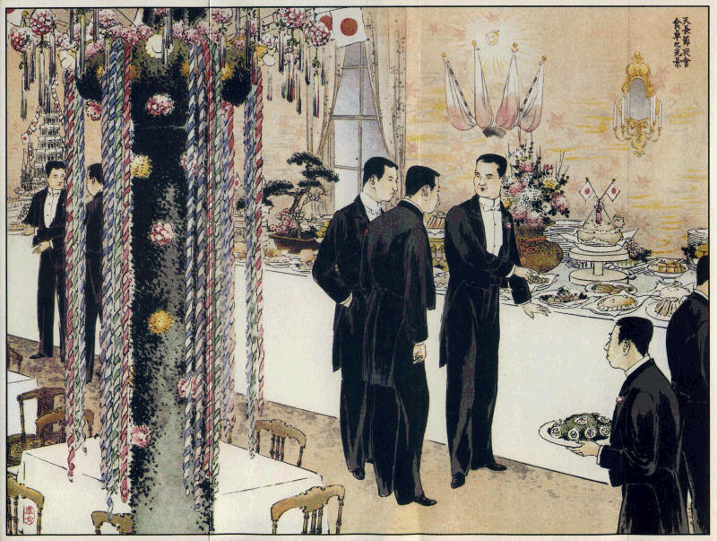
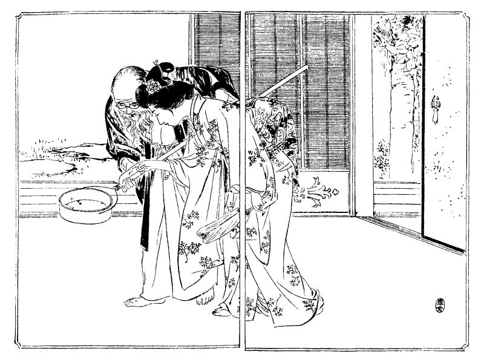
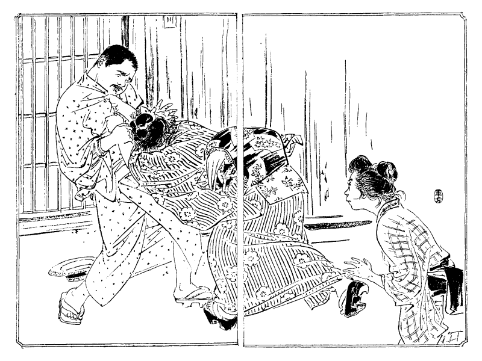
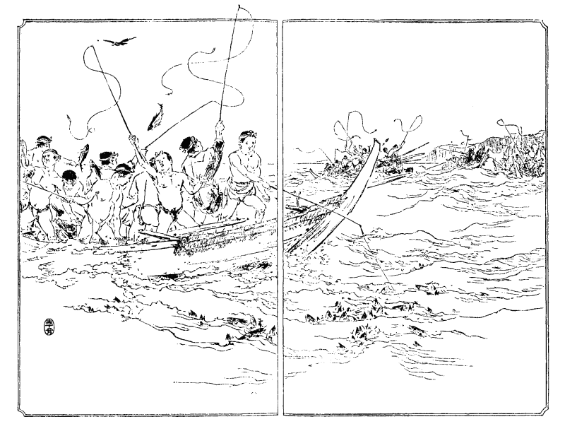
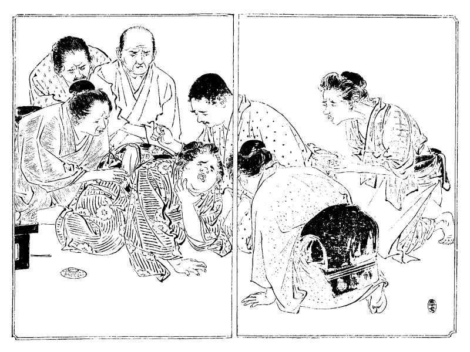
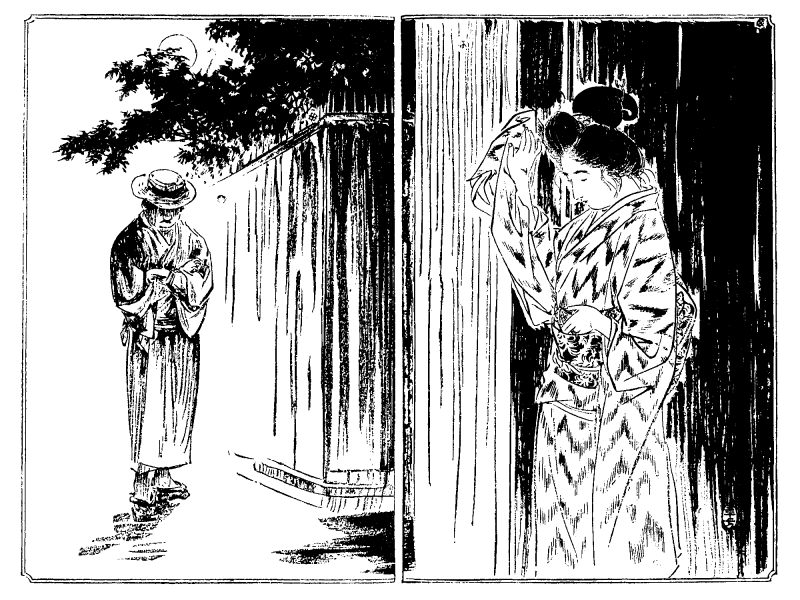
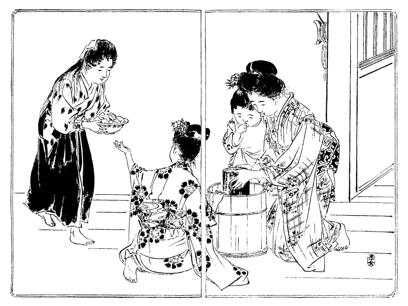
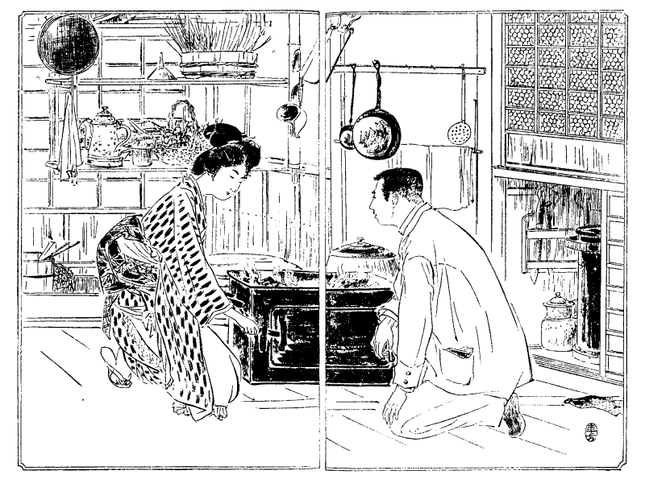

［＃ページの左右中央］
［＃改ページ］

［＃改ページ］
○天長節夜会食卓の真景（口絵参照）
巻頭の口絵は明治三十六年十一月三日帝国ホテルに開かれし天長節夜会の食卓を写せしなり。食堂は二十間に八間の長方形にて周囲は紅葉流しの幔幕を張詰め、天井には牡丹形の紅黄白色常盤の緑を点綴す。中央の太き柱は薬玉および小旗を以って飾られ、無数の電灯は四方に輝きて目映きばかり。当夜の料理は前壁に対せし一列の食卓に配置さる。有名なる夜会の事とて一千有余名の来賓に充つるその献立の如何に按配され、厨人の如何に苦心せしやは料理法に重きを置かるる者の等しく知らんと欲する処ならん。今その概要を説明せんに第一は生蠣および魚卵（ウィトル、カビヤ）の料理にて生蠣はレモンの汁を湛え、カビヤは魯西亜産鱒魚の卵の製したるものなり。第二は冷製魚肉玉子掛汁および寒天寄物（マヨナイズ ド サモン、アンギール ア ラ ゼリー）にて冷製魚肉玉子掛汁は鮭の冷肉に玉子の黄身にて作りたる掛汁を添え寄物は鰻の肉をゼリーにて寄せしものなり。第三の料理は雁肝冷製寄物（アスピック ド ホアグラ ド ストランボルダ）といい雁の肝をゼリーにて寄せたるもの。第四は豚肉冷製寄物（ジャボン デコレ ア ラ ジェリー バアンド フルツ アッソルチ）にしてハムを寄せしもの。第五は冷製混肉および冷製饂飩粉入鳥肉（パテ ド ジビィ、ガランチン ド ワライ）とて混肉は軍鶏の肉へ豚の肉を砕きて詰めしもの。饂飩粉入鳥肉は雉子の肉を用いたるなり。第六の松露入冷製鴫肉（ベカシン トリッフェ）は仏蘭西松露を砕きて鴫の腹へ詰め、第七の海老および混菜入洋菜（サラダアラルース、サラダ ド オマー）は野菜類および海老を用い、第八の氷酒（ポンチ、ロヤル）は酒を氷結せしめしもの、第九の牛酪製菓子および玉子入製菓（バボロア ア ラ シャンテー、プウダン アラ デプロマ）は牛乳の寄物にて玉子入製菓は菓物を包みたり。第十は三鞭入寒天寄冷菓（ジェリー オー フリイ ア ラ シャンペン）にてゼリーに三鞭の入りし菓子。第十一の牛酪製氷菓（ムース オー フレイズ）は菓物入の菓子なり。第十二の挽茶および香入氷菓（グラス オー テイ、グラス ア ラ ワニー）は挽茶および香料入のアイスクリーム。第十三の果実製菓（ガドー エ フルツ）は水菓子と干菓子なり。これらの料理はいずれも精選せし佳品を以て調理せられたれば味の美なること内外に誇るに足らん。会食の時間となれば賓客は三々伍々幾多の卓に倚って祝杯を挙げ二十余名の給仕人燕尾服にて食卓の間を周旋す。名にし負う一年一度の夜会主客陶然として歓声場裏に和気の洋々たる事春の如し。
［＃改ページ］
結婚問題は今の世の人がともに心を悩ます所、男子も悩み、女子も悩み、父兄
親戚に至るまで
皆なこの事に心を
苦めざるなし。中川は
予ねてこの問題を講究しけん「
玉江さん、今の世の
有様で見ると家庭の幸不幸は全く運任せです。男女ともお
互に未知の人と結婚して運が
好ければ幸福を
享ける、運が悪ければ不幸を招く。運の
外に何の頼みとする所はありません。それならば男女の交際法を開いてお互に選択させたらばどうかというのにこれもまた危険
千万です。何となれば若い男女はまだ配偶たる人物を鑑別するだけの見識がありません。自分では鑑別し得る
量見でもまだ社会の経験が足りないから到底確実な判断を下す事が出来ません。そういう時には多く道理を
以て判断せずして感情を以て
愛憎を
肆にします。感情を肆にする結果が恋愛という過失に
陥って自ら不幸の運命を作り出します。それではどうしたらいいでしょう。この事については私も娘読本を
著す時
委しく意見を書くつもりですが簡略に申せば
先ず英国風の習慣を採用するのが上策かと思います。英国の
風は米国のような自由結婚でもなし、
仏蘭西辺のような圧制主義でもなし、ちょうどその
中庸を得て親が娘のために毎週一度位若い男を家へ招いて身分相応の
御馳走をします。娘を男と交際させるにも必ず親が監督していて若い者ばかりは出しません。その内には親にも気に入り娘にも気に入るような男が出来るとそれから結婚の約束が成立つので格別な場合を除くの外は大概そういう風になっています。
我邦でも近頃は上流社会の
中に結婚の約束が成立つと婚礼式を挙げない以前に親睦のためだといって男女を交際させる家もありますけれども、既に約束の成立った後ですから交際してみてイヤになったともいえず、運命を定める点においては約束しない前に交際するほどの功能はありますまい。私は娘を持った親たちになるべく広く若い男と交際してその中から娘の
婿を
択び出さん事を
勧めたいと思います。そこでちょっと注意したいのは決して若い者同士を交際させるという意味でありません。親たちが若い男と交際してみて
緩々その人を鑑別するのです。親たちが交際すれば娘も自然とその人を知る事が出来ますけれども娘自身が主人になって男と交際するのではありません。英国風が好いといっても英国と我邦とは事情も違い娘の気風や経験も違いますから我邦では親たちが主として娘のために婿を択んでやらなければなりません。といって今のように
媒妁口で相談を
極めて見合をさせて結納を取かわせるというような軽率極まる習慣は
極くいけません。親が
平生若い男と交際してあくまでも委しくその人となりを知った上の事です。そこで親がこの人を
択り出して娘にどうだと聞いた時娘の心にも異存がなければ
忽ち相談は
纏まりますけれども、娘の心からあの人が
好いとかこの人に
嫁したいとか
我儘を言出すようでは生意気千万です。娘は親の択り出した人に対して
可否の返事をするだけに
止むべきものです。決して自ら択り出そうと思うべきものでありません。何となれば娘の時代にはまだ人を択り出すまでの経験と見識がありませんから最も老功なる人に択り出してもらうものと覚悟すべきです」
中川「しかし娘さんの
中には両親の揃っていない人もありましょう。
親戚の
厄介になっている人もありましょう。あるいは全く独立している人もありましょう。たとい独立の生活を送っている人でも我が配偶を定める時には最も経験に富んだ老功の人に判断してもらわなければなりません。我が心を主として配偶者を択り出したらば必ず後悔する事が出来ます。特別な賢婦人ならイザ知らず、若い女の心は道理よりも感情に傾きやすいから感情を以て
良人を択んだら十人が九人まで大間違を起します。
旨く
中ってもいわゆる
八ツ
中りの
僥倖に過ぎません。若い女は自ら良人を択ぶの能力がないものと覚悟しているのが一番です。その代り親たちに
択出してもらった時その可否を決断する場合にはよくよく考えてみて、自分に不満足がなかったら承知の返事をしてもよいが不満足のあるのに心を曲げて服従するには及びません。男女の間には性理上の適不適という事があります。いくら先の男が完全無欠に見えても性理上の不適合があったら決して娘の気が進みません。気の進まないのを
強いて結婚すれば必らず後に不愉快を感じて家庭の不和が起ります。それも一度見合をしたばかりで
碌に顔も見ず口も
利かないで夢中でお嫁に行くようなのは気の進むも進まんもありませんけれども親たちが久しく交際して自分もしばしばその人を見る場合があれば
自から気の進む人と進まない人が出来ます。我が心を判然と親に答える事だけは
如何に内気な娘でも
自ら実行しなければなりません。それがいわゆる自分の運を作り出す事の一つです。といって自分が気の進むのばかりを
好いと思って自分で男を択り出しては間違の
基です。ちょうど食物を料理すると同様で生理上や衛生の方法を構わずに自分の好きなものばかり
無闇に食べたら必ず胃を害すでしょう。大体の料理法は必ず老功の人の
教を受けて生理上衛生上に適したものを作らなければなりません。しかしその料理でも人の体質と胃腸の
工合とによってどうしても気の進まないものが出来ます。
牡蠣は滋養になるといっても人によっては牡蠣を食べると必ず胸の悪くなる人もあります。女の
妊娠中には平生好きなものがどうしてもイヤで食べられない事もあります。そういう時に気の進まないものを無理に食べてはかえって
身体の害になります。それと同じように女が良人を択ぶのも老功な人に適当な候補者を見立ててもらって、それを取捨するのは自分の心で定めなければなりません。それからモー一つ良人たる人の資格はどういうものが一番良いかという点がむずかしいので、学者が
良いという人もあれば軍人が良いという人もある。工学者が好まれる事もあり、実業家が望まれる事もあります。これには決して可否を申す事が出来ません。職業に
高下貴賤の別がないと同様に良人にして
好い
悪いという区別もありません。時の場合と人の望みによって家庭の幸福に変化はありませんけれどもただ一つ何人にも応用すべき要点があります。それは
外でもありません。男でいえば良人たるべき覚悟のある人物、女でいえば妻たるべき覚悟のある人物です。お互にこの覚悟ある人物を択ぶのが肝要で、これが即ち自分の運を作り出す大主眼です」と得意になりて理想を説く。
玉江嬢はいまだ
悉く中川の言葉を解し得ず「覚悟という事をよくおっしゃいますが、人の
良人となり妻となってその覚悟のない人もありましょうか」中川「
滔々たる天下
殆ど覚悟のない人ばかり多いのです。一時性の覚悟はあっても永久性の覚悟はありません。男子が一たび妻を得たらばこの妻の
外に愛すべき婦人は天下にない。終生外の女に心を移さぬと覚悟していたらば他日
我妻を離縁するというような不徳は出来ますまい。妻もその通りに覚悟していたらば良人に対して不平や不足も出ない
訳です。もっとも一方に覚悟があっても一方に覚悟がなければ決して夫婦の情愛は成立ちませんけれども双方に覚悟があって覚悟の範囲内で
相愛し相親しんだらばこれほど幸福な事はありますまい。今の人は自由とか自然とかいう間違った考えを抱いて覚悟だの範囲だのというとさも自由や自然を制限せられるように感じますが覚悟がなければ何人も決して安心立命の地を得られないものです。八畳敷の座敷を我が居室と定めてその中に悠々自適するの覚悟があればその人は
自ら幸福を感じ得られますが八畳では狭い十畳にしたい、十畳では狭い十二畳にしたいと
何処までも慾望を進めていったら千畳敷の座敷へ入っても満足の心は起りません。幸福とは何であるといえば
自ら満足するという事です。満足は何であるといえば覚悟の範囲を充たすという事です。良人は妻に満足し、妻は良人に満足するのが幸福です。しかるに今の世の夫婦たる者を御覧なさい。
互に双方で満足して人間
無上の幸福を
享けている人が
幾人ありましょうか。結婚の前後一時性の満足は沢山ありましょうが終生
渝らざる永久性の満足は
滅多にありますまい。つまり覚悟のない人たちが寄り合って互に不足ばかりいうから家庭の幸福を享けられないのです。家庭の幸福は富の力でもなし、才智や芸術の力でもなし、全く覚悟の力です。世間の親たちや娘が婿の候補者を択ぶ時は必ず過去の経歴を問いますがこれも無論必要の事に違いありませんけれども良人たる資格は過去の経歴よりもむしろ未来の覚悟
如何にあるのです。今までは品行方正であったと保証してもそれは銭がないために
止むを得ず方正らしく見えたのか、あるいは父兄の監督が厳しかったのか、あるいは他に制裁があったのか、つまり他働的の品行方正は未来の保証になりません。その人に
確乎たる覚悟があって身心を高潔に保つ人でなければ結婚後
或る動機のため品行が
忽ち崩れて酒道楽や女道楽に
耽らないとも限りません。実際そういう人が世間に沢山あります。学校時代は非常の勉強家だといっても優等生になりたいため即ち競争の結果で勉強した人は競争が
止むと勉強も止みます。心の趣味から勉学する、即ち勉強を道楽にする人は
何時になっても止みません。正直といってもまだ不正直な事を知らないために正直な人もあり、親切らしく見えても報酬を得たいための親切もあります。女の顔を見ると
無闇に優しくする人が妻を持ってから案外その妻に優しくなかったり、結婚の当座だけ妻を大切にして一、二年も過ぎると
奴隷扱いにするような人物も
寡くありません。
詮ずる
処、過去の経歴は未来の保証となすに足らず、過去の善行は未来の覚悟となすに足らず、女が
良夫を択ぶには過去を問うと同時に未来の覚悟如何に重きを置かなければなりません。自分にもその覚悟があって配偶者にもその覚悟のある人物を択んだらば男も女も自ら幸福の運命を作る事が出来ましょう」と中川の意見もまた一種の風変り。
あまり
話しのむずかしきに玉江嬢は遂に要領を得ず「中川さん、なるほどおっしゃる通りには違いありませんが今の
世中でどういう風にしたらその事が出来ましょう」中川「それは色々な方法もありますが誰でもその心掛でいれば自然と
好い方法を案出する事も出来ましょう。
殊に
貴嬢のお家なんぞは社会の上流に立って
如何なる人物とも御交際が出来ますから
阿父様のお心掛次第で貴嬢のために如何なる上等のお
婿さんをも択り出す事が出来ます。何でもなるたけ大勢の候補者を
聚めてなるたけ
緩々一粒択りにしたらきっと無類上等のお婿さんが出て来ますよ、アハハ私も阿父様にこの話しを申上げておきたいと思います。それについて私は先日のお礼に一度阿父様をここへお招き申して手料理を差上げたいと存じますがこんな家へでもおいで下さいましょうか」玉江嬢「それはモー
大悦びで
伺います。台所の改築について
委しく御相談をしたいから近日上ろうと申しておりました。御招待下されば何ほど悦びますかしれません。何日頃伺いましたらばよろしゅうございましょう。父は
何時でも暇でおりますから御都合次第で伺わせます」中川「さようですね、その日取はまだ
極められません。実は珍料理を差上げたいと存じますので、材料をいつ得られましょうか。材料次第で前日に申上げたら翌日お
入来を願いたいので」玉江「ハイ、大層むずかしゅうございますね。珍料理とあれば何より悦びましょうが材料を得るのが御困難ですか」中川「これには少々
仔細のある事で料理の一つに
鮎を使おうと思っています。しかるに鮎の極く上等を手に入れるのは非常の困難で、私は以前国にいた時分鮎釣が好きでしたが東京へ来てからも暑中休暇には毎度近郊の川筋へ鮎釣りに出かけました。自分で釣ってみると鮎を択ぶ事が巧者になって容易なものは料理に使えません。その代り如何なる
贅沢家も金満家も金銭の力で口に入れられないほどの珍味も差上げる事が出来ます。全体鮎の味は川によって違います。玉川の鮎よりは
相模川の鮎が上等ですし、相模川の鮎よりは
酒匂川の鮎が一層優っています。また同じ川でも場所によって味が違います。一口に玉川の鮎が
不味いといいますけれども
羽村の
堰から
上になると鼻曲り鮎と申して味もなかなか好くなります。酒匂川の鮎も本流よりは
河内川の支流で
漁れた鮎が
美味うございます。
何故場所によって味が違うというのに鮎の食物たる
硅藻の種類が違いまたその多い
処と少い処とで違うからです。硅藻の事を俗にアカと申しますが一番上等なのは極くの清流に大きなカブラ岩が沢山あってその岩が極く緻密な質で
滑かだと青アカといって極く細かい
柔い硅藻が附きます。粗質な岩には俗にマグソアカという褐色の硅藻が附きます。その上等なアカを沢山食べている鮎でなければ肉が肥えて味が良くなりません。しかし上等な場所と申しても、三日も四日も大雨が降り続いて大水が出て岩に
附ている硅藻を押し流してしまうとその後五、六日間に
漁れた鮎は
餌に飢ているから味が悪うございます。といって二十日も一月も晴天が続くと川の水が減少して鮎の
住み
場が
狭くなりますのに硅藻が
余り
生長し
過て
硬くなりますから鮎はやっぱり餌に飢て味が悪くなります。硅藻も野菜と同じように
発生たばかりの若芽が柔くて
美味いのでその若芽を充分に
食た鮎が最も肥えているので漁夫仲間では新しい硅藻の事を新アカと申します。何でも雨が降って古いアカを押流した後照り着くような晴天が五、六日続くと新アカが沢山出来ます。それを充分に食べたような鮎を上等な場所で漁ったのが最上等の味になるのですけれどもそういう場所に
居着の鮎と乗り込みの鮎とで味が違います。居着の鮎とは三、四日前からその場所に住んでいて上等のアカを
飽食していたもの、乗込の鮎とは
外の場所から餌を捜しながら
昨日か今日
辺り乗込んで来たものです。馴れた漁夫は一見してこれは居着これは
乗込と
鑑別けます。色も違い形も違い
匂も違います。ですから一口に何川の鮎だといってもどういう時にどんな場所で漁ったのだかそれを鑑別けなければ味が非常に違います」と食物を精選すれば何物にも
皆なこの理あり。
鮎の講釈に玉江嬢も感心し「何のお魚でもあるいは野菜でも
精しく吟味したらその通りでございましょうね」中川「
如何にもこの通りです。川により、場所により、時によって味が違うばかりでなく、
漁法によっても味が違います。網で
漁ると魚が
煩悶して川底の小砂を呑みますから味が悪うございます。引掛けるのもありますが
飢えた鮎でも何でも引掛けますから味が良くありません。
潜りといって水の中へ人が潜って捕るのもありますがこれも飢えた魚を捕りますから前の通りです。一番味の
佳いのは友釣で漁ったので
活きた鮎を水の中へ泳がせると外の鮎が
追駆けて来て
鉤に掛ります。それは鮎が充分
餌を食て
心地好く遊んでいる時でなければ決して友を追いません。つまり味の
佳くなった鮎ばかりが釣れるので、飢えた鮎は決して漁れません。
外の法で漁った鮎の腹を裂いて見るとまるで、硅藻のない事があります。
雨上の
後には少しもありません。少しずつでも硅藻があるようになるとモーソロソロ友釣が出来るといって
支度をします。友釣で漁った鮎は腹の中に硅藻が沢山あります。
殊に
居着の鮎は
乗込の鮎よりも沢山硅藻を食べています。ですから友釣の鮎でなければ極く
美味い味がありません。それも朝釣れた魚を

の中へ入れて晩まで背負って歩いたのと晩方に漁れたのを
直ぐ料理するのとはまるで味が違います。それから
料理方によって味の違うは、
勿論、鮎によって料理方を違えなければなりません。
酒匂川の鮎は色が青くって脂肪分が
寡いから
鮓に製したり酢の物に料理すると色も変らず味が結構です。酒匂川筋の
山北停車場や、吉田島や
国府津停車場で売っている鮎の
鮓が評判なのもそのためです。しかし酒匂の鮎が足りなくなると
馬入川や
狩野川の鮎を使う事がありますから随分雑種の鮓が出来ますけれども
先ず酒匂の鮎ならば鮓に適しています。それも
雄よりは
雌の方がようございます。しかるに酒匂の鮎をフライにしたり外の料理に使うと脂肪分が寡くって骨が硬くってその味は遠く早川の鮎に及びません。早川の鮎はその代り鮓に不適当です。こういう風に料理方も魚によって適不適がありますし、季節によっても変化がなければなりません。私は
貴嬢や
阿父様に一番美味しい鮎を御馳走をするため近日の
中に極く適当な日を択んで一番汽車へ乗って自分で釣に
往って足りなければ漁夫の持っている鮎の一番上等なのを買って
匂いの抜けないように
山藤の葉へ包んで氷詰めにして帰って来て、その晩は氷で冷しておいて
翌日に御馳走申したいと存じます。それから
犢のシブレといって
喉の
処に極く
僅かばかりある肉ですが、米国ではスウィトブレッド、甘いパンといって非常に珍重するものをお料理に使うつもりですけれどもこれは
滅多にない肉で犢一頭に必ずある
訳でありません。勿論その部分はあっても質の悪い犢ではその肉が生長していません。先ず犢十頭を
屠ってみて三人前の料理だけが取れるか取れないかというものですからこれも
屠牛場へ頼んで持って来てもらいます。その外にまだ珍らしいものばかり
取揃えたいと思いますから用意の出来次第御通知申上げます。どうぞ是非阿父様とお二人でいらしって下さい」と先ず
前触が大層なり。さりながら心尽しの御馳走とはかかるものをやいうならん。
○犢の肉は親牛の肉より軟かにて味よし。本文にあるシブレの外に手軽き料理はチャップ肉を一節ずつに骨を付けて切り肉たたきにて能くたたき両面へ塩胡椒を振掛けおきフライ鍋にバターを溶かし肉を入れてビフテキよりも一層丁寧に血色の消えるまで焼くなり。この料理をビーフチャップという。附合せには馬鈴薯を拍子木に切りサラダ油にて能く揚げ塩胡椒を振掛け肉の周囲に並べるがよし。
○犢のカツレツは腿肉を厚さ二分幅一寸ほどに切り肉たたきにてたたき塩胡椒を振掛けメリケン粉を付け玉子の黄身にて包みパン粉を付けサラダ油にて揚げるなり。附合物には馬鈴薯を湯煮て裏漉に掛け薯一斤にバター大匙半分、牛乳大匙二杯、塩小匙一杯の割合にて混ぜ火に掛け能く掻廻して煮たる物を用ゆ。この附合物をマッシポテトという。
○犢のシチュウは腿肉を一寸角に切りバターをフライ鍋にて溶かし肉を入れて両面とも強火にていためシチュウ鍋へ取りブラウンソースにて一時間ほど弱火に掛けて煮るなり。ブラウンソースはバター一杯をフライ鍋へ入れメリケン粉一杯を入れて黒色になるまで炒りセリー酒大匙一杯、スープ一合を入れ塩胡椒にて味を付けたるものなり。附合物には一旦湯煮たる馬鈴薯に人参を肉とともに煮て用ゆ。
○犢のフルカセーは腿肉一斤を水一合へ入れ四十分間湯煮て六ツ位に切りバター大匙一杯、メリケン粉一杯、牛乳一合にて白ソースを造りその内へ玉子の黄身二ツ入れて手早く掻廻し塩胡椒にて味を付け前の肉を入れて弱火にて二十分間煮るなり。
○犢のロースはサーラエンという肉の骨付き弐斤ほどへ塩胡椒を振掛けテンパンへ入れその周囲へ玉葱一個人参二本を細かく切りて添え肉の上へバター大匙一杯を載せスープ大匙一杯を掛け一時間ほど火にて焼くなり。ただし十分間ごとにテンパンを抽出して肉より出たる汁を匙にて掬い取り肉の上へ掛くべし。出来上りたる時は肉だけを皿へ移し残りの汁にバター大匙半分、スープ大匙一杯と塩胡椒とを入れてテンパンのまま火に掛け暫らく煮て肉の上に掛けるなり。別に馬鈴薯を能く湯煮て一旦水を切り鍋のまま火に掛けて塩胡椒を加え十分振混ぜてカラカラになし附合物に用ゆ。これをボイルドポテトという。
心尽しの御馳走は十数日の後中川兄妹の苦心によりて漸く整いぬ。
広海子爵は招待に応じて玉江嬢とともに中川家へ来れり。小山夫妻も招かれたれどもさり
難き用事ありとて参会を断り、隣家の大原も前日までは来会のつもりなりしが今朝に至りて大阪より電報達し両親と
叔父叔母が帰り来るとの知らせにお
代嬢のため引留められて出る事
叶わず。中川家の客席は人少くして淋しけれども広海子爵は結句他人を交えぬがよしと心
窃かに悦ぶ所あり。主人の中川は胸中の抱負こそ敢て人後に落ちざれども書生上りの
痩世帯、爵位ある上流人士を家に招きしは初めてなれば何となく心苦しく覚えて事ごとに
言訳けし「広海さん、こんな狭くるしい処へお呼ばれなすったのはお初めてでしょうからさぞ
御究屈にお
思召しましょう。それに私は
世人に向って家屋の不完全を攻撃しながらこの家は御覧の通り何事も不完全だらけです。これも借りている家ですから
致方がありません。どうか行届かない処は御容赦なすって今日は
緩々お遊び下さい」とまた昔日の元気に似ず、今日に限りて
座蒲団の汚れが
殊に目立ち、畳の
焦痕が
俄に拡がりしように覚ゆ。広海子爵は主人の
抑損するを気の毒がり「イヤ中川さん、決してそんな事をおっしゃるな。
貴君にも似合わんでありませんか。南陽の
諸葛が
廬、
西蜀の
子雲が亭、何の
陋かこれあらんという事もあります。それに御掃除が行届いていて大層お
綺麗です。
此方には
蠅がおらんで何より結構ですね。
我輩の家なぞは
隣屋敷に馬が飼ってあるためか蠅が多くて
仕方がありません。蠅のおらんのは何より
心持がよい」と
頻に
羨むはお世辞にあらず。中川はここにおいて少しく心に勇気
出でたり「イヤ広海さん、この家もなかなか沢山の蠅で、御覧なさい、天井にはあの通り蠅の
痕が胡麻塩のようになっています。しかし蠅というものは衛生上に
極く悪いもので伝染病の紹介者にもなり食物を腐敗させる原因にもなり、台所の大敵でございますから毎日蠅を征伐致します。私は世間の家で庭へ草が生えると草取男を雇って取らせるのに、
何故台所のために蠅取男を雇わないかと
怪みます。庭の草は直接に衛生の害となりませんが台所の蠅は少し油断すると
直ぐに食物の上へ飛んで来ます。なかなか
蠅除をかけた位で追付きません。
掃溜へたかって腐敗物を
舐めた
嘴で出来たての食物を舐めますからその気味の悪い事、つまり有毒細菌を運搬して歩くのです。その上に卵を生むしそれが
孵化ると
蛆になりますし、蠅ほど不潔なものはありません。衛生を重んずる人は庭の草よりも先に台所の蠅を取らねばならんかと思います」広海子爵「なるほどそうですね。しかし座敷の蠅位は
黐でも取れますけれども台所の蠅は容易な事で取り尽せません。
殊に我輩の家の台所は
貴君の攻撃を受けた通り旧式で不潔で
闇いのですから蠅は安楽国と思って
無闇に繁殖します。とても人の力で取り尽す事は出来ません」中川「といって取らずにおいたらばなお
殖えましょう。取り尽せないまでも取って御覧なさらなければ気味が悪くって
溜まりますまい。蠅も最初の内に精出して毎日取っているとそんなに沢山は殖えません。外から飛んで来るばかりで家の中で子孫を殖やしませんが十日も二十日も取らずにおくと子を生み孫を生んで二、三匹が幾千匹にも増加します」広海子爵「そうには違いありませんがしかし蠅取男を雇って一日か二日取らせても我輩の家の蠅は容易に減りそうもありません。のう玉江や」玉江嬢「ホントにあの蠅には困りますねー」中川
打笑い「私を蠅取男にお雇いなされば一晩の内に取尽してお目にかけます」と何やら奇策ある
如し。
蠅は
何人も
苦む所、広海子爵主人の奇言に驚き「中川さん、一晩で台所の蠅を取尽せるなら何ほど高い
雇賃でも出しますがどういう方法を以てお取りなさいますか」中川「ハイ、
訳はありません。先ず試して御覧なさい。即ち石油を用いて夜中に取るのです。ちょっとの試験なら小皿か浅い小さな
金盥のようなものへ極く悪い石油を入れて夜分天井にいる蠅の下へ持って行くのです。夏の
初には二、三寸離れていても蠅は石油の匂いで
昏倒して石油の中へ落ちてそのまま死にます。柱にとまっているのでも下から小皿を出すとコロコロ落ちます。日中は蠅が舞っていて取るのに不便ですし石油を持って行くと逃げ出しますから夜になって蠅が残らず天井へ
聚まった時今の方法で取るのに限ります。しかし小皿を天井へ持って行くには一々
踏台を持運ばなければなりませんから私の家では
蠅取桶を
拵えてあります。お
登和や、その蠅取桶をここへ持って来て御覧。広海さん、これは私が
工風したので深さ二寸位なブリキ製のバケツのようなものへグルグル廻る柄をつけて柄の先を長い棒へ通して誰にでも下から天井へ届くようにしたのです。この底へ極く悪い匂いの高い石油を入れて天井の下を持ち廻ると一室内の蠅は十分もかからずに取れてしまいます。しかし夜でなければいけません。蚊も取れますし、外の虫も取れます。石油は強い殺虫剤です。下水や
溝へ流しておくと
孑孑が死にますから蚊が発生しません。稲の害虫をムラという悪い石油で殺す事もあります。
土竜が庭の土を
揚げて困る時は庭の四方へ石油を
滴らしておくと決して土竜が入りません。鉄や
真鍮の物を磨くにも石油で綺麗になりますし、なかなか功能が多いものです。この蠅取桶さえあれば台所でも座敷でもいるだけの蠅を取ってしまいます。日中に外から飛んで来ても毎晩ちょいちょいと取っておけば決して沢山には
殖えません。繁殖するのは家の中で子を生むからです。
掃溜なぞへも折々石油を振りかけておくと蠅の卵が死んでしまいます。蠅は食物の大敵ですから
貴老のお家でもこの器械を一つお造らせなすったらいいでしょう。これで蠅を取るのはなるたけ寒い晩がようございます。寒いと蠅がよく飛び得ません。秋になると俗にいう
腰抜蠅が沢山出て来ますが、あれなぞは石油を持って行くとコロコロ落ちます」広海子爵「早速造らせます。なるほどこれなら誰にでも天井へ持って行けます。オヤあの隅に蠅が一匹とまっています。試しに取ってみましょうか」中川「取って御覧なさい。日中でも手早く伏せれば取れます。お登和や、少し石油を
注いでお
進げ」ととんだ処にて蠅取の試験が始まれり。広海子爵自ら長柄の蠅取器を携えて天井の蠅を取り「実に妙ですな、蠅の下へブリキの桶を突出して早く伏せると蠅がコロリと落ちて来ます。これならば一晩かからんで台所中の蠅が取り尽せますね」中川「しかし石油ですからランプの上へ
顛覆して火事を出さないようにお気をつけなさい。蠅ばかりでありません。熱い晩には色々な虫が飛んで来て天井へたかりますから石油で取るのに限ります。ソラ向うの柱にも蠅が一匹います。あれを取って御覧なさい」広海子爵「なるほど、オヤ逃げた。アー、天井へとまった。ソラ来たぞ、こうして下から伏せれば
直ぐに落ちて来る」と堂々たる華族の君も
興に乗じて蠅取男となりおわんぬ。

○蠅取器械は夏の初めか秋の末に用いて著しき功験あり。盛夏には蠅の勢強き時なれば竹あるいは木の棒を二尺位の長さに切り黐を全体に塗付けて天井へ三尺おき位に吊下げおくも良し。
何ぞ頭の蠅は追い
難しという、人智進めば天井の蠅も取り尽すものを。広海子爵は蠅取の試験を済ませて席に戻り「アハハ面白かった。中川さん、こうしてみると何事も研究して出来ない事はありませんね。出来なかろうと断念して研究しなければ何事も出来ない。つまり人間には研究の心ほど大切なものはありませんね。料理の事はその通りで
我輩は今まで毎日西洋料理屋から二品三品ずつ取寄せて食べていたがどうしてこういう料理を作るかと研究した事もありません。しかるに玉江が家庭料理を習い初めてから西洋料理も家で出来るようになるし、今まで夢中に食べていた品物もこれはこうして
拵えた、これは悪いバターを使ったから胸に持つなぞと段々その味も分って来ます。その代り困る事には味が分ると同時にアラが知れて今まで
美味いと思った西洋料理屋の品物がこの頃は
不味くなってどうしても食べられません。西洋料理も家庭で拵えた方がよっぽど
美味しく出来ますね」と子爵もまた物の味を知りぬ。中川
頷き「いかにもその通りです。家庭料理を毎日召上ったらとても料理屋の料理は召上れません。西洋でも料理屋料理即ちレスタラントの食物というと独身者かあるいは労働者がホンの
腹塞げに食べるので味も何もない最下等のものとしてあります。ただ
価の
廉いのがその長処なので、俗に言う弁当料理です。中等に位するのはホテルの料理で上等の客も泊るからよほど料理に注意しなければなりませんが、しかしホテル料理も大概な人は
我慢して食べるので旅先だから仕方がないと辛抱する位なものです。最上等の料理といえば
何処の国でも家庭料理にあるので、自分の家で好き自由に料理したものほど美味しい事はありません。
我邦の有様もその通りですが我邦では西洋諸国と少し事情が違って料理屋料理はモー一層下等の地位にあります。それは全く客の方からそう悪くしてしまうので、肉の
盛方が少いと小言を言う、上等のバターを出せば
半斤位一度に
舐めてしまう、ビフテキを出すと
生焼だといって焼き直させる有様ですから
如何に料理屋の主人が上等の料理を出したくも料理人が味で腕を見せたくも客が承知しません。肉沢山の安料理でなければ客が満足しません。全体今の処では日本料理よりも西洋料理が格安になっています。京橋辺にいる人がちょいと日本料理屋へ入って食事をすると向うの
見繕いに任せて一人前二円位取られます。給仕の女に三十銭か五十銭も祝儀を
遣ると一度の食事に二円五十銭も取られます。それが西洋料理屋へ
往くと一円も出せば
大威張り、一円以上の西洋料理は一度に食べ切れないほどあります。給仕の男に十銭の祝儀を遣ったところが一円十銭で済みます。しかるに今の人は日本の料理屋へ行くと
楼婢に三十銭も五十銭もはずむ癖に西洋料理屋へ往って給仕人に十銭銀貨の一つも遣らないような人さえ折々まだあるようです。五、六人で日本料理屋へ
登るとオイこれを帳場へ遣ってくれろと二円も三円も祝儀を奮発する癖に西洋料理屋へ往って今日のスープは格別の味に出来ているからと五十銭銀貨を料理人に遣る人もない。つまり日本風の料理屋へ行くと
外見のために
贅沢をしなければならず、西洋料理屋へ往くとなるたけ
吝嗇にしなければならんものと心得ています。こんな有様だから西洋料理屋が進歩しないので料理人に好い腕があっても客に制せられて駄料理ばかり作ります。味も何もあったものでありません。一、二特別の料理屋を除くの
外西洋料理屋の料理といったら
先ず西洋料理中の下等のものです」広海子爵「アハハ今まではその下等の物を
悦んで食べていたのですね」
広海子爵は意外の感あり「西洋料理屋の料理が下等ならばその上は
何処の料理です」中川「
我邦でもやっぱりホテルの料理が中等に位しましょう。ホテルは外国人が泊まりますからマサカに肉沢山の野蛮料理も出せません。もっとも地方のホテルでは外国人がパンの
不味いのに
辟易してソーダビスケで済せるという奇談もありますけれども都会のホテルではなかなか料理に気を付けます。地方でも箱根の富士屋ホテルのように料理の
美味しいので名高い
家もあります。しかしホテルではどうしても商売気を離れませんから家庭料理のように親切な食物は出来ません。ホテルの料理人でも西洋料理屋の料理人でも家庭料理風な上等の料理を作る
技倆のある人物はないとも限りません。客が注文したら随分
作くる者もあるでしょう。しかし商売気に制限せられ主人の
儲主義に制限せられ客の無趣味に制限せられて上等の料理を作ることが出来ないのです。そこで最上等の料理と申せば家庭料理に限ったもので、西洋料理の真の味は上等の家庭料理にあるのです。我々
風情の家庭料理は生活費に制限せられるため毎日上等の食物を
拵える事も出来ませんけれども、
貴老のようにいやしくも日本の華族といわれるお方が料理屋やホテルの料理に満足なさるようではとても我邦の料理法が進歩しません。今日は私が貴老方に
御馳走申すのですから万事最上等の家庭料理風に用意しました」子爵「それはありがたい
訳です。
折角の御馳走もその真価を知らないで食べては味が分りません。全体家庭料理とホテル料理と料理屋料理とはどういう風な区別があります」中川「それは
大区別があります、
譬えば同じスープにしても普通の西洋料理屋のスープは塩湯を飲むようで味も何もありません。それは
何故そんなに
不味いかというと、一、二特別な家を除くの
外大概は牛のブリスケとかイチボとかいうような肉一
斤へ一升位な水を入れて二時間も煮ると肉を出してしまいます。
其処へ野菜を入れて味をつけてちょこちょこと実を投げ込んで客へ出すからその
淡いこと塩湯同様です。スープから出した肉は薄く切ってコールミートになり、細かく砕いてコロッケになり、色々なものに変化します。つまり一つの肉がスープの種にもなり外の料理にもなって二度の勤めをします。スープの味と香気は決してそんなものにありません。ホテルのスープになると随分色々残肉を使いますけれども先ず一通りはスープの順序を踏んでいます。即ち牛の
脛の骨付肉が最もスープに適当な処で、その肉を細かく切り骨もともにおよそ二斤半位なものへ水を五合ほど入れて、火にかけたら最初の内浮いて来るアクを
幾度も
掬い取ってそれから
玉葱一つ
人参二つ、セロリー少々を入れて塩をホンの少し加えて鍋の
蓋をして弱い火で四時間ばかり煮ます。火が強いと
濁ごっていけません。五合の水が二合位に煮詰った時
裏漉しにしてまた布で漉します。それは器の上へ白布をかけてその上へ裏漉を置いて鍋のスープを
注げば一度に二度漉せます。塩と
胡椒で味をつけてモー一度火にかけて実を入れて出すのが通常のスープです。しかるに家庭料理のスープは色々の製法がありますがいずれも大概二日かかります。前の日に今の通りスープを拵えるのですが脛の骨の
髄を抜き去ります。髄が入るとスープが澄みません。この髄はマルボンといって美味しい料理になります。今の通りによく煮詰めて出来たスープを漉して一晩涼しい処に置くと
凝汁になります。
翌日凝汁の上へ浮いた
脂を綺麗に取って玉葱と人参とセロリーとを入れて玉子一つを割って入れて
掻き
廻して弱い火で
蓋をせずに一時間半以上煮ると透明なスープが出来ます。それへ味を付けて出すのが家庭料理の上等スープで実は入れません」子爵「随分面倒ですな。しかし今日はそういうスープを御馳走になるのですか」中川「イイエ、今日のはそれよりも一層上等のスープです」
スープにも際限なし。玉江嬢は中川の談話を物珍らしく思い「スープにも色々のがありますね、外の品物もやっぱりそんな区別がありますか」中川「ありますとも。
譬えばビーフステーキにしても西洋料理屋のはレブロースというような処を厚さ七、八分に切ってヘットで両面をいためたのです。あれではビフテキの味がありません。ホテルのは厚さ一寸位に切ってバターでいためてありますから少しは味が出ます。家庭料理の上等はランとかヒレとかの肉を厚さ一寸五分位に切ります。厚さが一寸五分、長さも一寸五分位ですから先ず四角に切った豆腐のような形です。それをサラダ油と西洋酢と塩胡椒を
交ぜたものへ四時間ほど漬けておいて両面へバターを塗って
鉄網で焼きます。幾度もバターをなすって幾度も焼いて出来上った時フレッシバターを塗って出しますが、その焼き方が非常にむずかしいので、料理人の腕前を
顕すのはこのビフテキにあるのです。外の
込入った料理は面倒な代りにアラが知れませんけれどもビフテキの味を出すのが料理人の一番むずかしい仕事です。ちょうど彫刻師が花や景色を
彫るのは容易に出来るけれども
相撲取を彫るのは一番むずかしいというに同じ事です」玉江嬢「オヤそうでございますか。道理で先生にビフテキを教えて下さいと申してもまだまだモット先へ行かなければ教えられないとおっしゃいました。私はビフテキ位何でもないと思っていましたのに一番むずかしいものですかね」中川「ビフテキが上手に焼ければ料理法の卒業証書が出せます。まだまだ
貴嬢も急の事ではビフテキへかかれませんね」玉江嬢「カツレツなんぞは
如何でしょう、あれも区別がありますか」中川「カツレツも西洋料理屋のは鳥ならば
一旦ザット
湯煮て塩胡椒を振かけてメリケン粉へくるんで玉子の黄身と白身を
掻き
交ぜたのへくるんでパン粉へくるんでヘットで揚げるのです。下等の西洋料理屋ではその玉子へ水を割って玉子一つを十五人前位のカツレツに使うそうです。附合せが
先ず
人参とジャガ芋位ですな。ホテル料理になりますと鳥の肉を玉子の黄身へくるんで一旦ヘットでザット揚げてそれからバターで本式に揚げて新豆位を附合せにします。家庭料理のカツレツは鳥や牛ならば
肉挽器械で細かくして玉子とパンの
心とナツメッグと塩胡椒で固めて粉へくるんで黄身をつけてパン粉へくるみますが大概は羊の肉を使います。マットンチャプといって背の肉を薄く切っておきます。別に
犢の肉を
裏漉しにして
鑵詰の雁の肝の裏漉しにしたのを交ぜてそれを羊の肉へ
蒲鉾形に塗りつけて先ずメリケン粉をつけて玉子の黄身へくるんで、
生パンの裏漉しにしたのをつけて、新鮮なバターでジリジリと揚げます。その附合せは上等の
仏蘭西豆か何かでセリーソースをかけます。それはバターを鍋で
焦がす位にいためてセリー酒を注いで塩胡椒で味をつけたのです」玉江嬢「マア大変ですね、コロッケなんぞもやっぱり違いましょうね」中川「違いますとも。西洋料理屋のはスープ
種の肉だの客の残り肉をブラウンソース即ち先日お覚えになった黒ソースへ混ぜて塩胡椒で味をつけてパン粉へくるんでヘットで揚げるのです。ホテルのは冷肉を細かくして玉子の黄味を入れてソースで長く煮込んでそれを
円く寄せて玉子の黄身へくるんでパン粉をつけてバターで揚げます。家庭料理の上等にすると鳥の生肉を肉挽器械で挽いて鑵詰の雁の肝を入れて先日お覚えになった白ソースへ
仏蘭西松露即ちトリフと
西洋茸即ちマシルームとを細かに切って入れて鳥の肉と一緒に塩胡椒を入れて長く煮て一晩涼しい処へ置きます。
翌日になるとズット味が出ますからそれへ玉子の黄身を入れて丸めて裏漉のパンで包んで
鉄網で焼きますが
下手に焼くと崩れますから焼き方が随分面倒です。上等のコロッケには先日お習いになった
赤茄子ソースの上等をかけます」広海子爵「そんなコロッケはとても料理屋で食べられませんね」と初めて家庭料理の
貴きを知りぬ。
とかくの
中に
晩餐の時刻となりて中川家独得の
長食卓は客の前に
持出されぬ。ナイフもフークもスプーンも例の
杉箸も法の如く並べられたり。お登和嬢は今日の御馳走を大原に
賞翫されざるが何よりの心残り「ねー兄さん、小山さん御夫婦も大原さんも今日はどうしていらっしゃらないでしょう。小山さんの方は先日からお
差支があるといってお断りでしたけれども大原さんは今朝までいらっしゃるおつもりでしたからお料理の用意もしてあるのに、御両親が御帰京とはちょうど
生憎な事ですねー」と心には
片時も大原を忘れず。中川も大原の来らざるを残念に思いしが
忽ち表より入り来る大原の声「中川君、今日は大きに失敬した。広海さんもおいでだろうね。僕はこれから新橋の
停車場へ出迎いに行かねばならん。広海さんによろしくそういってくれ給え」と格子戸の外より立話し。中川は玄関へ立出で「マアちょいと上り給え、汽車は何時だ。七時四十分だと、まだ時間は沢山あるでないか」大原「ウム、時間はあるけれどもお代さんが
無闇と
急き
立てるから家を出て来た」中川「ではマア上り給え、今ちょうど御馳走が出る処だ。食べて行っても間に合うだろう、時間が来たら途中で立っても構わん。君の分も出来ているよ。お登和が君に差上げないのを残念に思っている」と
勧むる
背後へそうっと出で来れるお登和嬢「大原さん、どうぞお上り下さい」と兄の言葉について小さく言えど勧むる心は兄にも優れり。大原は御馳走と聞きて足が動かず、その上お登和嬢の心を
籠めたる妙音が我身を引寄せるように覚え「ではちょいとお邪魔をしようかね、広海さんにも先日のお礼を申さねばならん」とこれも理由の一つに数えて遂にそのまま座敷へ入りぬ。子爵との
挨拶も済まざる内にお登和嬢はいそいそとして大原のために膳の上の用意をなし、サッサと第一の料理を持来たりて座中の人々に
薦めたり。子爵と玉江嬢とは席に就きぬ。大原も頭を
掻き掻き
食卓の前に進み「僕はあまり遅くなると困るからね」中川「マアいいさ、一つ二つ食べて行き給え。今日のは珍料理だよ、最初に出たのは何だか知っているか」大原「一向知らんね、妙なものだ」中川「それはカビヤカナペールというのだ」大原「何の事だね」中川「即ち
魯国産の
鱒の子だ。
鑵詰の鱒の子へレモン汁を少し
滴らしてパンへ塗りつけて
周囲へレモンを切って付けたのだ」大原「なるほど、初めてお目にかかる、これは
美味い」とムシャムシャ食べ初めぬ。カビヤに続いてお登和嬢が
珈琲茶碗へスープを持ち来りぬ。広海子爵スープを
歃りて「なるほどこれは非常の絶品です。
先刻お話しになったスープとは違いますか」中川「違います。それは新発明の
昆布スープで、昆布の極く濃い
煎汁を七分、先刻お話し申した上等の牛スープを三分の割合で製したのです。まだ日本には
何処にもありますまい。といって私どもの発明でもありません。
亜米利加公使館に七年間もいた家庭料理の老練家で
加藤桝次郎という人が日本の食物を西洋料理に応用せんと苦心の結果で
工風した新料理です。昆布は毎度私が申す通り植物質を消化させるに大功があって味も非常に
好いものですがまだ西洋人は昆布の味を知りません。以来はこの昆布スープを世界各国へ広めるつもりです」と中川の意気組は何事も世界的。
○昆布スープに用ゆる昆布は上等の菓子昆布といい極厚きものに限る。
○塩昆布という料理あり。それは鋏にて昆布を五分四角に切り沢山の醤油を入れ弱火にて二時間ほど煮て汁の煮詰まりし所にて火より下し、少しの塩を振混ぜたるものなり。朝飯等に飯の上へ二、三枚を載せ熱き茶を掛けて用ゆれば昆布殊に軟かくなりて味良し。
○揚げ昆布は昆布を長さ一寸幅五分位に切り真中に切り目を入れそれを油にてカラリとなるまで揚げ醤油と大根おろしとにて食するか、飯の上へ置き塩または醤油を加え熱湯を掛け茶漬にて食するもよろし。
第一のスープに新味を感ぜし客は続いて第二のスープを呈せられたり。大原
満不審顔に「中川君、西洋料理で
二色のスープを出す事があるかね」中川「あるとも、日本料理だって二汁何菜三汁何菜という事があるでないか。前に出したのは澄んだスープで今度出たのが濁ったスープだ」大原「なるほど濁っている。味は大層結構だ。これは何のスープだね」中川「それはポーレーデアラレンというのだ」大原「そんな妙な名を言われても更に分らん。何と何で出来ているのか」中川「アハハ分らんかね。それは法則の通り
昨日拵えておいたスープの中へ二、三百目位な
雄鶏を丸のまま入れて塩をホンの少し加えて一時間ばかり
湯煮る。それから鳥を出し、骨と肉を別にして上肉ばかりを
石臼で
搗いて
裏漉へかけるが鳥の肉を裏漉にするのは少々骨が折れるよ。西洋風の
真鍮の裏漉は
直ぐに破れていかん。やっぱり日本風の裏漉が便利だね。上等の家庭料理になると鳥でも牛でも魚でも大概一度裏漉にかけて使うから口へ入ると
溶るようだ。消化が早くって吸収が
好から最も衛生法に
適っている。オット
話しが脇道へ走ってしまったが今の再製のスープの中へ白米を五
勺ばかり入れて
粥のようになるまで弱い火でグツグツ煮てこれもやっぱり裏漉へかける。そこで別に取分けてある上等のスープの中へ鳥の漉した肉七分に米三分の割合で入れて塩胡椒で味をつけて牛乳を五勺ほど加えてドロドロに煮る。イザ出すという前に
鮮しいクリームを一合ほど
入たのがこのスープだ。随分上等の物だろう」大原「驚いたね、僕らがこんなものを食べると口が曲るかもしれん。だが
美味いよ、少し位口が曲っても食べずにはいられんね。アハハ広海さんなぞは華族でいらっしゃるから毎日この位なスープを召上ってもいいのですね」子爵「イヤどう致して。我輩なぞは料理屋料理を最上等と心得ていた位ですから」中川が談話を受取り「しかし広海さん、お見受申せば
貴老のお屋敷には立派な黒塗の
抱車があって車夫も一人いる御様子です。毎日御出勤なさるという御用もないのにかつ二本のお足も御満足であるのに抱車や車夫のため毎月三、四十円をお
費しになるのは何のためですか。私は今の
世人を見るのに用がなくして手車へ乗る人が沢山あります。衛生上から申しても車へ乗るより足で歩いた方が運動になりましょう。運動をして食物を
喫すれば味も好し、消化吸収も
速です。今のいわゆる紳士
輩が車夫に費す金銭を食物に廻したらば中流社会の人でも毎日上等の家庭料理が食べられます。その
外酒飲会へ出席するとか、芸者買の
招伴をするとか、無用無益な
贅沢を廃したらば日本人の富の程度でも随分上等な食物が得られます。つまり家庭料理を進歩させても生活費が増すのでありません。生活費の科目を換えるばかりです。今の
世中は紳士たるものがテクテク道を歩いていると外聞が悪いというように申しますがそれは社会が間違っているので、モー少し社会が進歩したら、オヤあの人は急用もないのに車へ乗って
身体を
搬ばせている、もしや病気になって足が
利かないのでないかとこういう風になりましょう。腰に金時計をブラ下げていても
家では不衛生的な野蛮的な食物を喫しているといわれたらそれこそ外聞が悪いというようになりましょう。是非ともそういう風にしなければなりません」と夢中で
饒舌る間にスープ皿は引込まされて
更りの皿が客の前に
列び「兄さん鮎の御馳走が冷めてしまいます」とお登和嬢の注意。
○鳥のスープは鳥を骨ともブツブツに切り三百目位の鳥一羽に水四合位の割合に入れ強火に掛けて煮上りたる時上に浮きし泡を掬い取り玉葱一個、人参二本、塩少しを入れおよそ二時間ほど弱火にて煮るなり。その他は本文スープに同じ。
○鳥のロースの残骨や肉屑等総べて料理の屑を少しの野菜とともに長く煮てスープを取れば料理物の味付や濁りスープに用いらるべし。
○総べてスープは強火にて煮れば濁りやすきものなれば弱火にて気長に煮るべし。弱火にて長く煮たるスープは濁らず。
鮎の料理は主人が今日の心尽しなり。その味の
佳なる事また
都門半腐の者に似ず、広海子爵は
丁寧に
賞翫して首を傾け「中川さん、私も鮎が好きで諸国の鮎を食べましたがこんな
美味しい鮎は初めてです。お
料理方も違うのでしょうが鮎の
味が格別ですな」と
頻に感心する様子。中川もいささか鼻が高し「それは私が昨日わざわざ汽車で遠方まで出掛けて自分で極く上等の鮎を釣って参ったのです。鮎の講釈は先日玉江さんに申上げましたけれども昨日は幸い極く上等の鮎が手に入りました」玉江嬢もまた味の美なるを賞し「これはどういう風にお料理なすったのです」中川「それは牛乳大匙一杯とメリケン粉大匙二杯と玉子の黄身二つと混ぜておいてそれへ塩胡椒で味をつけて細かに刻んだパセリを加えて、二つの玉子の白身を
逆さにしても落ちないほど泡立たせて前の物と混ぜたのが衣です。鮎をその衣へ包んでサラダ油で揚げたのですが最初は弱い火で長く揚げて
卸す前に火を強くしないと衣がこんなに
膨らんでいません。それを新聞紙の上へ取ってよく油を切ってからお皿へ
載せるのです。この衣では外の魚も何を揚げても結構ですし、牛の冷肉を薄く
截って揚げてもよし、
茄子を切って水の中へ三十分漬けて
布巾でその水気を拭き取って揚げてもよし、
胡瓜の水気を拭き取って揚げてもよし、
白瓜を
湯煮て水気を切って揚げてもよし、そんなものへは白いソースをかけて食べると美味しゅうございます。それからパンを牛乳の中へ砂糖を加えて漬けておいてこの衣で揚げてもよし、
林檎やバナナを揚げてもよし。
海老なぞは上等にすると
肉挽器械で肉を細かにして玉子の黄身とパン
屑で寄せて揚げますが略式にして肉のままこの衣で揚げてもよろしゅうございます」と一の料理法を知れば他の事にも流用し得べし。鮎料理の次に
出でたるはこれも
犢の珍料理。中川は一々説明し「広海さん、これは犢十頭の
中で三人前位より取れないというシブレの料理です。犢の
喉の下にある
僅ばかりの珍肉でそのシブレを十五分間熱湯の中で湯煮てまた十五分間冷水の中へ漬けておいて
鉄網の上で上等のバターを塗りながらジリジリ焼いたのです。別に薄切のパンをバターでいためてその上へ焼いたシブレを載せてフレッシバターを鍋で
焦がして上から
掛たのがこのシブレグレーオーコロトンというものです」広海
父子も大原も頬の落ちん
心地してこの珍味を賞しけるが続いて
出ずる魚の料理、玉江嬢はそれと知りけん「中川さん、今度のはお魚のケズレーですね」中川「さようです、ケズレーの料理をお覚えになりましたか。これはどうして
拵えたか一つ話して御覧なさい」玉江嬢「ハイ、これは鯛か
鱸かイサキのようなお魚へ塩をあてておいてそれから
湯煮て身を細かくむしり取って湯煮玉子の細かく切ったのと混ぜてそれを七分に御飯三分の割で御飯を
加てフークでサラサラと
掻き
混てフライ鍋へバターを
敷てその品物を
皆なよくいためるのです。それから牛乳を少しずつ
注して
行てパセリを
細く刻んで
入て塩胡椒で味をつけて
好い加減な固さになった時ブリキ皿へ盛って上を
夷してバターを少し載せてパン粉を振りかけてテンピで二十分ほど焼くのです」中川「マアその通りですけれども今日のは上等にして鯛の身と海老の身の湯煮たのとを加えてあります。この料理はテンピのない家なら蒸しても構いません。お魚の上等料理です」と魚類の調理法も研究すれば尽くる処なし。誰か魚類を煮るか焼くかの外に料理法なしというや。
○鮎料理は本文の外に左の法あり。そは新しき鮎へ塩胡椒を振りサラダ油を少し掛けテンパンに載せてテンピへ入れ十五分間火を強くして焼き魚を取出しその跡へ少しバターを入れ火に掛けて溶かしたる汁を前の魚へ掛けて食す。
○グレーは鮎の両面へ塩胡椒を振り金網へ載せ、強火にてバターを幾度も魚へ掛けながら焼くなり。
○このケズレー料理が残りたらば翌日はコロッケになして食すべし。
御馳走の
美味きに大原はツイうかうかと時間を過ごして
懸念する所あり「僕はモーそろそろお
暇をせんと時間が
後れるけれども珍料理ばかり出るので立てなくなった。オヤオヤ今度出たのは妙な物だね」中川「これも
我邦には
滅多にない珍料理で生れたばかりの
鶏の
雛だ。
仏蘭西辺ではこの雛料理を非常に賞美するけれども我邦では雛を得るのが容易でないから滅多に出来ない。しかるに近頃は米国製の新式
孵卵器を用ゆると昔のように寒暖計で温度を測る世話もなし、自動調温器があって少し
馴れれば
素人にでも卵が
孵化せるから外国人の家では折々この料理が出来るようになった。これは卵を割って飛び出したばかりの雛だよ。まだ
娑婆の食物を何も食べないで清潔なものだ。早くいうと玉子の変形したものだ。二十一日
前ならば玉子でいるのだ。こうなってみると白身が身体に変じ黄身が食物に変じたばかりで進歩した玉子を食べるといってもいい。頭や
身体にモヤモヤと毛が生えているからその毛を抜いて腹を割って
腸だけ引抜くがそこに大層むずかしい事のあるのは
下手に腸を抜くとその上にある黄身が一緒に出て来る。黄身は鶏の食物で白身が鶏の身体にある間黄身が養っている。雛になってもまだ半分位腸の上の方に残っているから二、三日食物を与えないでも平気で
活ている。その黄身を腸とともに抜出しては黄身のない玉子を食べるようなものだから味も滋養分もよほど減じる。この黄身を抜かないように料理するのが一つの技倆で、そこで雛の足を双方から交叉してテンピでロース焼にしてケースと称する紙箱へ入れて出すが、味が玉子よりも良くって滋養分も多いから西洋人はよく病人に食べさせる。柔い事といったら肉も骨も口へ入れて溶けるようだろう。君に言わせたらあんまり歯応えがないかもしれん。アハハ」と説明を聞きて大原より広海子爵が物珍らしく感じ「中川さん、その新式の孵卵器があれば我々にでも出来ますか」中川「出来ますとも、試して御覧なさい。鶏でも
家鴨でも
鶉でも
燕でも何の卵でも好き自由に
孵化ります。玉子五十個入で三十円も出せば軽便なのがあります。孵化すだけは誰にでも少し
馴れば楽ですが雛を育てるのがなかなか面倒でそれがためには
仮母器という物も
要りますし食物の分量や病気の予防なんぞに手がかかります。しかし上流社会の婦人の
慰みには鶏の雛を育てるのが興味もあり利益もあり、自然と育児法の秘訣を悟る事もあるので西洋婦人中には大層この事が流行するそうです。女の子の遊び事にしても玉子を
孵化して雛にしたり雛を育てて大きくしたりする事は
高尚優美な
楽みを与えて自然と科学上の智識を覚えさせるようになります。友禅の
衣服一枚買って
遣る代価で新式の孵卵器が買えるのですけれどもさて孵卵器を娘に買って遣ろうというような親は滅多にありません。玉江さん、一つ
阿父様におねだり遊ばして五十個入の孵卵器を買ってお戴きなさい」玉江嬢「ハイ私もどうか雛を孵化してみたいものですね」父の子爵も黙っていられず「早速買って試してみましょう。この雛料理を食べるだけでもどんなに
美味いか知れません」と家庭の仕事には追々新しき風味あり。
雛鳥の話に連れて玉江嬢はフト胸に浮びし事あり「中川さん、私どもでは死んだ
鶏を買うと気味が悪うございますから折々下男を
飼禽場へ
遣って生きた鶏を買わせて料理に使いますがそれでも
滅多に肉の
柔い
美味い鶏がありません、どういうものでございましょうか」と家庭料理に心を用ゆればかかる事にも注意せざるべからず。中川は
好くこそ気が付かれたりと
頷きて「それは鶏の選び方を知らんからでしょう。
鶏肉は若い鶏でなければ肉も柔く味も良いという訳に参りませんが、三百五十目以内ならば
雄の方が良いのです。それより大きいのは
雌に限ります。よく一口に雌が良いと申しますけれども雛の内は雄の方が料理用に適します。
委しく申すと同じ鶏の
中に肉用鶏の種類が沢山あって一々選ぶのは面倒ですけれども
素人の心得ておくべき事は何でも足の
黄い鶏ならば必ず肉の味が良いのです。黄色の深いほど上等です。食物に委しい西洋婦人は
活きた鶏でも死んだ鶏でも
黄い足でなければ買いません。それから胸へ手を当ててみて胸の肉が
円く
膨らんでいるのでなければいけません。胸の肉が膨らんでいて下の方へ手を当ててみると
肋骨の
中央の一番
終いが突出て
尖って、それで柔いのは若鳥の証拠です。同じ三百五十目位でも老鶏の爪を切って焼き
鏝を
当てて若鳥のように見せかけて売る事が沢山ありますから
欺されるといけません。若鳥に限って肋骨の終いが尖って下の方へ突出ていて触ってみるとその骨が
柔です。老鳥になるとその尖りが段々引込んで円くなって硬くなります。その代り胸の方が尖って来ます。胸が膨らんで
肋骨の先が尖っておれば必ず若鳥です。モー一つそのついでに腰の方へ手を当てて腰の下、即ち
如何な言葉ですが肛門が締っているや
否やという事を
検べなければなりません。肛門が締っていれば健康な鳥ですけれどもそれが
弛んでいると病鳥です。脂肪変性とか
水腫病に
罹っている鳥は沢山あるものですが必ず肛門が弛んで地へ着きそうに
垂れています。
貴嬢方が衣服をお買いなすっても
反物の地が良いか悪いか色が
褪めるか褪めないかと委しくお
検べになるでしょう。まして人の口へ入れる食物の材料を買う時にはなお厳重に調べなければなりません。料理法に一番大切な事は原料を択ぶのです。同じ
直段の物を買っても
撰らび方によって大層な違いがあります。譬えば同じ鶏を買うにも朝買ったのと夕方買ったのとは大層
重量が違うようなものです」玉江「オヤ朝と晩で重量が違いますか」中川「大層な違いです。
鶏は決して夕方買うものではありません。朝早く六時頃に買う者です。朝は食物を食べないから三百五十目といっても肉や骨の重量ですけれども夕方になると鶏が腹一杯食物を食べます。大きな鶏は平均一日に白米ならば二合食べますが白米二合で八十目あります。その上に水を沢山飲みますから
糞になるのを差引いても朝と晩で百目近く違います。しかし白米を
餌に
遣るものは滅多にありません。大概フスマや
糠ですから三合以上食べます。だから朝五百目かかる鳥なら晩には六百目かかります。三、四百目の鳥でも朝と晩とで七、八十目違います。それも普通の場合だけです。イザこの
鶏をツブシ
鳥に売ろうと思うと
跡はどうでも構わんから鳥屋の人が鶏の口を手で割て砂をドシドシ押し込んで水を
無闇に飲ませます。そうすると百二、三十目違います。ですから鶏肉を使う商売の巧者な人は
切抜いくらという相場で買います。即ち鶏の前胃を切抜いて正味の重量をかけて買います。
貴嬢方がお買わせになると三百五十目の鶏といっても正味二百七、八十目よりありません。
残余は皆んな胃袋と
腸の重量のみですアハハ」と
仔細を聞いて玉江嬢も呆れ「オヤオヤ」
○病死したる鶏は眼に水気を帯び肉は紫色あるいは紫色の斑点を呈し肛門より臭気ある糞を漏すものなり。
○鶏の古きか新しきかを知るには先ず嘴を開き見るべし。口より粘液を漏しかつ眼球水気を帯びて活気なく羽毛容易に抜け羽毛の根に脂を附着するものは古く、眼球生前に異ならず羽毛も容易に抜けざるは新きものなり。また手にて肉を掴み見れば新しきものは肉と筋とが骨を離れて動くの感あり。古きものは肉骨に着きて容易に動かず。
材料を吟味すれば何の食品も一々精選せざるべからず。精選は智識の力なり、金銭の力にあらず。大原も今は漸く食物上の趣味を感じ「中川君、僕も今度朝早く
飼禽場へ
往って胸の
膨らんだ
肋骨の尖って肛門の締った足の
黄い
若鶏を買って来て家で料理してみよう。鶏を締めるには
喉を
斫る人もあるし、
頸をひねる人もあるがどっちがいいのだね」中川「夏は喉の動脈を斫って血を絞り出さねばならん。喉を斫って足を持って
逆さにすれば少しは血が出るけれども肛門を
確り押えて身体をこくようにして
搾り出さないと沢山出ない。肛門を押えないと空気が入るから血が停まる。夏は血を出さないと早く腐敗する。かつ肉の間へ血が
凝結って色も悪くなる。夏でも
屠った日に料理しては味が悪い。今のように血を出して肛門の処を切り取って中の
臓腑を引抜いて逆さにして一晩釣るしておかねばならん。こうして涼しい処へ置くと土用中でも二日位持つ。春や秋は屠った後二、三日が食べ頃で冬は四、五日目が極く
好い処だ。冬は血を出すと味が悪い。首をひねって締めてもよい。それから料理する時筋抜きという事をしないと一番
美味い
腿の肉に筋があって
硬くっていかん。市中で鶏肉を買うと筋が抜いてないから料理するに面倒だ。それも肉の間から抜き出そうとしては容易に抜けん。鶏の脚部の膝の上の骨だけ筋の切れないように
庖丁の背中で叩いて取っておいて膝の下即ち
脛の裏の処を庖丁で
縦に裂くと肉は少しもなくって八本の筋が綜合しいる。それへ指をかけてグイと引抜くと腿の肉の中から長い筋が楽に抜けて来る。そうしてから料理すると
何処の肉でも柔くって美味いものだ。注意すると誰にでも出来るから一つ
遣ってみ給え」大原「ウム遣ってみよう、鶏一羽は捨てる処がないというけれども何処でも食べられるものかね」中川「ウム
鶏冠は上等の料理になり、心臓も肝臓も
後胃もそれぞれ料理法がある。足は
黄い皮から爪の先までが脳病の薬になるといって特別のスープに取るし、足の先の
掌の肉は支那料理で珍重する上等の御馳走だ。五羽の掌で一人前になるから沢山ないと用いられんが何一つ捨てる処はない。
頸は筋だけ抜いて頸の料理が出来るし、
喉を
斫って出した血も酒の中へ
滴らして掻き混ぜておくと
凝結らないから色々の料理に使う。板の上へ血を滴らすと
直ぐ凝結って役に立たんよ。
何んでも料理法を研究すればそれぞれ利用法があるから非常の経済になる。食品を不経済に使うのは料理法を知らない人に限るね」ととかく
我が
田へ水を引く。あまり談話の長きにお登和嬢気が気でなし「兄さん、早く召し上りませんとゼリーが
融け出しますよ」中川「オヤ
何時の間にかお皿が
換っているね、大原君、これはフワーグラーエンビルビューといって
雁の
肝の料理だよ。
先刻話した最上等のスープへ水で
柔にしたゼラチンを入れて煮て、裏漉で漉して半分ほど型へ入れて寄せてその上へ鑵詰の雁の肝を置いてまたゼリーを入れて氷で冷し固めたのだ。雁の肝の代りに料理した外の肉を入れても構わん。牛の舌だの、ポテットミートなんぞを中へ入れる事もある。こういう風にゼラチンで寄せたものは型から抜き出す時熱湯へちょいと漬けて型のブリキを温めてちょいと振って直ぐに抜くのだが長く温めると中の物が融ける。熱い湯で手速くしなければならん」と一々講釈の長きに時間かかりて食事は容易に済みそうもなし。大原は御馳走に気を奪われて
最早七時を過ぎしをも知らず。折しも家の前を通りし大原家の下女何心なく中川家の座敷を
覗き「オヤ満さんはここにいるよ、どうしたんべい」
大原家の下女は急ぎ家に帰りてお代嬢に今の事を密告したり「モシお嬢さん、満さんは
何処へ
往かしっただ」お代嬢「
皆んなの迎いに
停車場さあ往った」下女「あに嘘だよ、わしが今あの娘っ子の家を
覗いたら満さんが面白そうに娘っ子と話しいしながら御馳走を食べていた。あんだか知んねいがキャッキャッって笑って娘っ子とふざけていた。嘘だと思うなら一走り往って覗いて見さっせい、満さんとあの娘っ子とがふざけた
真似して遊んでいるだ」とたき付ける言葉の
仰山なるにお代嬢はムラムラと顔の色変りて額より二本の
角の
生んばかり「あんだと、満さんがあの娘っ子とふざけていると。迎いにも
往ねいで
埒もねいこんだ。どうして
遣べい」下女「あの家へ
怒鳴り
込で満さんを
引張て来さっせい」お代「そうでもしなけりゃこの腹が
癒えねいだ。
和女も一緒に来さっせい」と怒りのあまりに家の内を
空虚となし、下女とともに中川家の前に
赴きて
窃に中の様子を窺う。なるほど大原は
食卓の前に坐して今日の用事も忘れたる如く楽しげに食事をなして
頻にお登和嬢と何事をか語らう様子。お代は腹立たしさに
躍り
込んで大原にしがみ付かんと思いしが
外に立派なる老人の客あり、若き娘もその席に見ゆるとて心に幾分か
憚る処あり。ともかくも大原が
為さん
様を見ばやとて身を潜めて窺っている。家の内には大原がさせる大敵のあらんとも知らず、心尽しの御馳走に感服して声も
平生より高調子に「お登和さん、実に実に今日のお
手際には驚き入りました。
何処へ
往っても再びこんな御馳走を食べる事が出来ません。僕は
先刻から
幾度も頬が落ちんとして僅に支えている位です。オヤまた御馳走が出ましたね、今度のはアイスクリームですか。中川君、このアイスクリームは色が大層
綺麗だ。別製かね」と小さきコップに盛りたるものを匙にて
掬う。中川
打笑い「アハハ、それはアイスクリームでないよ。御馳走の
中程に出るポンチというものだ。ポンチにも色々あるがそれはシャンパンのポンチで一合の水へ大匙一杯の砂糖を入れて煮て溶かして、火から
卸して二合のシャンパンを混ぜて、冷してアイスクリームの器へ入れてアイスクリームのように塩と氷で固めたのだ。しかしポンチはあまり固くなり過ぎるといかん。フワフワと柔く固まった処を出して玉子の白身の雪のように泡立たせたのを混ぜるのだ。アイスクリームより上品だろう」大原「実に上品だ。何ともいえんね」とその御馳走を喫しおわる時皿に盛りたる
西洋独活出でたり「大原君、これはアスペラガスだよ。一時間半
湯煮て白いソースへクリームを沢山入れてかけたのだ。オイ君、根元から
丸噛りにしてはいかん。根の方を持って穂先だけ食べるのだ」と色々変る料理の品数、お登和嬢は新らしき皿を客の前に出し「大原さん、これは羊のロースですよ。羊はお珍らしゅうございましょう」と大原の
悦ぶが何よりの
楽み。果して大原珍らしそうに「お登和さん、これはどうしたのです」お登和嬢「それは羊の
腿を二時間半ばかりロースにして、ジャガ芋も一緒にロースにして、
薄荷のソースをかけたのです。薄荷ソースは
酢を十杯に砂糖二杯に薄荷の刻んだのを四杯入れて混ぜた冷いソースです」大原「実にどうも今日の御馳走で三年も
生延びるようです。家にいて例の塩から料理ばかり食べさせられては溜まりませんからね」と思わず
出でし
愚痴の言葉を門外の人は
如何に聴きけん。
○アスペラガスは本文の外にスープにしても味よし。それは生のアスペラなれば湯煮て裏漉になし、鑵詰なればそのまま裏漉になし、別にフライ鍋へバター大匙一杯を溶かしコルンスターチを大匙一杯いためスープ二合を加え前の裏漉にしたるアスペラ二斤ほどを入れて火に掛け二十分間煮てまた裏漉にし牛乳五勺塩胡椒にて味を付けまた暫らく弱火に掛け煮て、出す前に玉子の黄身二個を入れ手早く掻廻すべし。
御馳走は
更る
更る
出でて尽くる事なし。続いて来れるは西洋チサの
心のみを
択りたる上等のサラダ、サラダを喫しおわりし時
美事なる
寄物出ず。玉江嬢その美麗なるに感じ「マアお綺麗ですこと。先生、これは何というものです」お登和嬢「これはデプロマーテと申して牛乳一合に玉子一つ、砂糖二杯とゼラチン三枚とを
湯煎にして掻き混ぜてそれへクリーム二合を泡立てて混ぜて型へ入れて冷し固める時西洋の桜の実を
周囲へ入れたのです。かけたソースは梅でございますよ。梅の皮を
剥いて一度
湯煮こぼして砂糖を沢山加えて柔くなるまで煮てそれを
裏漉しにしてセリー酒と粉砂糖を入れてかき混ぜた冷たいソースです」玉江「梅は
酸味があって
美味うございますね、私どもでは
生梅が沢山
取ますから色々なものに使いたいと思いますがどうしたらようございましょう」お登和嬢「そうですね、ザット煮るのは梅に針でポツポツ
孔を
明けて湯煮こぼすと
酸味が抜ます。それへ砂糖を
加て煮てもよし針で孔を明けた梅を長く蒸して砂糖をかけておいてもよし。長く持たせるには酸味を抜くため一日水へ漬けておいて
一旦水から出して
布巾でよく拭いて皮を剥いたら水を少しも入れずにお砂糖ばかり入れて、最初は極く弱い火へかけて梅の汁が浸み出して来たら少しずつ火を強くして気長に煮ますと長く持ちます。料理に使うのは剥いた梅を一、二度湯煮こぼして水とお砂糖とで煮て裏漉にかけます。ゼラチンで寄せると美味うございますが、それを
素麺のようにするのは
外の時の倍位即ち一合に六、七枚のゼラチンを入れて氷で固めて
寒天突をよく
濡らしておいて水の中へ突出します。シロップをかけて食べてもカスターソースでも結構です。梅が沢山おありになれば梅のジャムだの梅のシロップをお取りになるとようございます。それには梅の皮を剥いて二つに割って種を取って一晩水へ漬けておいて、水から出して梅百目なら上等ザラメかあるいは角砂糖百二、三十目位の割りで梅へかけてまた一晩そっくり置きます。そうするとお砂糖が溶けて梅から
液が沢山出ます。これを鍋へ入れて弱い火へかけますが火が強過ぎると出来た時分りませんけれども長く置いてみるとジャムの中の砂糖が固まってジャリジャリします。何のジャムでも悪いのにそういうのが沢山あるのは強い火で
気短に煮るからです。モー一つ
肝腎なことは煮ながら根気好く上へ浮いて来る白いアクを
掬い取らねばなりません。初めから終いまでアクを取るのです。そうして二時間ばかり煮たら
液と梅とを別にして梅をそのまま
罎詰にしておいてもよし、
丁寧にすれば裏漉にかけるとなお結構です。梅の液は裏漉の下へ
布巾を置いて二重に漉してまた火にかけてアクを取りながら一時間ばかり煮詰めなければなりません。それをまた布巾漉しにしたのが梅のシロップです。こうして罎へ詰めておけば
何時までも持って夏なんぞはどんなに調法でしょう。梅のジャムやシロップを応用すると色々のお菓子が出来ます。その外に梅の糸といって上品なお菓子がございますがそれは
豊後梅の青いのを大根や里芋の
繊のように極く
細い繊に
截って塩漬にして
圧を置いて食べる時水で塩出しをして砂糖をかけてお吸物の実にしてもいいのです。製法が面倒ですから今度
緩々お教え申しましょう。
梅羊羹は裏漉にしたのを
葛とゼラチンで寄せたのです」玉江嬢「梅のお菓子では山形の
熨斗梅と
甘露梅が結構ですね。梅の液をアイスクリームにする事も出来ましょうか」お登和嬢「ハイ出来ますとも、アイスクリームといえばモー出来ていますから
持て参ります。大原さん、今度こそ本当のアイスクリームですよ」と大原の顔を見て笑いながら立って行く。その中の
嬌態自ら春の如き温情を含む。門の外にて
小さな声「あのあまっちょめが」
○ここにゼラチンを用いずして梅羊羹を作る法あり。そは梅を能く洗い皮付きのまま二ツ割になし梅一斤に砂糖一斤の割合にて一夜砂糖に漬おき弱火にてアクを引ながら二時ほど煮て裏漉なし、そのまま型に入れて冷しおけばゼラチンを用いずとも羊羹になるなり。梅の皮には膠質多きもの故梅を皮ともにながく煮れば自ら凝結する性あり。
アイスクリームは客の前に呈せられぬ。広海子爵珍らしそうに「中川さん、これは
珈琲のアイスクリームですね」中川「さようです。モカといって珈琲の上等を濃く出して五
勺ばかりと牛乳を一合、玉子の黄身が二つ砂糖を
山盛二杯、新鮮なクリーム二合とそれだけを混ぜて器械で寄せたのです」広海子爵「実に結構ですな。この頃は
碾茶のアイスクリームもありますね」中川「あれもなかなか
好うございます。大原君どうだね、
先刻のポンチも上等だがこのアイスクリームも悪くないだろう。君の家なんぞもアイスクリームの器械を買って家で
拵らえると好きなものが出来るぜ」大原「だけども家の先生たちに何が出来るものか」と聴く人のありとも知らず、門外にては「アレ、あんな事を言いくさる」と
憤る人あり。家の内の人々は少しも門外に心付かず「大原君、サアこの
菓物を取り給え。名物揃いだ。
枇杷の方は有名な房州
南無谷の白枇杷だし、
橙のようなのは
淡路の
鳴門蜜柑だ。好きな方を取り給え」大原「僕は両方を取る」中川「アハハ慾の深い。広海さんは菓物がお好きですか」子爵「ハイ大好きです。夏は菓物に限りますね」中川「菓物は衛生上の功能が大きなもので昔の仙人が木の実や菓物ばかり食べて生きていたといいますが菓物ばかりで充分に生命を保てるだけの功があります。それに菓物の味は格別で、西洋菓子は
重に菓物の味を土台としますから何百でも何千でも変った種類が出来ます。
我邦の菓子は
餡と
砂糖の味だけですから形こそ変っていますけれども味は
千変一律です。我邦の菓子にも菓物を応用するようにならなければ決して進歩は出来ません。その癖我邦は寒帯から熱帯に
跨がっていて何の菓物でも出来ぬ事はない
天幸の国です。
林檎は北国で西洋に劣らん種類が出来ますし、
亜米利加蜜柑支那蜜柑も紀州産の最上等は舶来品に劣らんものが昨年頃から出来たと申します。
印度辺で菓物の王と称せらるるマンゴーも新鮮なのを食べられますし」広海子爵「オヤあの有名なマンゴーが内地にありますか。マンゴーは菓物の王、マングスタンは菓物の女王と聞きましたがそのマンゴーが我邦で出来ますか」中川「ハイ小笠原島にあります。最初は誰が植えたか知らんが野生で幾本も
生えて実が
成っていたのを二、三年前まで土地の人がマンゴーと知らずこの実は食べられないと捨てて顧みなかったのです。郵船会社の船長が初めて見出して内地へ
土産に持帰てから急に貴くなったそうです。しかしまだその味は本場の上等に及びませんが追々種類を改良したらば本場の上等が出来ましょう。
大隈伯家の温室でもマンゴーの実が成ります。そういう風に世界各国の菓物が我邦の
版図内で出来るのですから充分に種類を改良して上等の物ばかり産出させたら菓物は我邦の一名物になりましょうけれども
世人がまだ
菓樹の培養に重きを置かないのは
遺憾千万です」とまたしても長講釈。大原は
最早御馳走の出でざるを見て「中川君、これでモーお
終いかね」中川「お終いだ」大原「それでは僕もお
暇をして
停車場へ出かけよう。モー何時だろう」と時計を出し「オヤ、七時五十分だ、間に合わない。どうしたらよかろう」と急に
狼狽。
○本文にある碾茶の軽便アイスクリームは牛乳二合へ砂糖大匙四杯を入れて湯煎になしコルンスターチ大匙八分目を水に溶かして入れ能く煮て火より卸し冷めたる所にて碾茶小匙三杯を玉の出来ぬよう混ぜながら少しずつ徐かに加えて本文の如く器械にて寄せるなり。
○本文にあるマンゴーは手に触れて少しく軟く感ずる時分を食頃とす。それ以前にありては味悪くそれ以後にありては酸味あり。
○マングスタンの皮は干しおきて下痢せる際に煎じて服用すれば治するという。
○菓物の中にて梨は熱を冷すの功あり。熱ある病人には梨の液のみを飲ましめてよし。また局部に充血の熱ある時は梨を摺り卸して貼くるも功あり。栗は下痢を止むるの功あり。柿はアルコール分を吸収するもの故に酒の酔を醒ますの功あり。
時間には
後れたれどともかくも
停車場へ
赴かんと大原は中川家を辞して門外へ
出でたる
途端、走り寄って
武者振り
付くお代嬢、あまりの悔しさに口も
利き
得ずして大きな涙をボタボタと落し「
満さん、今までここにあにしていただ。わしゃ
業が煮えて煮えて、チエー悔しい」と身を
顫わせ
四辺を
憚らぬ大声にて
怒鳴り
立てる。大原は
進退ならず「お代さん、どうぞ放して下さい。僕は今ここへ寄って少し遅くなったのです。急いでお迎いに
往かねばなりません」お代嬢「今っから
何処さあ迎いに往くだ。モー
疾っくに新橋へ着いた時分、今頃迎いに
往たって誰がいるもんか。それよりも満さんは今まであの子とあにしていただ。それから先へ話さっせい」と
嫉妬の勢い
凄まじきに大原も途方にくれ「ナニ少し
御馳走になっていたものですから遅くなったのです。途中まででもお出迎いに参らなければ
済ません」お代嬢「
済も
済ないもあるもんか自分が
好であの子と狂い廻っていた癖に。あの子が大事か、親が大事か、満さんに解んねいか」大原袖を引くようにして「それは解っていますよ。解っているからお
詫かたがた途中までもお出迎い申そうというのです。どうぞ放して下さい」お代嬢「ウンニャ放さねい。放したら
何処へおっ走るか知んねいもの」大原「それならどうすればいいのです」お代嬢「どうすればいいって、マア家へ帰らっせい」大原「帰ってもしようがありません。遅くなっても途中までお出迎い申さなければ」と振放して進まんとするにお代嬢の
大力にて再び後ろに引戻す「迎いに行きたければナゼ早く行かねいだ。遅くなんねいようにわしが早く早くと
急き
立てたから疾っくの
昔し家を出たのに、迎いさあ行かねいであの子と狂っているだもの。今あんちゅうた。こんな料理はとても家で出来ねいの、家の物ばかり食べていては
溜まらねいのとあれは何ちゅう事だ。父さんや母さんが帰ったら
皆んな
言告けて
遣らなくっちゃ」と力に任せて我家の
方へ引戻す。下女も側にウロウロして
敢て争いを止めんともせず。この時
忽ち大原家の裏口より大きな
風呂敷包みを背に負いて一散に駆け出す怪しき
曲者、下女は
田舎者とて不審顔に「あれはあんだんべい」大原それを見て「泥棒だ、
和女たちが家を
空虚にして出たから
明巣覘いが入ったのだ。泥棒泥棒」と二足三足追い駆けたれど重き
身体の走る事もならぬに曲者の姿は
何処へか消え失せたり。
呆気に取られたるお代嬢「嘘だんべい、何ぼ東京だって今の間にあんな物を盗んで行く訳がねい」下女「だっても油断はなんねいから早く往って家の中を見さっせい」とお代を促して家に入る。忽ち叫ぶお代の声「ヤア大変だ、満さん来てくっせいよ。わしの
箪笥の
抽斗が明いて中の
衣服が皆んな
失くなったよ」と
俄かに騒いで「ぬすっとうめ」と表へ駆け出す。大原外より制し「モー騒いでも仕方がない」とお代嬢を
宥めて内へ入る時、門前へ車の音ガラガラと聞えて双方の両親大阪より戻り来りぬ。お代嬢が泣くやら騒ぐやら、家の内は
俄に大混雑。

大原家の混雑は知るに
由なし、中川家にては大原の去りたる後広海子爵が他人のおらぬを
好機として主人を
対手に結婚問題の研究を始めたり。中川の意見は
予ねて玉江嬢に語りし事もあり、今は一層
詳に
我説を述べ「広海さん、失礼ですが
我邦の親たちも英国風に
倣って娘のために毎週一度位
晩餐会を開いたらよかろうと存じます。しかし我邦の
有様では
婿の候補者を定めるために晩餐会を開くから若い男に来てくれろと言うとかえって男の人たちが
後ろめたく思って来にくいでしょう。それに毎週一度ずつ
此方から
外の人を御馳走しては費用も随分かかります。私の
考には何か外の意味で家族的の交際を開いて多くの家族を一堂に
聚める
工風をした方がよかろうと存じます。我邦にはまだ家族的の交際という事が一向開けません。一部の有志者がそれを開かんとしても開くべき好題目がないのに困っています。そこで私が一の名案を呈しますが近頃のように家庭料理の必要が
世人に知れて来て
何処の家でも食物問題に注意する有様となりましたからこの機会を利用して家族的の食物研究会を開くのですね。先ず
貴老のような有力者が発起人となって第一回を貴老のお屋敷で開くとしたらあのお客座敷を
二室打抜いて二、三十人のお客は楽に出来ます。会費は一人前二円か三円として家庭風の料理を調製するその前から
予めその
献立表と料理の順序方法とを
委しく書き出して来客に示しておきます。そうして台所を公開して誰にでも料理の有様を見せるとしたら来会者は料理法を目撃した上にその御馳走が食べられるから非常の利益を得ます。この方法を
以てしたら随分沢山の人を聚める事が出来ましょう」と何事にも食物の事を利用せんとするはこれもなかなかの食道楽。広海子爵も手を
拍って賛成し「なるほど、これは面白い。
我輩の家で
開らくとすればもとより営利のためでないから会費二円としてもその二円を尽く料理の方へ向ける事が出来ます。外の諸雑費は我輩から持出して構わん。そういう会を発起したら賛成者は沢山出来るでしょうが、
素姓の知れない人物に沢山入り込まれても困りますね」中川「それは規約を厳重にして紹介者なきものは会員に入れないとしなければなりません。そうして会員中には主人も妻君も娘も息子もなるべくは独身者も多く加えて、
此方の
手心で招待状を発したらば好き自由な人物を聚める事が出来ます。婿の候補者を多く聚めたいと思ったら独身の男子を多く招くのです。それと反対に息子を持った親が嫁の候補者を聚めたいと思ったらなるべく娘さんたちに大勢来てもらうのです。それは会主の都合でどうでもなりましょう」子爵「それもそうです。しかし娘さんの方は料理に熱心だから随分沢山来ましょうが独身の男子は多く食物問題に
無頓着でな、なかなかそういう会へ出て来ますまい」中川「出て来ないような男子は無論婿の候補者とするに足りません。何となれば食物は人生の
大本であるから我が心身を養って天下に大事業を成さんとするほどの者は何より先に食物問題を研究して我が
身体を大切にしなければなりません。自分の身体さえ大切にしないような男子を婿にしたらどうして妻君の身体を大切にしてくれましょう。食物に無頓着な男子は人の
良人たるべき第一の資格がないのですからそんな人物は来なくても構いません」と
相も
変らず極端説。子爵
打笑い「それはチト過激ですね」中川「アハハ今の男子にそういっては無理でしょう。けれどもこれから先の男子はその位の
心掛がなければなりません。自分の身を大切に思ったらその身を養う食物ほど大切なものはないでありませんか」
中川の名案は
忽まち子爵に採用せられたり「中川さん、その家庭料理研究会は早速
我輩の家で実行致しましょう。しかし少々困る事があります。あの通り狭い台所だから公開して来客に見せる事が出来ません。
貴君に御相談申して早く改築したいと思いますけれども今の間に合わん。その点はどうしましょう」中川「サア、それにも一つの方法があります。完全した台所で料理するなら誰にでも楽ですが今の
世人の台所は多く完全していません。その完全するを待って料理法を研究するといっては到底急に行われませんから不完全な道具で料理する方法を研究するのもかえって来会者の利益になりましょう。
貴老のお家はお客座敷が南向きになって北の方は
廊下を
隔てて中庭がありますね。あの中庭へテントを張って七輪やテンピを持出して中庭で料理するとしたら来会者によく見えてかえって好都合でしょう。完全した台所がなくとも七輪やテンピさえあればこの位まで上等な料理が出来るという事を見せる方が来会者の心得になります。七輪へテンピを
載せるのもそのままでは
辷って困るから四角な木の枠を
箝めてこの通りにして使うのだとテンピの使用法を実地に示せば何ほど利益だか知れません。それがいわゆる料理の応用を研究するので、研究会の主意にも
適うのです」子爵「なるほどね、それも一つの方法ですな。そこで料理人はどうします、大勢の客ではとても
素人の手に合いませんがどういう風にしたらいいでしょう」中川「それも考案があります。西洋料理人でも日本料理人でも今の有様は
椽の下の力持、誰が好い腕を持っている、誰が何料理を得意にすると
各々独得の
技倆を持っていながら
更らに世人へは知れていません。
何処の料理は
美味いとか
不味いとか言われても
誰れの料理だと知っている人は
滅多にありません。団十郎の芝居は上手だとか川上は面白いとかいうのは人の芸を評するのですが歌舞伎座が上手だといったら人は笑いましょう。しかるに料理の方はそれと反対で華族会館の西洋料理が
美味いという事は世間の評判になっていますけれども誰の料理だから美味いという事まで知っている人は滅多にありません。何の仕事にも老練家があり熱心家があると同様に料理人にも多年の老練家多年の熱心家が沢山あります。華族会館の渡辺、以前帝国ホテルにいた吉田、外務省の宇野、英国公使館の
籠谷、精養軒の
外山、
大隈家の伊藤、露国公使館の秋山、
昆布スープを
拵らえた加藤なんぞという諸氏は各々得意の
伎倆を持っていて、その外にまだ名の知れない人でも熱心家が沢山あります。その日には二、三人の熱心なる料理人を頼んで来て、一人に一種か二種類の料理を拵らえさせて競技会を開かせたら一の
奨励法にもなりましょう。誰はスープとフライ、誰はサラダに菓子と得意の腕を
揮わせて競争させたらこれも食物研究の一助になりましょう」子爵「なるほど面白い。しかし不完全な器械でそういう人に腕を揮わせるのは気の毒ですね」中川「不完全な器械だから試験するのにちょうどいいのです。ストーブがなければ出来ん、道具が揃わなければ出来んといっていたら料理の活用がないので、なるべくは素人の使う不完全な道具を以て上等の料理を拵えさせたいのです。テンピを使ってさえこの位に
美味しく出来るからストーブだったら一層美味しかろうと
其処の
工合は来客の方で察しなければなりません」お登和嬢側より「兄さん、テンピといってもまだ世間の家庭には沢山
行渡っていないようです。テンピがなくって出来る料理の方が世人のためになりましょう」
中川は妹を
顧み「しかし西洋料理でも
拵えようとするものはテンピの一つ位買入れる熱心がなければとても
駄目だ。今の人はどんな片田舎に至るまで男なら帽子を
蒙る。女は
蝙蝠傘を持って歩く。帽子や蝙蝠傘は
天保時代にあったものでない。その
外セルやフランネルの
衣服も天保時代にない物だ。しかるに台所の道具ばかりは一から十まで天保時代でそれで西洋料理は手数がかかるなんぞというのは随分
釣合が取れない。テンピというのも過渡時代の
姑息器械でモー一層進歩したら誰の家にもストーブを置かなければならん」お登和嬢「しかしそうおっしゃった処で世間の人がその通りにしていないから仕方がありません。よしや広海さんのお家へ三十人のお客が来るとしてもテンピを家へ置いてある人が
幾人ありましょう。恐らくは半分もむずかしいと思います。カステラ鍋といってもそうでしょう。私の考えにはその時別に試験法として玉子焼の鍋で西洋菓子を焼いて見せたらどうだろうと思います。少し手数はかかりますけれども玉子焼鍋なら大概な家にありますから不充分ながらも西洋菓子が出来るとすると誰でも家へ帰って
直ぐに試してみましょう。玉子焼鍋で出来ればカステラ鍋で楽に出来る。カステラ鍋で出来ればテンピで出来る。テンピで出来るようになると今度はストーブで試したくなるとこういう風に人の心が段々進歩するだろうと存じます」中川よりも子爵よりも玉江嬢がこの話に
興を
催し「先生、玉子焼鍋で西洋菓子が出来ますか」お登和嬢「充分とは参りませんがカステラやビスケット位は誰にでも出来ます。外に何の道具もないという片田舎でも出来ます。メリケン粉もない
焼粉もない玉子廻しもないという処でも出来ます。
先七、八寸の玉子焼鍋が一つあるとしましょう。もっとも
蓋がなければいけませんがブリキの板を二枚位
累ねて蓋の代りにしても出来ます。七、八寸の鍋なら玉子三つの割で五、六寸なら二つでようございます。その玉子を深い大きな
丼鉢へ割って玉子一つに中位な匙一杯の割で白砂糖を入れて黄身も白身も砂糖も一緒にして
茶筅かササラで
攪き
廻しますが茶筅よりも竹のササラがよし、細い
箸を五、六本手に持って攪き廻してよいのです。この攪き廻し方が充分骨の折れるもので五十分位手の痛くなるまで攪き廻していないと固い泡が立ちません。最初の内は柔い大きな泡がブツブツ立って来ます。中頃は大きな泡が段々小さくなって小さい泡ばかりになります。この時でも最初玉子を入れた時より分量が二倍位に
殖えています。しかしまだそんな事では泡の手始めでこれから根気
好くいつまでも攪き廻していると小さい泡が段々細かい泡に変化します。攪き廻す時右へ廻したり左へ廻したりしてはいけません。一方へばかり廻していないと泡がよく出来ません。泡が極く細かになったのをまた根気好く攪き廻すとドロドロしたものになります。しかしまだ柔くってササラを挙げると下へ流れるようですがそれをまた充分に攪き廻していると段々固くなって箸を挙げてもポタリポタリと落ちる位になります。落ちた処が直ぐ
平になるようではいけません。落ちたまま高くなって一、二分間は平にならない位の固さでなければいけません。何でも根気好く攪き廻しているのです。玉子廻しの器械があっても三十分位かかりますから箸やササラでは一時間位も攪き廻さなければなりません。そうすると分量は最初の五倍位に殖えて段々固くなって廻すのに骨が折れて来ます。その代り箸を挙げると急に落ちなくなります。この攪き廻し方が非常に
草臥れるもので」と料理法の活用はなかなか面倒なり。
お登和嬢「玉子の泡がそれほどに固くなったら
米利堅粉の代りに
小麦粉の上等を細かい
篩でふるわなければいけません。篩わないとダマが出来てよく混ざりません。その篩った
饂飩粉をやっぱり玉子一つに今の中位な匙へ山盛一杯の割ですから玉子三つに三杯だけ少しずつ
幾度にも玉子の泡の中へ交ぜるのです。しかし粉が多過ぎると固く出来ていけません。この混ぜ方が少しむずかしいので、パラパラと振りかけておいて、今のササラか
箸で極く軽く
柔にホンの
欺すような
心持で混ぜます。力を入れて混ぜると饂飩粉からネバリが出てカステラが堅く出来ますし、
折角立てた泡が消えて行きますからただモー粉が行渡ったと思えばそれでいいのです。そうしたらまた少しずつ混ぜて三度か四度に混ぜてしまって粉が混ったらモー決して攪き廻してはいけません。攪き廻すほどネバリが出てカステラが固くなります。そこで原料の方は出来ました。今度は玉子焼鍋の底へ半紙を敷いて
胡麻の油で
濡しますがあんまり多過ぎるとカステラが臭くなりますからホンの紙へ浸みるばかりでいいのです。そうして今の鉢の物を玉子焼鍋へ
注ぐと玉子三つの原料が
膨れていて
殆ど鍋の七、八分目位までになります。それから蓋をして火にかけますけれどもその火加減がむずかしいので下の火は極く弱くって上の火が少し強くなければなりません。全体なら双方とも
炭団を使うとよく出来ます。炭団でなければ起った炭火へ灰をかけてちょいと手を
翳せるほどにして火鉢なら
鉄架の上へ玉子焼鍋を置いて炭団を蓋の上の四隅へ四つに割った一
片ずつ載せておきます。炭火なら
中央へ灰を盛って四隅へ火を置きます。決して中央へ火を置いてはなりません。そうして厚さ次第で二十分間から二十五分間位そのまま置くと
好い
匂いがして来ます。少し慣れるとその匂い
塩梅で出来加減が分りますが匂いがしてまた二、三分過ぎた時分半紙を一枚手に持っていて、
外の空気の入らないようにそうっと少しばかり玉子焼鍋の蓋を持上げて
覗くと膨らんだ様子が分ります。その時手速くその半紙を蓋の間へ
挿し
込みます。こうすると出来た時
上面が
焦げません。それから下の火を少しほじって上の火を少し強くして五分間から六、七分間焼いて今度は蓋を明けて極く細い
箸をカステラの中央へズブリと通して抜いて見て何も着いて来なければ出来上ったのです。生々しいネバったものが着いて来てはまだ出来ないのです。もしもカステラが膨れないで中央が
凹んで餅のように固くなったなら火が強過ぎて膨らまないのですし、ニチャニチャして
乾かないのは火が弱過ぎてよく焼けないのです。最初は火加減がなかなかむずかしいようですけれども二、三度試験してみると段々上手に出来ます。砂糖の入れ方や粉の入れ方も二、三度
遣っている内にちょうどいいという処が分って来ます。そんな面倒な事は出来ないと最初から試験しない人は
勿論駄目ですし、一度遣って
出来損くなうととても駄目だと打捨るようでは決して料理法を覚える事が出来ません。
幾度も熱心に試験すれば必ず出来ます。現に私も玉子焼鍋でカステラや西洋菓子を
拵えた事が幾度もありますから誰にでも出来ない事はありません。それで出来ると今度はカステラ鍋でなおよく出来る。テンピやストーブではいよいよ楽になるとこうなって来ます。玉子焼鍋で工合を覚えると御飯を
炊いた時火を引いた後にお釜を蒸らしながら
竈の中の灰へブリキの箱を入れて竈の前をブリキの蓋で塞げると竈の暖気で西洋菓子でも何でも出来ます」と活用法にも限りなし。
玉江嬢はお登和嬢の説明を
頻に感心し「なるほどそういう風にすればどんな
片田舎でも山の中でもカステラやビスケット位出来ない事はありませんね」お登和嬢「さようですとも、玉子の泡を立てる事さえ一つ上手になれば色々な料理に応用が出来ます。これも片田舎で出来る事ですが玉子
一個の白身ばかりへ少しの砂糖を混ぜて、極く大きな
湯呑かあるいはコップの中へ入れて、
茶筅かササラか五、六本の
箸で根気好く今の通りの順序にして
攪廻していると最初は底の方に少しばかりあった白身が泡立って
殖えて湯呑
一杯になります。ちょうど雪のように固くなって箸の先へ沢山着いて
挙がるようになります。別に
平たい鍋へ湯をグラグラ
沸立たせておいて今の泡立った白身を入れるとまた一層
膨れます。それを
直ぐに
灰篩いか
網杓子で
掬い取って皿の上へ盛るのですが長く湯の中へ置くと小さくなりますからフーッと膨れ上ったら直ぐに掬い取らなければいけません。そうしてそれへお砂糖をかけてお客に出すと上品な
綺麗なお菓子が出来ます。西洋ではその事を玉子の雪と申しまして一つの玉子の白身で二人前位のお菓子が出来ます。上等にすればそれへカスターソースをかけます。どんな山の中でも玉子さえあれば訳のない事です。それからまた今の残った黄身へお砂糖を混ぜて湯の中で煮て今の雪の上へかけてもなお結構です。全体なら
沸立っている牛乳一合へ今の白身三つ
振りを入れると牛乳が半分ほど白身へ吸い込まれて大きく膨れます。最初それを平たい皿へ取って、残った牛乳へ三つの黄身と砂糖とを入れて
攪き
廻しながら煮てドロドロになったものを白身の上へかけると
大層美味しいお料理が出来て病人なんぞに滋養物を食べさせる時極くようございます。
何にしろ玉子の泡立方を二、三度試験してよく覚えなければいけません」玉江嬢「あれがなかなか慣れないと面倒で私も最初の内は手が痛くなって困りました。玉子廻しを使ってさえ
草臥れますから玉子廻しのない処では随分困りますね。私も田舎の人にそういう事を教えて
進げたいと思いますが何とか外に玉子を泡立てる工風はないものでしょうか」お登和嬢「そうですね、車の着いた西洋の玉子廻しはちょいと出来ませんけれども和製の玉子廻しならどんな田舎でも自分の家で訳なく出来ます。『食道楽』という書物の春の巻の二百十六ページ〔春の巻 第七十四 色々の朝食〕
［＃「春の巻の二百十六ページ〔春の巻 第七十四 色々の朝食〕」は底本では「春の巻の二百十六ページ〔上巻二一一ページ〕」］を御覧になると、上段の註に玉子廻しの器械の図が二ツ出ています。その
一とつの方は
鉄線を寄せたのですから
誰れにでも出来ます。ちょうど
素麺位な鉄線を長さ一尺五寸位ずつ七本に
剪ってあの図を側へ置きながら小さな
擂木の頭で互い違いに鉄線の中ほどを
円く曲げて手元の方を寄せて固く巻いてあの図の通りにすれば少しもむずかしい事はありません」玉江嬢「それではカステラ鍋やテンピも田舎で出来ましょうか」お登和嬢「出来ますとも、やっぱり今の書物の二十八ページ〔春の巻 第十 豚の刺身〕
［＃「今の書物の二十八ページ〔春の巻 第十 豚の刺身〕」は底本では「今の書物の二十八ページ〔上巻四一ページ〕」］にカステラ鍋とテンピの図が出ていますからあれを見てブリキ屋に
造せれば
何処でも出来ます。カステラ鍋の方は全体が銅で白身を敷いてあって上は
被せ
蓋で蓋の中ほどが一段低く出来ていますけれども田舎で使うには厚いブリキの箱へ蓋を
載せるようにすれば沢山です。しかしカステラ鍋では小さくって沢山の料理に応用する事が出来ませんけれどもテンピならどんな西洋料理でも出来ます。テンピの方は鉄板を四角に張って前を開き戸にしたようなものですからこれも鉄板さえあればブリキ屋で上手に出来ます。上は火を載せても転げ出さないようにちょうどお膳の
縁のような縁を鉄板で拵えて下の方も火気を保つため上と同じ位な縁の足を出して火気を抜くため指の太さ位な
孔を
一側へ三つ位明けておくのです。註にある図をブリキ屋へ見せてこの通りに鉄板で張ってくれろといえば出来ます」
○玉子の白身は砂糖を入れずに本文の如く泡を立てて吸物の身に用いてもよし。これを淡雪と称えて淡泊なるものなり。
玉江嬢「先生、あのテンピの図と私が買いましたのと少し形が違いますね」お登和嬢「そうです、それは式が違うからです。
貴嬢のお買いなすった方は少し手が込んでいて底から中へ火が通って上へ抜けるようになっていますから
拵えるのが面倒ですけれども、あれでもブリキ屋が一度品物を見れば楽に出来ます。全体田舎のブリキ屋かあるいは
鉄物屋が東京から新式のテンピを買って来て田舎でその通りに造って売り出せば
廉い代価で出来ます。私どもも毎度ブリキ屋に造らせました。知った家では下男が自分で鉄板を買って造ったのもあります。それでも役に立ちました。つまり上と下へ火の
利くように鉄板の四角な箱を拵えて前を開き戸にしておけばその中で西洋料理は何でも出来るのです。七輪へかけるなら
辷らないように木の枠を七輪の方へ
箝めればよし、火鉢へでも
囲炉へでも好き自由にかかりますからかえって自分で造らせた方が大小長短自在なものが出来ます」玉江嬢「テンピには中段があってブリキ皿を二重に入れられますが今まで先生は一度も二重の皿をお
使になった事がありませんね」お登和嬢「さようです、中段に
鉄架のようなものがあって上下へブリキ皿の載るようになっていますが一度に二色の品を入れて焼くのは無理です。上の火が通らないでよく出来ません。それよりも最初下へ入れて、下の方が焼け過ぎたと思ったら上の段へ載せ換える方が便利です。しかしお菓子の類は途中で
蓋を
明けて冷い空気を入れると
折角膨らんだ菓子が縮まってモー再び膨れませんから
極く手速くしないといけません」と何から何まで
委しき説明。玉江嬢は新しき智識を得たる如く
悦び「私も田舎に親類が沢山ありますからその通りに知らせて
遣りましょう。必ず悦ぶに違いありません。それからまだ外に玉子焼鍋で出来るものはありますまいか」お登和嬢「手軽なビスケットも出来ます。それは
米利堅粉がなければやっぱり
饂飩粉で構いません。大きな
匙へ十杯に
焼粉がなければ
炭酸曹達を今の匙へ半分ほど入れてよく混ぜておいて別に大匙五杯の砂糖を大きな玉子二つでよく溶いて粉と混ぜて水で
捏ねますがその加減は饂飩の捏ねたのよりも柔いほどにして厚さ二分か三分位に
展します。もしバターがあれば大匙二杯位入れます。しかしなくっても構いません。それから型の代りに小さな茶筒の蓋か何かでポンポンと打抜けば
円くなります。四角に
截っても構いません。玉子焼鍋へ油を敷いておいて今の物を少しずつ
中間を離して入れます。あんまり
密着けて入れると膨らむ時中で
互に着いてしまいます。それをカステラの通りな火加減で十分間から十五分間も焼けば
直きに出来ます。これが一番
造作もありません。しかし火加減が強過ぎると膨れないでニチャニチャします。モー一つは
蕎麦のケーキで蕎麦粉十杯に饂飩粉五杯の炭酸曹達を匙へ七分目入れて玉子の黄身三つと砂糖五杯と牛乳とで捏ねますが牛乳がなければ水でも構いません。先ずボッタラ
焼の種位なドロドロの物にして別に三つ分の玉子の白身をよく泡立てて混ぜて、玉子焼へ油の浸みた紙を敷いてその中へ半分ほど流し込んで今の通りに焼くとソバ入りのカステラが出来ます。何でも玉子を入れて焼く物は白身を泡立てて入れると大層フックリ出来るもので私どもではちょいと普通の玉子焼を拵える時にも黄身ばかりへ白身を泡立てて加えますが大層フクフクした玉子焼が出来ますよ。訳のない事ですから今度一つ
遣て御覧なさいまし」
○バタービスケットはメリケン粉一斤、バター半斤、砂糖半斤、玉子三個の割合にて能く掻混ぜ手にてうどんを作るように捏ね、展し棒にて延ばし厚さ二分位になりたる時ビスケ型にて抜きテンピにて十分間焼くなり。
○クッキービスケットは玉子三個、メリケン粉一斤半、砂糖四杯、バター半斤の割合にて能く掻混ぜカルワイセージ茶匙一杯バニラ精少しを加え手にて能くこね展し棒にて延ばし一寸位の円さに打抜き前の如くに焼くなり。
○ジンジャービスケットは玉子三個、砂糖四杯、バター大匙三杯、を能く掻混ぜ生姜粉大匙一杯半、メリケン粉大匙十杯、ベーキングパウダー茶匙二杯、モラッセス即ち砂糖蜜大匙四杯を加えて能く混ぜ牛乳を入れて好い加減にこね展し棒にて延ばし前法の如くに焼くなり。
玉江嬢「ハイそれも試してみましょう。先生田舎の人なんぞは病気になった時お医者に牛乳を飲めと勧められても
厭がって飲まない人が沢山あります。そんな人に牛乳料理を
美味しく食べさせる
工風がありましょうか」お登和嬢「ハイありますとも、私もよくそういう人に牛乳料理を
拵えて食べさせました。道具のない田舎や山の中で手軽に出来るのは手軽なカスタープデンといって牛乳と玉子の蒸物が一番軽便ですね。それは玉子二つへ牛乳一合と砂糖を大匙二杯と少しずつ混ぜながら入れて
箸でよく
掻き
廻してドロドロにしたものを
茶碗蒸の茶碗なら上等ですしあるいは御飯の茶碗へ入れて
冠さるほどの皿を
蓋にしてもようございます。最初から気短に玉子と牛乳を一度に混ぜるとツブツブになっていけません。少しずつ混ぜて拵えておいて
釜の中へ少し水を入れて今の茶碗を三つでも四つでも置いて重い蓋を釜へ載せておよそ二十分位蒸します。その時蓋を取ってカステラの時のように細い箸を
中央へ通してみれば出来ない時はネバったものが着いて来ます。それがつかなければモー出来上ったのです。こうして食べさせるとどんなに牛乳の嫌いな人でも美味しいといって
悦びますよ。それをモー一層美味しくするのは
南瓜を蒸すかあるいは
湯煮て
裏漉しにして好い加減と思うほど今の物へ混ぜて
肉桂の粉を加えて蒸すのです。肉桂の粉は南瓜の味を出します。しかしなくっても構いません。これが手軽な南瓜のプデンです。その外に今のカスタープデンへ御飯を混て蒸せばライスプデンになります。薩摩芋を湯煮て裏漉しにして肉桂の粉を加えて今のプデンへ混ぜても結構です。ジャガ芋と肉桂でもよし、栗の湯煮たのを裏漉して混ぜると大層美味しくなります。
饂飩や
素麺の湯煮たのを二、三十本混ぜて蒸しても
洒落ていますし、米の粉を大匙二杯ばかり入れて蒸しても美味しいものが出来ます。パンを水に
漬て絞って混ぜてもようございます」と軽便料理も種類多し。玉江嬢面白がり「その外にオムレツなんぞはどんな田舎でも出来ますね」お登和嬢「ハイ出来ますとも。玉子の黄身へ塩を少し加えてよく
掻き
混ぜて別に白身を雪のように泡立てて泡の消えないように軽く黄身を交ぜて鍋へ油を敷いてその中へ流し込む時箸の先かあるいは匙で
上面を拡げて鍋一杯にして両端を
畳み込んで打返して焼けばそれでいいのです。モット
柔にしようと思えば牛乳を黄身の方へ少し加えますが白身さえ充分に泡立っていれば牛乳を加えないでもフクフクしたオムレツが出来ます」玉江「では玉子ばかりのオムレツですね」お登和「勿論、オムレツは玉子ばかりのもので肉や
葱を入れたのは肉入オムレツです。あるいはジャムとか
菓物の煮たのを入れてもよろしゅうございます。肉や葱を入れたければ細かく刻んで一度煮たものを今の中へ巻き込むのです」玉江「上等の家庭料理にするとオムレツはどんな
風ですか」お登和「家庭料理のオムレツは玉子ばかりで塩の外に少し
唐辛の粉が入りまして油はサラダ油か上等のバターを使いますが掛汁が唐辛と
赤茄子のソースです。それは最初鍋で大匙一杯のバターを溶かしてコルンスタッチ即ち
玉蜀黍の粉一杯をいためてその中へ
壜詰の赤茄子ソースと牛か鳥のスープを加えて塩と唐辛の粉を混ぜたものです。暑い時分には唐辛が好いと申して折々この料理が出ます」玉江「
何故暑い時には唐辛が好いのでしょう」
○本文のオムレツはオムレツソフレーと称う。普通のオムレツは玉子へ塩胡椒を入れて能く掻き混ぜ強火にて中身は半熟表面は薄こげの加減に焼くなり。ただし鍋の中にて能く掻き混ぜねばならず一人前に玉子二個の分量にし中へ生のトマト二個の皮を去り細かに切りて混ぜ合せ焼くもよし。
○魚のオムレツは何魚にても油の少なき軽きものを湯煮て細かにむしり前法の如く玉子へ混ぜて焼くなり。また湯煮たる魚を裏漉しにしオムレツソフレーの中へ混合せて焼きてもよし。
この返答はお登和嬢ならで中川の口より語り出されぬ「玉江さん暑い時分に
唐辛のような刺戟物が
要るのは暑くなると人の
身体は皮膚へ熱の刺撃を受て内部の血液が皮膚の方へ
聚まります。そうすると胃や腸の機関はちょうど器械の油が減ったように働きが鈍くなって消化力が衰えますから刺撃性の辛い物を与えて血液を胃腸へ呼び戻します。そうすると自然機関の働きが強くなるという訳です。暑気払いに
焼酎を飲む人がありますが焼酎は強い刺撃性であるからかえって暑さを増しそうなものですけれども適度に飲めばその刺撃で皮膚の血液を内部へ呼び戻すので人が涼しさを感じます。その代り少しでも度を過ごすとかえって害になります。辛い物もその通り度を過ごしてはいけません。
印度や南洋の土人が
平生好んで辛い物を食べるのはやっぱり土地の暑いためで、支那料理の原則に秋は辛味を主とすというのも夏の炎暑で胃腸が
弛んでいるからそれを刺撃させるためでしょう。西洋料理では夏の食物に多く香料を用います。レモンとかバニラとかアマンドとかジンジャとかシンナモンとかナツメッグとか興奮刺撃の性質の物を使ったりライスカレーなぞを食べるのは
皆んな胃を刺撃させるためです。ライスカレーは印度の料理でカレー粉も熱帯国に産します。しかし刺撃物を用ゆものはよほど注意せんと習慣になりやすくって段々多量を用いなければ
利かなくなります。最初は唐辛の
端を
嘗ても辛いといった人が後には一本食べても平気になります。そうなると身体に毒で強壮な人でも種々の弊害を
惹起します。
胃潰瘍とか
胃癌とかいう病気は刺撃性の物を好む人に多いと
申ます。強壮な人でも多量に用いると害になりますが脳の悪い人や肺病で血を
咯く人やあるいは心臓の悪い人や妊娠中の婦人や
脚気病人や眼病の人には絶対的に禁じなければなりません。病人が刺撃物を食べると
忽ち害を受けます。
何んでも病気には食物の
禁忌ほど大切な事はありません。私は或る盲人按摩に失明の原因を聞きましたら中年頃重い眼病を
疾んで少し快復した時
山葵漬を沢山食べたためその夜より両眼が非常に痛み出して遂に全く失明したと申しました。私もその事を聞いた時刺撃の害に驚きましたが医学上の説によると刺撃物が胃腸にある内はその力が弱くって胃壁や腸壁を刺撃しても厚い壁だからさほどの害を受けませんけれども先日もお話し申したお腹の口即ち第二の口から吸収されて血液中へ混るとその勢力が激烈になります。山葵の刺撃で
眼が
潰れるというほどの力を
持ます。それですから西洋料理に唐辛のような物を使う時はその配合法が
定っていてその力を胃の刺撃にのみ用ゆるような
工風がしてあります。玉子のような物と共に食べれば玉子の方へ混って胃から腸へ下るため吸収される分量も少くその力も段々弱くなりますがもしもそれだけの唐辛ばかりを空腹時に食べたら溜まりますまい。残らず血液中へ交って身体中を刺撃します。辛い物を食べる時は側に必ず炭酸水か冷水を置くのはもしや口へ入れて辛過ぎたらそれを飲んで辛味を消すためです。その代り熱い湯や茶を飲むと辛味が一層強く
利きます。全体刺撃物や香料の配合は衛生上から割出してあって玉子に唐辛、豆類に
薄荷、
無花果に
丁子、牛肉に
芥子、梨や芋類に肉桂という
風な合い物という事が出来ています。芥子のソースばかり食べると辛過ぎますが牛肉へかけると辛くありません。家庭料理を学ぶものはよく食品の
合物を
覚て衛生上に適った料理を作らなければなりません」とちょいとした質問に講釈の長さかな。
長き講釈も玉江嬢は更に
蒼蠅しと思わず「中川さん、そういう風に
伺ってみると家庭料理は段々むずかしくなってうっかり手が出せませんね」中川「アハハそんなに御心配なさるには及びません、少し衛生上の原則をお覚えになれば追々
解って来ます。
譬えば今申したライスカレーは
昼食の物で
晩食に出すものでありません。何となれば刺撃物や興奮性の物を晩食に用ゆると夜中安眠の害になります。その外
菓物類は清涼剤で身体に薬だといいますけれどもその種類によっては消化の遅いために午後四時から先は食べない物が色々あります。
我邦の柿なぞも先ずその部類に属しましょう。しかし生では食べなくとも消化しやすく料理したものは晩食に用います。何事もその通りで一つ品物を色々に料理してその用ゆべき場合を考えなければなりません。譬えば
南瓜を料理するにしても煮たり
湯煮たりしたものと西洋料理風に蒸して
裏漉しにかけてパイにしたりプデンにしたりするのとは大層消化が違います。日本料理の南瓜の
三杯酢なんぞはあまり消化の
好い方でありません。しかしあれはなかなか歯ぎれが
好くって味もサッパリしていますね」玉江嬢「オヤ南瓜の三杯酢というお料理がありますか。先生、それはどういう風に致します」今度はお登和嬢が中川に代り「ハイ、別段にむずかしい事でありません。まだ青いような若い南瓜の皮を
剥いて千六本のように細く切って塩でよく
揉んで水で洗って
紫蘇の葉を細かく刻んでそれへ
交ぜて三杯酢をかけて出します。知らない人には南瓜と解りません。ちょいと変っておりますよ」玉江嬢「オヤそうですか、一度試してみましょう。先日私は
余所で南瓜の
葛掛を戴いた事がありますがそれはどう致します」お登和嬢「あれは南瓜の皮を剥いて蒸して別に
煮汁へ葛を引いてかけたのです。南瓜は西洋料理から変化した南瓜蒸しというものも出来ます。それは南瓜の小さいのを
択って青い皮をグルリと薄く剥いて頭の処を手際よく皮だけ
円く切って中をくり抜いておいて別に牛肉でも鳥肉でも魚肉でも
肉挽器械で挽いたものかあるいは
叩いて
摺ったものへ塩胡椒で味をつけて、ジャガ芋の湯煮たのを裏漉しにして交ぜて外に
人参や
牛蒡や
木くらげのようなものがあれば下煮をして一緒に加えます。あるいはパンを水へ
浸して交ぜてもようございます。そんなものを残らず南瓜の中へ詰めて前に切り取った頭の処をピタリと
蓋にしてその上を竹の皮か何かで十文字に縛ります。そうしないと中の物が
膨れ
出て蓋が
持ません。深い鍋へ酒に味淋に醤油に
煮汁で
美味い汁を沢山
拵えて今の南瓜を柔くなるまで煮て出します。こうしたのは双方の味がよく
浸て大層美味くなります。南瓜は西洋料理のパイにしたのが一番結構ですがパイの皮を作る事が面倒ですからちょいと田舎なんぞでは出来ませんけれども中身だけの料理なら例の玉子焼鍋でも出来ます。これにはよく
実の
入った南瓜がいいので皮を剥いて小さく切って蒸すか湯煮るかしてそれを裏漉しにかけて一合の中へ玉子の黄身を一つ位入れて砂糖と
肉桂の粉で味をつけて玉子焼鍋へ油を敷いてその中へ今の物を入れて二、三十分間も焼きます。蒸したのよりもこの方が味は好いようです」と今は何事にも応用法を説く。
○南瓜の料理は本文の外に胡麻酢を掛けて食しても味良し。それは南瓜を一寸角ほどに切りて柔くなるまで蒸し、別に黒胡麻を炒り摺鉢にて摺砕き、味淋、酢、砂糖、少量の醤油にてドロドロにゆるめたる汁を前の南瓜へ掛けて食するなり。
応用法は玉江嬢の最も望む所なり「先生、お野菜のお料理にそういう応用法はまだありますまいか」お登和嬢「ありますとも。野菜のソース煮なんぞは牛乳とメリケン粉とバターさえあれば
何処ででも出来ます。先ずバター大匙一杯を鍋で溶かしてメリケン粉を大匙一杯パラパラと入れて手速く攪き廻しながら木の
杓子でよくいためてメリケン粉が狐色に変った時分に牛乳五
勺とスープ五勺位入れるのですけれどもスープがなければ水と牛乳と等分位でもようございます。それへ塩を
好い
加減に加えて少し煮ると白ソースが出来ます。別に
茄子でも
人参でも
玉葱でも日本葱でも
莢隠元でも
白瓜でも
胡瓜でも
西洋牛蒡でも日本牛蒡の
極く若いのでも十六ササギでもキャベツでも
蕪でも何でもそんな物を塩湯で柔くなるまで湯煮て
直ぐ使わなければ塩水かあるいは上等にすればスープの中へ
漬ておいて茄子のような物は
鍋蓋か何かで押て水気を切て今の白ソースへ入れてホンの少しばかり温める位に煮て出すとどんなに
美味うございましょう。今申した品物の中でキャベツと人参と白瓜と胡瓜をこうする時にはソースで温める時にホンの少しの酢を落すとなお結構です。もしもパンがあるなら厚さ一分長さと広さ五分位の四角かあるいは
菱形に切ってバターでよくいためてパラパラと今の物へ振かけて食べますと野菜の柔いのにパンのカリカリしたのが混って一層美味うございます。しかしこういうものへ使うバターは新鮮の品で悪い
匂いのないものでなければいけません。古いバターならば先日お教え申した通り水でよく
晒して匂いを
除ってお使いなさい。メリケン粉の代りに日本の小麦粉を使っても出来ますが小麦粉も新麦の粉は中毒を起しますから古い麦の粉に限ります。新麦の粉は
饂飩を打っても何に使っても中毒を起して胃を害します」玉江嬢「オヤそんなものでございますか。茄子なんぞはフライになるし、薄く切ってバターを塗りながら
鉄網で焼いてもよし、中を
括り
抜いて肉類や魚類の細かくしたものを野菜の細かく切ったものと混ぜて中へ詰めてまたよく煮てもよし、色々なものになりますねー」お登和嬢「さようです。今のように
塩湯煮にした茄子を鍋蓋で押してよく水を切ってお
刺身のように薄く切って酢味噌で食べれば茄子のお刺身ですし、一度油で揚げてそれからまた
煮汁と
唐辛を少し入れて煮てもようございます」玉江嬢「私どもでは
冬瓜が沢山出来て毎年始末に困りますが何とかしようはありますまいか」お登和嬢「それでは塩漬にしておおきなさいまし。最初に冬瓜を短冊に切って樽の中へ沢庵を漬けるように一
側並べては塩を沢山かけまた並べてまた塩をかけてなるたけ沢山塩を入れて沢庵漬の通りに重い
圧石を置くのです。こうすれば途中で
幾度出して使っても来年の夏までは大丈夫持ちます。それを冬でも寒中でも好きな時に出して二日ばかり水へ漬けて塩出しをしてそれから何のお料理にでも使います。春に冬瓜のお料理なんぞは風変りで面白うございましょう。冬瓜はあんまり味のないものですから一度湯煮てそれからスープで煮込んで鳥のソボロでもかけると美味しくなります。冬瓜の湯煮たのを
胡麻酢で
和えてもようございますし、葛をかけて葛掛けにしても食べられます」
玉江嬢「これからお魚が色々出ますが手軽なお魚のお料理はありますまいか」お登和嬢「そうですね、お魚のグレーと申して
鯛とか
鱸とか
鯖とか
鰡とか
鰈とか
比良目とか
川魚ならば
鯉とか
鱒とか

とか
鮭とかいうようなもので肉に
膠分の多い種類を択びまして
海魚ならば背から開いて骨を抜いて塩胡椒を振りかけて一時間位サラダ油に漬けておきます。用ゆる時は
鉄網の上へ魚を載せて今のサラダ油とバターとを
更る
更る匙で
滴しながら火の
徹るように焼きます。もしや魚の
脂が火へ落ちて燃え上ったらば塩を少し火の中へ入れると燃えが
熄みます。バターを鍋へ入れて少し色のつく位煮てその魚へかけて
胡瓜もみか
湯煮たじゃが芋なんぞを
附合せにして出すとなかなか結構ですよ」玉江嬢「それは手軽に出来ますね。海の魚なら背から開くとおっしゃいましたが川魚はどうします」お登和嬢「川魚は腹から開く方が味も
好いと申します。もっともこれは日本料理の言葉で
海背川腹と申すのです」玉江嬢「
鰻なんぞは
蒲焼にする外に何かお料理がありますか」お登和嬢「そうですね、西洋料理にしますと一つはシチューで先ず頭を
切って皮を
剥いて長さ一寸五分位にブツブツ切ってバターでジリジリといためて
一旦鰻を
揚て、その汁でメリケン粉一杯をいためて
赤葡萄酒を
好い
加減に
注でその中へ今のいためた鰻を入て塩胡椒で味をつけて一時間位
煮のです。それからモー一つは今のようにバターでいためた鰻を白いソースで煮てもようございます。
独逸風にしますと白ソースの中へケッバスといって小さい木の実とホンの
少の酢を加えますが、下手に
拵えると乳が寄っていけません。鰻のフライは裂いたものを四十分位蒸してメリケン粉をつけて玉子の黄身へくるんでパン粉をつけてサラダ油で揚げるのです。
鰌も裂いて四つ五つ位竹串へさして牛乳一杯、メリケン粉二杯、玉子の黄身二つ、塩とパセリ少々とへ泡立てた白身二つ分を加えた衣で揚げてもようございます。鰻を
燻して一日ほど
乾してバターで焼く料理もありますし、牛のスープで煮てゼラチンで寄せるのもあります。しかし鰻は血液の
中に毒分を持っていますから
生焼や
生蒸のものを食べてはいけません。それに鰻は何といっても日本風の蒲焼が一番
美味うございますね」玉江嬢「西洋料理に
鮎の
酢煮という事があるそうですがどう致します」お登和嬢「あれは水一合の中へ上等の西洋酢を大匙二杯位入れて塩少しと
玉胡椒八つとルリーといって香気の高い木の葉三枚を加えてそれで鮎をよく
湯煮るのです。
湯煮った時鮎を取揚げて魚も汁も双方を
冷しておいてその魚へ今の冷えた汁をかけて出します」玉江嬢「そうでございますか。鮎には色々のお料理がございますね」お登和嬢「ハイ、鮎の三杯醤油と申して生きた鮎にちょうどいいお料理があります。それは鮎漁に
往く時醤油二杯に酒一杯の割でよく煮詰めた汁を拵えて持って往って、鮎が釣れたらば生きたまま
直ぐにその中へ入れるのです。その汁が
浸みて鮎が
鼈甲色になりますからそれを
炙焼に致しますとどんなに美味うございましょう。このお料理は鮎ばかりに限りません。外のお魚に用いても結構です。それから鮎の
甘露煮は先ず鮎を白焼にしておきまして酒と湯と等分にしたもので二時間以上弱い火にかけて湯煮ます。そこへホンの少しの醤油と味淋を好い加減に加えてまた一時間半位煮ますが火より
卸す少し前に水飴を加えますと一層味が
佳くなります。
鮒の甘露煮もやっぱりこう致します」
玉江嬢は料理法を習うに熱心なり「鮎の
鮨はどうして
拵えます」お登和嬢「あれは鮎を開いて骨を抜いて塩を当てて塩が
浸みたら上等の酢へ漬けて二、三時間以上置きまして御飯へは
極く上等の酢と塩とを入れて炊きます。あるいは炊いた御飯へ酢と塩とを混ぜても出来ますが炊いた方が結構です。もし酢が悪くって
甘味が少ければ少しのお砂糖を加えてもようございます。その御飯を鮎の腹へ
溢れ
出す位に詰めて手でよく抑えてそれから
鮓箱へ入れますが鮓箱がなければ落し蓋のある箱へ並べて薄く切った
生姜をバラバラと載せて蓋の上から
圧石をしておきますと半日位で食べられます」と語るに連れて広海子爵東海道の鮨を連想し「お登和さん、長雨が続いて鮎が少しもない時分でも鮎の鮨を売っていますね、あれはどうして保存するのでしょう」お登和嬢「あれは開いた鮎へ沢山な塩を当てて樽へ詰めて
圧石を置いてちょうど沢庵漬のようにしておきます。そうすると
二月でも
三月でも持ちます。それを使う時は水へ鮎を入れて
南天の葉を
交ぜておきますと二、三時間で塩が抜けます。それを鮎の
鮨に拵えたのですからそういう風にしたのは
鮮しい魚で拵えたのと大層味が違います」広海子爵「全体汽車で旅行をする時一番困るのは食物ですね。汽車の窓から
腹塞げに買う食物は気味が悪くって
滅多に食べられません。
殊に暑い時分はなおさらです。中川さんは旅行する時どうなさいますか」中川は何か
饒舌りたくて
溜まらぬ処「ハイ私は手製の弁当を持って歩きます。一度や二度の弁当で済む時ならばお登和にサンドウィッチを拵えさせますが手製のサンドウィッチを食べては買った品を食べられません。売っているサンドウィッチは大概ハムをパンの間へ挟んだのですが宅では色々のサンドウィッチを作ります。先ず手軽いのが玉子のサンドウィッチで
湯煮た玉子を黄身も白身も一緒に
裏漉しにして塩を少しとバターとを
好きほどに混ぜて煉ります。パンの薄く切ったのへバターを塗って今の玉子を挟んで両方から合せてまた小さく切って紙へ包めばポッケットへでも
何処へでも入ります。極く急ぐ時にはジャムばかりを塗っても出来ます。
赤茄子のサンドウィッチは大層結構ですが、毎度お話に出るマイナイソースを少し固く拵えてパンへ塗って生の赤茄子へ
沸湯をかけて丸のまま皮を
剥いて薄く切ってパンの間へ挟んで小さく切ります。外の野菜やチサ
菜のようなものでもその通りにして出来ます。それからパンの方へバターを塗りその上へ溶いた
芥子を塗ってパンの間へ牛肉のロースか鳥のロースを挟んで小さく切っても出来ますが、
丁寧にすればその肉を
肉挽器械で挽いてバターと塩と溶き芥子と外に細かく刻んだ玉葱でも
交ぜて少し
煉るようにしてパンの間へ挟むとようございます。あるいは
鑵詰の
鰯の皮と骨を
除って挟んでも出来ます。ハムのサンドウィッチは今のようにパンへバターと芥子と塩を塗ってザット
湯煮たハムを挟むのです。よく
外の人はハムを湯煮ずに食べますがあれは極く危険です。こんな弁当は汽車中ばかりでありません。会社へ出るとか役所へ出るとかする人は腐りかかった
弁当飯を取寄せて食べるより自宅で
美味いサンドウィッチを拵えて持って行く方がどんなに利益だか知れません。主人が外へ出て弁当飯を食べるのは妻君の恥辱と申してもいいのです。遠くへ旅行する時にはサンドウィッチの外に食品屋からポテットミートと申して
砕き
肉の料理した極く小さい鑵詰を買って途中でそれをパンへ塗って即席のサンドウィッチを作ります。西洋人もよくそうしていますがなかなか便利です」と
我邦の旅行者は
平生最も食物に注意を要す。
家にある時はなお食物衛生を守り
得べきも旅に
出でては四辺
皆なこれ危険の分子を含まざるなし。広海子爵は深く中川の説に感じ「なるほどそういう風に自宅からサンドウィッチを
拵えて
往って外で怪し気なものを食べないようにすれば身体を害する事はありませんね。
身体の弱い人はよく旅へ出て病気を
惹起します。全く旅先では衛生法を厳守する事が出来ないからですね」中川「さようですとも。今の
世中は汽車中の衛生法すら一向行届いておらんから一事一物危険の種とならざるはありません。
彼の怪し気なる飲食物は
勿論の事、私が汽車に乗って毎度不愉快を感じるのはボーイが客室の中を
掃きに来る時です。
啖壺が備えてあっても衛生や公徳の何物たるを知らない連中は平気で床の上へ啖を吐いたり、
唾を吐いたりして何の心だかわざわざそれを靴の底で
摺り
拡げています。肺病患者の啖なぞはなるべく一つ処へ
纏めておく方が有毒細菌を飛散せしめないのですけれども靴の底で摺り拡げてわざわざ乾燥させてしまいます。乾燥は
極くの禁物で乾燥すると細菌が空気中へ舞い上って外の人の鼻や口へ入ります。それさえ既に気味が悪くなって溜まらん処へボーイが
箒を持って来て床の
塵や細菌をパッパッと掃き立てます。狭い室内だから塵は
忽ち室内に飛び廻って久しく下へ落付きません。ボーイは大きな
紙屑や
土瓶の
毀れや弁当と
鮨の
明箱なんぞを室外へ掃き出しますが塵と細菌はそのまま
置土産にします。中の乗客こそ溜まったものでありません。知らず知らずそれを吸込んで細菌の一つや二つ位必ず肺の中へ入れるに違いありません。肺病患者の泊った室へ寝てさえ伝染の
虞れがあるというのに狭い室内で肺病患者の吐き出した空気を呼吸してその上に啖の中の細菌を舞上げられてはこれほど危険な事はありますまい。医者の調査に
拠ると空気中の細菌は床へ近いほど多くして上になるほど段々減じる、床の上三尺までの空気中が一番多いとしてあります。それは
平生の場合であるから汽車の腰掛に行儀好く腰掛けていれば口の辺まで沢山は舞って来ませんけれども箒でパッパッと掃き立てられては溜まりません。中には野蛮的の人物が他人の席まで横領して
毛布を長く拡げて空気枕をして腰掛の上へ
横臥するものもありますがあれは自ら好んで塵や細菌を吸い込むのです。最も危険だという床の上三尺以内へ自分の頭を持って行くのです。今の人の肺病は一番多く汽車中で伝染するだろうといった医者もあります。汽車が
停っている時掃きに来るのは室外へ出て塵の沈むのを待っていられますがこの頃は進行中に掃かれるので随分困ります。といって不潔物を掃除しなくってもなお溜まりませんからよく注意して
幾度も掃かなければなりませんが、先日も申上げた通り先ず塩を沢山床の上へ振り
撒いて塵や細菌の舞い上らないようにしてそれから掃くとこれほど清潔になる事はありません。今の
有様では掃除に来られて乗客が不愉快を感じます。塩で消毒して掃除したら乗客がどれほど好い
心持になりましょう。それがため塩代だけ汽車賃が増しても
厭いません。塩がなければせめて水を撒いてもまだ塵を舞い立てるより
優ります。私はこの事を一日も速く全国の鉄道へ実行させたいと思っています。それから便所へかけてある西洋手拭は梅毒と
痳毒とトラホームの有力なる
媒介者だそうですから私は使った事もありませんが随分使う人もあると見えて黒くなっています。あれも
手洗鉢の側へ普通
石鹸の外にアルボースのような殺虫石鹸を備えておいたらば手を洗っても心持がいいでしょう。一年間に汽車に
轢かれて死ぬ人よりも汽車中で伝染病を受けて病死する方がどれほど多いか知れません」
○この小説の新聞紙上へ出たる後十余日を過ぎて新聞紙上へ左の記事ありたり。
○新橋停車場の結核菌 東京府技師遠山某が過日密かに新橋停車場に至り構内に吐散しある啖を集め検鏡せしに多数の肺結核菌を発見せりといえり。
広海子爵「なるほどそうおっしゃれば今の汽車旅行は随分危険なものですね。体格上等の人士でも更に伝染の原因が分らんで肺病になる事が沢山あります。あれなぞは多く汽車中で有毒細菌を吸い込む結果でしょう。それから
旅亭へ着くと
夜具蒲団から
膳椀皿小鉢まで一として危険ならざるはなし。
襟へ
垢の着いた絹夜具を出されるより新しいシーツのかかった木綿夜具の方が心持も
好いのですけれどもとかくまだ旅亭の衛生が行届きませんね」中川「私は旅亭のシーツや食器まで一々アルボースのような殺虫石鹸で洗わせる事を警察令で定めたいと思います。今では警察が理髪店の消毒を厳重にしましたが理髪店の危険よりも汽車中と
旅人宿の危険の方が優っている位だろうと思います。理髪店の消毒は
勿論結構な事ですけれどもその位の衛生思想があったらば早く汽車中の衛生と旅人宿の衛生を注意したらよかろうと存じます。汽車の掃除に塩を撒かせる位な事は一令の
下に実行が出来るでありませんか。そういい出すと根本の政治界から改良しなければなりませんが全体
我邦の政治というものは何をしているのでしょう。年々歳々政府と議会と感情的の喧嘩ばかりしていて国家の文明を進める仕事は
滅多にした事がない。自分免許の政治家と名乗っている人が家では
天保時代の台所で野蛮風の食物を
喫して、外へ出ると
待合で酒を飲んで芸者を引張るという
有様ではどうして一国の文明を進められましょう。一国の文明を進めんと欲すれば先ず一家の文明を進むべし、一家の文明を進めんと欲すれば先ず一身の文明を進むべし、一身の文明を進めんと欲すれば先ず三度の食物を文明的に改良すべしとこういう順序になって来ますね」広海子爵「アハハ何でも食物へ引張り付ける。しかしながら食物が生存の大本であると思えば一日も
等閑には出来ません。
先刻のお話にライスカレーの事が出ましたが
我輩は至ってライスカレーが
好です。モシお登和さん、ライスカレーの拵え方を玉江に教えてやって下さいませんか」お登和嬢「ライスカレーには
英吉利風の澄んだのと
印度風の濁ったのとその
外色々の拵え方があります。宅では南京豆入のライスカレーを拵える事もありますが今日は一つ印度風のライスカレーをお話し申しましょう。それは骨も一緒に煮てあるので、先ず鳥の肉を骨ともに一寸位な大きさに切ってフライ鍋へバターを溶かして今の肉を強火でよく
炒り付けます。それから肉を揚げて残った汁の中へまたバターを落して
湯煮玉子を細かく
截ってよくいためてその上へメリケン粉をいい加減に入れてまたいためて今度はチャツネーといって
甘漬の
菓物が色々入れてある
壜詰の物と細かく切った
胡蒜かあるいは玉葱とココナツの細かいのとを
好い加減に入れてカレー粉を辛くも甘くも好き次第に入れて、その品々をよくいためて、それからスープを沢山入れて
淡い汁にして三時間から四時間位強くない火で煮詰めますが、汁の上へアクが浮いて来ますから折々
掬い取らなければなりません。そうして出来上った時
鮮しいクリームなら上等ですし、なければ牛乳を
好きほど加えて少し煮て火から
卸たのがかけ汁になります」玉江嬢「オヤオヤ随分面倒ですね」
お登和嬢「面倒な代りに味は結構です。そのかけ汁を御飯に添えて出してもあるいはかけて出しても構いませんがライスカレーには薬味を揃えるのが大変です。薬味の中で
是非要るものは
先刻申した甘漬のチャツネーと西洋の酢漬のピックルとココナツを
炒ったものと、ボンベタークという西洋の魚か
鰺の
干物のような魚類をむしって小さくしたものか、
畳み
鰯の類、生の
若胡瓜、
玉葱の刻んだものなんぞですがその外に
紫蘇でも
紅生姜でも何でも揃えられるだけの薬味を
印度風にすると二十四色、
和蘭風にしても十八色添えて出します。それを
皆んな一つずつ取って御飯へかけて今の骨付の肉と一緒にかき混ぜて食べますとどんなに
美味うございましょう。生の若胡瓜の皮を
剥いて小さく切ったのなんぞは大層好い味を出します、今度一つお
拵えなすって御覧なさい」玉江嬢「ハイ一度拵えてみましょう。サラダ料理もサッパリして結構ですが海老のサラダはどういう風に致します」お登和嬢「海老のサラダは伊勢海老でも車海老でもよく
湯煮て皮を剥いて小さく切ってチサの葉と
交ぜてマイナイソースで
和えます。マイナイソースはモー御存知でしょうがこれも時により物によって少しずつ違う事があります。先ず
湯煮玉子の黄身二つを
裏漉しにして生玉子の黄身一つを入れて
丁寧に混ぜ合せてそれから
芥子を小匙に一杯と塩を小匙に軽く一杯と
胡椒少しと砂糖を小匙に半杯入れて最初にサラダ油を大匙一杯加えてよくよく今の物を
攪き
混ぜます。
一旦よく混ざった処でまた一杯入れて混ぜてまた一杯入れるという風に少しずつ
幾度にも入れては混ぜてサラダ油が大匙三杯入ったらば一番後に西洋酢を大匙一杯半位加えます。時によってはこれをもっと固くもモット
淡くも溶きますし、あるいは酢の分量を多くしたり減らしたりする事もあります。サンドウィッチへ入れる時はなるたけ固くして
赤茄子でもあるいは外の野菜でも挟みます。それから野菜ばかりのサラダになるとフランチソースで和えるお料理もあります。それは塩を小匙に軽く一杯、胡椒少しと砂糖を小匙半杯、その三つを鉢へ入れて先ず大匙一杯のサラダ油を加えてよくよく気長に溶き混ぜます。よっぽどよく混ぜないといけません。それがよく混ざったら今度は西洋酢を大匙に半杯ほど加えてよく混ぜますがこれもよくよく混ぜないと酢と油がよく混ざりません。それが出来たら今度はまたサラダ油を一杯混ぜてまた酢を半杯という風に都合サラダ油を三杯酢を二杯の割で
幾度にもよく混ぜます。それがフランチソースでその中へ生の玉葱の細かく切ったのと湯煮た
青隠元とジャガ芋と
人参なんぞを
極く小さく切って
和ます。外の野菜の湯煮たのを加えても
構ません。これは極くサッパリしたソースです」玉江嬢「色々な拵え方がありますね。マイナイソースや外のソースを一々拵らえるのは大層面倒のようにいう人がありますけれども
畢竟馴れないから面倒に思うので、日本料理の
胡麻汚しだの
白和えなんぞを拵えると同じようなものですね。少し馴れれば
造作もありませんのにただ面倒だろうと思って拵えない人がありますが、そういう人は料理を研究しようという心がないのですね。私は先日ヘットの事を伺って外の人に話しましたら自分で拵えるのはどうすると聞かれました。おついでにお教えなすって下さい」
限りなき質問をお登和嬢は更に
蒼蠅しとも思わず「ヘットをお家でお
拵えになるのは
造作もありません。牛の
生脂即ちケンネ
脂という処を買って細かく
截ってそのまま鍋へ入れて少しの水を加えてよく煮ます。それを
水嚢で
漉しておけばそれが純粋のヘットです。モー一層
美味いヘットを拵えるには今の生脂の刻んだのへ少し塩を振りかけておいて広い鍋へ沢山湯を沸かして人参と玉葱を入れて今の脂を五、六時間
湯煮ると脂が溶けて浮きます。それを漉して冷まして固まった時
掬い取れば上等のヘットになりますからフライなんぞにはちょいとバターの代りになります。しかしこうしたのは長く持ちません。寒い時で十日位でしょう。前の法で取ったのは一月位持ちます。モシ
匂が付いてからまた煮返しておくとその先まで持ちます。
都て牛の
脂でも鳥の脂でも豚の脂でも
皆んな精製しておくと料理に使えます。
譬えばスープの上へ浮いて来る脂を大匙で掬い取って皿の上へ
冷しておくと白く固まります。それを外の料理が済んだ時脂ばかり取り分けて鍋へ入れてよく煮て
布巾と裏漉で漉しておきますと
何時でも料理に使えます。決してスープの脂なんぞを捨ててしまうものでありません。寒い時なら二日位溜めておいて精製しても出来ます。しかし精製しないのは長く持ちませんし、それに脂も悪いからそのまま使ってはなりません。少し手をかけて精製しておけば牛の脂でも鳥の脂でも豚の脂でも皆んな料理に使えます。何でも手をかけるという事を
厭ってはいけません。
直段の
廉い品物でも手さえかければ
美味く食べられるものがいくらもあります。これからは追々ソーダ
松魚なんぞというものが沢山出ますが、
血身ばかり多くって下手に料理しては美味くありません。ソーダ松魚の中でもマンダラというのは一層血身が多くって味の
悪るいものです。魚屋は両方ともソーダ松魚といって売りますけれども味は大層違います。形は見馴れると少し違いますがよく似ていますから急に分りません。ソーダの方はマンダラよりも幅が広くって背中の
斑が青白いものです。マンダラは少し細い方で斑が
円く黒ずんでいます。マンダラは
殆ど血身ばかりで食べる処が少しよりありません。ソーダ松魚でもあんまり美味い方でありませんけれども
叩きにしたり
摺身にするとかなりに食べられます。叩きはやはり松魚の叩きの通りで先日お教え申しましたが摺身はソーダ松魚の皮を
剥いて身を取て
俎板で叩いて
擂鉢でよく
摺て
玉葱を
山葵卸しで摺込んで塩と味淋で味を付けてまたよく摺って
煮汁を加えてドロドロにして、別に鍋へ
昆布出しの美味しい汁を拵えて今の松魚を流し込みます。こうすると生臭い匂いがなくなって大層淡泊になります。それからソーダ松魚の
鹿煮という事がありますがそれは三枚に
卸してブツブツに切ってサラダ油か椿の油でよくいためて酒と水とを少し入れて葱を切って加えて味噌少々と醤油とで味をつけます。先ず
実の沢山ある汁のようなものです。モー一つソーダ松魚のローソク焼と申すのは今のように切った魚の肉を擂鉢で摺って味淋と味噌とで味をつけてそれを木の棒か竹の棒へ
蝋燭のように塗りつけて醤油を付けながら火の上でよく焼きます。棒を抜いて輪切にしますとちょいとお
惣菜には結構ですよ」

○ソーダ松魚の料理は本文の外に丸のまま臓腑を抜去り白焼になし生姜醤油にて食してもよし。
○また切身に作りて生醤油を付けて焼くも味甘し。
玉江嬢「
鰺のお料理も色々ございましょうね」お登和嬢「ハイ、鰺の酢煮は一度白焼にしたものを酢と
味淋と醤油とで煮て、
摺り
生姜をかけて出します。鰺の酢の物は三枚に
卸して塩を振って塩の
利いた時分に酢へ十分間ほど漬けて
丁寧にすればそれを取出して皮を
剥ぎ小骨を抜いて甘酢をかけて
山葵を載せて出します。甘酢は煮きり味淋へ酢と塩とを加えて醤油を少し落したものです。それから鰺の
蓼酢と申すのは鰺を一度塩焼にしておきます。別に蓼の葉を摺鉢で摺って少しの塩と御飯粒とを加えてまたよく摺ったものへ酢と煮切り味淋とを入れてのばしてそれで鰺を食べます。鰺の蓼蒸しと申すのは大きい鰺を三枚に卸して
蒸籠で蒸して細かく切った蓼を上へかけてまた少し蒸してそれへ白ソースをかけます。鰺の味噌焼と申して背から
庖丁を入れて骨を
除った跡へ唐辛子の混ざった味噌を詰めて串へさして焼くのもあります。イナも
鰡もこうして食べられます。鰺の醤油干と申して三枚に卸した鰺の身を醤油一合へ味淋一割と交ぜたものへザット漬けて日に干しておくのです。一日おいた位で焼いて食べますとちょいと結構です。その外
体裁を変えれば色々の料理が出来ますから少しは御自分で
工風して御覧なさいまし。私どもでは日本料理の玉子酢から西洋料理の
淡雪ソースというものを工風致しました。それは
鯛とか
鱸とか鰡とかいうような魚を三枚に卸して薄塩を当てておいて
沸立っている湯へ西洋酢を落してその中で魚を
湯煮ます。一度魚を鉢へ取て今の湯煮た汁を掛けそのまま冷しておきます。お客へ出す前に玉子の黄身へ塩胡椒とレモンの汁を絞り出して混て白身を泡立せて加えたものをソースにして
掛ます。なかなかサッパリして
美味うございますよ」玉江嬢「ロールキャベツというものはちょいと
柔で
美味いものですがあれはどう
致ます」お登和嬢「あれは上等の料理でありませんが最初にキャベツの大きい葉をザット湯煮ておきます。それから牛肉を生のまま
肉挽器械で
挽いてもあるいは叩いて細かくしてもようございます。パンを水へ漬けておいて絞って生玉子を溶いてバターを加えて今の肉と絞ったパンとを混ぜて塩胡椒で味をつけてキャベツの葉で
幾重にも包んでそれをスープでよく煮るのです。このお料理とコロッケとサシズなんぞは暑い時分に悪い西洋料理屋の品をうっかり食べられませんよ。上等の家ではそんな事もありませんが人の悪い西洋料理屋になりますと腐りかかった牛肉の
上面を
削いで中身はビフテキなんぞにして腐った処を崩してルリーの葉を交ぜて悪い匂いを消してキャベツ巻にする事が折々あるそうです。ちょうど悪い日本料理屋で腐った鳥を
炒り
鳥料理に使うと同じように腐った肉の隠し料理がありますから気を付けないといけません」玉江嬢「オヤそんなものですか、食物商売に公徳心や衛生思想のないのが一番困りますね。私は先日ドウナツというお菓子を
戴いた事がありますがあれはどう致します」お登和嬢「ドウナツは軽便なお菓子でメリケン粉十五杯に焼粉を軽く一杯よく混ぜて
篩って、別に玉子二つへバター大匙一杯、バニラ小匙一杯半ナットメッグの
摺り
卸したのを一つの四分の一と牛乳八
勺ばかりよく混ぜて粉砂糖即ちパウダシュガーを大匙三杯入れてその中へ篩った粉と肉ずく少しとを加えてよく
捏ねて板の上で
展して手で小さく
円めても好きな
形ちにしても構いません。それをサラダ油で揚げると
膨れますから西洋紙か新聞紙へ取って油を切ってお皿へ載せてまた粉砂糖を上へ振りかけて出します」
○鰺料理は本文の外にスープに作りてもよし。それは新しき鰺を三枚におろし骨ともに湯煮て身ばかりを細かにほごし別にフライ鍋へバターを溶かしコルンスターチを入れていため鰺の湯煮汁と牛乳との半々を加えて薄き白ソースを作り塩胡椒にて味を付け前の身を入れ能く混ぜ合せて二十分間煮るなり。
○鰺のロースは鰺へ塩胡椒を振り掛けバターを載せてテンパンへ入れテンピの中にて火を強くし十分間焼き鰺より出たる汁を掛け食すべし。
○鰺のロールは鰺を三枚に割き塩胡椒を振おき、湯煮玉子一個を竪に六ツに切り一々前の鰺へ巻込みテンパンへ並べバターを載せて十分間テンピにて焼きそのままにても、白ソースを掛けて食してもよし。
○鰺の姿鮓は小鰺を丸のまま中骨を抜き一塩になし半日ほど置きて一旦酢にて洗いたる後甘酢へ漬おき別に炊たての飯へ酢と塩と砂糖とを適宜に混ぜ堅く握りて前の鰺の腹へ入れ二、三時間押しをして食すなり。
○小鰺は摺身にて食しても味甘し。その作り方は小鯵の皮および骨を抜き身だけを摺鉢へ入れて能く摺砕きその中へうどん粉を入れて能く摺り混ぜなおまた味淋と塩とを適宜に入れて味を付け別に昆布または鰹節にて煮汁を作り塩醤油にて淡く味を付け前の摺身を好きほどに丸めてその中へ入れ煮上りたる時を度合として椀へ盛り青味を添えて食すべし。
料理談の長きに広海子爵も閉口しけん「玉江や、モーいい加減にしないか。あまり遅くなるからお
暇をしよう」と娘を促せども娘は料理に熱心とて容易に動かず「
阿父様、モー少しお待ち遊ばして下さい。まだ二つ三つ先生に
伺いたい事がございますから。先生、ロールパンと申すのはどうして
拵えます」お登和嬢「ロールパンはメリケン粉を大匙十二杯に焼粉を小匙一杯と混ぜて
篩っておいて、別に玉子三つとバター大匙一杯と砂糖大匙一杯と塩を小匙に軽く一杯との割合でよくよく
掻き
廻しておいて、篩った粉を入れて
捏ねて固ければ牛乳で少し
緩めて小さくちぎって
掌でグルグルと細長くちょうど親指位の太さに
円めて、上へ玉子の黄身を塗ってテンピで十分間も焼くと
膨れてちょうどいい形になります。これは上等の料理でパン代りに使うのです」と
懇に説明して
倦む事なし。玉江嬢もまた料理の稽古に
飽く事を知らず「先生、牛肉や鳥の肉は
肉挽器械で細かくしたのを戴きますと口へ入って
直ぐ溶けるような気がしてお
腹の
心持が大層よろしゅうございます。それに外の物と混ぜますから牛肉なんぞは匂いも消えますし、今まで一度も牛肉を食べなかったという人に食べさせても大概
美味いといって戴きます。
殊に老人のあるお家では
是非肉挽器械を買って老人向の肉料理を拵えなければなりませんね。老人は
身体を養うために沢山の滋養分を取らなければなりませんが歯の悪いため硬い物は
禁物ですし、何の肉でも細かくして食べさせるのに限りますね。二、三円の器械一つで老人や子供が毎日何ほどのお蔭を
蒙りましょう。私は世間の人が五円の
蝙蝠傘を買うよりそれは三円の品で済ませて台所道具を買った方が徳用だろうと存じます。今の人はどうも
外見という方へ
無駄な金銭を
費って実用という方へは大層倹約するように思えますね」と華族の姫君も実用の何物たるを知れり。お登和嬢よりも中川がこの意見に賛成し「いかにもその通り、今の人は多く実用と無用の区別を知りません。
譬えば私なぞは
僅な収入の内でも台所の諸道具を揃えて衛生的な料理を食べたいと思いますからその方へ入費が掛って
下駄とか帽子というようなものに無駄な
贅沢は出来ません。下駄なぞは
何時でも
台湾桐の
平下駄へ小倉の鼻緒をすげて代金十八銭と
極まっています。車へ乗るより歩行する方が好きですから外の人より余計に下駄を減らしても一年に六足買えば沢山です。六足で一円八銭、それが先ず一年間の下駄の予算です。しかるに世間には私より収入の
寡い人で私だけの貯蓄もない人で或る場合には借金さえ背負って容易に返済の義務を果さない人でありながら弐円も参円もする畳付の駒下駄を
穿いている先生があります。最も甚しいのは親の
脛を
囓っている学生や部屋住の身分で畳付の駒下駄を足の先へ
突かけて歩くような不所存者もあります。それが晴天には歩いていても雨が降って来ると下駄の惜しさに車へ乗るという哀れはかない始末ですがそれでは下駄の代価へ車賃まで算入しなければなりません。それが一年四足と勘定したら二円の下駄でも年に八円です。私の下駄よりも六円九十二銭高い。六円九十二銭で台所道具を買ったら肉挽器械でもテンピでも料理の書物でも何でも楽に買えます。世間にはパナマ帽子を十五円に買ったといって大層自慢して見せびらかす人が月給を聞いてみると三十円より取らないという人物もあります。それでは半月分の月給を帽子代に払ったのです。残りの十五円から家賃も払い車賃も払い外の諸入費を払ったら食物の入費に向ける金が
何程残りましょう。そういう人が自分の女房に三度三度
香物ばかり食べさせておくという
性ですね」と随分攻撃も皮肉なり。
攻撃の言葉は皮肉なれども中川には
確乎たる定見あり「アハハ広海さん、私が常に今のような事を言出すとヤレ君の説は極端だとか
世中は道理ばかりで行かんとか
直ぐに反対する人が多うございますけれども私の
眼から見ると世中の方がよほど極端なので、男子たるものが自分の
身体を養う食物には一円二円の金を惜しんで、雨が降ると
歩るけないような下駄のために五円も八円も金をかけるというのは随分不心得の極端でありませんか。妻君に
香物ばかり食べさせておいて自分の頭へ半か月分の月給を載せて歩くというのも
外見張り主義の極端でありませんか。今の世は何でも外見張り主義です。
滔々たる青年
輩が処世の門出に多く身を誤まり、借金の淵に沈み、安身立命の地を得ないのも過半は外見張り主義に原因しています。外見も必要な場合には身分相応に張らなければなりますまいが、軽重本末を忘れて身体よりも足の先を大切にしたり、妻君よりも帽子を大切にするようでは随分極端に過ぎていますね。私の知った書生上りの
新世帯にこういう奇談がありました。その妻君が妊娠で帯の祝いに
産婆を呼んだ時妻君は産婆に二円の祝儀を
遣ろうというと
良人が不賛成で二円なんぞとはとんでもない、一円でも高い位だといいました。すると妻君
箪笥の
抽斗から料理屋の受取書を出して、これは先日
貴郎のお
召物を
畳んだ時
袂から落ちましたが料理代の外に芸者の
玉代と祝儀立替二円と書いてあります。貴郎はちょいと酒の
対手に呼んだ芸者へ二円の祝儀を出しておきながら私と
腹の子と二人の命を
預かってもらう産婆さんには一円でも高いとおっしゃいますかとこう一本突込まれて亭主は渋々ながら二円の祝儀を出したという事です。随分
世中にはそれに似たような事が沢山ありますよ。それよりもモットおかしいのは病気にならない前には食物の事へ
無頓着でいて、病気になってから急に食物衛生を大騒ぎやったりあるいは医者にかかって高い薬を飲んだりするのです。
殊に暑い時分の病気は大概胃腸病に原因しないものはありません。第一番に来るのが
夏痩せという一種の営養不足です。夏になると
脂濃いものは不消化だから淡泊な食物に限るといって我慢して
不味い物ばかり食べるような人は営養不足
殊に脂肪分の不足で痩せるのです。夏の食物と冬の食物とは
自らその種類と配合とを違えなければなりませんけれども物には
程と
加減があって一方に偏すると害が起ります。全体日本人の食物は
平生脂肪分に欠乏している処へ夏になったからといってわざわざ一層脂肪分を避ける癖があります。夏の暑い時には
身体の脂肪分が分解されて減りますから食物に多くの脂肪分を要するので冬の寒い時に脂肪分を以て体温を保つと同時に夏の暑いには脂肪分を以て炎熱を避けるのです。寒帯にも
棲み熱帯にも棲むという動物は必ず皮膚の下に脂肪を蓄えてちょうど脂肪の皮を
蒙っているようです。
鯨もあの通りな脂肪ですし、豚もやっぱり脂肪沢山です。それは天然に脂肪分を以て寒気をも防ぎ炎熱をも防ぐという訳でしょう。冬は
飯櫃を
毛布へ包んでおくと中の飯が冷えません。夏は氷塊を毛布へ包んでおくと氷が急に融けません。その証拠に氷屋の氷は
何時でも毛布へ包んであります。人の身体も脂肪に包まれているのはちょうど毛布を
被っているような訳で寒暑ともに防ぐのですけれども、わざわざ自分でその毛布を薄くするからそれがために夏痩せという事を起すのです。痩せる位だから胃腸の機関も油が減って運転が悪くなる。そこで秘結したり下痢したり色々な故障が起ります」
○妊婦には刺撃性の食物例えば生姜、
山葵、辛子、カレー粉の如き物、また興奮性の食物例えば酒類、コーヒー、紅茶、濃茶の類は害あり。また妊娠の始めには芹、
独活、
冬瓜、西瓜等水気の増すものまたは芋、豆、大根、蕪根の如き瓦斯を醸すものおよび塩漬の肉類、乾物、脂肪多き食物類は消化良しからざるものなれば食用すべからず。殊に豚、猪、雉、山鳥、鮭、鱒、
の如き蛇類を食する者の肉は妊娠中決して食うべからず。その肉には強き刺撃毒あり。松茸、初茸等の菌類、魚類の腸等も忌むべし。皆な刺撃性あるものなり。
中川語を継ぎ「日本人の食物は
殊に夏になると極端まで脂肪分に欠乏しますから
随て営養分にも不足する。そこで天然の民間療法として土用の丑の日に
鰻を食べるということがあります。あれは丑の日に限った訳ではない。ちょうど土用中になると人の身体が脂肪分を要するから鰻のような脂肪の多い食物を取らねばならんという自然作用です。それから
家鴨のような脂の多いものを日本料理でも西洋料理でも夏の料理に使うのはやっぱり脂肪の欠乏を補う訳です。もっとも東京
辺では家鴨を冬も食べますが京阪地方や長崎辺では夏の食物です。西洋料理では夏ばかりで冬の料理には
滅多に使いません。暑い時分にも相応に脂肪分が必要であるのに好んで
不味い物を食べて胃腸を悪くして医者にかかるのも不経済な事です。医者にかかって高い薬の
不味ものを飲むより折々は
鰻飯の御馳走を食べて身体を強壮にした方がよっぽど経済でありませんか。もっとも夏はそういうものを食べ過ぎては
不可ません。これにも
程と
加減があります。それから暑い時分になるとよく子供の
脾疳という病気が起ります。手足が痩せて腹ばかり膨れて無闇に食物を欲しがりますがあれもやっぱり脂肪分欠乏営養不足ですから鰻の
小串を小さく切って毎日位に食べさせると軽いのは
直きに
癒るといいます。しかし鰻は不消化物で魚類中鰻と
鮭が一番消化が悪いとしてありますし、鰻の血液中にはイヒチトキシンという激烈の毒質を含んでいますから生焼の肉を食べるのと沢山食べ過ぎるのと
跡で生梅や生桃のような酸性の強いものを食べるのは禁物です。強いて鰻を子供に食べさせんでも牛肉や鳥のような滋養物を食べさせれば同じ事です。小児や老人には玉江さんのおっしゃる通り肉挽器械で細かくした肉を料理して食べさせるのが一番でしょう」玉江嬢「しかし田舎や山の中で肉類のない処は何で脂肪分を取ります」中川「そういう処では植物性の脂肪分が沢山あります。
胡麻とか
胡桃とか南京豆とか大豆とかいうものは沢山の脂肪分を持っています。
貴嬢に先日書いて
進げた日用食品の分析表〔春の巻の付録〕
［＃「日用食品の分析表〔春の巻の付録〕」は底本では「日用食品の分析表〔上巻五〇六ページ〕」］を御覧なさい。胡桃は五割九分の脂肪分、白胡麻は五割一分、南京豆も五割、大豆は二割以内の脂肪を持っています、
鰻は壱割から二割、牛肉が一割五分から二割五分、豚が三割位脂肪分を持っています。何でも家庭料理を
掌る人は平生あの分析表を側へ置いてこの食物は何の作用をするからどういう時に食べると承知していなければなりません。どんな家でも料理の書物を台所へ備えておかないというのは不注意です。
良人や小供がこの頃大層痩せたようだが脂肪分に欠乏したのかしらん。エートこの一週間は
南瓜や
冬瓜ばかり食べていたがあんなものは脂肪がどういう割だろうと書物を出して分析表を調べると、オヤ南瓜は脂肪が百分中の一分三厘、冬瓜は零弐厘と出ている。これでは脂肪が不足だろうと直ぐ分ります。といってあんまり脂肪分ばかり毎日食べさせたから子供が下痢を起した。下痢の時には
葛が一番だと出ている。それでは葛を料理に使って夜は葛湯を飲ませようとこういう
工風が出て来ます。誰でも食物の脂肪分が不足すると秘結しますし多過ぎると下痢します。それも人の体質によってデブデブ肥って顔へニキビが沢山出るような人には脂肪分を沢山与えないでもよし。夏だからといって神経質の人や脳病の人に辛い物を沢山食べさせてはなりません。それから今の人は一口に消化器が悪いという、
直ぐに柔い物ばかり食べる事とこう思いますけれども胃の悪い時と腸の悪い時とは
殆ど反対の食物を要するので、胃の悪い時にお
粥のようなネバネバしたものを与えると一層悪くなります。お粥ならば米を
炒って
柔に
炊かねばなりません。生のパンもいけません。何でもサラリとしたものが良いのです。腸の悪い時には葛湯のようなドロリとしたものが良いので、下痢の時なぞに葛湯は最も適当です」
○腸の病ある時は葛に似たるアラローツまたはセーゴ、タピオカの類を食するもよし。
○アラローツをプデンに作るには玉子の黄身二ツ砂糖大匙三杯アラローツ大匙一杯の割合にて、最初黄身と砂糖とを能く混ぜ牛乳を少々ずつ加えて能く掻廻しアラローツを牛乳または水にて釈き加えベシン皿か丼鉢へ盛りて、テンパンへ半分ほど湯を入れてその中へ置きテンピの中にて二十分間焼くなり。手軽き拵え方はそれを蒸してもよし。
○セーゴまたはタピオカのプデンを作るには前法の割合よりセーゴまたはタピオカを一杯ほど多く加え最初にセーゴまたはタピオカを水に漬けおくか、牛乳にて煮たるものを前法の如くにして焼くなり。
○家鴨は鶏の如く種々なる料理に用い得べし。
○手軽き料理は家鴨の羽毛と頭を取去り姿のまま肛門の所より臓腑を抜出し能く洗い塩胡椒を全体へ摺付けテンパンへ載せて周囲に人参二本、玉葱一個を細かく切りて並べ家鴨の上にバター大匙一杯を置きテンピへ入れて五十分間焼くなり。ただし焼く間は十分間ごとにテンパンを抽出し鳥より出たる汁を鳥の上へ掛けるべし。
○また家鴨を背より二ツに割き頭と臓腑とを取去り塩胡椒を振掛け金網に載せ弱火にて鳥の上へバターを幾度も塗付ながら一時間焼くべし。附合物に湯煮たる馬鈴薯を用いてよし。
○家鴨のシチュウは最初家鴨を手は手、足は足という風に骨付のまま切りほどき、フライ鍋へバターを溶し前の家鴨を入れて強火にて両面の少しく焦げるまでいため別にバター一杯にてメリケン粉一杯をいためスープ一合を加えて塩胡椒にて味を付けたるブラウンソースにて前の家鴨を一時間ほど弱火にて煮るなり。なお湯煮たる馬鈴薯と人参とを家鴨とともに煮て附合物となす。
○前文ブラウンソースへ葡萄酒二合加えたるソースにて前文家鴨を煮れば一層味良し。
広海子爵も中川の談話に
惹入れられ「中川さん、そういう事を
伺ってみると
我輩なぞは実に
迂闊千万で、腹が
悪るければ何でも同じ物を食べなければならんと思っていました。どういう場合に胃が悪くなり、どういう場合に腸が悪くなるのでしょう」中川「それは種々の原因があって一口に申されません。腐敗物を食べたり暴食をするのは勿論の事ですけれども
平生小食をしていても食物が一方に偏すると胃が悪くなります。野菜ばかりに偏したり肉にばかり偏してはいけません。何でも色々な種類を食べて欠乏した部分を補わねばなりません。脂肪分を食べるにも
程があり、野菜を食べるにも程があり、
菓物を食べるにも程がありますから程という事を忘れないのが一番の養生法でしょう。といって食物ばかり気を付けても
身体の運動が不足したら胃が働きません。胃が働かなければ食物が吸収されないから滋養分も脂肪分も身体へ入らんで腹の中を素通りして下痢を起します。一方には適度の運動を怠らずして胃の働きを強くし、また一方には不消化物を消化しやすくして食べる事が必要でしょう。滋養分の多い食物は大概不消化物です。不消化を
恐ていては滋養分が
食られませんから、不消化物を上手に料理して消化吸収させるのが家庭料理の功能です。
殊に老人と子供は最も多く滋養物を与えなければならんのに消化力は大人よりも悪いから老人と子供の食物は
是非とも注意して
拵えなければなりません。消化力ばかりでなく老人と子供は
咀嚼嚥下の働きまで弱いのです。子供が魚の骨を
喉へ立てて大騒ぎをしたり、老人が餅を喉へ
引かけてそれなり
窒息するような事も折々ありますが、つまり料理の不注意から起るのですね」と何気なく言いしを子爵は胸に応え「中川さん、それについては面目ない事があります。現に玉江の小さい時分鯛の骨を喉へかけて医者へ連れて行って漸く抜いてもらいましたが
跡で喉の病気を長く
煩って困りました。あんな時には何とか急場の手当がありましょうか」中川「そうですね、喉へ魚の骨を引かけた時には騒ぐほど段々深く刺さって行きますから手早く
箸の先へ真綿か脱脂綿かを沢山巻き付けてそれで喉の中をグルグルと
掻き
廻すのです。大概は綿に付いて出て来ます。誰でもそうして出した方が後の危険がありません。飯粒や生玉子と一緒に呑込めば済むと思う人がありますけれども、鯛の骨や
鰈の骨や
鰌の骨なぞは腹の中で色々な害をして悪くすると盲腸炎を引起します。盲腸の皮の薄い処へその骨が刺さっては
溜まりません。それから子供が食物ばかりでなく小さい物を口へ入れて喉へ詰めて騒ぐ事もありますが直ぐに紙をよって鼻の
孔へ入れるとクシャミをして吐出す事があります。これも急場の心得です」子爵「なるほどね、老人の喉へ餅を引掛けた時には」中川「これもクシャミをさせてみるかあるいはピンセットのようなもので挟み出すより外に仕方がありません。背中なんぞを
叩くとかえって深く入ります。もしや大根が
傍にあったらそれを
噛らせて汁を喉へ入れさせるのです。大根は餅のネバリを取りますから誰でも餅を食べる時には側へ
大根卸しを置くべき事です。大根卸しを食べると餅はスルスルと喉を通るし胃へ入っても早く消化します」子爵「なるほど大根を切った庖丁で餅を切るとネバリ付かんのもそのためですな。何にせよ
我邦の家庭に老人の食物と子供の食物を注意せんのは困った事で、老人と子供は食物ばかりで
身体を左右せられるのですからね。そこでお話は後へ
戻ますが、腸の病気は多く何から起りましょう」中川「腸も色々な原因から悪くなりますが多いのは中毒作用ですな。腐敗した食物のために細菌が腸壁へ繁殖して中毒を起します。その他胃の悪いために化学作用の自体中毒を起す場合も多いのです。腸チフスとか
赤痢とか十二支腸虫とかいうものはもちろんその外腸の病気は多く細菌と虫に縁がありますから飲用水と使用水に注意して食器や食物を洗うにも
湯冷ましの殺菌水を使うようにしたいものです。
何時でも胃が悪くなると
忽ち食物の自体中毒を起して腸が悪くなります。腸は容易に
癒りません。日本人に胃の強壮な人も随分ありましょうが、腸の強壮な人は誠に少いそうです。その証拠に殆んど過半は痔持ち
疝気持ちです。アハハ」と語る処へ突然表より大原の駆け込み来るにお登和嬢ハッと思いてとむねを
衝けり、何事が起りしぞ。
お登和嬢が心配すると同様に中川もまた
窃に胸を痛めぬ。今の場合に大原が
劇てて来りしは尋常の事にあらざるべしと自ら席を立ちて大原を迎うるに大原は劇てていれど
幾分か
笑を含み「中川君、今大弱りだ。家のお代さんが
先刻少しゴタゴタしたので泣いて騒いだところがどういう
機みか
吃逆を始めて急に止まらない。背中を叩いても湯を飲ませてもいよいよ激しくなるばかりでどうしても
癒らん。モー二時間ばかり
苦んでいるが段々激烈になって当人は死ぬような騒ぎだ。そらあの苦しむ声が
幽に聞えるだろう。あんな
頑固な吃逆は見た事がない。両親は心配して医者を呼んでくれというのだがどうかして
癒す
工風はあるまいか」と
仔細を聞いて中川も安心し「ナーンだ、そんな事か。僕はまた何事が起ったかと非常に心配した。吃逆の
烈いのは非常の苦痛を起すものだけれども癒すのは訳もない。僕が今薬を
進げよう」と奥に入りて二つの
壜を持ち来たり「大原君、医者へ駆け付けたところがこれ以上の薬はないよ。どんな頑固なシャックリでも
酒石酸と
炭酸曹達があれば直ぐ癒る。しかし
沸騰酸のようにして一緒に飲んではいかん。先ず酒石酸を二グラム以内即ち五分ばかりオブラートへ包んで先へ飲むのだ。オブラートがなければ
最中の皮を
濡して包んでもいいが薬ばかりでは飲みにくいかつ歯を刺撃して毒になる。それから次に炭酸曹達を三グラム以内即ち七、八分ばかり水で飲むのだ。そうすると腹の中へ行って
俄に沸騰して胃を
膨脹させるから直ぐ癒る。吃逆は筋肉が
攣き
釣るのだから反対に膨脹させるのが一番だ。早く持って行って飲ませ給え」と二包の薬を与えけるに大原は
有り
難しとて帰り去りぬ。お登和嬢も窃に胸を
撫下したり。広海子爵は新しき智識を得たる
心地して「中川さん、頑固な吃逆は随分困るものです。酒石酸を先へ飲んで炭酸曹達を
跡から飲むと癒りますかね。何でもそういう事は心得ておかねばなりませんな。
我輩なぞは天下国家をどうするとかこうするとか、
無闇に粗大な
迂闊な問題にばかり
空騒ぎをして自分の腹の中を治める事が出来なかったのです。こうしてみると我々の政治論なぞは随分迂闊千万なものですな」中川「アハハ失礼ながら今の世の議論は大概迂闊ならざるはなし。譬えば今の政治家が急に思い付いたように
勤倹貯蓄の必要を国民に説き出しました。これも一段の進歩で誠に結構な事ですが貯蓄とは何でも金を
溜める事だと心得て三度食う飯を二度にしても金を溜めろという風に説くものがあります。これが迂闊千万でありませんか。貯蓄とは有形の力即ち金銭を貯蓄して資本を
殖すと同時に無形の力即ち体力心力を貯蓄してその資本を利用するようにしなければならんのです。金銭の資本が出来た時分に体力が弱くなって病人然としていたら何の仕事が出来ますか。一方には無駄な
贅沢即ち酒道楽や女道楽に浪費する金銭を節し身分不相応の下駄や帽子に
外見を張るような事を制して金銭を貯蓄し、一方には滋養分ある食物を衛生的に料理して
身体の力と精神の力を貯蓄するようにしなければ何の役に立ちません。世人は倹約という言葉を直ぐ食物へ持って来るのは大間違です。倹約とは不生産的の入費を節して生産的の入費へ
向る事です」ととかく談話が
横路へ
外る。

○吃逆の時には本文の外に砂糖湯を飲みても功験あり。
男同志の
談話がとかくむずかしきに
飽きけん、玉江嬢は
此方にてお登和嬢と料理談を始めたり「先生、牛乳の嫌いな人に牛乳を食べさせるお料理は
先刻お話しなすった
外にまだ手軽なのがありますか」お登和嬢「そうですね、ブラマンジというものは牛乳の葛餅というべきものですが、牛乳一合を火にかけて砂糖を大匙一杯半入れて
沸立てて別に
玉蜀黍の
粉即ちコルンスタッチがあれば大匙二杯位、もしなければ葛の上等でも構いません。水で
溶て今の牛乳へ入れてよく煉ると
葛煉のようになります。コルンスタッチの方は葛よりも長く煮ないとかえりません。それを火から
卸して玉子の白身二つ
振よく泡立たせて混てレモン油でも少し
滴らして型へ入れますが型がなければブリキの鉢でも何でも出来ます。水へ入れて冷ますと
凝固りますからゼリーのように型をちょいと熱い湯につけないでもポンと皿へあければ直ぐ抜けます。それを匙で食べると
美味うございます。この中へ
菓物の煮たのを肉ばかり
裏漉しにして混ぜて
拵えるとなお結構です。しかしあまり酸味の強いものは牛乳をブツブツにさせていけません。それからライスブラマンジは牛乳一合、御飯一合、砂糖大匙一杯とを混ぜて一時間ばかり煮てその次に水に溶いたゼラチンを四枚入れて玉子の白身を泡立てて混ぜてレモン油を滴らして冷やし固めます。チョコレートのは牛乳一合を沸立たせてコルンスタッチか葛を大匙二杯入れて削ったチョコレートを
四半斤砂糖を二杯位混ぜて煮て
冷すのです。
珈琲のは濃く出して珈琲一合へ砂糖が二杯、牛乳を五勺ゼラチンを七枚入れて煮て水へ入れ冷して少し固まりかけた
処ろへ泡立てた白身を三つ交ぜてすっかり固めます。玉子のは玉子の黄身二つと牛乳一合と砂糖三杯とよく混ぜ合せて
湯煎にしてそれから水に溶いたゼラチン五枚と
葡萄酒を少し入れて水に冷して
半固まりの処へ泡立てた白身を二つ入れて固めます。セーゴのはセーゴ大匙二杯を水へつけて牛乳一合砂糖二杯で煮て白身を二つ今のように
入ます。その
外米の粉でも
黍の粉でもタピオカでもアラローツでも何でも出来ます。暑い時分には冷たくってどんなに美味うございましょう。本式にするとその側へ菓物の煮たのを添て一緒に戴きますが甘味と
酸味で大層結構です。桃の煮たのは
殊にようございますね。桃も長く持たせようとするには毎度お話申す通り少しも水気を入てはいけません。皮を
剥いて小さく切ってお砂糖を振かけて三、四時間置きますとお砂糖が溶けるに随って桃の
液を呼び出して液が沢山出来ます。それをそっくり鍋へ入れて弱い火で気長に煮るのですがアクが浮いて来ますから
幾度もそれを匙で
掬い取らないといけません。桃にも
水蜜桃といって色の白くって甘いのがあり、
扁桃といって平たくって
美味いのがあり、
天津桃といって大きくって
紅いのがあります。これは生で美味しくありませんが今のようにして煮ると色が紅くって味も良くなります。その
外支那で出来る
蟠桃といって
頭の方が
凹凸していて大層大きな桃があります。
西王母の
画に頭の凹凸した桃の
描てあるは、その蟠桃の
極く上等なのです。支那の内地にはその種類に大層大きくって美味しくってそれこそ
東方朔が盗んで逃げそうなのもあるそうです。何にしろ桃なんぞは煮ると美味しく戴けます。日本の桃でも煮れば結構なのがあります。煮た桃の
液を先日お教え申した通りゼラチンで寄せると色々なお菓子が出来ます。それから梨も砂糖ばかりで煮てはいけませんが
赤葡萄酒で煮ると大層結構です。何でも一度
試して御覧なさい」玉江嬢「ハイ致してみましょう。それからね、
先刻お話し申しかけましたが老人や子供に食べさせるように牛肉を
肉挽器械で挽いて細かくしたお料理がまだ色々ございましょうね」お登和嬢「ハイありますとも、先ず牛肉の生ならば好く筋を
除らなければなりません。あるいはロースとかビフテキの残った肉でも構いません。それを肉挽で挽いて別にブラウンソース即ちバター大匙一杯を溶かしてメリケン粉大匙一杯を黒くなるまでいためてスープを大匙三杯に
罎詰のトマトソース一杯入れて塩胡椒で味をつけたソースを今の肉へ混ぜて生玉子を一つ入れて、ジャガ芋のゆでて
裏漉しにしたのを肉の分量と同じ位入れて
皆んな一緒によく混ぜ合せます。それを長くでも平たくでも手で好きな形に
丸めてフライパンでバターを入れて焼きますが上等にすればその外に玉子を湯の中へ割って落して半熟に
湯煮て肉の上へ載せて別にブラウンソースをかけて出します。これはドライハッシといって御老人なんぞにはどんなに
好いお料理でございましょう」
○本文の外にミルク・ババロームという菓子あり。それは牛乳一合に付きゼラチン四枚、砂糖大匙二杯、玉子の白身二個の割合にて、最初牛乳と砂糖とを鍋へ入れて火に掛け水に漬けおきたるゼラチンを入れて能く混ぜ煮上りたる時他の器へ移して暫らく冷まし白身の泡立てたる物を混ぜ合せて型へ入れ能く冷やして型より抜取るなり。型より抜取るには型底を熱湯にちょいと漬け手早く振動かせば容易に抜取り得べし。
○スポンジ・ゼリーという菓子あり。その作り方は玉子二ツ、砂糖大匙二杯、ゼラチン四枚、水一合の割合にて、最初水と砂糖とを煮立て水に漬けて軟かくなしたるゼラチンを入れて能く溶し火より下し玉子の黄身の能く釈きしものをツブツブの出来ぬよう手早く混ぜ他の器へ移入れてさまし少し固まりし時白身二ツを泡立てて混ぜ型へ入れて能く冷し前法の如く型より抜取るなり。
お登和嬢「それからモー一つは今のようにブラウンソースばかりで
和えた肉へ生玉子を入れて混ぜて塩胡椒で味をつけて長さ二寸親指の太さ位に
丸めて中身にします。皮はゆでたジャガ芋の
裏漉しにしたのへバターと玉子の黄身を入てよくよく混ぜて塩胡椒で味をつけてよくよく
捏ねるとネバリが出て来ます。手へ少しメリケン粉をつけて今のジャガ芋を双方から押して
展ばすと柏餅の皮のようになります。この工合が少し面倒ですけれども少し
馴れると何でもありません。その皮で前の肉を包むとコロッケのような形になりますからメリケン粉をつけて玉子の黄身へくるんでパン粉をつけてそれをサラダ油で揚げて出します。これもリソウといって
極く消化の好いお料理です。それからシャッパッパイというのはブラウンソースへ
玉葱一つの細かく刻んだのと今のように挽いた肉を半斤位入て二十分間位煮込ます。それを火から
卸して玉子の黄身一つを入れてよく混ぜておきます。別にジャガ芋二斤を
湯煮て水気を切ってそのまま火にかけておいてすっかり水気の去った時
裏漉しにして鍋へ入れてバター大匙一杯、塩小匙一杯、玉子の黄身一つとそれだけ入れて火にかけてよく
攪き
廻します。よく
煉れたと思う時分に火から卸してパイ皿があれば結構ですし、なければブリキ皿へバターを敷いて今のジャガ芋を半分ほど下へ敷きます。その上へ肉を入れてまた上をジャガ芋で包んでよく
夷らして玉子の黄身を
刷毛で塗ってバターを中匙一杯位
中央へ載せておいてテンピで二十分ほど焼くのです」玉江嬢「そういうお料理で玉子の黄身を使ったら残った白身を雪のお菓子にしたり今のブランマンチに致しますとちょうどよいのでございますね。それからまだそんなお料理がありますか」お登和嬢「ハイ、今のようにブラウンソースで和えた肉を焼いたパンの上へ塗って今のような玉子の湯煮半熟を載せて出しますとメンチトースボウチドエッグスというものになります。鳥とお米のコロッケは軽便にしますと先ず鳥の肉の生ならば極く上等の筋のない処を挽かないとよく挽けません。ロースや外の料理の残肉でもようございます。それを御飯に混ぜて白ソース即ちバターとメリケン粉と牛乳と塩胡椒のソースで煮込むのです。それから卸して玉子の黄身を入れて塩胡椒で味をつけて丸めてメリケン粉をつけて玉子の黄身をつけてパン粉をつけてバターで揚げます。上等にするとお米をバターで炒っておいて鳥と一緒にスープで炊いてそれから白ソースで煮込んで拵えます。コロッケにはトマトソースを拵えてかけます。今は生のトマトが沢山ありますが大層味のあるものでサラダにしてもマカロニと煮ても
美味うございますがあれをスープにしても結構です。それは生の赤茄子を二つに割って絞ると種が出てしまいます。それを裏漉しにしておいて別に鍋へバターを溶かしてコルンスタッチをいためてスープを加えて混てその中へ今のトマトを入れて二十分間も煮て一度漉して塩胡椒とホンの少しの砂糖とを加えて出します。実には小さく切ったパンのバターで揚げたのを入れると結構です。赤茄子は畠へ作ると沢山出来ますが食べ馴れない人は知らないで珍重しません。食べ馴れると実に美味いものです。赤茄子の中をくり抜いて
胡瓜や
茄子へ肉を詰めた通りに詰めてテンピで焼いても結構です。何でも最初食べ馴れない物を人に御馳走する時は
不味く拵えて
懲々させるとモーいけません。腐りかかって匂いの付いたバターを
昔し風の婦人に食べさせて
懲りさせたり、臭いヘットで揚げたものを出したりすると西洋料理は一度で降参だという人が出来ます。西洋料理の後で出るチースなんぞは大概な御婦人は最初にお嫌いなさいますね」玉江嬢「チースですか、あれは私も閉口で我慢にも戴けません」
お登和嬢打笑い「オホホ誰でも最初はそうですが一度チースで
拵えた
美味い料理を召上ると、初めての人でもその味を覚えて後には料理しないチースまで召上るようになりますよ。あれは牛乳から取った
極くの精分で大層消化を助けるそうですが、しかし沢山食べ過ぎると
逆上ます。チースを料理にしますのは色々ありますけれども軽便で誰にでも食べられるのがチースのフエタスです。それは先ず玉子の黄身二つへ小匙一杯の砂糖と大匙八分目のバターとを混ぜてよく
煉っておいて大匙三杯のメリケン粉を極くザット混ぜて中匙一杯の牛乳を加えてそれへ白身二つのよく泡立てたものを加えて衣としてチースを小指位な大きさの四角に切ってその衣へ包んでサラダ油で揚げるのです。それからチースの料理で美味いのはマカロニチースで先ず御存知の通りバター一杯を溶かしてメリケン粉一杯を
杓子で攪き廻しながらよくいためて牛乳を一合ばかり
注して塩胡椒を加えて白ソースを作ります。別に鍋の中へ
焦付かないように竹の皮を敷いて湯を入れて一寸ばかりに切ったマカロニを一時間ほど
湯煮て、湯から揚げて今の白ソースの中へ入れて長いマカロニ六本振りならチースを大匙二杯ばかり
山葵卸しで卸しながら加えておよそ三、四十分間位弱い火にして煮込みます。それが煮えたらベシン皿でもあるいは外の深い皿へでも最初にマカロニを
一側並べて別にチースを大匙一杯卸して入れてまたマカロニを入れてチースを加えて三段にも四段にもこうして、一番上へチースを卸しかけてテンピの中で二十分間焼きます。これは大層美味しいもので初めて食べる人でも決してチースを嫌いません。一度試して御覧なさい」玉江嬢「ハイ早速致してみましょう。しかし先生、一度湯煮たマカロニをまた白いソースで煮て、それからまた焼くのは大層手数が掛かり過ぎるようですね、湯煮てあるから直ぐ焼いては出来ませんでしょうか」お登和嬢「出来ない事はありません。不親切な料理人はよくそうして拵えますが味に大層な違いがあります。マカロニばかりでなく牛乳で煮たり蒸したりするものは
一旦牛乳のためにその品物が締められて堅くなります。その度を通り過ぎると今度は本当に
心から軟くなって味が出るのです。
丁寧にすると何でもその軟くなる
度まで煮なければなりません。牛のバラー肉をシチューになってもイチボを煮ても一時間位過ぎた処は大層硬くなってそれから二時間以上も過ぎると段々軟くなって弱火で三時間半位の処が極く軟い頂上でしょう。そこを食べるから美味いのですけれどもその上長く煮過ぎると今度は味が抜けて肉が筋張って来て煮れば煮るほど
硬くなります。何でも料理するものはその煮加減という事を覚えるのが
肝腎でちょうどよいという加減は三、四時間煮る
中で僅か二十分位よりありません。それより早過ぎてもならず遅過ぎてもならんのですから随分むずかしいものです。煮加減にばかり注意しても火加減に注意しないと火が強過ぎてならず弱過ぎていけません。火の加減と時間の加減とで同じ物が
好くも悪くも出来ます。しかし長く煮て
緩々味を出そうとするものは
孰方かというと時間の早過ぎるより遅過ぎた方が出来損じも
寡いようですし、火は強過ぎるよりも弱過ぎた方が大丈夫です」
○チースは黴の生じやすきものにて外国人はその黴あるものを珍重するなり。黴あるものはその上皮を削去りて料理に用ゆべし。
玉江嬢「ですが先生、世間の婦人たちは今までの習慣として極く手軽な
惣菜料理をちょこちょこと
拵える癖がありますから上等の家庭料理を長くかかって拵えると申すと、オヤオヤ一つ物を拵えるのに三、四時間もかかるのですかと驚いてしまってなかなか試す気になりません。私がお友達に料理の話をしても誰でも手軽なお料理はありませんかと直ぐ言い出します。手軽で
美味しくって
直段の安いものというのが大抵な人の注文です。これは誠に困ったものですね」お登和嬢「それは
何処でもその通りです、つまり毎度お話し申すように
我邦の人が手足の労を
厭って胃腸の労を厭わないからそうなるのです。本来からいえば手軽く胃腸で吸収される料理を捜さなければなりません。我邦の婦人は無益な遊び事にかかると時間の長いのや直段の高いのを少しも
厭いません。朝っから芝居へ出かけてあの空気の腐敗した中に一日辛抱して
怪し
気な弁当を食べて高い代価を払って平気でいます。西洋には日中開場する芝居はありません。日曜日に労働者のためといって午後一時から開場する芝居が欧洲大陸に二、三か所あるばかりだそうです。夜の開場でも三時間より長いのは
滅多にありません。代価だって上等席へ入っても日本の芝居へ行くより
遥に安いそうです。西洋の婦人は毎日の食物を一番大切な事に思って日中は食物の料理やその他家政の事に忙しいから芝居が開場しても日中見物に
往くような暇がありません。日本の婦人は日中芝居へ往く暇があっても家で三、四時間の料理をする暇がないのでしょうか。私は世間の婦人に一年間芝居へ
往く時間と入費とを倹約して食物の研究に
費して御覧なさいと
勧ます。それからまたその
良人さんには
腕車へ乗る入費や
畳付の
駒下駄を買う入費を倹約して台所へお向けなさいと勧めます。中等社会の家庭でも夫婦が気を揃えてそういう風にしたら毎日上等の家庭料理が食べられましょう。世間の人は決して家庭料理を食べるだけの金銭に乏しいのでありません、家庭料理へ生活費を振向けるという心に乏しいのです。食物の事を大切と思わないものは我が
身体を大切に思わないのです。我が身体さえ大切に思わない人はどうして妻子
眷属の身体までを大切に思いましょう。そういう人の家へは決して幸福という事が参りません。食物なぞの事をかれこれいうのは男子の本領でないとさもそれを自慢顔に唱える人もあるようですが随分不心得千万な事で、老年になった両親が病気で営養の
衰ろえた時分、医者から滋養分を食べさせろといわれてもどういう風に老人の食物を料理していいかと知らなかったら親孝行の心を実行する事が出来ますまい。牛乳を沢山飲ませなければならんという場合に
昔し風の老人は牛乳なんぞ見るのもイヤだという人があります。そういう時には
先刻お話し申した手軽なプデンだとか
淡雪だとか、ブラマンジだとかいうお料理にして差上げると病人が
悦んで牛乳料理を食べるようになります。嫁が
姑に仕えるもただヘイヘイといって働くばかりでなくお姑さんのお悦びになりそうな食物を拵えて差上げるようにしたら一層その仲が睦まじくなりましょう。私は毎度昔し風の御老人にライスプデンなんぞを御馳走した事があります。お
粥を食べるよりどんなに美味しいだろうといって大概はお悦びになります。御老人には最も好いお料理ですね」
ライスプデンは玉江嬢も先に習いし事あり「あのお料理は極く手軽にすると
先刻お話のあった通り玉子とお砂糖をよく混ぜて牛乳を少しずつ加えてそれへ御飯を入れて蒸すのですね」お登和嬢「それは山の中や田舎で極く手軽に
拵える軽便法です。あれでは御飯が柔くなりませんから御老人の口に合うとは申されません。御老人向きのは先日も一度お教え申した略式のライスプデンをモー一層
丁寧にして最初牛乳の中へ御飯をお
粥にする位な分量で入れてお粥にする通りに弱い火で五十分間ほど煮ます。これもマカロニの時に申した通り御飯が牛乳で締められて一旦
硬くなりますからそれを通り越して柔くしなければなりません。ちょうどお粥のようになったところで火から
卸して玉子の黄身とお砂糖を好い加減に混ぜてプデン皿かあるいは
丼鉢へ入れてその鉢をテンパンかあるいはブリキ皿の湯の中へ置いてテンピの中で二十五分間ほど
蒸焼にしますがもしもジャムがあれば一旦テンピから出して上へジャムを塗って玉子の白身を泡立たせてその上へ飾りのようにかけてまたテンピへ入れて五分間焼いて出しますとそれで出来るのです。寒い時分なら暖いものを差上げますし、暑い時分なら冷して差上げてもようございますがお粥の代りに御老人へ差上げて御覧なさいまし。どんなにお
悦びになりましょう。もっと上等にしますとお米から拵えるので先ず大匙一杯のお米を大匙五杯位の牛乳へ二時間漬けておいてそれへ大匙一杯の砂糖を加えてお粥になるまで弱い火でグツグツと
炊きます。お米によると沢山水を引いて堅くなるのがありますからそうしたら途中で
幾度も牛乳を
注して柔くして、出来上った時ナツメッグを少し加えてプデン皿か丼鉢へ入れてテンピの中で今の通りに蒸焼にしますが、プデン皿をテンピへ入れる時
外の大きなブリキ鉢へでもあるいはテンパンへでも少しお湯を
注いでその中へプデン皿を入れてテンピへ入れますのは下から湯で蒸され上からは火で
焙られて極く
好い
塩梅になるのです。
直かに底を火に当てると底が焦げ付いたり、中へ火が
利き過ぎて上へ吹き出したりしていけません。略式の方も焼く時にはやっぱりこうなさると好く出来ます」玉江嬢「この方へは玉子を入れませんか」お登和嬢「お米からのプデンへは玉子の黄身を入れません。黄身を入れないでも入れたのより
美味うございます、しかし上へは白身の泡立てたのを飾りに致します。私は世間のお嫁さんたちが毎日心掛けてこういうお料理をお
舅やお
姑さんに差上げるようになすったらお嫁さんとお姑さんの仲も必ず好くなるだろうと存じます。御老年の
親御さんが御病気におなりなすった時は
如何に食物の事へ
無頓着な御主人でも子の義務として御老人の食物を研究なさらなければなりますまい。私はどうしても食物に無頓着だと自慢する心が分りません。食物には無頓着で、足へは二円も三円もする畳付の駒下駄を
穿いて用もないのに手車で
飛歩くのは何の目的でしょう。今の世の人を評しますと下駄と帽子と
身体を
搬ぶ事は身分不相応に
贅沢で、食物は身分不相応に粗末のようです」玉江嬢「全くその通りに違いありません。今のプデンなんぞは老人でなくとも病人に食べさせたらさぞ悦びましょう。しかし胃の拡張症なんぞにお粥のようなねばったものは悪いと
伺いましたがどういうものでしょう」お登和嬢「そういう人には先ずお米をよく炒ってそれから牛乳でお粥に炊くのがいいのです。大抵な病人は普通のお粥でも
炒米の方がお
腹へ
障りません。そういう事は一家の妻君が
是非とも心得ておかなければならん事です」と嬢もまた相応に議論あり。
料理談の面白さに玉江嬢は
殆ど帰る事をも忘れたり「先生、
先刻お話しになったチースは大層消化を助けて
身体の
薬りだと聞いてはいますがまだ世間の人は一向その食べ方を知らないようです。バターを
美味いという人でもチースは
御免だという方が多うございます。私は世間の人にチースの食べ方を
勧めたいと思いますがまだ外にお料理法がございましょうか」お登和嬢「そうですね、沢山ありますけれども軽便なものはチーストーストと申しまして先ずパンを焼いて普通のトーストにしておきます。別に玉子の黄身一つへ砂糖を小匙一杯混ぜてそれへバターを大匙一杯と
芥子を小匙一杯半塩胡椒を少し加えて
山葵卸しで
擦卸したチースを大匙二杯入れて
皆んなよく混ぜて
暫く煉ります。それをパンの上へ
中高にちょうど薄い
蒲鉾形に塗ってテンピへ入れて十分間焼いて出します。それからチースストロンと申すのは玉子の黄身二つへバター大匙一杯半と砂糖小匙一杯に芥子を小匙一杯半塩少しと
唐辛極く少しと胡椒少しとを加えて
摺卸したチースを大匙二杯入れて混ぜてまたメリケン粉を大匙五杯混ぜてそれへ牛乳を
好い
加減に
注して煉り
展します。それから細長く
短冊のように切ってテンピで五分間ほど焼けば出来るのです。ついでにモー一つチースソフレーというお料理を申しましょうか。その前にソフレーの事を御話し申さなければなりませんが、ソフレーとは泡立たして
膨ましたものをいいます。極く軽便なのは玉子のソフレーでそれは黄身へ砂糖を加えてよくよく泡立たせてそれへ白身のよくよく泡立たせたものを混ぜてベシン皿かあるいは
丼鉢へ入れて弱い火で十分間ほど焼きますとまた一層
膨れ上って
美事な物が出来ます。それを大急ぎで
食卓の上へ持って行って
直ぐ食べてもらわないと縮まっていけません。その代り二つ
振りの玉子で四人前のお菓子が出来ます。それから砂糖とコルンスタッチ少しとを入れて泡立てた黄身へ御飯をバラバラと入れてよく混ぜます。それへ泡立てた白身を加えて十分間焼いたのがライスソフレーです。ところでチースソフレーは玉子の黄身二つへ砂糖を小匙一杯と塩胡椒と
擦卸したチース大匙三杯とをよくよく泡立たせて混ぜておいて別に玉子の白身二つをよくよく泡立ててそれへ
交ぜてベシン皿でもようございますが
丁寧にすればケースといって紙の箱へ入れて十分間ほど焼いて出来たてを直ぐに出すのです。今の世人はよく西洋がかったお料理を悪く言ってチースなんぞはとても食べられないと申しますけれども既に牛乳を飲みますからには牛乳から取ったクリームも食べられましょうし、バターも段々食べ
馴れて来ました。そうすればチースだって追々好きになる時代も来るのです。今の人は牛乳の功能を知っているだけでその用い方を知りません。西洋風の食品が追々日本でも出来て来ましたからその用い方を知らなければ何の役に立ちますまい。野菜でも
赤茄子なんぞは畑へ作ると沢山出来て味も結構ですけれどもまだよくその味を知らない人が多いようです」
赤茄子の味を知らざれば共に西洋料理を語るに足らず。お登和嬢は先ほどよりの
饒舌続け口の
酸くなりしをも
厭わず、家庭料理を世に広めたきが熱心とて再び語を継ぎ「玉江さん、西洋の野菜で赤茄子ほど調法なものはありません。滋養が多くって味が好くって畑へ三、四本も植えておくと使い切れないほど沢山出来て何のお料理にも大概赤茄子の味は少しずつ入ります。西洋料理に赤茄子を使うのはちょうど日本料理に
鰹節や
昆布を使うようなもので大概なソースは赤茄子で味をつけます。日本の茄子は生で食べられませんが赤茄子は生で食べるのが一番
美味いので、ちょいとしたお料理なら熱湯をかけて指で皮を
剥いて薄く二分位に
截って塩少しとお砂糖をかけて食べてもいいし、お砂糖と
葡萄酒をかけて
戴だけばなお結構ですし、三杯酢にして御飯の
副食物にするといくつでも食べられます。暑い時分山へ登る時
菓物の代りに赤茄子と塩を少し持って行って
喉が渇いたら谷間の清水へ暫く漬けて冷たくして、それへ塩をつけて戴くとどんなに
美味うございましょう。兄が川へ釣りに参ります時赤茄子のサンドウィッチを
拵えて
遣りますと一番結構だと申します。玉子のサンドウィッチや牛か鳥のサンドウィッチの時には別に赤茄子を一つ二つ持って参りますが、冷い水へ漬けて食べるとこれほど美味しい事はないと申します。それから暑い処をセッセと帰って参りますと宅では冷した
珈琲を拵えておいて出しますがそれを飲む時の
心持は何ともいえないそうです。冷した珈琲はやっぱり
平日の通り小匙二杯の珈琲へホンの
少の水と玉子の
殻を二つ
振細かく砕いて入れて火の上で
攪き廻しながら
煎じます。珈琲がよく出た時分
湯呑一杯の湯を
注して角砂糖を入れて牛乳でもクリームでもコンデンスミルクでも加えてそれを
硝子壜に入れて井戸の中へ
釣るしておいても氷へ漬けておいてもようございます。誰でも炎天を帰って来て何か飲みたいと思う時それを出すと何より
悦びます。沢山拵えておいてお客に出しても御馳走になります。一家の妻君となった人は
良人が山へ遠足に行くとか川へ
釣魚にでも往く時は手製のサンドウィッチを拵えて
進げるし、家へ帰る時分には冷した珈琲を拵えおくというようにしたらさぞ良人が悦ぶでしょう。高尚な夫婦の情愛はそういう処にあるのです。それを妻君が
無性だと外へ行って危険千万な弁当飯を買わなければならず、家へ帰って喉が渇くから、オイ直ぐに氷水を取って来いなんぞと最も不衛生的な氷水を飲むようになります。氷をそのままお
腹へ
入るほど胃と腸とを害するものはありません。西洋人は日本の町に
氷水屋の多いのを見て驚いているそうです。
我邦の人は氷を飲むのでありません。匙で
掬って氷を
噛るのです。西洋料理では氷で物を冷しますけれども決して氷をそのまま食べる事はありません。水道の水を飲む時生ぬるくって気味が悪いからホンの少しの氷片を浮かせてその水を冷す事はありますが決して氷その物を食べるのでありません。日本風の氷水を飲むのは
暑の時の
不養生の第一です。そういう事を一家の妻君が気を付けて良人にも子供にもあるいは老年の親たちにも不衛生的なものを食べさせないようにしなければなりますまい。珈琲がなければ極く手軽にして
湯冷しの水へ砂糖を加えてレモンを絞り込んでその水を
壜へ入れて井戸の中かあるいは氷で冷しておいても好いのですし、今のような砂糖水一合へ
枸櫞酸の結晶したのなら半グラム、即ち一分三厘を溶かしてレモン油なら一滴
橙皮油なら半滴を落して冷しておいてもようございます。よく世間では稀塩酸でレモナードを作る人がありますがあれは毒だからお
止しなさい。枸櫞酸のでも毎日多量に飲むと痩せます。
平野水や
曹達水は毎日連飲すると腸を害します。食物も同じ物を連用すると害になるようなもので飲料も色々変った物を用ゆる方がよいのです」
夏の飲料は何人もその製法を知らざるべからず。玉江嬢いよいよ熱心に「先生、そういう事を
伺いまして私は何より
悦ばしく思います。氷水の害はお医者に聞いておりましたがさて何を
以て氷水に
換えようという事を存じません。その
外にまだ
美味いものがございますか」お登和嬢「さようですね、
菓物のシロップを沢山
拵えておいてそれを
湯冷しの水へ
注して
壜へ入れて井戸の中か氷で冷しておけば美味しい飲料が何でも出来ます。シロップは先日もお教え申したように桃でも梅でも
杏でも
李でも
梨でも
牡丹杏でも
林檎でも
苺でも何でも水気を付けずに皮を
剥いてザラメ糖か角砂糖を振かけて半日ほど置くと砂糖が溶けて菓物の液を沢山呼び出します。それを弱い火にかけて浮いて来るアクを
幾度も
掬い取りながら一時間ほど
煮てその身はジャムにしますし、液は二度ばかり
漉してモー一度火へかけて二十分間も煮て壜へ詰めて栓を
確りしておくと一年でも二年でも持ちます。家になければ食品屋で買うと色々なシロップが出来ています。それを
極く美味しくして戴きますには食品屋から英国製のライムジュースというレモンに似て小さいライムの液を買って大きなコップへそのライムジュースを小匙に二杯、菓物のシロップを小匙二杯、
葡萄酒を二杯位の割で混ぜて湯冷しの水を注いで壜へ入れて井戸の中か氷で冷しておくのです。これは誠に結構なものです。それからモット上等の飲料を拵えるには玉子の黄身四つへ砂糖を大匙三杯混ぜて一合の牛乳を少しずつ注いで行ってそれを
湯煎にして
暫く
掻廻すとドロドロしたカスターソースが出来ます。そのソースを壜へ入れて井戸の中か氷へ冷しておきます。食べる時に玉子の白身へ少し砂糖を入れてよくよく
泡立たせてレモン汁かライムジュースか何か
酸いものを白身へ加えてまた泡立たせて今のソースをコップへ注いでその上へ白身を載せて匙で掻き廻しながら戴きますとそれはそれは美味しゅうございます。カステラへこのソースを掛けて出すといよいよ結構です。全体は菓物の煮たのへかけるのが本式です。暑いから何か飲みたいという時にはこういうものに限ります。くれぐれも氷水を飲んではいけません。もし旅行中かあるいは
田舎へ行ってラムネのようなものが欲しい時には
瑞西製のソドルという器械付の壜を買って今のシロップでもあるいは牛乳でもビールでも何でも飲料へ
炭酸瓦斯を入れて飲むと胸がすいて
心持がようございます。冷水を飲むにもソドルにすれば殺虫の功があります。この頃は新式の軽便なのも出来ています。今申したように
良人や親が炎天をセッセと帰って来たら先ずこんな飲料を出しておいて、御飯の
副食物にはマイナイスソースで
和えた赤茄子とチサ
菜のサラダでも出して御覧なさいまし。それはそれは頬の落ちるほど美味しく感じます。決して金銭に換えられない家庭料理の真味が分かります」玉江嬢「そういう処が一家の妻君たる人の働きですね。赤茄子の料理は随分色々伺いましたがまだ
外にございますか」お登和嬢「赤茄子のシチューと申すのは湯をかけて指で皮を
剥いて二つに切って種を絞り出して赤茄子が五つならばバター大匙一杯と塩胡椒とを混ぜて弱い火で二十分間煮ます。それへパンのサイの目に切ったのをバターで揚げて交ぜるとなかなか結構です。これは全体フーカデンなんぞの付合せですがこれだけでも食べられます。それからシタフトマトと申しますのは生のトマトの皮を剥いて
中央を上の方からくり抜いてその中へ
湯煮玉子の細かく切ったのをマイナイスソースで
和えてそのまま出してもよし、湯煮た魚の身を細かく切ってマイナイスで和えて
詰めてよし、牛肉や鳥肉の細かにしたのを
和て詰てもよいのです。この方が煮たのよりも味が
良いようです」

玉江嬢「私どもでも今年はトマトの苗を買って植えましたが沢山出来過ぎると
始末に
困りますね」お登和嬢「イイエ、赤茄子は沢山あっても決して始末に困りません。トマトソースを取っておいてもトマトのジャムを拵えておいても、年中
何んなに調法するか知れません。トマトソースを取りますのは赤茄子を二つに割って水と種を絞って鍋へ入れて弱い火で四十分間煮てそれを
裏漉しにして徳利のような物へ入れて一時間ばかり
湯煎にしてそれから
壜へ詰めて口の栓を
確りしておけば
何時までも持ちます。このトマトソースは大層よく味を出すものですから色々な
掛汁に大概は少しずつ入ります。こうして沢山取っておくと一年中使ってどんなに便利だか知れません。それからジャムの方は最初から少しも水気を付けないようにして先ず皮を
剥きますが鉄の刃物を使ってはいけません。西洋人は銀のナイフを用います。私どもでは竹の
篦を薄く刃物のようにしてそれで剥きます。トマトに鉄の刃物を用いると早く腐って味も悪くなります。トマトばかりではありません。サラダにするチサ
菜も鉄の刃物を嫌いますから料理する時はわざわざ手の先でむしります。トマトの皮を剥いたらば二つに割って種と水とを絞ってトマト一
斤ならば砂糖も同じく一斤の割でザラメ糖か角砂糖をかけてそのまま三、四時間置くと砂糖が溶けてトマトの
液が出ます。それを最初は強い火にかけて上へ浮いて来るアクを
幾度も
丁寧に
掬くい取って三十分間煮てアクがいよいよ出なくなったら火を弱くして一時間煮詰めるのです。煮詰める時決して
掻き
廻してはいけません。アクを幾度も丁寧に取らないと出来上った時色が悪くなります。
苺のジャムを
拵らえる時と同じ事で苺へ砂糖をかけて三、四時間置いて今の通りに強い火でアクを取って弱い火で
煮詰ますのに途中で掻き廻わすと苺の形が崩れてしまいますし、アクをよく取らないと色が黒ずんで
紅く出来ません」玉江嬢「苺のジャムは形のあるのが上等ですかね、悪いジャムを買いますと形が崩れて色が悪くって長く置くとお砂糖が舌へジャリジャリと当ります。あれは強い火で
気短に煮たのだとおっしゃいましたね」お登和嬢「ハイそうです、アクを取ってしまったら何のジャムでも弱い火で気長に煮ないと後に砂糖がジャリジャリしていけません。赤茄子のジャムは売物にありませんからお家で沢山
拵えておおきなさいまし。もっとも何ジャムでも
菓物一斤即ち百二十目に砂糖一斤即ち百二十目という同じ割合にしてあるのは砂糖の防腐性を利用して長く持たせるためですから甘味が少し勝ち過ぎます。四、五日で食べ終るものはモット砂糖を少くしても構いません」玉江嬢「赤茄子のお料理なんぞは
直段が
廉くって
何処の家でも出来ますからどんなに調法致しましょう。
世人はとかく西洋料理を高いとか金がかかるとか申していけませんが赤茄子の二、三本も畑へ植えて色々なお料理にしたらこんな
廉いものはありませんね」お登和嬢「そうですとも。赤茄子ばかりでありません、牛でも鳥でも魚でも
廉い材料を使って美味しい御馳走を拵えるのが家庭料理の主意で、先日もイチボの徳用料理をお教え申しましたがイチボより廉い肉で一斤十八銭即ち二斤買っても三十六銭より出ない肉で美味しい料理が出来ますよ」
○赤茄子のジャムを長く貯うる法は、弱火にて二、三時間煮るなり。またそれより取りしシロップへゼラチンを一合に付き二枚の割合に入れ煮て型に入れて冷せば赤茄子の羊かんとなるなり。
一
斤十八銭とは牛肉中の最下等なるべし。それが
如何なる料理になるやと玉江嬢「先生、それは何という所です」お登和嬢「これはブリスケといってお
腹の一番先にある肉です。シチューにするバラー肉はその両脇にあるのですがこのブリスケは肉が
硬くってスープにしても容易に味が出ず、
外の料理にも使い道の少ない処で
殆ど最下等の肉としてありますが、イチボと同じように硬いだけ肉に
好い味を持っています。ブリスケを買う時は
脂身の附いている処でないと
美味しくありません。それを二斤も買って
極く強い塩水へ一晩漬けておきます。
翌日塩水から出して深い鍋へ水をあまり沢山でなく入れて、その中へ今のブリスケを入れてホンの少しの塩を加えて弱い火で四時間ばかり気長に煮ます。このまま薄く切ってロースのようにしても食べられますが
丁寧にすれば別の鍋へバターを溶かしてメリケン粉を入れて
杓子で
攪き
廻わしながら色の黒く
焦るまでよくよくいためて、今の
湯煮たスープを
注してトマトソースを少し加えて塩胡椒で味をつけて今の牛肉をその中へ入れてまた一時間ばかり煮ます。上等にするとその時フライ鍋で
人参と
玉葱とジャガ芋をよく
炒り
付けて牛肉と一緒に今のブラウンソースへ入れて一時間も煮ますが、略式にすれば野菜を湯煮ておいて今の牛肉を火から
卸す二十分前に入れて煮てもよいのです。そこでブリスケが煮えたのですから
一旦出して
小口から薄く切って野菜とともに皿へ盛って今の煮た汁を
裏漉しにしてかけて出すとなかなか美味しい御馳走が出来ます。残った肉は涼しい処へ置いて
翌日はコールミート即ち冷肉にしてそのままジャガ芋位を附合せにして出してもよし、マイナイスソースで
赤茄子とチサとを
和えてその肉に添えてサラダにしてもよし、それからまたその翌日は肉が段々硬くなりますから
肉挽器械で細かく挽いてコロッケにしてもよし、御存知のドライハッシにしてもよし、シャッパッパイにしてもよし、ジャガ芋で包むリソーにしてもよし、メンチボールにしてもよし、メンチロールといって巻いたものにしてもよし、メンチトースト、メンチポテート、メンチパテー、ビーフスカラップなんぞと残肉料理はまだまだいくらでもあります。西洋料理は一度念を入れて煮ておくと翌日は冷肉でそのまま
食られます。その翌日は残肉料理に使えますから便利で経済です。西洋料理を
贅沢だという人は西洋料理の
拵え
方を知らないからです。同じ魚でも西洋料理では下等の魚を上等の御馳走にする事が出来ます。この頃はムツの子が沢山取れて
直段も
廉いようですがあれなんぞは日本料理にしてあんまり美味しい魚でありません。西洋料理のシタフェにするとなかなか結構に食べられます。シタフェとは魚を背から
割て骨を抜き出しておいて、別にムツの子の肉ばかりを取って
裏漉しにして玉子の黄身一つと水で絞ったパン少しと生の赤茄子半分位と塩胡椒とパセリの細かく切ったのかあるいは
葱の細かく切ったのとバター小匙一杯位と
皆んなよく混ぜて今の魚の腹へ詰めて、切口をザット木綿糸で縫って上へバターを塗ってテンピで三十分焼くのです。全体このシタフェには
甘鯛が第一等で鯛でも
鱸でも何でも出来ますが、ムツの子をこうしても中の物の味が魚へ
浸みて大層美味しゅうございます」と語る者も聞く者も夢中になりて夜の
更くるを忘れたるが父の子爵娘を
促し「玉江や、モー十二時だよ」玉江「オヤマア、大変にお
邪魔をしましたね」と遂に両人とも
暇を告げて辞し去りぬ。
○本文の如く魚類をシタフェと為すには鯛、黒鯛、鱸、甘鯛等淡泊なる魚をよしとす。詰物はパンと玉子の黄身と玉葱とを塩胡椒にて味を付け混ぜたるものにてもよし。
○本文記載のビーフ・スカラップは料理したる牛肉の残りを細かに切り別にバターにてメリケン粉をいため牛乳にて溶し塩胡椒を入れて白ソースを作り前の肉を和え、小さき帆立貝か菊形へ入れてテンパンに並べ上へパン粉を振掛けテンピの中へ入れて十分間焼くなり。
客の帰りし
後中川は長き談話に疲れけん
臥戸に入りて
忽ち
眠に就きぬ。妹のお登和嬢疲れは兄に劣らねども大原家の事心にかかりて臥戸に入らんともせず。
窃に下女を側へ呼びて
頻に大原家の様子を尋ね「
竹や、
和女は
先刻から折々台所を抜け出して
戸外へ出たが大原さんの家の前を通ったかえ」下女「通ったどころでありません。大原さんのお家の騒ぎが面白いから折々
覗きに参りました」お登和嬢「私に黙って
余所の家を覗きに
往ってはいけませんよ。大原さんのお家はどんな御様子だったえ」下女「イヤモー大騒ぎです。ちょうど
此方の御飯が済んで台所を片付けておりましたら何だか大原さんのお家の方でゴタゴタする声が聞えますからちょいと駈出して
覗ましたところ、あのお代さんが
大な声を揚て
泣やら
喚やら、その内にどうしたか
吃逆を始めて泣くのと吃逆と一緒でどんなに面白うございましてしょう。それから先刻大原さんが
此方へいらっしゃって吃逆のお薬をお持ちなすった後また覗きに参りましたら、あのお薬で吃逆は
直ぐ
癒ったとみえてお代さんはケロリとした顔して大原さんの側に座っているのです。大原さんの前に
叔父さんだの
叔母さんだの御両親だのがズラリと並んで大原さんに何か言っていると、大原さんはただモー閉口した御様子で下ばかり向いてお
在でした。その内に大原さんの
阿父さんという人が何か言出すとお代さんが大声揚げてワーッと泣き出すやら、
阿母さんが急にお代さんを
宥めるやらそれはそれはおかしいようでございますよ。今もちょいと見て参りましたがまだ何だかゴタゴタして急には治まりそうもありません」と下女の物語にて大原の困難は察するに余りあり。お登和嬢いよいよ気にかかり「竹や、
和女は
草臥れたろうから私に構わず寝ておくれ。戸締りは私がするから」と下女をして
寝に就かしめその身は
徐かに玄関へ出て門口に立ちて
窃に大原家の様子を
窺う。
夜更けて
四辺静なれば大原家にて人のゴタゴタ語り合う声
幽に
聞ゆ。お登和嬢その声に引かされて思わず門の外へ
出でたり。程なく大原家の話し声
罷みて二、三の人のドヤドヤと表へ出でたる様子、月の光りに
透し見れば大原が叔父と叔母とを送りて以前の
旅宿へ行くらしし。お登和嬢は顔見られじと門の内に隠れぬ。さりながらいまだ急に家へも入らず、大原ぬしが
如何に今日は
苦み給わん、御両親や
外の人々と如何なる御相談をなされしか、お代どのの身は如何に定まりつらんなどと人の身の上を思い続けて
窃に心を痛むる
折柄、やがて向うよりドタリドタリと重げなる足音聞えて大原のみ
独り帰り来りぬ。お登和嬢は大原と知りて再び門の外へ顔を出せり。大原は外に窺う人のありとも知らず、我家の前まで来りながら急に内へ入らんともせず、「アア詰まらんな、実に詰まらん。家へ入ったところがドウセ今夜は寝られない。月が
佳いから少しその
辺でも散歩しようか」と心の
憂に
堪ざる
如く歩を移して中川家の門前へ来れり。お登和嬢
見咎められじと
一旦は引込みしがさりとてそのままに隠れんともせず、何か機会ありて先方より捜し出さるるを待つ如し。
果して大原は早くも見咎めぬ「そこにお
在のはお登和さんでありませんか」

お登和嬢は「ハイ」と
小さく答えぬ。大原
側へ進み、「お登和さんは今頃どうしてここにいらっしゃいます。モー一時になりますよ」お登和嬢「ハイ、私はそのナンで。今しがたやっとお客様がお帰りになりましたので、ツイちょっとここへ出たのですが、
貴郎こそ今頃から
何処へいらっしゃいます」大原「僕ですか、僕もあんまり月が
佳いからブラブラ散歩に出掛けたような
訳です」お登和嬢「
先刻の薬でお代さんの
吃逆はお
癒りですか」大原「ハイ、ありがとうございます。あのお薬は不思議ですな、頑固な吃逆も
忽ちにしてケロリと癒りました。よく中川さんにお礼をおっしゃって下さい」お登和嬢「それは何よりです。お代さんの御両親は
旅店へおいでになりましたか」大原「ハイ、僕が今送って参りました」お登和嬢は
頻に尋ねたき事あり「失礼ですが今夜は御両親もお帰りで貴郎はお忙しくっていらっしゃるでしょうに今頃御散歩とはどうも変ですね。何か御心配な事でもおありなさいますか」大原「イヤ、モー心配はありません。僕の運命は決しました」お登和嬢思わず前に進み出で「オヤ、どういう風にお決しなさいました」大原「アハハ別に変った決しようでもありません。先日から覚悟を定めた通り、
最早遁れぬ運命です。今夜いよいよ最後の宣告を受けました。それよりもお登和さん、今頃こんな処に立っていらしってお
風邪でも召すといけませんから早くお家へお入りなさい」お登和「ハイ。ですが大原さん、私は
貴郎のお家の御様子が知りたいと存じてここへ出ましたのです。下女の
話しに何だか大層貴郎のお家がゴタゴタしていらっしゃると申しますからそれが心配になってここまで参りました。何でそんなにゴタゴタなすったので」大原「イヤモー
大ゴタゴタで僕はいよいよ運命に服従しました。しかしお登和さん、僕の事をそれほどに御心配なすって下さるのはありがとうございますが、
貴嬢の厚意を感じるほど僕が心苦しいばかりです。どうか決してよけいな事を御心配下さいますな」と
宥めて家に入らしめんとすれどお登和嬢は心の
悲みに堪えずして思わず
出ずる
怨みの言葉「よけいな事でございますか、私が貴郎の事をお案じ申すのはよけいな心配でございますか」と声も涙に
沾みて聞ゆ。大原も当惑し「イヤ、それは僕の申しようが悪かったのです。しかし御心配下すっても最早運命の決した事ですからこの上何ともしようがありません。僕は先日も申上げた通りただ貴嬢の
行末に幸福の来らん事を祈るばかりです」とかかる事を言われてはお登和嬢いよいよ悲しさに堪えず「運命の決したとおっしゃるのはいよいよお代さんと御婚礼なさるのですか」大原も今まで
耐えし
悲みを包み切れず、涙ぐんで「ハイ」と
幽に答えしが
忽ち思い直して顔を揚げ「アハハ、牛は牛連れと言ってちょうど
好く似合いましょう」と無理に笑いて
悵然と
溜息を
吐く。お登和嬢何事も
得言わでただサメザメと泣いている。忽ち大原家より駆け出したるお代嬢、
四辺を見廻して大原の姿を見付け「満さーん、
其処であにしているだ」
この翌日お登和嬢は口にこそ悲みの声を
漏らさねども朝より
心地悪ししとて食事もなさず。玉江嬢が稽古に来りし時も料理の教授に実が入らで
平生よりも早く切上げ、暇さえあれば人なき処にて深き思案に沈みいたり。兄の中川その様子を
怪み「お登和や、
和女は今日大層顔の色が悪いがどうかしたかえ」と妹を案じる兄の真情、お登和嬢は
明白にそれとも言い兼ね「イイエ、別にどうも致しませんが何だか気分が悪くって」中川「何で気分が悪い」お登和嬢「イエモー大概
癒りました」と
強いて元気を
装いて兄の懸念を消さしめんとす。兄はなかなか黙って聞かず「お登和や、和女によく言っておく事がある。人の家庭では
外の人に疑問を起さしめてその疑問の解釈を与えないほど家庭の和気を破る事はない。
譬えば一家の主人が黙って物を考えて何か浮かない顔をしていたら妻君が心配して
貴郎どうかなさいましたかと尋ねるだろう。その時主人がイヤどうもせんと一言の
下に
刎付けてやっぱり物を考えていたら妻君はいよいよ心配になって
溜まるまい。何か自分の事でお気に召さない事でも出来たか、それとも外の事かと心配の範囲が
何処までも
拡がって行く。それを心得のある
良人で実はこういう事件が起ったから今その事を考えているといわれれば妻君の疑問は
釈けて心配の範囲は小さくなる。それと同様に妻君の何か
浮ない顔をしていて良人に
尋られる時、イエどうも致しませんと
余所余所しい返事をしてやっぱり浮ない顔をしていたら良人の心配はいよいよ深くなるばかりだ。どうかしているらしい顔だから尋ねるのにどうもしませんというのは最も失礼な返事で、その返事を受けるほどかえって疑問が増すばかりだ。しかるに女にはよくあり
勝だよ、隠さないでも済む事をイヤに隠したがってわざわざ外の人に心配をかける。そうすると外の人はいよいよ疑うとこういう順序になる。一家の
中に
疑という事が起ったら
忽ち和気が消滅する。だから家庭の人たちは少しの事でも
互に疑いを起させないようにと心掛なければならん。浮ない顔をしていればこそ外の人も心配して親切に尋ねるのだ。その時はこういう訳で少し心配がありますとかこういう事を聞きましたとかその原因を話して先方の疑問に明答を与えるのがその親切に
酬ゆる礼だ。親切に尋ねてくれる人へどうも致しませんと隠すような返事をするのは人の親切を無にしてかえって一層の不快を感ぜしめる。こういう事は
和女が生涯の心得になるからよく言っておく。気分が悪いと言ったって胃腸の不健全な人なら気候の変化に感じて頭痛のする事もあろうが和女ほど強壮な人は滅多にない。それに気候も悪くはなし、食物の原因で気分を悪くする覚えもなし、病気で気分が悪いのと心配や物案じで気分が悪いのとは
何処ともなく様子で違う。和女のは何か心配のために気分が悪いように見える。何の心配だか私に隠す事もないではないか」と理屈を前置にして問い
質さるるにお登和嬢も今は包むに
由なく「ナニネ、
昨夜門の処で大原さんにお目にかかりましたらいよいよお代さんとの御婚礼が
極まりましたそうで」中川「ナニ、大原がトウトウ落城したか」とこれでは
聴かぬ内よりかえって心配。
かかる処へ友人の小山突然尋ね来れり。彼は中川兄妹がいまだ大原の事を知らぬと思い「中川君、とんでもない事になったよ。大原君がトウトウ情実に降参してしまった。
先刻大原君は僕の処へ
遣って来たが
昨夜両親や叔父叔母が大阪から戻って来てそこへ自分が出迎い時間を
後らせたり
明巣覘いにお代さんの
衣服を盗まれたりして大ゴタゴタがあったそうだ。御当人のお代さんは
殆ど
自暴の気味で大原君が婚礼を承諾せんければ発狂もし兼ねまじき
有様だし、叔父も叔母も大原君の母親も
手詰の談判で大原君の決心を促すし、大原君の父親が
独り大原君の味方をするけれども多勢に無勢で到底大原君を救う事が出来ない。もしもこの婚礼を
拒むなら大原君の父親を離縁するといい出した騒ぎだ。大原君も自分一人のために一家の大騒動を
惹起しては済まんから遂に婚礼の事を承諾した。それでは早速婚礼を済ませろ、明日の晩でも構わんという向うの親たちの
意気組だけれども、大原君の父が故障を言って、
何にしろ人生の大事だから
然るべき
媒妁人を立てて
吉日良晨を
択んで立派に婚礼させたい、今月は婚礼に悪い月だから来月の
中で日を択ぶ事として差当り媒妁人を頼まなければならん、ちょうど
幸い小山さん御夫婦が
悴の事を御心配下さるから小山さん御夫婦にお願い申したらよかろうとこういう
発議で外の人もそれまで打破る事が出来ず、マアそういう事にしようと相談は一決したがそれについては僕らに媒妁人をしてくれまいかと大原君がこういって来た。僕も本来なら血族結婚の
弊害を説破すべき身の上で血族結婚の媒妁人は出来んと断然謝絶すべきだが、大原君の父が僕を指名して頼もうといい出したのは深い心があるように思われる。五日でも十日でも延ばしておいて僕の方から何か大原君を救い出す事が出来るだろうと期しているのであるまいかと思う。そこで僕は承諾するともしないとも言わないでマアともかくも二、三日待ってくれろ、
篤と勘考した上で返事をしようといっておいた。中川君、どうしたものだろうね」とこれも別に名案はなし。中川も策の
出ずべき所を知らず「小山君、僕らの私情を別にして、大原君を情実婚礼に服従せしめるのは気の毒だ。何とかして救いたいものだね」小山「どうかして助けたいと思うけれども当人が承諾してしまったから今更どうする事も出来ん」中川「困ったね」小山「困ったよ」と双方ともに同じような事を繰返すのみ。側にありけるお登和嬢は一生懸命の場合なり。女ながらも
千々に心を砕き「兄さん、先日もそういっていらっしゃいましたが、どうでしょうこの事を一つ広海子爵に御相談なすって御覧なすっては。子爵は
貴郎方よりも人事に老功でいらっしゃるからまた
好い御分別があるかもしれません。ちょうど玉江さんからも
先刻食物研究会の方案を立てて戴きたいというお話しがありますから早速広海さんへいらしってその御相談かたがた大原さんの事をお頼みなすって御覧なさいな。あのお方に何とか
御工風があるかもしれません」と熱心のあまりに絞り
出したる当座の新案。中川も同意し「なるほどそれもよかろう。では
直ぐに広海さんへ
往って
来よう、そういう事にかけては老功者の意見を聞く方がよい。小山君、暫くここで待っていてくれ給え、僕は一つ広海さんまで往って来るから」と
一時も
遅疑する事ならねば客を家に残して広海子爵の
許へ
赴けり。
中川の去りて
後小山は
独りお登和嬢と対座せしが嬢の様子の引立たぬを見て心の
愁を想い
遣り「お登和さん、さぞ御心配でしょう。折角あれまでに事が運んで今頃はモー大原さんと楽しい家庭をお造りなさる事が出来た時分ですのに意外な事が出て来るものです。しかしお登和さん、大原君の心は僕がよく知っています。大原君はたといお代さんと婚礼するにしても形だけの婚礼で心は独身を
守もるつもりだといっています。大原君の心は何事があっても
貴嬢を離れる事がありません。世間には形だけ婚礼しても心の婚礼しないような人が随分沢山ありましょう。これというのも多くは情実の
弊ですが、婚礼を情実が支配するのは一番困りますね」と一時の談話もお登和嬢の心には激しく
徹えけん、嬢は
涕をすすらせて答だになし得ず。小山はかえって悪き事を言出したりと急に話頭を転じ「お登和さん、僕は少々貴嬢にお願いがあります。それは
外でもありません。僕の関係している雑誌社で毎土曜日に社員の茶話会を開きます。会費を一人前二十銭と
極めて弁当飯を食べる事もありあるいは
鰻飯を食べる事もあり、ホンの
腹塞げの食事をして社員が種々の雑談を試みるのです。近頃は社員中にも食道楽が
盛になって食物問題を注意しますから順番を
極めて一人ずつその日の御馳走役を引受けるものが出来ました。当日の御馳走は一切その当番の人の趣向に任せるとしたところ、以前は最下等の
鰻の
丼位で済ませたものが
俄に種々の趣向が出て、
或は
鮎の
鮨に茶菓子が出る事もあり、中には自分の家から
手打蕎麦を
拵えて来る事もあり、
天麩羅飯も出来れば
五目鮨も出来るというような訳で茶話会の
傍ら食物の共進会が始まった
様な訳です。しかるにこの次の土曜日は僕が御馳走役の当番に
中ったので何か珍らしい御馳走を出したいと思いますが一つその御馳走の
工風をなすって下さいませんか。その会にはこういう制限があるので。会費は一人前二十銭で二十人ありますから
皆んなで四円です。当日の御馳走は家から拵えて持って行っても決して原料を一人前二十銭よりよけい持出してはならん、即ち競争の結果で社員が自腹を切るようになっては困るから
是非とも二十銭以内の原料で作らなければならん、その代り原料へ手数をかける事は社員の好意次第とこういう事に極めました。僕の家も貴嬢のお蔭でなかなか新料理を覚えましたけれどもさてそういう事には
好い才覚がありません。僕はなるべく西洋料理で当日の御馳走を工風したいと思いますけれども二十銭以内では
旨い趣向も出ますまいな」と料理談を持ちかけられてお登和嬢も心を転じ「それはいと
易い事です。西洋料理は
極く上等の御馳走にも応用が出来ますし、極く簡略な御馳走にも応用が出来ます。世人は西洋料理と聞くと大層高くかかるように思いますが原料を巧みに使って廃物を利用する点から申したら西洋料理の方が日本料理よりもよっぽど徳用でしょう。茶話会のお弁当に二十銭もお掛けなされば西洋風の気の利いた御馳走が出来ます」と得意になって語り
出しぬ。
小山は
大に
悦べり「二十銭の原料で西洋料理の御馳走が出来れば是非一つ社員を驚かして西洋料理の応用法を知らしめたいと思います。その代り日本料理の原料なら大概外の人にも
直段が分りますけれども西洋料理では分らん人が多いから、御馳走を出すと同時に一々その説明をしなければなりません。どういう風な御馳走です」お登和嬢「それは西洋風にも沢山ある事で、
極く簡略な御馳走ですが、先ず三色のサンドウィッチを
拵えましょう。一つは玉子、一つは牛肉、一つは
赤茄子と西洋風に三色のサンドウィッチを出して手軽な西洋菓子を拵え暑い時分ですから冷した
珈琲でも出しましょう」小山「オヤ、そんなに出来ますか。二十銭の原料で上りますか」お登和嬢「出来ますとも。念のために一つ一つ紙へ計算を
記して御覧なさい。エート、先ずサンドウィッチの原料として、食パン一
斤を
薄すく切って二十
片にします。二片ずつで一色のサンドウィッチを作りますから一人前が
六片要ります、二十人前で百二十片ちょうど六斤ですね。一斤七銭と見てそれが四十二銭です。今度は中へ挟む玉子ですが二十人前に八つあれば沢山ですから一つ三銭と見て二十四銭です。その玉子を
湯煮て
裏漉しにしてバターと塩胡椒で煉って塗りますがバターと塩胡椒の代が一人前一銭、二十人前で二十銭あれば充分です。モー一つは牛肉で、一斤十八銭のブリスケという処を買って一晩強い塩水へ漬けて翌日四時間ばかり湯煮て
肉挽器械で挽いて塩胡椒して塗ります。二十人前に三斤使うとして五十四銭です。塩と胡椒は何ほども
要りません。先ず二十人前で五銭としておきましょう。その次が赤茄子で二十人前におよそ二斤半要るとして一斤六銭ならば十五銭です。しかしトマトは安い代りにマイナイスソースの固いのを作ってパンへ
塗てトマトを挟まなければなりませんからマイナイスソースの代を一人前一銭ずつ二十人で二十銭と致しましょう。それで何ほどになりました。一つ寄せてみて下さい」小山「エート、食パンが四十二銭、玉子が二十四銭、バターその外が二十銭、ブリスケが五十四銭、塩が五銭、赤茄子とマイナイスで三十五銭、合せて一円八十銭ですね、一円八十銭で三色のサンドウィッチが二十人前出来れば一人前九銭ですね。そう思うと実に安いものですな」お登和嬢「何でも家庭で料理すると原料はその通りに安いものです。しかしサンドウィッチには臭いような悪いバターを使うといけません。バターの匂いで外の物の味を消します。上等のバターを水でよく
晒らして匂を取って使わなければなりません。三色のサンドウィッチが出来ましたらば少し
大片に一組を三つに切って三色で九つに作るとちょうど食べるにも都合がようございます。サンドウィッチはそれで出来ました。一人前ずつ紙へ包んで持出しても構いません。今度はお菓子ですね。これはカップケーキという手軽な西洋菓子に致しましょう」と随分面倒なる御馳走の才覚。
小山「カップケーキというのはどうして
拵えますか」お登和嬢「これは
極く軽便な西洋菓子で先ず玉子の黄身一つならバターを大匙に半分と砂糖を大匙に山盛二杯と、それだけをよくよく
溶き
混ぜておいて、それへ大匙四杯の牛乳を少しずつ加えて別にメリケン粉大匙五杯に
焼粉を大匙半分と交ぜて
篩って今の物へ軽くザット混ぜて、一つの白身をよく泡立てて加えて、菊形の菓子皿へバターを敷いて入れてテンピの中で十五分間ばかり焼きます。これで五人前出来ますから四倍にすれば二十人前になります」小山「その費用は何ほどかかりましょう」お登和嬢「そうですね、二十人前で四十五銭位です」小山「ではサンドウィッチが一円八十銭にカップケーキが四十五銭で二円二十五銭ですから一人前十一銭二厘五毛でサンドウィッチと西洋菓子が食べられますな。これでお茶でも一杯飲んでおけば実に安上りです」お登和嬢「そうでございますとも、何でも食物は自分で拵えると安い物です。その次に
珈琲を
美味しく出して冷しに致しましょうが美味しく出すには二十人前に一斤使わなければなりません。それが中等の珈琲として六十五銭、それから珈琲のアクを綺麗に取るのはサンドウィッチと菓子の時に使った玉子の
殻を十二と
外に生玉子の二つも入れればよく澄んだ珈琲が出ます。それへ角砂糖の十五銭位なのを一斤半と牛乳を四合入れるとして玉子が二つで六銭角砂糖が二十二銭、牛乳が十六銭と見て珈琲の代が一円九銭です、珈琲は水で冷したものを好き自由に召上る方がようございましょう。先ずそれだけの御馳走として何ほどかかります」小山「エート、サンドウィッチと菓子で二円二十五銭、珈琲が一円九銭で三円三十四銭です」お登和嬢「では四円の会費から六十六銭残りますね。それだけは炭代や手数料として取ておおきになってもようございましょう。それとも外に
菓物位お添になっても二十銭の内で立派に出来ます。私が以前大阪
辺におりました時分はよく会費十銭位で二色のサンドウィッチに西洋菓子の一つ位拵えてお友達同士の茶話会を開きました。自分の方から炭代と手数料を持出す気なら会費十銭でもちょっとしたお弁当が出来ます。西洋料理は才覚次第で安くも高くもどうでも出来ます。玉子を外へ使えば殻で珈琲のアクを出すというように廃物利用が出来ますので何ほど経済だか知れません。牛肉ならば一斤十八銭のブリスケを三人前に使っても一人前が六銭です。お魚の高い時分なんぞはお惣菜にも牛肉の方が
遥に安く上ります。ただ牛肉へは手数をかけて料理しなければなりません。手数をかけるのがイヤだといって手数をかけずに食べるとお腹の中では二倍三倍の手数が
要りますからその人のためにはつまり損です、今度の茶話会には是非一つ今のお料理をなすって御覧なさい。牛肉のブリスケを前の日から
湯煮ておきさえすれば外の品物は二時間もかからないでチョコチョコと出来ます。奥さんが御面倒なら私がお宅へ上ってお
拵え申してもようございます」小山「
殊に依るとお願い申すかも知れません。こういう料理は世人の手本になります。誰でも家庭料理を習うと二十銭以内でこれだけの御馳走が出来るという証拠を天下の人に示す事が出来ます。そこでお登和さんその次にモー一度僕が御馳走役になったら今度は何を致しましょう。まだそういう風に安直なお料理がありましょうか」と益々料理の応用を問う。
お登和嬢が料理に対する才覚は
源々として
竭くる事なし「ハイ、ありますとも。まだまだ
風の変ったサンドウィッチを
幾色も
拵えられますけれども、今のがサンドウィッチのお料理ですからその次は立食風の冷肉料理がようございましょう。冷肉料理はお弁当に限らず暑い時分には家庭の食事に用いてもお客への御馳走にしてもようございます。先ずその
献立を致してみましょうか。第一がコールポークと申して豚の冷肉に致しましょう。それには豚のロース肉を三斤買ってそのままテンパン即ちブリキ皿へ載せて塩胡椒を振かけてテンピの中へ入れてロースのように焼きますが、十分間ばかり過ぎたらテンピの戸を明けて引出して肉の上へ大匙一杯のバターを塗って肉から出た汁を匙で
掬って肉の上へかけてまた焼きます。それから十分間も過ぎたらまた戸を明けて汁を肉の上へかけて
幾度もその通りにしますと、バターや塩胡椒の味がよく肉へ浸みます。沢山の肉を焼く時にはその味を
浸込ませるため
鉄串か
箸でポツポツと肉へ
孔を明けてもようございます。最初から一時間と二十分位焼けば豚のロースが出来ます。それを冷しておいて薄く二十人前に
截ればコールポークが出来ます」小山「なるほどね。豚のロースが一斤二十二銭と見て三斤で六十六銭、それに塩と胡椒とバターが五銭と積もれば
沢山ですね。合せて七十一銭ですが、時にお登和さんロースを
焼には火は強い方がいいのでしょうね」お登和嬢「ハイ強い方です。途中で炭が減って火が弱くなりましたら脇の七輪で火を起して折々継ぎ足さなければなりません」小山「テンピに使う炭は何がいいのです」お登和嬢「
土釜の上等がようございますね。
立消のしない上等の土釜を起してテンピの上へ載せておきますが二、三十分過ぎると灰が沢山出来て火力を弱くしますから折々
団扇で強く
煽いでその灰を払わなければなりません。灰のある時とない時とでは火の
利き
方が大層違います」小山「そうでございましょう。宅なんぞではテンピへ火を載せた切りで
打捨っておきますから灰は溜まる、火は弱くなる、何分間で出来ると
伺ったものもなかなかその通りに出来ません。全く火加減のためですね」お登和嬢「そうでございます。カステラのようなお菓子を焼く時には火加減が一番大切ですから最初テンピの中へ手を入れてこの位な熱度と
極めておいて、その時外から指の先でテンピの中ほどをちょいと触ってみて指へ感じる熱度を測っておきます。途中では幾度も戸を明けて中の熱度を見ることが出来ませんから十分間ごと位にテンピの横へ外からちょいと触ってみて指への感じで火が利いているかいないかという事を知ります。火を載せたまま灰も取らず
打捨ておくようではとてもむずかしいお菓子は出来ません。肉のロースなんぞはお菓子より楽ですけれどもそれでも打捨ておくと火が弱くなっていけません。段々慣て来てこの位な火なら何分間位持っていて中の熱度がどの位になると解りますけれどもその加減を覚え込むまでは幾度も
丁寧に測って見なければなりません。焼くものばかりでなく煮る物でも何でもその通り、習うよりも慣れるので慣れてしまえば楽なものですが初めて試験する時は
容易い事を大層面倒に思うものです。西洋料理を面倒がる人はつまり慣れないからでしょう。慣れれば決して面倒のものでありません。そのつもりでこういうお弁当料理を
皆んなお家でお拵えなすって御覧なさい。豚の次は牛の舌の寄せ物に致しましょう」
○テンピの炭に堅炭を用いて差支はなけれどもそれは肉類を焼く時に限る。菓子を焼く時は土釜の如き柔き火力を良しとす。
小山「牛の舌の寄せ物はどういう風に致します」お登和嬢「それはソールタンと申して塩にした牛の舌を牛肉屋から買います。あるいは生のでも構いません。しかし生のはある時とない時があります。塩にしたのなら大概ありますけれどもよくその品物を
検めて買わないと折々古くなり過ぎた悪い品を押付けられます。塩にしたものでも何でも食物はちょうど食べ頃という時がありますから食べ頃を外すと良い物でも
美味しくありません。野菜でも菓物でも肉でも何でもお料理に使うものは品物の
善悪をよく
鑑別けた上にその食べ頃を知らなければ
折角の美味しいものが
不味くなります。西洋の食品屋では客が黙っていても向うで責任を負って上等の品物をちょうど食べ頃に持って来るそうです。
亜米利加で
鶏を買った人がこう申しました。向うでは食用にするから上等の鶏を持って来いというと、前の日から絶食をさせた鶏を殺して持って来て
明日が食べ頃ですとか
明後日が食べ頃ですとか断って行くそうです。実に親切なもので再びその店から買う気になるといいます。
我邦では食用にする鶏だと申すとドウセ殺すのだから何をしても構わんと無理に食物を
喉へ押し込んで甚しいのは砂を割り込みます。胸の骨が出ていると
鉄槌で叩いて押し込んだり、喉の切口から空気を吹込んで
膨らませたりします。食物が胃や腸に沢山ある鶏を殺すと肉の味が大層悪いばかりでなく早く腐敗して三日も四日も置けません。実に不親切です。牛肉や舌を買ってもその通り
商人に親切気のある者が
滅多にありませんから一々よく検査しないと高い代価を払って悪い品物ばかり押付けられます。或る華族さんは毎日牛のヒレ肉を配達させていた
処功者な人に見せたらヒレ肉でなくって
極く悪い肩の肉だったそうです。一年間ばかりヒレ肉の代価を払って毎日肩の下等肉を押し付けられたのです。よく調べたらそんな事が外にも沢山ありましょう。何を買うのでも一々検査しないといけません。小言位申したって無責任な商人は平気なものです。一々突戻して取かえさせなければ
切がありません。牛の舌なんぞもよく上等の品物を調べて六十銭位な処が一本あれば二十人前のお弁当に間に合いましょう。それを四時間ばかり水からよく
湯煮てザラザラした皮を
剥いて小さく
拍子木形に切っておきます。別に一
斤十八銭位な牛の
脛二斤を買ってスープを五合ばかり取っておいてゼラチンを一合に五枚の割即ち五合に二十五枚水へ漬けて柔くしてそのスープへ入れて少し煮ます。スープの方へは美味しく味をつけておきます。それが煮えたら火から
卸して少し冷まして小さいコップ位なブリキのカップという
型がありますからその中へ最初は少しばかり今のゼリーを
注いで前の舌をよい加減に入れて、
鑵詰の
仏蘭西豆と
湯煮玉子を小さく切って舌の上へ飾りに載せますが玉子が三つもあれば二十人前に沢山ですし、豆は一人前に六粒位で沢山です。それからまた今のゼリーをその上へ
注ぎ
込んで氷で
凍し固めるのです。そのまま持って行って食べる時に熱い湯へ今の型をちょいとつけて少し振ってポンと抜き出せば楽に出ますから一つ一つ二十人へお
進げなさい」小山「それは美味しいでしょう、宅では先日教えて戴いた万年スープが
何時でも出来ていますから手数が半分かかりません。それで何ほどの代価になりましょう」お登和嬢「タンが六十銭で外の材料を六十銭と見れば沢山ですから先ず一円二十銭位でしょう」小山「その次は何です」
お登和嬢「その次はレモンのゼリーに致しましょう。上等にすると生レモンを絞り込まなければなりませんが、代価が高くなりますから軽便法にして、二十人前なら一升のお湯へ
枸櫞酸の結晶したのを大匙軽く一杯位入れて、砂糖を半斤とゼラチンばかりなら四十枚
要りますけれども代価が高いからゼラチン十枚に寒天三本位使いましょう。それを
皆んな混て
一旦沸立たせて
布巾で
漉てレモン油を小匙に軽く一杯加えて大きなブリキ鉢かあるいはゼリー型へ入て氷で
凍し固めます。それを持って行って型から
抜て食べる時に皆さんがナイフでお切なさい、これが先ず七十銭ほどかかります。その次はパン代りの手軽なビスケットに致しましょう。二十人前ですから砂糖を大匙軽く八杯にバターを大匙四杯に塩を中匙軽く一杯へ牛乳五
勺水五勺とを入れてよく
煉って別にメリケン粉二斤と
焼粉大匙四杯とを
篩っておいて今の物へザット混ぜて軽く
捏ねて二分位な厚さに
展して、ビスケットの型がなければ茶筒の
蓋でポンポンと抜いて、テンパンへバターを敷いて並べてテンピの中で十分間ほど焼きます。これは四十銭位かかりましょう」小山「お待ちなさい、それで何ほどになりました。豚のロースが七十一銭、牛の舌が一円二十銭、レモンゼリーが七十銭、ビスケが四十銭でちょうど三円一銭ですね。まだ沢山余りますから何に致しましょう」お登和嬢「前の時が
珈琲ですから今度は紅茶位がよいでしょう、紅茶半斤へ砂糖と牛乳を交ぜて四十銭位です。それにお菓子を何か添えましょう。前の時のカップケーキの通りな原料を
拵えて小さな型へ入れる代りにテンパンへ油の引いた紙を敷いてカステラのように焼いて、横から薄く三段に切ってその間へチョコレートを挟みます。チョコレートの削ったのなら上等ですけれども代価が高くなりますからココアを半斤に砂糖半斤へ少し水を加えて
暫らく煮詰めて、ドロドロになった処を火から
卸して今のケーキの間へ塗って二十人前に小さく切ります。これは切りよう次第で一人前を大きくも小さくも出来ますが小さく切るとすれば原料は前のカップケーキよりも
寡くって済みます。それにココアや砂糖の代を加えても五十五銭位で出来ましょう。しかし
皆んな寄せると参円九十六銭になりますから炭代がございませんね」小山「ナニ炭代位は持出しても構いません。二十銭の会費で豚のロースに牛の舌の寄せ物にレモンのゼリーにビスケットに手軽なチョコレートケーキに紅茶が飲めるという事を広く
世人に知らしめれば
忽ち世間の流行となって茶話会の弁当はサンドウィッチか冷肉料理になりましょう。婦人たちの会合でもこの料理で結構ですし、娘さんたちの会合にもこれで間に合ます。
殊に娘さんたちが学校の同窓会でも開く時には五、六人でこの弁当料理を分担して誰はサンドウィッチを拵えて来る、誰はゼリーの寄せ物を受持つという風に大勢の持寄りにしたら料理法の研究も出来て一層好結果を得ましょう。暑い時分は料理の間へアイスクリームなんぞを挟んでもさぞ一同が
悦びましょうがアイスクリームを手軽に製造する方法がありますか」
お登和嬢は全く料理談に
惹入れられてまた胸中の
愁を忘れたり「そうでございますね。アイスクリームを製するので一番手軽な方法はアイスクリームの原料を氷の中へ埋めておくのです。原料と申しますと
極く手軽なのがコンデンスミルク大匙二杯を二合のお湯で
淡く溶きます。別に玉子二つへ砂糖大匙二杯加えてよくよく
攪き
混ぜて少しずつ今のミルクを混ぜながら
注して行って、コルンスタッチ即ち
玉蜀黍の粉を小匙二杯水で溶いてそれへ加えて鍋をお湯の中へ入れてドロドロになるまで
湯煎にします。ドロドロになった時火から
卸してアイスクリームの器械がなければ半斤入位の茶筒へ入れて
蓋をピタリとして、
米磨桶のような深い桶の
中央へ置いて、その
周囲へ氷の砕いたのを先ず一
側詰めてその上へ塩を沢山詰めて、また氷を入れて塩を詰めて三段か四段位にして茶筒の頭だけ少し出しておきます。それから厚い
毛布かフランネルを二枚に
畳んでも三枚に畳んでもようございますから今の桶の上へ
悉皆蒙せて氷の速く
融けないようにします。十分間ほど過ぎてその毛布を
退けて茶筒の蓋を明けて見ると中の物が
端の方だけ凍りかけて
真中がドロドロでいますから、
杓子でよく攪き混ぜてまた蓋をして毛布をかけておきます。十分間ごとにこうして中を攪き廻すと一時間以上過ぎた時分大概は中が固まってアイスクリームになっています。勿論上等のアイスクリームではありませんがこれでも食られない事はありません。氷と塩は沢山あるほどよく出来ます。氷が十斤なら塩を八合位使わなければなりません。お医者の家や化学品を取扱う家では塩の代りにエーテルを氷へ混ぜると大層早くアイスクリームが出来ると申しますけれども
激薬ですから
素人には使えません。素人でも今の通りなアイスクリームをモット早くモット上等に拵えようと
思もえば毛布を蒙せないで茶筒の頭を片手ででも両手ででもグルグルと根気よく
廻転すのです。つまり氷と摩擦させるのですから左と右へ互い違いに廻しても構いません。そうして五分間ごとに茶筒の蓋を明けて今の通りに中を攪き混ぜていると三十分間位で出来上ります」小山「なるほどね、器械がなくっても出来るものですな。その方法ならどんな田舎でも山の中でも出来ますね。コルンスタッチの代りに
葛を入れても出来ましょうか」お登和嬢「葛でも出来ます。しかし葛やコルンスタッチを
入ないでもミルクを少し濃く溶けば出来ます。何を入れても好き自由に出来ます」小山「そこで器械があるとしたらどうします」お登和嬢「今の物をブリキ型のアイスフレーザへ入れて桶へ今の通りに氷と塩を詰て二十分間もグルグルと廻せば出来ます」小山「器械は何ほど致します」お登和嬢「小さいのが三円位です」小山「宅でも一つ器械を買ましょう。そこでモット上等のアイスクリームにするのはどう致します」お登和嬢「そうですね。まだ上等とは申されませんが玉子の黄身二つへ砂糖を大匙二杯よく混ぜてツブツブのないようにして二合の牛乳を少しずつ
注いで行ってそれを湯煎にします。ドロドロになったら火から
卸してレモン油を小匙に軽く一杯加えて器械へかけます。しかしこれでもまだアイスクリームとは申されません」小山「オヤオヤ」

お登和嬢「アイスクリームと申すからには新鮮なクリームが入らなければならんのです。先ず普通の
処では玉子の黄身二つと砂糖二杯と一合の牛乳とを混ぜて
湯煎にして火から
卸した時一合のクリームとレモン油か何か
外の香料を加えて固めます。それを上等にしますと二合のクリームばかりへ粉砂糖大匙三杯混ぜて別段湯煎にしないでもザット
沸立たせて香料を加えて固めます。これには玉子も牛乳も入れません」小山「なるほど、それが則ちアイスクリームと称する
所以ですね。世間にあるのはアイスクリームでなくってアイスミルクですな、アハハ。時にお登和さん、私はこういう話を聞ました。東京のある氷店の主人が大層アイスクリームを上手に
拵て
平生客に自慢するそうです。その家へ洋行帰りの紳士が来て
和郎の家のアイスクリームは大層上等だそうだが
土産にするから五人前ほど紙へ
包でくれとこういったのです。主人は妙な顔をして、エ、何へ包みます、紙へ包めとおっしゃるのですか、
串談言ってはいけません、紙へ包めばアイスクリームが融けてしまいますと笑っている。紳士も妙な顔をして、オヤオヤ上等のアイスクリームが出来るというから買いに来た、紙へ包めないような下等のアイスクリームなら
要らないといって帰ったそうです。私は
一場の
茶話だと思っていましたが上等のアイスクリームは全く紙へ包めるものでしょうか」お登和嬢「オホホ紙へ包むどころでありません。
焼き
鏝を当てて上へ黒い
焦がした模様を附けてお客の前へ出します。もっともそれは料理人が腕前を現わす処で
素人には
真似も出来ませんが、多くの場合にはアイスクリームを大根のように五分位の厚さにナイフで
截ってブリキの型でポンと打抜いてパインナプルの
形ちなんぞにして出す位です。そんなアイスクリームなら西洋紙へ包んで近い処を持って歩いても
直に流れ出すような事はありません」小山「ヘー、
驚きますな。それもやっぱり今のような製法ですか」お登和嬢「イイエ二重の手間をかけます。先ず一通り今の順序で器械へ入れてよく固めておいて
一旦氷の中からブリキのフレーザを出して中のアイスクリームを
外のアイスクリーム型へ詰め込みます。今度はその型を氷と塩の
中央へ入れて
毛布かあるいは
布巾で空気の入らないように桶へ蓋をして一時間以上置きますと型の中のアイスクリームは叩いても割れない位な固さになります。それを型から出して
焼鏝を当てるのですがクリームでなければ焦げた
痕が付きません。クリームは焦げやすいものですから焼鏝で好き自由な模様を描けるのです。アイスミルクの方ではとてもそんな事が出来ません。クリームばかりのは色が真白で綺麗でございます。そこへ焼鏝の黒い模様が付きますから一層
美事になります」小山「してみると西洋人なぞにうっかり上等のアイスクリームがあると自慢が出来ませんな。アイスクリームでなくってアイスミルクだと笑われましょう。アイスクリームには色々の香料を入れたのがありますね。あれは
皆な同じような製法ですか」お登和嬢「イイエ随分製法の違うのもあります。今のようにレモン油を入れたのがレモンアイスクリーム、バニラを入れればバニラアイスクリーム、外の香料を入れてもその通りですが桃とか
牡丹杏とか
苺とかパインナプルとかいうような
菓物は
一旦煮たものを
裏漉しにしてその肉と
液とを一所に混ぜます。バナナは生のまま
裏漉しにしても出来ます。あるいは菓物のシロップを混ぜても構いません。アイスクリームを出す時には歯へ浸みたりお腹へ浸みたりしないために必ずウェーフハースというお菓子を添えて一緒に食べます」
小山「お登和さん、私は先日
碾茶のアイスクリームを
余所で御馳走になった事がありますがあれはどうして
拵えます」お登和嬢「あれはクリーム二合へ粉砂糖大匙四杯入れて
一旦沸立たせて火から
卸した時碾茶を大匙に二杯ばかり外のクリームでよく溶いてツブツブのないようにしておいて、今沸立てたクリームを少しずつ混ぜては
幾度にも加えて固めたものです」小山「碾茶のアイスクリームはなかなか味の良いものですね、それから
西瓜のアイスクリームもあるそうですがどう致します」お登和嬢「それはアイスクリームでありません、牛乳もクリームも入りませんからポンチと申します。よく熟した西瓜の
紅い処ばかりを
布巾で絞ってその
液が二合出たらば砂糖を大匙三杯位加えて火の上で一度沸立たせて
冷ましてから今の通りに固めます」小山「クリームや牛乳の入らないのがポンチですか。
外の
菓物でもポンチが出来ますね」お登和嬢「出来ますとも。
生葡萄を生のまま二斤ばかり
裏漉にして別に二合の水へ砂糖を大匙三杯入れて沸立てて今の葡萄の裏漉しを混ぜて固めます。食べる時に玉子の白身を二つ泡立てて混ぜますと一層味が良くなります。これが葡萄のポンチで、
林檎でもバナナでも
皆んなこの通りにして出来ます」小山「それはかえって軽便ですね。
素人の家には牛乳さえ余計なものが
滅多にありませんのにクリームなんぞと申しては容易に新鮮なものを得られません。クリームを牛乳から取る法は伺った事がありますけれども一合二合のクリームを取るには牛乳を一升も二升も買わなければなりませんがそういう時にはどうしたらいいでしょう」お登和嬢「上等の牛乳屋ではクリームを製して売っています。牛乳からクリームを取る器械がありましてそれで取っています。牛乳を配達させるついでにクリームを配達させる事が出来ます」小山「一合が何ほど致しましょう」お登和嬢「一合三十銭位です。しかし同じ三十銭でもクリームの
善悪は素人にちょいと解りませんからうっかりすると悪い品物を押付けられます。牛乳の少し濃いようなものを持って来てクリームでございと置いて行くような事もありますから、よくよく検査して水気のないような純粋のクリームを買わなければいけません。何の料理に使うのでもそういう上等のクリームでなければ泡も立ちませんし、味も出ません」小山「そうですか一つ買って試してみましょう。しかし三十銭のクリームで上等のアイスクリームを
拵えたらば随分高いものになりますね」お登和嬢「ハイ上等にすると限りがありません。クリームばかりで拵える時には香料を入れるにもバニラステーキといってバニラの実を長いまま二本位入れて固まった時抜出して、それから型で寄せる時
仏蘭西チェリーといって上等の桜の実なんぞを入れますから小さなコップで出しても一人前が六十銭から七十銭位かかりましょう。そういう御馳走にはボイルドフィッシを拵えるにも
白葡萄酒ばかりで蒸してフレッシバターを塗って色々の
附合せをしますからお魚一人前が一円以上かかります。西洋料理は上等にすると際限がありません」
上等にも際限なく、下等にも際限なし。小山は一々感心し「お登和さん、そんな上等の料理は我々に
入用もありませんが
極く安直な西洋料理をお客に御馳走する
工風はありますまいか。
譬えば
先刻のお弁当が一人前二十銭の原料で出来るように、家で御馳走を出す時にも十人のお客として一人前二十銭か三十銭で出来る料理はありませんか。炭代や手数料は数えないでもようございますが、一人前二、三十銭の原料で西洋料理の御馳走が出来れば今度一つ社中の人を十人ばかり呼んで簡略な西洋料理を御馳走して西洋料理の応用法を天下の人に知らしめたいと思います」と客の新案にお登和嬢も
暫く思案し「そうですね、二十銭でも三十銭でも拵えようによって出来ない事はありません。先ず二十銭の方にしますと十人前で弐円ですね。それで一通りの
献立を作ろうとするには第一がスープですけれども肉類のスープは
直段が高くなりますから手軽な
赤茄子スープに致しましょう。赤茄子のよく熟したのを三斤ばかり買ってそのまま皮も
剥かずに二つに切って種を絞り取って水を入れずに赤茄子ばかり鍋へ入れて弱い火で四十分間煮ます。別の鍋へバターを大匙一杯入れてコルンスタッチなら上等ですしそれがなければメリケン粉を代用させても出来ますが味が良くありません。そのコルンスタッチを大匙一杯入れて今のバターでよくよくいためて
貴郎のお家なら万年スープを一合
注すのですがスープがない時は
白湯を一合注します。それから別に煮てある赤茄子を
裏漉しにすると液も身も沢山出ますから
皆んな一緒に今の白湯へ加えてよく
攪き
混ぜて塩と胡椒とホンの少しの砂糖で味を付けます。スープの実にはパンを薄く小さく切ってバターでいためて入れます。これが手軽な赤茄子スープで赤茄子が三斤十八銭と見れば外の物が十二銭位かかりますから三十銭位で出来ますね。その次はお魚で
鰯がありましたらば鰯のフエタスに致しましょう。玉子の黄身二つへ塩胡椒を混ぜてメリケン粉を大匙四杯に水を少し入れてザット攪き廻して二つの白身を泡立てて加えたのが衣です。その衣で鰯を包んでバターなりサラダ油なり手製のヘットなりで揚げて一人前に二つ位ずつ
橙酢でもかけて出します。鰯も安い時と高い時がありますけれども二十
尾使うとして衣の代とともに二十五銭位なら出来ましょう。三番目は肉料理ですが
腿のランプステーキ即ちランという処を百目ばかり買って
肉挽器械があればそのまま挽いて細かくしますし、器械がなければビフテキのように鍋で
一旦両面を
炙いてそれから
俎板の上で
極く細かに刻みます。これは生だと細かくなりませんから一旦炙くのです。別に
玉葱を少しばかり細かく刻んでおきます。それからフライ鍋でバターを大匙一杯溶かしてメリケン粉を大匙一杯黒くなるほどよくいためて今の肉から出た汁があればそれと水とを注しますし、なければ水ばかりでも構いません。お家のように万年スープをお注しになれば上等のブラウンソースが出来ます。それへ今の細かくした肉と玉葱とを入れて三十分間煮て一旦冷まして手で丸めてメリケン粉をつけて玉子の黄身も白身も一緒に溶いたものをつけてまたパン粉をつけてフライ鍋でコロッケに揚げます。これが手軽なコロッケで四十銭位かかりましょう」
小山「そういうお料理は私どもの
惣菜に妙ですね、
殊に老人なんぞに持って来いです」お登和嬢「そうですとも御老人の食物にはこういう風なのが一番です。
硬い牛肉を鍋でジュージュー
煮て差上げても御老人には
噛み切れませんから
是非ともこういうお料理を差上げなければなりません。さて今度は四番目ですね。モー一つ肉料理を出してブリスケのボイルドに致しましょう。十人前ですから一斤半即ち二十七銭ばかり買って水から四時間
湯煮て薄く切って、別に例の通りバターでメリケン粉をいためて牛乳五
勺と今の湯煮汁五勺とを
注して塩胡椒で味をつけてドロドロした
掛汁を
拵えます。ジャガ芋の湯煮たのを附合せにして肉へ今のソースをかけて出すとちょいとした御馳走になりますよ」小山「それが何ほどかかりましょう」お登和嬢「そうですね、
先ず三十五銭と思えば大丈夫です」小山「ではスープが三十銭に
鰯のフエタスが二十五銭、コロッケが四十銭、ブリスケが三十五銭とすると一円三十銭ですからまだ七十銭余ります。このお料理へはパンとバターを出しますか」お登和嬢「イイエ、パンは出しません。その代り第五番目に手軽な
土耳古飯即ちペラオというお料理を出しましょう。それは米を二合先ずバターでよくいためて、今のブリスケを湯煮た汁がありますからその汁三合へ塩で味を付けて今のお米と
人参や
玉葱の小さく刻んだのと一緒に入れて御飯のように
炊きます。別に例の通りバターでメリケン粉をいためてよく
焦がして湯を少し注しますが万年スープならなお上等です。それへ塩胡椒で味をつけてソースにして今の御飯へかけて食べますとなかなか結構です。スープのある時はいつもよくこのペラオ飯を拵えますが兄は大好きでございます。上等にするとペラオ料理はまだ色々ありますけれどもこういう風に手軽く拵えましたら十人前二十五銭位で済みましょう。それから六番目がお菓子ですね。これはトーストプデンといって極く手軽なプデンに致します。先ず玉子二つへ砂糖を大匙二杯混ぜてよくよく攪き廻して牛乳一合五勺を少しずつ
幾度にも加えて別に半斤のパンを八つ位に薄く切ってベシン皿がなければ大きな
丼鉢へ並べてその上へ今の物を
注いでテンピの中へ入れて二十分間焼くのですがテンピの中へ入れる時テンパン即ちブリキ皿へ少し湯を注いでその中へ丼鉢を入れると底が焦げないでよく出来ます。ライスプデンでも何のプデンでもベシン皿の代りに丼鉢へ入れてこういう風にすれば誰にでも出来ます。これを十人のお客が自由に
掬い取って召上るのですが十人前で十八銭位かかります」小山「それで一円七十三銭ですからまだ二十七銭余ります。紅茶に牛乳と砂糖でも入れて出しましょう。二十銭の原料でこれだけの御馳走が出来れば安い物です。料理屋から
口取一品を買っても二十銭位致します、これからは家庭で料理したものを御馳走するに限ります。二十銭でもその位ですから一人前三十銭となったらまだ上等の御馳走が出来ましょうね」お登和嬢「出来ますとも」
家庭料理は活用を
尚ぶ。上等にも適し下等にも適し、伸縮自在なるがお登和嬢の長所なり。嬢は三十銭の料理について
忽ち献立を案出し「小山さん、三十銭になりますと粗末ながら肉のスープが出せます。
極く
安直でスープに適当な場所というと牛の
脛ですが、やっぱりブリスケと同じように一斤十八銭位ですから脛の肉を骨付のまま二斤買います。それを五合の水へ入れて
玉葱と
人参を少し加えて四時間ほど弱い火で煮て折々アクを取りて二合五勺に煮詰めます。スープを煮るのは火加減がなかなかむずかしいもので強過ぎてはならず弱過ぎても味が出ません。始終同じ位な熱度で煮ないと
好い味が出ませんけれどもそれは奥様がよく御承知ですから
御如才はありますまい。万年スープがおありですから
貴郎のお家ではそれを精製して
直ぐ出来ますけれども万年スープのない人のために献立を作りますと第一が牛の脛のスープで出来上った時塩胡椒で味を付けて御飯をパラパラと実に入れて出します。それが四十銭かかりましょう。その代り脛の骨から
髄のマルボンというものを取れば二斤から二人前の
美味い御馳走が取れます。それを取るには最初骨の肉を削っておいて肉と一緒に骨を一時間ほど
湯煮て、
一旦骨を揚げて中の髄を抜き出します。骨はそのままスープの中へ入れておきますがマルボンはトースパンへ載せて塩をつけて戴くと柔くって
美味うございます。これはホンのほまちですね、皆さんのお客へ行渡る訳には参りません。スープの次はやっぱり
鰯を使ってグレーに致しましょう。それは鰯の頭を取り
腸を抜いて塩と胡椒を当てておきます。フライ鍋へバターを入れて少し
焦げる位にしておいて今の鰯へメリケン粉をまぶしたものを入れてジリジリといためます。一人前に二つずつ位生レモンか
橙酢かあるいは
柚でもかけて出しますとなかなか結構です。これが二十銭位もかかりましょう。第三番目が
赤茄子の詰物でチキンシタフトマトと申します。先ず若い
雄鶏の二百五十目位なものを買ってその肉を
肉挽器械で挽けば上等ですし、器械がなければ細かく叩いてその中へ大きな玉葱を一つ位
山葵卸しで
擦り卸して、パンの一
片を水で絞って揉み込んで、バター中匙一杯を加えて塩胡椒で味を付けてよく攪き混ぜておきます。別に生の赤茄子の中位な処、即ち一斤に五つ位なのを買って熱湯をかけて皮を
剥いて
真中を
括り抜きます。その中へ今拵えた鳥の肉を詰めて上へパン粉をパラパラとかけてバターを少しばかり載せてブリキ皿へ並べたものをテンピへ入れて火を強くして十五分間位焼きます。これはなかなか
洒落たお料理で
美味うございます。もしや暑い日で
暖い料理を好まなければ今の鳥をロース焼にしておいて肉を細かくして
林檎の小さく切ったのか
胡瓜かパセリーかと混ぜて、御存知のマイナイスソースで
和えて生の赤茄子へ詰めてそのまま出してもようございます。これが十人前で五十五銭位かかりましょう。マイナイスで和えるとモー少し余計にかかります。そこで今度は四番目ですね、やっぱり肉料理ですが何に致しましょう」と嬢もまた思案を
凝しぬ。
料理の献立は一段の
工風を要す。お登和嬢
漸く思案を定め「第四番目は
直段の
廉くって味の
美味い牛の尾のシチューに致しましょう。牛の尾は一本十二銭位ですから十人前に二本使うとして二十四銭です。料理次第で大層美味くなるものです。それを
截るのが少し面倒で、尾の骨の節から長さ一寸位ずつに截らなければなりません。細い処は上から節が見えますけれども肉の厚い太い所はどの辺が節だか慣れないとよく分りません。何でも上から指でよく押してみてこの辺が節だと思う処を
肉切庖丁で截りますと節の処から楽に截れますが節でない処を截るとなかなか離れません。こうして截れたら骨の付いたまま水から四時間ほど
湯煮ます。別の鍋へ例の通りバターを溶かしてメリケン粉を
焦げるようによくいためてまた
玉葱の刻んだのを一つその中でいためて狐色にして今湯煮た汁を一合と
赤葡萄酒を一合
注して塩胡椒で味をつけて、湯煮た尾を入れてまた一時間ほども弱い火で煮ます。出す時には骨付のまま皿へ盛ってパンの小さく切ったのをフライして
周囲へ置きますが尾の肉が柔くなってなかなか
美味うございます。これが
先ず四十五銭位かかりましょうか」小山「牛の尾は私も折々食べた事がありますがなかなか結構ですね。それに牛の脳味噌も薬になるといって西洋人が大層
珍重するそうですね」お登和嬢「ハイ脳味噌はお豆腐のように柔くって味も良うございますが、まだ御婦人なんぞは気味が悪いといって召上らない方が多いようです。西洋人の
養生家は一週間に一度必ず食べると
極めているそうです。
犢の頭を一つ買いますと切り別けて脳味噌と舌と顔の厚皮の美味い肉が取れますから大層徳用です。牛の
肝臓もケンネ
脂に包まれている
腎臓も心臓も胃袋も料理法次第で結構に戴けますから安直なお料理は沢山出来ます。
食慣ると牛の肉よりもこういう
臓物の方が好きになるそうです」小山「いずれまた臓物の料理を教えて戴きましょう、今のお料理の次は何が出ます」お登和嬢「野菜料理の出る順序ですから西洋の
白瓜に致しましょう。中位な処なら二つで十二銭位です。その皮を
剥いて二つに割って種を取って塩湯で四十分間ほど湯煮て
水嚢の上へ揚げておいてよく水を切ります。別に例の通りバターでメリケン粉をいためて牛乳を
注して塩胡椒で味をつけた白ソースをその白瓜へかけて十人前にして出しますと
皆んなで二十五銭位かかります。その次が
留めの肉といって一番
終いにロース物が出るかあるいはサラダが出る場合ですからロースポーク即ち豚のロースに致しましょう。これは
先刻お話し申したお弁当料理の通りでよいのですが十人前に二斤使うとすれば四十四銭、外の入費を十一銭と見て五十五銭なら出来ます。さてお料理の後にお菓子が入用ですね。コルンスタッチ即ち
玉蜀黍の粉のブラマンジに致しましょう。それは牛乳二合へ砂糖大匙四杯入れて火の上で沸かして別にコルンスタッチ大匙五杯を別の牛乳かあるいは水で溶いて今の牛乳へ加えてドロドロになるまでよく
攪き
廻しながら煮て、それをブリキの型へでも
丼鉢へでも入れて水の中でもあるいは氷の中ででも冷し固めます。別に日本の桃を煮ておいてこのブラマンジの
周囲へ添えて出します。お客は好き自由にブラマンジを切り取って桃と一緒に食べるとどんなに美味うございましょう。これが桃と両方で三十銭位かかりましょうね」
○犢の頭一頭分にて種々なる料理の出来るものなり。その内手軽きものは左の如し。
○初め犢の頭皮をむき取り、その皮をおよそ四時間湯煮て軟かくなりし時細かに切り、別にバター一杯にてメリケン粉一杯をいため前の湯煮汁と牛乳とを各五勺ずつ加え塩胡椒にて味を付けたる白ソースを作り前の湯煮たる皮を入れて一時間ほど弱火にて煮るなり。これをフルカセーという。
○前法の如く軟く湯煮たる頭の皮を細かく切り、別にフライ鍋へバター一杯を入れメリケン粉一杯をいため黒色になりし時スープ一合を入れ塩胡椒を以て味を付けたるブラウンソースを作り葡萄酒五勺ほど入れて前の湯煮たる皮を入れ一時間煮るあり。これを頭の皮のシチュウという。
○また一升の水へ皮一頭分を入れ玉胡椒十粒、ルリーの葉二枚、玉葱の細かに切りたるもの二個分および塩少々加え四時間湯煮て皮を細かに切りまたその湯煮汁に塩胡椒を入れて味を付け裏漉しにし前の皮を混合せゼリー型または丼鉢へ入れて冷しおけばちょうど鮫のニコゴリの如きものとなる。なおその中へ湯煮玉子を適宜に切り共に寄せてもよし。これをプローという。
○頭全体を水二升、玉胡椒二十粒、ルリーの葉四枚、玉葱三個、塩少しを混合せたる汁に入れて四時間以上湯煮て姿のまま皿へ載せケッパーソースを掛けて食してもよし。ケッパーソースはバター一杯にてメリケン粉一杯をいため牛乳一合にて弛め塩胡椒にて味を付けたる白ソースを作りその中へ瓶詰のケッパーという酸味ある青豆の如きものを二十粒ほど入れて作るなり。
○脳味噌は煮沸し湯に塩少しを入れたる物へおよそ五分間漬けて取出し薄皮をむき脳味噌一頭分を六ツほどに切り塩胡椒を振掛けメリケン粉を両面へ付け玉子の黄身にて包みパン粉を付けて油にて揚げ、別にバター一杯にてメリケン粉をいため赤茄子大匙五杯、スープ大匙五杯入て弛め塩胡椒にて味を付け弱火にて二、三十分間煮たるトマトソースを掛け食すべし。これをブレンズ・フライという。
○また鍋にて湯を沸し塩少しを入れ脳味噌を入れておよそ二十分間湯煮て引上げ薄皮を剥去り極細かに切り、別にバター一杯にてメリケン粉一杯をいため牛乳八勺ほどにてゆるめ塩胡椒を加えた白ソースの濃き物を作り前の脳味噌を入れて混ぜおき、冷めたる所にて適宜に丸めメリケン粉にころがし玉子の黄身にて包みパン粉を付けて油にて揚げる。これをブレンズ・コロッケーという。これへ前文のトマトソースを掛け食すれば味殊によし。
○犢の舌は三時間湯煮て皮を剥取り冷ましてそのまま薄く切りサラダ菜を附合せて塩胡椒にて食してもよし。
○また舌を前法の如く湯煮て別に前文にあるトマトソースを作りその中へ舌を入れおよそ一時間弱火にて煮て適宜に切り湯煮たる薯、人参を附合せに食してよし。これをタン・シチューという。
○また前文の如く湯煮て皮を剥たる舌に白ソースを掛けて食しても味甘し。
○また湯煮て皮を剥たる舌を白ソース一合の中へ玉子の黄身二個を入れてツブツブにならぬよう掻混ぜたる中へ入れ弱火にて二十分間煮るなり。これを舌のフルカセーという。
○犢の頭の皮一頭分は十人前、脳味噌は五人前、舌は二、三人前の料理に用いらるる徳用食料品なり。なお羊豚の頭も犢の料理法の如くにて食するなり。豚の頭殊に味良し。
○牛の尾は本文の外にスープにも作り得べし。それは牛の尾を本文記載の如く切り四時間湯煮手にて肉だけを取り別にバター一杯にてコルンスターチ一杯をいためスープ一合と牛の尾を湯煮たる汁二合とにて弛め塩胡椒にて味を付け前の牛の尾を入れ弱火にて十分間煮るなり。
○また前法の如くスープを作り牛の尾を骨のまま入れてもよし。
小山「そこでお料理が七色揃いました。エート最初のスープが四十銭、二番目の
鰯が二十銭、三番目の赤茄子と鶏が五十五銭、四番目の牛の尾のシチューが四十五銭、五番目の
白瓜が二十五銭、六番目の豚が五十五銭、七番目のお菓子が三十銭で合計二円七十銭です。紅茶に牛乳を三十銭と見た処が一人前三十銭でこれだけの御馳走が出来るのですね。お客を呼んでちょいと料理屋の物を二品か三品取っても五十銭以上かかります。家で西洋料理を
拵えると三十銭の原料で七色の御馳走が出来るのですから家庭料理を覚えると一家の経済に大層な利益がありますね。最初に西洋料理の道具を買入れる入費や料理の教科書を
購う位の事は何でもありません。西洋料理の道具といえば先日の御意見で台所は
悉く西洋鍋ばかりに致しましたが白い
琺瑯を敷いてある西洋鍋の
中で底の方の琺瑯がポツポツと
剥れるのが出来ました。あれはどういう
訳でしょう」お登和嬢「それはとんだ事でしたね。私が最初奥さんに西洋鍋の使い方をよくお話し申すとようございました。西洋鍋の
中でも厚い鉄のスープ鍋なんぞは丈夫に出来ていますが琺瑯を敷いた鍋は暖炉の蓋の上で使うものですから強い火に当てられません。最初新しい内はよくよく気を付けて強い火の処へ置かないようにして段々に使い込まないと琺瑯の剥げる
虞があります。西洋でも琺瑯鍋の使い方はむずかしい者と申す位です。その代りよく気を付けて長く使い込んだ鍋は大層丈夫になって容易に剥げる事がありません。最初の使い込み方が何より
肝腎です。しかるにその琺瑯鍋の新しいのを日本風の七輪のカンカン起った火の上へ載せたら
直にパチパチと琺瑯が剥げてしまいます。最初は気を付けて弱い火で使わなければいけません。同じ琺瑯鍋でも産地と製造所の相違によって大層持ちが違いますから買入れる時によくその店へ責任を負わせて
堅牢な品物をよこしてもらわなければなりませんが、近頃家庭料理が急に
盛になったため西洋鍋や西洋道具が
払底となって随分悪い品を高く売付けるそうです。西洋鍋も料理によって一々
用る処が違うもので薄いような琺瑯鍋は早く火が
利いて二度目の煮物なんぞに便利ですが今のお料理のように牛の尾を四時間も
湯煮たり、ブリスケをボイルしたりするには鉄の厚い重い鍋でなければいけません。ジャムを煮るのも厚い鍋で煮ないと好い味が出ません。ソースを
拵える時バターを
溶してメリケン粉をジリジリといためるのには決して琺瑯鍋を使えません。
直きに剥げ出します。そういう時に深い鉄鍋がなかったら大きなフライ鍋で拵えた方がようございます。全体鍋を売る店でこれは強い火にかけると剥げますとかこれはこういう場合にお使いなさいとか説明して売らなければ親切がありません。鉄鍋という注文を受けても品物がないから薄い琺瑯鍋を届けておくというような不親切な事では文明流の商売と申されません。もっとも今では鉄鍋にも白い琺瑯のようなものが敷いてありますけれども外の琺瑯とは性質が違います。
何にしろ新しい鍋はよく使い込むまで強い火にかけないものと覚えていらっしゃれば大丈夫です」小山「そういうものですかね、何事にも無智識は損ばかり致します」といよいよ生活問題の大切なるを悟りぬ。
生活問題の人生に大切なるは今更の事にあらざれども
世人はとかく
迂闊に流れて人生の
大本を忘るる事多し。小山も深く感激しけん「お登和さん、私は学校にいた時分から他の人よりも余計に色々な智識を
蓄える事が好きで、歴史上の智識でも文学上の智識でも科学上の智識でも何でも頭へ詰め込む方でしたが今になってみるとまだまだ実用の智識は一向蓄えてない事を悟ります。これも一つは
我邦の教育法が間違っているから何事も実際に
迂遠な人物ばかり出来るのですね。これからの子弟を教育するものはよほどその点に注意しなければなりません」お登和嬢「さようでございますとも。私なんぞが女の癖に教育の事をかれこれ申しては生意気に
亘りましょうが
平生兄はこう申しております。今の世は
頻りに体育論と智育論との
争そいがあるけれどもそれは
程と
加減によるので、智育と体育と徳育の三つは
蛋白質と
脂肪と
澱粉のように程や加減を測って配合しなければならん。しかし先ず智育よりも体育よりも一番大切な食育の事を研究しないのは迂闊の至りだ。動物を飼ってみると何より先に食育の大切な事が解る。
鶏を飼っても食物が
悪るければ
卵子を沢山産まない。牛を飼っても食物が
悪るければ牛乳の質が粗悪になる。馬を飼っても豚を飼っても食物の良否でその体質が変化する。人間もその通りで体格を
善くしたければ筋骨を養うような食物を与えなければならず、
脳髄を発達させたければ脳の営養分となるべき食物を与えなければならん。体育の根源も食物にあるし、智育の根源も食物にある。してみると体育よりも智育よりも食育が大切ではないかとよくそう申します。ちっと風変りな議論かもしりませんが
鶯を飼って好い声を出させようとすると大層食物を吟味して営養の多い消化の速いような
摺餌を与えます。人もその通りで、
善い智恵を出させようとするにはそれだけの食物を与えなければなりますまい。野菜を作っても
肥料が大切です。人も不衛生的な粗悪な食物ばかり食べていては身体も精神もともに発達しますまいから誰でもこれからは食育という事に注意しなければなりません。
赤児を牛乳で育てる人は少し胃腸が悪くなると、オヤオヤこの子が
下痢するよ、きっと牛乳屋で青草ばかり牛に食べさせるからだろう、牛乳屋に
小言をいって
遣ろうなんぞとその時分だけ食物の影響を知っていますが少し大きくなると大人同様の食物を与えて平気でいます。発達を過ぎた大人と発達盛りの
小児とはよほど食物の配合を変えなければなりません。大人になっても毎日食物の影響を受けています。脳髄が発育して上等の人種になるほど食物の影響を鋭敏に受けます。ちょうど犬は腐った肉を食べても平気ですが人はそれを食べると胃腸を害するようなもので、高等の動物になるほど食物の影響に感じやすいのです。同じ人でも白痴と狂人は何を食べても
滅多に
中りません。それは神経を使わないから胃腸が無神経同様になって下等動物に近いのです。そう思うと何を食べても決して中らぬなんぞと自慢するのはあんまり自慢にもなりませんね」と今の世にはいまだかかる自慢もありと見ゆ。
長き談話に時間は多く過ぎけれども中川はいまだ広海家より帰り来らず。客の小山も退屈しけん「お登和さん、中川君は大層お手間が取れますね。子爵がお
不在でしょうか」お登和嬢「さようですね、モー帰りそうなものですが近日広海さんのお家で食物研究会をお開きになるはずですからその御相談が始まったかもしれません。
貴客こそ御退屈でしょう。失礼ですけども私が
只今珈琲を
煎じて別に珈琲ケーキを
拵えますから少々お待ち下さいまし」と立って台所に入らんとす。小山も親しき仲とて遠慮せず「それは御馳走さま、ここに待っておるよりはお台所へ参って
貴嬢がお菓子をお拵えなさる処を拝見致したいものです」と自分も台所へ
尾いて行く。お登和嬢は下女を相手に菓子を焼くべき用意に取かかれり。小山も今は
迂闊に見物せず「お登和さん、西洋菓子は珈琲を出す時に添えるのと紅茶やチョコレートを出す時に添えるのと種類が違いますか」お登和嬢「ハイ違います。珈琲は濃厚なものですから淡白なお菓子を出しますし、紅茶は淡白なものですから重いような菓子を出します。同じカステラのようなものでも珈琲にはバターの
入いらないのを出しますし、紅茶にはバター入りのケーキを出します。私が只今拵えますのはカヘーケーキと申して珈琲の時に出すお菓子でカステラの一層フワフワしたような
極く軽いものです。失礼ですが順序を御覧下さい。先ず玉子を四つ
割まして白身は別にしておいて四つの黄身へお砂糖の
篩ったのを混ぜてツブツブのないようにこの通りよくよく溶きます。別に篩の中へメリケン粉を大匙五杯にベーキングパウダー即ち
焼粉を大匙一杯
入て
篩出します。粉五杯に焼粉一杯というのは大層焼粉が多い分量で、外の菓子にこの位焼粉の入るのは
滅多にありません。この篩った粉を玉子の中へザット混ぜますが粉を入れてからあんまり
攪き
廻すとメリケン粉のネバリが出てお菓子が重くなりますからなるたけザット軽く混ぜます。そこで牛乳を大匙一杯加えて今の物を少し緩くしておいて今度は四つの白身を泡立てて入れます。小山さんはこの玉子泡立器をまだ御覧になりますまい。これは新式で我邦に売っていません。極く手軽で極く速く泡が立ちます。御覧なさいまし無造作なものでしょう。棒の先へ鋼鉄の
線条を
螺旋のように巻いて着けてあるばかりです。立ててあると螺旋ですが手で下へ押付けるとちょうど渦巻のような
形ちになり手を離すとピンと伸び上って元の通りになります。この弾力が鋼鉄の貴い処で
幾度押しても決して元の形が崩れません。それで泡立てるには深い鉢へ白身を入れてこういう風に棒の頭を
持て手で押付けたり上げたり根気よく幾度も同じ事をしているのです。そうすると白身が螺旋の間へ挟まって伸たり縮んだりする時に揉まれますから大層速く泡立ちまして
此方の手も疲れません。誰がなすっても決して疲れません。外の玉子廻しでカステラの原料を泡立てる時には三十分も過ぎると泡が段々重くなるに従って手が痛くなりますが、この玉子廻しはトントンと叩くようにしているばかりですから少しも疲れません。モーこの通りよく泡立って参りました」と手も口もともに働く忙しさ。
新式の玉子廻しを見て小山は
頻りに感歎し「なるほど文明の器械は一年ごとに進歩しますから人の手数が段々省けますね。西洋料理は手数がかかるというのは文明の器械を使わないからで、日本料理のように
何処までも
天保時代の器械で押通していたらそれこそ手数がかかって仕方がありません。私は車の付いた玉子廻しを大層便利だと思いましたがこの器械は一層軽便ですね。オヤオヤモーすっかり固い泡になりました。雪のようでございますね」お登和嬢「ハイこの通り玉子廻しを揚げると雪の積った
箒のように先へ沢山着いて来るほど固くならなければいけません。カステラを
拵える時も泡立て方が足りないとテンピの中で
一旦膨れても外へ出すとまた縮まります。固くなるほど泡立ててから焼いたのは外へ出しても縮まりません。小山さんはお家でカステラをお拵えになりましたか」小山「ハイ折々拵えてみます。最初は五、六
度失敗りましたが近頃追々上手になりました。しかしどういうものですか
貴嬢がお拵えなすったカステラほど
美味く出来ません。大層よく膨れて上手に出来ても味が
何処か
此方のと違います」お登和嬢「焼粉を少し混ぜると誰にでも
容易く出来ますが味は遠く玉子ばかりのに及びません。焼粉でもお入れになりますか」小山「イイエ焼粉は入れません。貴嬢の御伝授の通り玉子と砂糖をよくよく泡立ててメリケン粉をホンの
欺すように軽く入れてテンピで焼きます」お登和嬢「それではきっと泡が立ち過ぎるのでしょう。暑い時は早く泡が立ち過ぎて大きく膨れますから味が悪うございます。宅で差上げるのよりきっと余計に膨れておりましょう」小山「ハイ膨れ方は多いようです。それに中の
鬆が此方のよりも多く出来ます。今のお言葉で一言もありません。家内が玉子を泡立てるとき腕の痛くなるのに閉口して何とか
工風はないかと色々
外の人に尋ねましたところ、遠火の上で泡立てると速く出来るという人がありましたからそう致したのです。全く
温い処で泡立てると三十分のものは二十分で出来ますね。つまり泡を大きく立たせ過ぎたのでしょう」お登和嬢「それがいけません。さもなくってさえ夏は冬よりも泡が早く立ち過ぎて困りますからなるたけ涼しい処で丁寧に立てないと味が悪くなりますのに、気を短くなすっては泡の
質が緻密に出来ませんから味が大変に悪うございます。もっとも
極く寒い時は温い処へ持って来て立てますけれども夏はよっぽど涼しい処で立てないと泡の質が粗雑に出来ます。その代り涼しい処で気長に
丁寧に泡立てて拵えて御覧なさいまし。何ともいえない
好い味に出来ます」小山「そうですか、やっぱり手を抜くと
碌な事はありませんね。ところで今泡立てた白身はどうなさいますか」お登和嬢「御覧なさいまし、この白身を少しずつ黄身の方へ載せてメリケン粉をバラバラとこういう風に振かけてそれから中へ混ぜ込みます。白身は
辷りやすいものでただ混ぜると急に混ざりませんが、粉を少しバラバラと振かけると粉が双方の
繋ぎになって早く混ざります。白身もよく落付きます。しかし白身を一度に入れてはいけません。少しずつ幾度にも入れて混ぜまして、それからテンパン即ちブリキ皿へバターを一面に敷いておいて今の物を
明けてテンピの中で十五分焼きます」小山「これには紙を敷かないでもようございますか」お登和嬢「大層膨れて取りやすいものですから紙を敷くに及びません」
○玉子の泡の立て方は初めは力を入れずに弱く掻廻し漸次に強く掻廻せば泡の立方よし。新鮮なる玉子は能く泡立つものなり。これに反して古き玉子は泡立ち方悪し。
お登和嬢はテンピの中へ今の原料を入れんとせしがフト
顧みて「小山さん、一つ火加減を御覧なさいまし。テンピの上の火は
中央を
明けて
端の方へこの通り散らして消えないように端へ寄せ掛けておきます。七輪の方は火を
寡くして口を八分通り締めておきます。中へ手を入れて御覧なさい。下の火が弱くって上の火が強いでしょう。この火加減が大切です。この位手を入れていられる位にしておいて、テンピの中がすっかり温まって火力が平均した時分にテンパンを中へ入れて戸を締めます。火を載せたばかりの処へ入れると中がまだ温まっていませんからいけません。起りかけの炭を載せて上で消えたりあるいは急に起ったりして火力を変化させてもいけません。何でも火力が平均に保っているような処へ入れないとよく出来ません」と一々
委わしく説明しける内に十分間余を過ぎて中より香ばしき匂いの漏れける。お登和嬢テンピの戸を少し開きて中を覗き「小山さん、御覧なさい。いくら平均に火を分けたつもりでも炭に大小がありますから前の方がよく焼けて奥の方へ火が
利きません。こういう時にはテンピの中へ風の入らないようにそうっと戸を開けてブリキ皿を引き出して前と奥とを入れ換えて冷たい空気を入れないようにまたそうっと戸を締めます」小山「オヤオヤよく中の物がシューっと縮まりませんね。私どもでは出来上るまで
一切戸を
開けないと
極めておきます」お登和嬢「最初の内はそれが一番安全です。しかし追々馴れて来ると外の冷い空気を入れないようにして戸を明けますから自由な事が出来ます。そうっと明けると申してもノロノロ遅く開けるのでありません。手早くそうっと開けるのです。それも一つは原料の泡立て方が足りないとこの位明けても
直に縮まります。原料の泡が固い位に出来ていると少し位明けても平気です。最初の内は何と申しても、原料の泡立て方が足らず、テンピの取扱が手早く出来ませんから十五分のものは十五分、二十分のものは二十分と規則通りの時間まで戸を開けない方が
確ですけれども段々御上達になったら途中で色々な細工が出来ます」と語る内に今の菓子の出来上りければテンピより抜き出し「小山さん、大層大きく膨れましてしょう、お家のカステラよりもまた三、四倍大きくなりましてしょう」小山「実によく膨れましたな」お登和嬢「焼粉を入れないカステラでさえあの通り膨れる処へ焼粉が沢山入りましたからこの通り大きくなりました。口へ入れると軽くっていくつ召上ってもお
腹へ溜まりません。これは
珈琲に添えて出す菓子ですから珈琲ケーキと申します。ちょうど珈琲も出来ました。座敷へいらしって一つ召上って下さい」小山「私はここで戴きましょう。その代りモー一つ何か見せて戴きたいものです。この珈琲ケーキなら焼粉が入りますから誰が
拵えても出来損じはありませんね」お登和嬢「上手下手はありますけれども誰にでも出来ない事はありません。中の
鬆に大小の
孔が出来たり重い味になるのは下手なのですが上手に出来ると鬆が大きいなりに平均しています」小山「今度はお茶の時出すお菓子を拵えて戴きたいものですな。珈琲に珈琲ケーキがあるからお茶に茶ケーキがありますか」お登和嬢「ハイ、テーケーキというのがあります。その手軽なのは
先刻お教え申したカップケーキの中へお米の粉をメリケン粉の半分入れて拵えたのです。本式のはパン
種のイーストがないと出来ませんから面倒です」

我邦にては一口にお茶菓子と言えど西洋にては茶に添ゆる菓子と
珈琲に添ゆる菓子とその品質に区別あるは衛生上より配合を定めしなり。お登和嬢は労を
厭わず「お茶の時出しますのはテーケーキの外にバターケーキが味も
美味しくってようございます。火のついでに一つ
拵えてお目にかけましょう。これはカステラより少し重うございますけれども味はカステラより美味しゅうございます。その代りバターの上等を
晒して使わなければいけません。
匂いのあるような悪いバターを使うと味が悪くって胸に持ちます。バターケーキの拵え方は色々ありますが誰にでも
容易く出来る法で致しましょう。御覧なさいまし、先ず玉子五つの黄身ばかりを大きな
兜鉢へ入れます。こういう原料を拵えるのは兜鉢が一番便利です。そこへ玉子一つに砂糖を大匙に軽く一杯の割ですから五つに五杯入れて木の
杓子でツブツブのないようによく
煉ります。それからバターを大匙に三杯ほど入れてまたよく煉り合せます。今度はメリケン粉大匙十杯に焼粉大匙半杯ですから前のカヘーケーキよりも焼粉の分量が大層少いので、カヘーケーキは五分の一、これは二十分の一位な割合です。つまりバターケーキには玉子一つにメリケン粉が大匙二杯、焼粉が大匙十分の一、バターが大匙に軽く半杯位と覚えていらっしゃればようございます。この粉と焼粉を
篩って例の通りザット黄身の方へ混ぜてそれから五つ
振りの白身をよくよく泡立ててバラバラと粉を振りかけながら
幾度にも混ぜて行って、テンパンへバターを
敷て今の原料を明けてテンピの中で四十分間焼きます」小山「四十分間ですか、前の菓子よりは大層長くかかりますね」お登和嬢「どうしても重い菓子は長くかかります。その代りこういう重い菓子は出来た時よりも一日置いて食べた方が味が出ます」小山「それがお茶に添えるお菓子ですね、珈琲も夏は冷したのが結構ですがお茶も冷して飲む事がございますか」お登和嬢「ハイ暑い時にはお茶も冷して出します。それには生レモンを輪切りにして
一片をコップの底へ入れてその上から冷した紅茶を
注いで出します。紅茶は砂糖と乳とを混ぜて冷してもよし、砂糖ばかりを入れて冷してもようございます」小山「色々の法があるものですな。このバターケーキも早速家で拵えさせましょう。西洋菓子というと大層むずかしいように聞えますがカステラの製法と火加減さえよく覚え込んでしまえば外の手軽な菓子は
造作もありませんね。カステラを応用して拵える菓子も沢山ありますか」お登和嬢「それは沢山あります。カステラさえ上手に出来れば美味しい物がいくらでも出来ます。先ず手軽なのから申しましょうか。玉子三つに砂糖三杯を規則通りに固く泡立たせてメリケン粉を軽く三杯ザット混ぜて、普通の大きなテンパンへ紙を敷いてバターを塗って今の原料を入れてテンピで二十五分焼くと肉の薄いカステラが出来ます。それをテンパンから
俎板の上へ取出し裏返しておいて紙を
剥がして、その剥がした方の裏へ
苺のジャムでも何のジャムでも少し湯で
弛めて煉って一面に塗って、カステラの裂けないようにそうっとグルグルと巻いて行きます。巻きおわった時今の紙で巻き目をよく押えておくと太い棒になりますからそれを
小口に切りますとカステラの渦巻のようなものが出来ます。これはジャムロールといってなかなか美味しいお菓子です。太く拵えようと思えばカステラを厚く焼いて横に巻く所を
竪に巻いてもよし、好き自由に出来ます」小山「なるほど訳はありませんね、その次は」
お登和嬢「その次は肉の厚いカステラを横から三つに切って一つ一つの間へ何のジャムでも塗ってピタリと合せて
縦に
截って出すのが手軽なジャムケーキです。それからカステラを好い加減に切って砂糖水とセリー
酒と半分ずつ混ぜたものへ漬けておいてカスターソースの冷したのを掛けますと大層結構なものです。セリー酒がなければ外の酒でも構いません。砂糖水の
淡いのへレモンの
液を絞り込むかポンスを混ぜてそれへ漬けてもようございます。カスターソースは御存知の通り玉子の黄身四つへ大匙三杯の砂糖をよく混ぜて一合の牛乳を少しずつ
注して行って
湯煎にして暫らく
攪き
廻したのです。白身の使い
途が外になかったら泡立ててその中へ加えてもようございます。このカスターソースは拵えて冷しておくと
菓物の
煮たのへ掛けても何の菓子へ掛けても美味しくって調法ですが、これでカステラのプデンも出来ます。それは今申したジャムカステラをベシン皿かあるいは
丼鉢へ並べてこのカスターソースの湯煎にしないのを掛けて二十分間置きますとソースがすっかりカステラへ浸み込みます。テンパン即ちテンピへ入れるブリキ皿へ少し湯を
注いでその中へこのベシンか丼鉢を入れてテンピの中で一時間蒸焼にしますとジャムカップカスタープデンというものが出来ます。あるいは釜の中へ湯を注いで今の物を入れて上へ
布巾を載せて一時間蒸してもよろしゅうございます。モット手軽にするのは
普通のカステラへ生のカスターソースを掛けて二十分間置いてそのまま食べてもよし、テンピで一時間蒸焼にするかあるいはお釜で蒸してもよろしゅうございます。それから上等にすればカビネットプデンと申してベシンか丼鉢の底へバターを敷いてカステラを小さく切って並べてその上へレモンの皮の砂糖漬だの
干葡萄だの外にも色々な砂糖漬の菓物の小さく切ったのを並べて、またその上へカステラを敷いてまた菓物を並べて、三段でも四段でもこういう風にして一番上へカステラを並べて、生のカスターソースをかけて二十分間置きます、それからテンピで一時間蒸焼にしてもあるいはお釜で蒸しても出来ますがこれへスポンジソースをかけて戴くとなお結構です。スポンジソースは玉子一つへ砂糖を軽く一杯の割で黄身も白身も一緒に混ぜて湯煎にしながら玉子廻しで泡を立てたものです。その外にまだカステラを色々なお菓子に再製する事が出来ますが再製した菓子は冷めた方が味が出ます。物によっては一晩置く方が美味しくなるのもあります」小山「なかなか限りのないものですな。よく市中ではカステラの上へ白い衣をかけて上へ花のような飾りをしたものを売っていますね。あれはどうしたのです」お登和嬢「あれはホンザーというものをかけたのです。ホンザーとは一斤の砂糖へ水を大匙に五杯入れて四十分間弱い火で
煎詰たものですがその煮詰加減が大層むずかしいので、指の間へ挟んでみて指を開くと飴のように
線を引いて色が白くなる処がちょうどいい
工合なのです。この火加減と煮加減がなかなか面倒です。それを冷しておいて木の
杓子で根気好く煉って居ると段々色が白くなって来ます。色が白くなって好い加減な固さになった時ナイフでカステラの上へ塗り付けるがホンザーです」
小山「それがあの白いような衣ですね、その上にモー一層白い砂糖の固まりで花の茎だの葉の形なんぞが
描いてありますがあれは何です」お登和嬢「あれは粉砂糖即ちワハインシュガーといって
極く細かい砂糖がありますからそれへ玉子の白身を少しとレモンの汁を
滴らし込んで固い位によく
煉ってそのまま
引筒へ入れて絞り出したのです。その上に桜の実の砂糖漬やレモンの皮の砂糖漬なんぞを載せて色々の飾りに致します」小山「ああいうものを家で
拵えてお客に出したらさぞ
楽みでしょう。宅では近頃は手製のシュークリームをお客に出しますと大層
褒められます。あんなものは最初五、六遍
失敗って覚え込むまでは大層面倒なようですけれどもすっかり覚え込むと案外に無造作なものです。大騒ぎやって白玉を拵えるとかおハギを拵えるとかするよりも西洋菓子の方が手軽く出来ます。面倒に思うのは
畢竟慣れないからですね。慣れないものは面倒だといって拵えずにいたら
何時になっても出来ません。お料理の方は日本料理も特長がありますけれどもお菓子の方は西洋菓子に圧倒されましょう。日本菓子は
餡と砂糖の味ばかりで形だけを変えたのが多うございますから西洋人は
眼で
観る菓子だ、口で食べる菓子でないと申します。何でもこれからは西洋菓子を家で拵えるようにしなければいけません。今のホンザーは白いのですがチョコレートのかかったのも色々ありますね」お登和嬢「ハイ、チョコレートのホンザーはチョコレート一斤に砂糖を九十目水を大匙五杯入れて四十分間弱い火で煮ますが水の中へ
滴らしてみて餡のように固まるのが
度合です。これは決して煉りません。そのまま冷ましたカステラへ塗ります。しかしこれもチョコレートの
光沢を出すのがむずかしいので火加減や煮加減が悪いと光ったような光沢が出ません。白いホンザーも光沢がなければいけません、これが上手と下手の違う所です」小山「そうですか。私どもは何時でも光沢のないものばかり見ていますから上等のを
知ません。上等のは光るほど光沢がありますかね」お登和嬢「ハイ、チョコレートでも黒くテラテラ光るようでなければ上等と申されません。この
外に
碾茶のホンザーもあります。それは白いホンザーを拵える時最初に砂糖一斤の中へ碾茶を大匙二杯入れるのです。カステラを焼いて白と黒と青のホンザーをかけて出しますと見た処も綺麗ですし、味も三色に
変ております。一つ試して御覧なさい」小山「ハイ、早速家で試しましょう。お登和さん、先刻の西洋料理に鰯のフエタスとグレーがありましたが鰯は日本料理にしても色々使い道がありましょうね」お登和嬢「ハイ、ありますとも。鰯をそのままよく水を切ってバターでジリジリと
揚げても結構です。
摺身にして
一旦油で揚げたものをまた
美味く煮るのもあります。酢を沸立てて塩を加えてその中で鰯を
炒り付けるように煮て
生姜の絞り汁で出してもようございます。また鰯へ塩を振って三時間ほど置いて、
糠六合に塩四合を
白水で
煉ってその中へ鰯を漬けて
圧石をして二日ばかり過ぎて
後糠を洗って酢で食べてもよいし
炙いてもよし、野菜と一緒に煮てもようございます。鰯はこうすると大層淡泊になって上品に戴けます。それから少し手際が面倒ですけれども醤油と味淋と水飴とを煮詰めて
照炙にしても結構ですが
鮮しい鰯を
択って上手に取扱わないと崩れて
旨く参りません」と
頻に講釈をなしいたる時兄の中川漸くにして広海家より帰り来れり。
○鰯の粟漬けは最初鰯の頭と腹を取去り塩漬になし二日間ほど置き、別に粟を蒸し麹と混合せ桶へ薄く引並べその上へ塩鰯を並べまたその上へ粟を引きまたその上へ鰯を並べ何重にもかくの如くにして軽き押しをなし一週間位経れば食し得べし。なおその間へ唐辛子を四、五本ずつ挟み漬けてもよし。
○鰯を煮付になす時梅干一、二個入れて煮れば生臭味を去る。
○鰯を味噌煮にて食すれば中毒せずという。煮方は鰯を丸のまま頭と臓腑とを取去り、別に赤味噌を裏漉になし味淋と水とを加えてドロドロにゆるめ唐辛少し入れ前の鰯を入れて煮るなり。
中川の帰りしよりお登和嬢も小山もともに台所を飛出したり。お登和嬢は兄の報告を聞くが待遠しく、座敷に入りて席に着くが
否や「兄さん、広海さんの方はどうでございました」と今はただ大原の事のみ気にかかる。中川は満面愉快らしく「お登和や安心するがいい、広海さんの方で名案が出たよ。小山君、さすがに広海子爵は
世事に老功だけあって我々とは考えが違う。大原君の事情を話してこういう
訳だが助ける
工風はありますまいかと相談したら、それは何より先に本人同士を遠ざけねばならん、一つ処に置いては何と騒いでも無駄だ、二、三年か四、五年も大原君とその娘とを遠く引離して
置けばその
中に自然と形勢も一変する、田舎娘の熱情は一時性のものだ、決して覚悟のある永久性のものでない、その代り一時性のものは熱度が最極端まで上昇するから熱度の昇っている時
外から何といっても理解せん、何でも早く本人同士を引離して
緩々善後策を講ずるに限るとこういわれるのだ。僕も至極道理とは思ったが
差当り本人同士を引離す工風がない。お代先生を
郷里へ戻したいにも御本人決して承知する
気支もなし、
殊に婚礼の約束まで済んだ上は
梃でもあの家を動く事はない。してみると大原君を遠方へ
遣るより外はないがどうしたらよかろうと相談すると、ここにちょうど幸いな事がある。近頃上流社会の人たちも
漸やく家庭教育の子弟に大切なる事を悟って有志の連中が家庭教育研究会というものを組織したそうだ。広海子爵も発起人の一人である。しかるに家庭教育の事は何といっても模範を欧米の先進国に取らなければならんが、今まで欧米の学校教育の事は充分に取り調べたけれどもまだ一向家庭教育の事は取り調べてない。教育制度取調べのために
幾百人の官吏は洋行させたけれども家庭教育取調べのために洋行させたものは一人もない。順序をいえば家庭教育の方が学校教育よりも先だけれども今の世の事はとかく順序が
顛倒している。それも仕方がないが家庭教育研究会の事業は第一着手として欧米の家庭教育取調べのため最も誠実勤勉な人を海外へ派出させなければならんと、その相談は有志者中に一決しているがうっかりしたものを洋行させても不誠実な人では旅費の使い損だ、といって今の世に充分信用すべき誠実な人が
滅多にない、その点で一同が困っている処だから、もしも大原君のような誠実無二の人が家庭教育研究会の
依托を受けて欧米の家庭教育を取調べてくれれば
独りその会のためのみならず我が日本国の公益になる、大原君なら実に適任だ、研究会の人々に話せば一同が
大悦びするだろう、どうだね大原君が一つ海外へ出かけてくれまいかとこういう子爵のお話しさ。僕も
至極好機会だと思って研究会の方を
貴老から
纏めて下さいとくれぐれも子爵に頼んで来たがこれさえ出来れば至極の名案でないか」と中川の心には
最早大原を救い得たる
如く思う。お登和嬢も幾分か胸中の
愁を忘れたり。独り
冷々然たる小山「中川君、モー少し早いと名案に違いないがモー既に婚礼の約束が済んだからね。大原君が洋行するにしても婚礼を済ませて後という事になるだろう」中川「サア
其処だテ、其処を
旨く切り抜けてともかくも婚礼は帰朝の後という事にさせたいのだ。この事は是非一つ君の御尽力を願うから君が一つ大原君に説いて婚礼延期の事を
取計ってくれ給え」と、兄は妹のために心を砕く。妹のお登和嬢何事も言わねば
頻に小山を仰ぎ見て
窃に答を待つ如し。小山もイヤと言われず「よろしい、僕が一つ出来るだけ尽力してみよう」と親友の承諾は何よりも頼もし。
小山の
一諾に中川も
漸く心を安めたり。中川よりもお登和嬢が
如何ばかり嬉しく感じけんニッコと笑いて
徐に坐を立ち「兄さん、何か
拵えて晩の御飯を小山さんに差上げましょうか」と、感謝の意は御馳走に現れんとす。中川もそれがためとてなけれども
緩々親友と
閑談したく「ウム、何ぞ拵えておくれ。いつでも西洋料理だから今日は一つ日本料理を差上げたらよかろう」お登和嬢「ハイ」と返事も軽く
出で
欣々として台所へ立って行く。小山が少しく遠慮して「イヤモーお構い下さるな、僕は今お登和さんに
珈琲ケーキやバターケーキを御馳走になった処だ。中川君、広海子爵は近日何か食物研究会のようなものを開かれるとお登和さんに伺ったが今日はその御相談もあったかね」中川「大ありさ。その相談が長くなってこんなに手間取れた。近い内に日を
卜して食道楽会というものを開かれる。即ち子爵家の邸内を会場として三十人を限り食道楽者流が極上品な食物会を開くという仕組だ。もっともその奥には玉江嬢のために
婿君の候補者を捜し出そうという特別の意味もあるが
先大主意は食物研究のため家族的の交際会を開くのだ。会費は一人前二円としてその二円を
悉く御馳走の原料と炭代に仕向ける。料理人の方はこれも腕を磨くために自ら奮って当日の料理方を無報酬で引受けようという者もあるし、会場その他の諸雑費は子爵が持出すし、中庭へ七輪とテンピを持って来て一々客の眼の前で料理するのだから来会者のためには非常の利益になる。そこで僕は当日の御馳走のために上等料理の献立表を作ってみたが二円の会費を悉く原料と炭代にかけるとなかなか立派な御馳走が出来るね。普通の西洋料理屋へ行ってはとても口に入れる事が出来ないほどのお料理が出来るね。この食道楽会が追々行われて来たら定めて非常の賛成を博して入会者が陸続と
殖えるだろう。あまり一時に
多数の人を会合させるとかえって
雑沓するからそういう時は
幾種にも区別して先ず第一は会費二円の食道楽会を毎月一回開く。第二は一円の会費でこれも毎月開く。あるいは一円五十銭組の食道楽会も出来ればあるいは西洋料理ばかりも面白くないといって
折衷料理の食道楽会も始まるだろうし場合によると地方を限って
麹町区の食道楽会も出来れば芝区の食道楽会も出来るというようになるかもしれない。そうなって
楽に研究をしなければなかなか食物改良の事が行われんよ。とにかく第一の発会を広海子爵の邸内で開いて食道楽会の模範を天下に示したいと思う」小山「それは僕も大賛成だ。今君のお
不在中に僕はお登和さんから二十銭弁当やら二、三十銭の西洋料理やら色々有益な事を伺って追々実行せんとする所だ。僕らの身分では年に二度位二円組の方へ出席して毎月の分は三十銭組位な食道楽会を開きたいね。しかし中川君、食道楽会は西洋料理に限るかね。折々は日本料理の食道楽会も開いたらよかろう。君の料理法はあんまり西洋風に傾き過ぎているという評もあるぜ。その事について何か君の説があるかね」とかかる評言を下すは
独り小山のみにあらじ。
中川は
大に説あり「小山君、その事については第一番に人の心から
負惜しみという劣情を引去らなければならん。負惜みの情は誰の心にも多少あるものだがいわゆる動物性の劣情でそれがために何事に向っても公平な観察を下す事が出来ん。日本料理だって古来
幾多の経験を
累ねてその料理法には自然と衛生上の主意に暗合している事も多いけれども
皆な
悉く衛生上から割出して配合や調理法を極めてあるかというに決してそうは行かん。それを日本料理にも国粋がある、何ぞ西洋料理を学ばんやと言ったら負惜みに違いあるまい。といって何でも西洋風に限ると西洋風にばかり心酔して日本風の長処までを捨てるのも
軽卒に過ぐるけれども事物を公平に観察してその長短善悪を判別するのが我々文学者の責任でないか。文学者は決して情に
溺れてはならん。理に
遵って世人を誘導しなければならん。ところで食物の問題は西洋人が余計に研究してあるか、日本人が余計に研究してあるかというに、誰の眼から
視ても西洋人の方が生理上衛生上より余計に研究してある事が解る。日本料理よりも西洋料理の方が概して進歩しているものといわねばならん。一口に西洋料理といっても米国は米国の長処があり欧洲は欧洲の長処がある。菓子の料理は米国が
盛だし、牛や豚は英国人がよく調理するし、野菜を
巧に使用するのは
仏蘭西人の特技としてある。
饂飩料理は
伊太利が本家だし、ペラオのような米料理は
土耳古風から出ている。ライスカレーは
印度料理、魚は
魯西亜で上手に料理するという風に各国ともその長処がある。
我邦の西洋料理は各国の長処を綜合し得たものだから米国人なぞは日本へ来て非常に
美味しい御馳走が食べられると
悦んでいるそうだ。これから先も益々
奮て各国料理の粋を抜かなければならん。世界中の料理を日本化して日本風の西洋料理を作り出さなければならん。それにはどうしても西洋料理を土台として日本料理や支那料理の長処をその中へ混化して行くのが得策だろうと思うね」小山「なるほどそれは解った。しかし今の
有様では
何処の家でもまだ毎日西洋料理を拵える事が
滅多にない。上流人士ですら三度に一度西洋料理を食べる
位いなもので三食ともに西洋料理を家庭に用ゆる人は
殆ど絶無といってよい。してみると日本料理へ西洋料理の趣味を加えた方が便利であるまいか」中川「現在の有様ではそれも便利だろう。しかし将来を考えてみ給え。日本料理は追々と西洋料理に
遷って行くのだ。汽車へ乗っても食堂列車は西洋料理だ。汽船へ乗っても上中等は西洋料理だ。上流紳士が宮中へ出て御陪食を仰せ付かっても西洋料理ではないか。園遊会の立食も懇親会や送別会も追々日本料理を廃して西洋料理になって来る。今より数年の後には西洋料理が必ず社会の大流行となるに違いない。だから今の内に西洋料理を研究しておかねばならん」とこの人の主義は常に将来を以て標準となす。
然れども小山はなおいまだ
悉く服せざる所あり「だがね中川君、君の
平生唱える
処は家庭料理の改良にあるだろう。しかるに上流人士はイザ知らず、中流以下の家庭はまだとても西洋料理を常食とするまでに進歩せんよ。三年や五年でとてもそうなる
気支がない。だから在来の日本料理を改良させて段々西洋料理の趣味を加えさせるのも得策だろうと思うね、
勿論僕らの家でも客があると折々は日本料理の間へ西洋料理の一品二品を
交る事もあるし、あるいは全く西洋料理にする事もある。
先刻お登和さんから二十銭料理三十銭料理というものを
教ったから追々それも試験するつもりだが、しかし毎日の常食に西洋料理を用ゆる事はなかなか面倒で急に出来んよ」中川「それはつまり慣れないからだ。台所の設備から勝手道具に至るまで
悉く日本料理に適しているから西洋料理を面倒に思うのだ。その癖今では大概な家は食卓が置いてある。畳の上の
平膳で物を食べずに食卓の上で食べるようになったのは一段の進歩に違いない。それがモー一層進歩すれば西洋料理にする事は何でもない。よしや西洋料理の主義が容易に行われんとしても僕は日本風の食事法を以て最も有害なものと思う。何となれば日本料理は酒を飲むために出来ているので
飯を食べるためでない。その証拠に
副食物の事を酒の
肴というではないか。中にはそうでないものもあるけれども
重なる日本料理は酒の肴だ。その肴を一度に四つも五つも並べて主人と客は小さな
盃でチビチビと酒を飲みながら三時間も四時間も膳の前に
坐っている。実に野蛮風な食事法といわねばならん。あの中へ西洋料理を出してみ給え。
折角の御馳走が冷めてしまって脂肪分が白く皿の上へ
凝結ってとても二口と食べられたものでない。置いてある御馳走へは畳の
塵が舞い上って自然と
溜まるし、長い時間中には
蠅が飛んで来て不潔な
汚点をつける。御主人が酒を飲む側で妻君が一生懸命に膳の上の蠅を追っているような事は毎度見受ける。よくあれで気味が悪くないね。いやしくも衛生思想があったらとてもあんな御馳走を食べられるものでない。日本料理の御馳走はお膳の番をしているのだ。熱い
吸物を長く置いても冷めないように木の
椀へ盛ってある。あれをいきなり飲んだら舌を
焦爛するぜ。盃の酒をチビリと飲んで椀の蓋を取って一口吸ってまた蓋をして酒を飲む。暫く過ぎて思い出した時分にまた蓋を
除って吸っても吸物が冷めてしまわないように木の椀へ入れてあるのだ。西洋料理のスープは
直ぐ飲んでも熱い
汁が舌へ
中らないようにわざわざ浅い皿へ盛ってある。同じ
汁物を出すのでも一方は深い木の椀へ盛って
何時までも熱くしておくし一方は浅い皿へ盛って速く冷めるようになっている。まるで正反対だ。外の料理もその通り。日本の御馳走は酒の肴としてある。西洋の御馳走は独立の食物である。根本の大主意がそれほどに違うから僕は
世人にチビ
飲流の食事法を廃して西洋風の食事法に改めん事を
勧めたいね。それに第一西洋料理は一事一物
皆な衛生上から割り出してあって人の身体を養うように出来ている。僕が今有力な証拠物をお目にかけようか」と机の
抽斗より西洋紙の手帖を
取出しぬ。
中川は手帖を
披きて客に示し「小山君、これは米国ボストン府の家庭料理学校で今から十余年前に用いた試験問題の写しだが、この学校は令嬢や夫人を教える家庭料理の学校だ。それですら衛生問題に注意する事かくの
如し。
先ず一応その問題を読んでみ
給え、玉子料理の始めに、
鶏卵は何と何の成分にて成立つや、
何故に我々は鶏卵を泡立てて料理に使うや、
鶏卵を泡立てるは産卵後幾日目の物を用ゆべきや、
鶏卵は何故にスープと珈琲とゼリーに混ぜてそのアクを除き得るや、
鶏卵は何故に銀器を曇らすか、
とこういう質問だ。魚料理の処には、
白き肉の魚と紅き肉の魚とは如何なる区別ありや、
何故に紅き魚を料理する時ジャガ芋を添ゆるや、
何故に白き魚を用ゆる時バターを使用するや、
何故に魚を料理する時レモン汁かあるいは酢を用ゆるや、
とこういう風に一々その原理から調べる。外の問題を読んでみ給え。
何故に砕きたるジャガ芋は丸の物より甘味多きや、
イーストにて製したるパンは何故に消化良きや、
窒素質の食物とは何であるか、
炭素質の食物とは何であるか、
鉱物質の食物とは何であるか、
何故に米をバターミルク等にて料理するか、
学生の食物には如何なる物を与うべきや、
小児の食物には如何なる物を与うべきや、
労働者は何を食すべきや、
何故に光りたるブリキ蓋は曇りたる蓋より長く食物の温度を保つか、
何故に鶏卵の古きものは新しきものより光沢を帯ぶるや、
何故にスープは白湯よりも長く温度を保つや、
何故に牛乳は水より速に沸立つや、
とまだまだ沢山あるが、牛肉の処でも野菜の処でも一々
皆なその原理を
質してから料理法に移る。生徒が料理を
稽古する前に先ずその原理としてこういう事を教えられる。即ちこれが料理の根本だ。衛生上の原理を知らずに食物を料理したとて何の役に立たん。原理を覚えてから段々料理法を習うから、なるほどこの食物はこういう訳で何と何に使うとか、こうすれば人体の毒になるとか薬になるとか一々品物の応用法が解る。この学校で家庭料理を学んだ令嬢や妻君はこれらの原理を覚え込んで質問に明答が出来なければ卒業証書を
貰えない。そういう婦人が毎日家庭の料理を
拵えると思えばその家人は実に幸福だね。しかるに
我邦の婦人中食物上の原理を知って料理する者が
幾人あるだろう。婦人はさておき料理学校の先生すらもこの問題に明答を与え得る人が沢山はあるまいと思う。君一つこの問題を料理の専門家へ持って行って答案を出させてみ給え」
衛生の道を知らずして食物を調理するほど危険なるはなし。家庭料理を学ぶものは必ず先ず衛生上の原理を学ばざるべからずと客の小山も感服し、「中川君、僕は実に驚いたね。西洋の家庭料理はそれほどまでに衛生上の事を研究してあろうと思わなかった。それに比べてみると日本料理なぞは不研究なものさね。多年の経験で衛生上の法則に
適った料理はあるけれども衛生上から割出して配合を定めたという料理は
滅多にあるまい。イヤ日本料理ばかりでない。
我邦で西洋料理を教えたり習ったりする者も
殆どそういう点には
無頓着で、ただ英国料理はこうするとか
仏蘭西風はどうだとか、その手続を沢山知っているばかりだろう。西洋の婦人はそういう学校で生理上や衛生上の原則から家庭料理を
稽古するのだから益々料理法の改良進歩も出来る訳だね。衛生上の原則を知らなければ料理法の手続きばかり沢山覚えても
良人や子供が病気になった時どういう食物を与えようという応用法も解るまいからね」中川「
勿論の事さ。料理法の功用は病人と小児と老人の食物に応用する場合が多い。衛生上の原則を知っていれば誰でも
直ぐその活用が出来る。この学校なぞは親切なもので本科の外に別科として看病料理、育児料理というものを教えるそうだ。一口に看病というけれども看病の一番大切な役目は病人の飲食物を調製するのだから看病料理を習わなければ看護学に通じたといわれまい。
我邦でも近頃看護の事が少しずつ進歩して各所で看護婦を養成するが、まだ看護婦に病人の食物調理法を教える
処がない。これは一大欠点といわざるを得ん。何ほど看護婦が熱心に病人の看護をしても一方から不衛生的な食物を病人に与えられたら看護の労が
忽ち
空しくなる。看護婦が一々
自から食物調理の任に当らないまでも、こういう病人にはこういう料理法が良い、この食物はこうして料理すれば消化吸収が
速だという事を知っていて
病家の人に注意するだけでも非常な利益になる。僕の知っている看護婦は近頃料理書を買い込んで自分で料理法を研究している。しかしまだ世間には料理書の一冊も持っていないというような冷淡な看護婦がないとも限るまい。僕は看護婦と医者に最も料理智識の必要な事を認めるね」小山「アハハ今の世にそんな事を言ってもまだ急に行われんよ。看護婦どころか大切な病人を預かる病院へ行って患者に与える食物を検査してみ給え、実に
言語同断なものだぜ。二、三の病院を除くの
外大概は病人の食物を
賄方任せにしてある。医者が不消化物を厳禁するかと思うと看護婦が賄方から不消化物の
山盛を病人の枕元へ運んで来るという
有様だ。或る病院では各日の朝生玉子を二つずつ
膳に添える。しかるに大概は腐っている玉子だ。患者もそれを知っていて
滅多に食べない。割ってもそのまま皿へ入れて下げてやる。すると
昼飯か
晩飯に必ずそれが玉子焼かオムレツに変化するそうだ。現に僕の知っている玉子屋がそういった、病院では何でも
廉い玉子玉子と言って
直段さえ廉ければ
上海玉でも腐りかかった玉子でも何でもお買いなさると。全く実際だよ。外の病院までが
皆なその通りでもあるまいが今の世の病院は随分患者に不親切な方が多いね」と全国到る処この
弊あり。
中川もまた同様の
歎なきにあらず「いかにも君の言われる通り、今の世中は
旅亭の食物も改良せねばならず、料理屋の食物も改良せねばならんが、それよりも第一に改良してもらいたいのが病院の食物だね。既に米国では食物療法の病院といって
一切薬品を用いず三度の食物を以て病気を治する病院も出来ている。もっともそれは胃腸病その他二、三の慢性病に限るけれどもその病院の主意は大概な病気を食物と運動方法で治療するというのだ。実際病気によっては薬品の力よりも食物の力の方が身体に多くの影響を及ぼすだろう。
我邦の病院だってその位な事を知らないではあるまいがつまり注意が行届かないのさ。注意の行届かないのは患者に対して不親切と言わざるを得ない。しかし病院の方でばかり注意するようになっても患者自身が食物衛生に
無頓着ではやっぱり効が
寡い。医者に隠れて好きな物を
買食したり、食慾の進むに任せて
無闇に多食したりするようでは医者の尽力を無にしてしまう。患者自身も
平生よく衛生の事に注意して自衛の道を知らなければならん。この外にまだ今の世には言語同断な悪弊がある。それは何だというと病人の見舞に菓子折を持って行くのだ。先方の病人がどういう種類の病気だかどういう食物が適するのだかという事も知らないで知人
親戚が病気だと聞くと、手ブラでも見舞に行けないから何ぞ一つ菓子折を持って行こうと手当り次第な菓子を贈物にする。僕の知った人は病気の時
余所からカステラの折を貰った。開いてみるとそのカステラは
黴が生えて包紙の裏に知らない人物の名刺があったそうだ。察する所見舞に来た人が外からの到来物を三月も四月も保存しておいて中も
検めずにそのまま持って来たのだろう。世中にこれほど不親切な事はあるまいね。何の心で病人の見舞に
往くのか、大原君のいわゆる心の礼なぞは到底ないのだね。少し物を考えたら解りそうなものだ。病気といえば
何れ
身体の
工合が悪いのだろう、身体の工合が
悪るければ胃腸の働きも充分でないから第一に食物を注意せんければならんと誰にでも察し得られる。そう察したら
無闇な菓子折なぞを見舞に
遣られるものであるまい。しかるに
何処の家へ
行てもあるいは病院の病室へ行っても病人の枕元には菓子折が
堆い。実に言語同断といわざるを得ん。それも先方の病気を知っていてその病人に適するような食物を自分の家庭で
拵えて持って行くのなら格別だけれども、到来物の菓子なぞを病人見舞にするとは不心得にも
程のあったものだ。こんな
馬鹿気た事の
罷まない内はとても我邦に衛生思想の発達する
気支がない。実に困ったものさ」小山「それでは病人見舞に何を持って往ったらいいだろう」中川「先方の人物次第で病中の
慰みになるような高潔の書籍とかあるいは西洋風に美しい花なぞを持って行くのが一番だね。しかし書物にも病人の
慰藉にならずして悪い刺撃になるような
淫猥なものが多いし、花にも梅だの
罌粟だのというような人体に害するものあるからよほどその種類を選択しなければならんよ」
小山「梅や
罌粟はどういう
訳で人体に害がある」中川「梅は
実になると青酸という激薬を含む位だから花の時にもあの香気の中に強い興奮性を持っていて病人の枕元へ置くと頭痛を起したり不眠症を起したりするね。病人でなくとも梅の鉢を枕元へ置いて寝るのは衛生上に良くない。罌粟は無論
阿片を取る位な魔酔性の者だから病人には悪いさ」小山「なるほどね、何でも人の身体に影響すべき色々な性質を持っているのだね。不眠症の人が
玉葱の切ったのを枕元へ置くとよく眠られるというのも同じ事だ。物の性質を知っていないと色々な間違いを起すが
殊に食物の性質を知らずして料理するほど危険な事はないね。君が今読んでくれた料理学校の試験問題の
如き料理人は
勿論家庭の料理を
掌る夫人令嬢は
是非とも知らねばならん事だが僕にさえまだ判然と解らんことが多い。第一の問題たる
鶏卵の成分とはどういう訳だね」中川「それこそ僕の書いた食品の分析表を見れば直ぐ解る。君はまだ分析表を持っていないかね。即ち玉子の白身は溶解性の蛋白質二割余、鉱物質一分六厘、水分七割八分余から
成立っている。黄身は蛋白質一割六分、脂肪三割余、鉱物質一分三厘、水分五割二分から成り立っているが、黄身の鉱物質は
重に
硫黄だ」小山「なるほど、第二問に
何故玉子を泡立てるやとはどういう訳だろう」中川「それはね、玉子の中にある蛋白質は細胞が薄い膜に包まれている、泡立てるとその膜が破れて細胞が離れる、離れた細胞は自分の粘着性を以て空気を包むから段々
膨れて大きくなる、それがために人の胃腸へ入って消化吸収が良くなるという事だ」小山「産卵後
幾日目の物を使うというのは」中川「新鮮な玉子が良いといっても産まれたばかりの玉子はまだ水分を沢山持っているから泡立ててもよく立たない。料理しても味が悪い。産れてから十時間過ぎないと泡立てるに適しないが、料理に使う適度の食べ頃は産卵後三十六時間即ち一昼夜半を過ぎたものとしてある。古くなり過ぎても段々蛋白質が粘着性を失って泡も立たず、味も悪い。何でも食物は食べ頃を知るのが
肝腎だ。牛肉でも豚でも鳥でも
菓物でも食べ頃がある。それを知らないと
折角の御馳走を
不味くするね」小山「実にそうだよ、僕は今まで新鮮なものほど良いと思った。
鶏小屋から持って来たのを直ぐ料理する位が
美味いと思った。物を知らないと何でもそう間違えるよ。そこで鶏卵は何故にスープや
珈琲のアクを取るやというのは」中川「玉子の蛋白質は熱に逢うと
凝結するから流動物と混ぜて熱を加えると流動物中の固形物や
汚塵を引包んで凝結する。だからスープや珈琲やゼリーのアクを取って流動物を清潔にする功がある。人の胃中へ入ってもその通り。胃の熱に逢って
外の物を引包むから酸類の中毒には応急手当として生玉子を飲む。譬えば
緑青中毒や
砒石中毒は羽毛かあるいは筆の先で
喉をくすぐって胃中の物を吐出させておいてそれから生玉子を飲ませるのが応急の手当だ。そうすると生玉子が毒物を引包んでしまうから毒物が吸収されない。しかし古い玉子は効が少いし、新しくっても白身にアクが多くって黄色を帯びたのはいかん。こういう事は人の家庭で最も心得ておくべき事だ」とまたもや得意の長広舌。
主人の長広舌も客の耳には
蒼蠅からず、小山は新智識を得る事とて熱心に「中川君、玉子の新鮮なものは
光沢がなくって古くなると光沢の出るのは
何故だろう」中川「あれはね、玉子の
殻が新鮮なものは石灰質に包まれている。その石灰質は空気と水分とに溶解されて段々消えてしまうのだから玉子へ人の手を触れずに
置ても古くなれば自然と光沢が出る。決して人が手で
擦るから光沢の出る訳ではない」小山「それでよく解った。今の問題中に玉子は
何故に銀器を曇らすやという事がある。どういう訳かね」中川「今も話す通り玉子の黄身の成分中には硫黄がある。硫黄は非常に銀を黒くするものだから玉子料理を長く銀器へ入れておくと段々曇らせるのさ」小山「なるほどね、問題中にはないけれども玉子を長く
湯煮ると黄身の
周囲が薄黒いような色になるね。新鮮な玉子でもそうなる。あれはどういう訳だろう」中川「それも今の通り黄身の硫黄が高熱に逢って酸化するのだ。新しいものほど硫黄分が多いから余計に変色する。古くなるとかえってそれが減少して変色が
寡い。同じ新しい玉子でも放し飼にした
鶏の玉子は余計に硫黄分を含むから変色が
甚しい。
柵飼にしたものは変色が寡い」小山「実に研究するほど面白いね。僕なぞは今聞いても耳新しく感じるが十余年前の学校生徒が
皆んなその位な事を知っていたかと思うと少々
愧かしくなるね。そう考えてみると
我邦の料理法なぞは実に
迂闊なものだ。何のために食物を料理するのだか
無我夢中で
遣っている。今の問題に魚の事もあったが白い肉の魚と
紅い肉の魚との区別は何だろう」中川「紅い肉の魚とは
鮭とか
鱒とか
鯖とか
鮪とか
松魚とかいうものだ。そういう魚は肉の中に脂肪分を持っているから滋養は多いけれども消化が悪い。白い肉の魚とは
鰈とか
比目とか
鱈とかいうもので脂肪分は
肝臓にあるから肉の方は消化が
易い。我邦でも白い肉の魚を軽いというのはその訳だ。しかし脂肪が肝臓にある事まで研究した訳ではあるまい」小山「紅い肉の魚をジャガ芋とともに出せとあるのは脂肪分と配合させるためだね。白い肉の魚にバターを使えとあるのは脂肪分を加えろという訳か、一々よく研究したものだね。魚を料理する時何故
酢あるいはレモン汁を使うかという問題は」中川「それは魚の血液がアルカリ性であるから酸類と中和させるのだ」小山「聞いてみると何でもないね、しかし聞かなければ一生知らずにしまう。料理する人は毎日魚へ酢を使っても何のためだという事を知らずにいる。何でも学んでおくべきものだね。それから今の問題に妙な事があったぜ。何故に
砕きたるジャガ芋は丸の物より甘味多きやとあるね」中川「ウム、ジャガ芋の
澱粉質は空気と温度とに逢うと糖分に変ずる。砕いたジャガ芋はその面積が多く空気に触れるから甘くなるのだ。我邦でもよく芋を干すと甘くなるというがやっぱりその訳で長く空気に触れしめるからだ」
○本文にある紅き肉の魚にはその肉中に一種の刺撃毒あり。松魚や鮪の刺身に酔う事あるはそのためなり。また脚気患者がシビ鮪、松魚、鯖、サワラ、ブリ、鰺等を食せば病勢を増進せしむるはそれがためなり。或る医士は脚気病をこれらの魚類の中毒となす者あり。その外鱒、シビ鮪、鮭、カマス等の肉中には真田虫の原虫を含む。殊に鱒と鮭の生肉を長く食しおれば人の腹中に必ず真田虫を生ず。鰒は卵巣に激毒あり、イナダ、鰤、鮑等は肝臓に毒あり。笛吹鯛は一定の大さ即ち長さ四寸五分以上に及べば肉中に毒質を生ず。西洋の鳥頬魚と称するものも一定の大さに達して毒を生ず。その他青魚の類にて肝臓に毒あるもの多し。
鯉類その他の川魚中には魚卵中に毒質を含むものありという。他の魚にても俗にいう白子即ち雄魚の精嚢には往々毒を含むもの多し。
小山「今の問題にイーストで製したパンは
何故消化
好きやとあるね」中川「ウム、イーストは
醗酵性のものでチャスターゼを含むから
澱粉の消化を助けるのと
膨脹しているからよく胃液を
滲入させるのと二つの理由で消化が良いさ」小山「窒素質の食物、炭素質の食物、鉱物質の食物とは」中川「それこそ分析表を見ると
直ぐ解る。窒素は
重に
蛋白質に含まれているし、炭素は澱粉質に含まれているし、鉱物質はそのまま鉱物質と書いてある」小山「それでは何故に米をバターやミルクとともに料理するやというのは」中川「米は秘結性のものだから
通じのつく脂肪性のものと混ぜて中和させる意味だ。ペラオ料理のようにバターでいためて
炊いたり、ライスプデンのように牛乳で煮て
柔にするからね」小山「日本人は米を常食にしながら米の料理法を研究しない。それを考えるとどうしても食物問題に不注意なりといわざるを
得ん。それから学生の食物に
如何なるものを与うべきやとあるのは」中川「学生や学者は脳を使うから脳を養うために
燐分を含んだ食物、即ち魚類や
牡蠣、玉子、脂肪分のない肉、小麦、豆類、
菓物なんぞを主として食べなければならんというのだ」小山「小児の食物は」中川「これは
一朝一夕に
説き
尽されない、
乳呑児から
乳離れ以後、それから
成童になるまで一々順序を追ってその食物を変えなければならん。僕は近日世人の
為めに最も実用的なる育児読本というものを書くからその時
委しく出すつもりだ」小山「それは定めて社会の利益になるだろう。その次に労働者の食物という題もあるがこれは筋骨を養う食物だから大概分っている。
何故に光りたるブリキの
蓋は曇りたるものより食物の温度を長く保つやというのはつまり黒い色が熱を吸収し白い色が熱を反射すると同じ訳だね。スープは
白湯より長く温度を保つというのも密度のためだね。牛乳は何故に水よりも速く
沸立つやというのもやっぱり同じ事だね」中川「そうさ。牛乳は百九十六度で沸騰する、水は二百十二度だ。水へ塩か砂糖を加えるともっと遅くなって二百二十四度でなければ
沸騰せん。その
外雨の降る日と晴れた日で違うし、気圧の高い時と低い時と違うし、平地と山の上で違うし、そんな事は理学思想さえあれば直ぐ解るけれども
我邦ではまだなかなか料理する人に理学思想なぞを責められないよ」小山「しかし、ここにある試験問題位は誰でも知っていなければ困るね。
素人は知らないにしてもいやしくも料理を人に教えるというほどの人はこの位の事を腹へ入れていなければ生徒に食物問題の智識を与える事が出来ないね」中川「今に追々とそうなるだろう。今の処ではまだ少し無理だ。ここに書いてある問題はその一部分に過ぎない。この外に牛肉料理では牛肉を料理に使う原理を教えるし、野菜でも果物でも一々その原理を調べてから料理にかかるのがこの学校の教授法だけれども我邦ではまだなかなかそういう学校が起るまいよ。
何んにしろ世人がモット食物問題と衛生問題とに注意するようにならなければ国の文明が進まんさ」と
頻に歎息しける時お登和嬢は日本料理の御馳走が出来たりとて
食卓の上へ珍味
佳肴を運び来る。
○牛乳の事については独逸国の牛乳販売の有様を羨ましく思わずんばあらず。同国の首都伯林府にて一番大きな牛乳屋をボルレーといい、乳牛の数が一万八千頭、一日の牛乳生産高が十万リートル（約我五百五十石）、これを配達する人夫が一千三百人で馬車の数が二百輛。勿論生牛乳の外乾酪、バター、チース、クリーム等も製せらると知るべし。
この牛乳屋の起原を聞くに、今より二十三年前の創立なり。主人は宗教家とぞ聞えし、その菩提心よりして市民に実際の純良なる牛乳を与えたしとの冀望を以て創立し、初は僅か車三台を以て配達するほどの小規模なりき。創立は年の二月なりしが早やその年の暮には車三十輛を以て配達するに至りぬ。十年の末には百十六輛、二十年の末には百六十九輛、今は則ち二百輛の馬車を要し、その営業頗る盛大なり。
牧場は市外数里の地にあり、毎日集め来りたる牛乳を中央製乳所にて消毒し、それよりこれが配達の手筈を為すなり。中央製乳所は伯林市の片端なるモアビットという所にあり。非常に宏大なる建物にて一見牛乳屋とは見えず、どうしても厳然たる一官庁の如し。牛乳は一旦煮沸したる者を喞筒にて三階に送り、其処にて氷を盛りたる鉄の曲管間を潜らせ、その状あたかも滝の如く、潺々混々、白糸を撒くが如し。それより牛乳は樋を伝いて要所要所を通り、あるいは掻き乱され、あるいは試験され、各種の手数を経て、バターとなり、チースとなり、クリームとなり、あるいは日常配達の牛乳となる。一技手の語る所に拠れば、同所の牛乳は四十日間も腐敗せず、これを遠く南亜弗利加まで送ることを得と。
同所牛乳の配達区域は伯林市を重とし、それより同管轄郡内十里四方に達すと。郡内の各所には監督人を置き、不意に牛乳瓶を配達夫より奪い取り、これを封印して中央事務所に送り、一々試験して果して牛乳の純良なるや、配達夫等が私かに水液を混入せざるや等の万一を防げり。同社はかく厳重に監督し、一意牛乳の純良なるを期すれば、購求者中より同社販ぐ所の牛乳を持ち来り、これが試験を冀望すれば何時にてもこれに応じ、また世の信用を得んがため毎週一回公衆に同社を縦覧せしむ。牛乳屋のボルレー真正に良牛乳を市民に与えんとの冀望より、牛乳を貯蔵する所の氷も、牛乳に加味する所の砂糖もその牛乳と与に配達せしめたり。一牛乳屋がかく熱心に牛乳の精良ならんことを図りたるより自然他の牛乳屋もその競争上自家の牛乳を精良ならしむるに至りたり。総ての牛乳屋がかく純正の牛乳を販ぐに至りしより、市内における小児の死亡数著るしく減ずるに至れり。即ち一八七一より一八八〇に至る十年間には、一年の生児百人中三十の死者ありしが、次の十年間には百分の二七・一〇となり、次の十年間には僅に二三・二に至れり。これ牛乳のみを以て生児を養育する欧洲において牛乳の改良されたる結果とす。
ボルレーにては専門家を使用して絶えず牛乳の化学的試験を行わしめ、また動物を飼養して牛乳よりする黴菌試験を行い、人の牛乳分析を冀望するものあれば即座にこれを行い以て一点の疑惑なからしむ。
一万八千頭の乳牛を飼養する牧場にはまた副産物として二千匹の鶏を飼養し、その鶏卵を販ぎ、馬二百七十頭を飼養する副産物としてはその馬糞を利用して菓物園を開き、林檎、桜実、梨子、桃、苺等を培養し、その葡萄の種類のみにても三百種の多きに上り、その菓物はそのまま市中に販がるるもの、あるいはその液汁を搾りて酒と為し、あるいは煮てジャムとなし、あるいは干して乾かし以て市民に販ぐ。その得る所もまた決して少からずという。我邦にても早くかくの如き牛乳を得たきものなり。
客も主人もともに
膳へ向いぬ。主人の中川先ず椀を
執りて我が説の材料となし「小山君、日本風の食事は
吸物を椀へ盛ってから
暫くゴタゴタして客の前へ持出して客も
盃を二、三杯
累ねるまで容易に
蓋を取らないからいいけれども西洋風に客の待っている処へ直ぐ持って来て客が
劇てて口へ入れると
忽ち舌を焼くね。しかしこれはお登和が気を
利かせてちょうど飲み頃にして来たから直ぐに試み給え。一種風変りな味だろう」と
相も変らず自慢するに小山は二口三口
歃りつつ「なるほど
美味しい味だ。
実なしのドロドロ汁、何とも言われん風味がある。お登和さん、これは何というものです」お登和嬢「それは
鶏の
摺立汁と申します。拵え方は鶏の
極く
柔い処の肉を湯に入れてホンの少しの塩を加えて
湯煮ます。湯煮る時間は大小次第ですが一羽丸のままならば二時間位、少しの肉なら三十分から一時間位でようございます。湯煮た肉を湯から出して
肉挽器械があればそれで挽くと便利ですし、なければ
庖丁でよく
叩いて細かくして
擂鉢へ入れてよく擂ります。よほどよく気長に擂らないといけません。それからその肉を
裏漉しに致しますがこれも慣れない内はなかなか面倒でちょいと漉せません。しかし丁寧に根気好く漉せば誰にでも出来ます。別に御飯を少しばかり、そうですね肉が一斤なら御飯を大匙三杯位擂鉢で擂ってやっぱり裏漉しにします。それから肉と御飯とをよく混ぜて
先刻の湯煮た汁へ味淋やお
醤油で極く美味しく味をつけて、その汁で肉と御飯を溶いて行ってザッと沸立たせたのがこの摺立汁でございます」小山「道理で大層結構だと思いました。日本料理でこんな美味しい汁は
滅多に戴いた事がありません。ここにある
鯛の煮たのも大層美味しゅうございますがこれは何というお料理です」お登和嬢「それは鯛の
難波煮と申して先ず鯛を三枚に
卸ろして火の上で
炙きます。
葱を油でいためておいて別に美味しい煮汁を
拵らえて鯛と葱をグツグツと煮たものです」小山「それは軽便ですな。この
和物は大層結構ですが何でございます」お登和嬢「それはズイキ
和えでお珍らしくはありません。奥様はきっと御存知でいらっしゃいましょう」小山「でも知らないといけませんから一つ教えて下さいまし」お登和嬢「それはズイキを湯煮て堅く絞っておきます。別に
油揚を二枚に
剥がして中の白身を
庖丁で丁寧にこそげて取ります。それからその油揚の皮を細かく刻んで醤油と味淋で美味しく煮ておきます。別に白胡麻かあるいはお宅ならば南京豆のお料理がお得意ですから南京豆をお使いなさるとちょうどよろしゅうございましょう。白胡麻ならば
炮烙で
炒って擂鉢で摺ってその中へ今取っておいた油揚の白味を入れてまた摺ります。それを酢と砂糖と味淋と少しばかりの醤油とで溶いてそこへ煮た油揚とズイキとを入れてよく和えたのです」小山「なかなか結構ですね、中川君。どうだろうこういうものを西洋料理に応用する工風はあるまいか」中川「ウム僕もそう思って折々試験するけれどもどうも味が出合わんね。西洋料理の間へ単独に出した事もあるが飯と一緒に食べないと味が重過ぎる。むしろライスカレーのように飯へかけて食べればよいがそれにしては味が物足らん。こういうものは追々研究して東西の料理を混化するようにしたいものだ」と一々研究の種ならざるはなし。
主人の中川は先ず
我前なる茶碗を
執り「小山君、その飯を試み給え。それは茶碗鮨といって非常に
美味いものだ。何杯でも食べられてうっかりすると食べ過ぎるほどの物だ」小山茶碗の蓋を取り「なるほど飯の上に何か載せてある。一つ
味ってみよう、ウムこれは結構だ。お登和さん、どうぞお
更りをつけて下さい。何となく
跡が食べたくなって食慾が非常に進むね。これはどういうお料理だ」中川「これは先ず西洋料理のライスカレーに似たようなものさ。胃を刺撃して食慾を進めるから秋の料理といっていい。これには
鮪の身の
極く上等でないといかん。
羊羹のような上肉ばかりに限るのだ。その鮪を買って来て小さく四角に即ちサイの目に切っておく。別に醤油一杯と味淋一杯と酢一杯とを三等分にしてよく煮詰めて火から
卸した時鮪の身を入れると鮪の端が少し白くなる。それへ
山葵をなるたけ沢山入れて
攪き
廻すのだ。よくこの料理を泣く御飯といって山葵の辛いので泣きながら食べるといった位なものだ。別に葱の細かく刻んだのや
茗荷だの
浅草海苔を
炙いて
揉んだのと
紅生姜の細かいのだの
紫蘇だのを薬味にして、炊きたての熱い飯へ残らず
打かけたのだ。よく攪き廻して食べると実に
美味いよ。山葵と鮪は合い物だ。ちょうど西洋料理で牛肉に
芥子が合い物になっている通りだ。その山葵と鮪と合った味で胃を刺撃するから食慾が非常に進む。これには鮪の身の切り加減と熱い汁へ入れ加減が大切だ。あんまり生々しくってもいかん。といって蒸れ過ぎて身の中まで白くなってはなお味がない。サイの目の隅が少し白くなって中ほどは
紅く柔いのがちょうどいい。この料理はこのまま西洋皿へ盛って西洋料理の中へ出せるよ。先ず鮪のライスカレーさね。家へ帰ったら今度一つ試してみ給え」小山「早速
遣ってみよう。ライスカレーの代りに西洋料理へ
交ぜて客に出してみよう。必ず驚くに違いない。そこでお登和さん、この
茄子のお料理は何というものです」お登和嬢「それは
鍋田楽と申すのです。大きい
巾着茄子の皮を
剥いて輪切にしアク出しをして油でよくいためておきます。別に味噌を摺って味淋と砂糖を混ぜて
裏漉しにして今の茄子をその中へ入れて
焦げ付かないように攪き廻しながら暫く煮たものです。茄子にはちょいと手軽なお料理がございますよ。今のように輪切にした茄子を生のまま酢と醤油と少しの芥子を交ぜたものの中へ一晩漬けておくと翌日は結構戴けます。それから一口茄子を皮のまま
生醤油へ一晩漬けておいて
翌日食べてもよろしゅうございます」小山「一口茄子は何にしても結構ですね。秋茄子を嫁に食わせるなといった位ですから好い味を持ったものです。私は一口茄子の芥子漬が大層好きですがあれはどうして拵えます」お登和嬢「あれは塩一合へ水一合を加えて鍋で煮てよく冷ましたものへ
山盛一升の一口茄子を漬けて軽い
圧をして一晩置きます。翌日その茄子を出して今の塩水の中へ
麹を五合に芥子を二合五勺溶いて入れて
瓶の中へその水で茄子を漬け込んでよく攪き混ぜてよく
夷して紙を一枚載せて上等の酢をその紙へ振りかけます。それから
蓋をして
目張りを堅くしておくと一か月位で
美味しく戴けます」
小山「それからね、百一漬といって茄子と大根の美味しい
香物がありますね。あれはどう致します」お登和嬢「あれをお漬けなさるには今の内から御用意なさらなければいけません。先ず大きい茄子百に
赤穂塩なら一升ですが外の塩なら一升二、三合の割で
平たい樽へ漬け込んで重い
圧石をしてそのまま大根の出る時分まで置きます。
沢庵にする
干大根が出た時大根一樽に
糠六升と赤穂塩一升とを用意して大根を一
側並べたら糠と塩を振って今の塩漬茄子をその上へ一側並べて、また大根を並べて茄子を並べて一番上を大根にして糠と塩を振って漬け込みます。それを沢庵の通りに圧石をして置いてよく漬いた時分に戴きますと茄子の甘味が沢庵へ浸みてどんなに美味しくなりましょう。名古屋で有名なゴキソの沢庵も
熱海名物の沢庵もなかなかこの百一漬には及びません。大根を干すのにただ縄へ釣るして寒い晩に出しておくと水分が凍って大根へ
鬆が立ちますが五、六本ずつ葉を
括って生きた立木の枝へ掛けておきますと決して凍りません。今から茄子を御用意なすって冬になったら百一漬をお拵えなすって御覧なさいまし」小山「ハイ必ず致しましょう。中川君、茄子というものは全体人の
身体に
薬りだろうかあるいは毒だろうか、よく世間では毒なもののように言って夏中茄子を食べないと冬になって
風邪を
惹かないとか
疝気が起らないとかいうね。そうかと思うと
松茸や
初茸を煮る時毒消しだといって必ず茄子を一つ入れるかあるいは丸茄子がなければ
蔕だけでも入れるのはどういう訳だろう」中川「日本茄子の事はまだ学術的に研究した報告がないので精密に分らんけれども、
我邦の茄子は
鞣酸や鉄分を
含でいると同時に一種の強い興奮性がある。
殊に秋口になって来るほどその興奮性が強い。君の今言った秋茄子を嫁に食わせるなという
俗諺も味が
佳いからという訳であるまい、多分
妊娠前や妊娠中の若い女に毒だから食べさせるなという親切な
誡めだろう。その茄子を
菌類の毒消しというのもその興奮性のためで、菌類の毒物はムスカリンという魔酔性だ。茄子の興奮性はちょうどそれを中和させる功があるに違いない。何でも食物の取合せは一方の性質と一方の性質と中和させるのが衛生上の原則だ。
魚のアルカリ性に酸類を中和させるのも今の試験問題にあったろう。だから料理を
掌るものはよく一々食物の性質を知らなければならん。何の食物にも一々特有の性質がある。同じ刺撃性の食物でも
唐辛子や
山葵の類を
咳の出る病人に食べさせたらいよいよ気管を刺撃して咳を増さしめるけれども
生姜は咳を
鎮静させる。だから咳が出ると
生姜と水飴を混ぜて飲むではないか、
芥子の辛いのは人を逆上させて秘結せしめるが
大根卸しの辛いのは下剤になって逆上を引下げる。日本料理や
惣菜料理を拵えるにも先ずその食物の性質を調べてから取合せをしなければならん。近頃はよく日本料理と西洋料理とを
無闇矢鱈に
取交ぜて合の子の折衷料理が出来る。それは先ず一段の進歩といってもいいが最も笑うべき事はそれに衛生料理と名を付ける事だ。何が衛生だか訳が分らん。かえって非常な不衛生な料理の出て来る事もある。衛生の事を知らずして
妄に衛生の名を
冠せる如きは最も生意気といわざるを得ない。これからは世人も衛生料理というものに出逢ったらどの点が衛生に
適っているかその説明を
聞て口に入れるがいい」と随分無理な御注文。客の小山も主人の長談義を聞き
飽きたりと見え食事の済むが
否や急に
暇を告げて帰り去りぬ。
この夜お登和嬢は
一縷の
望を抱いて
寝ねぬ。小山ぬしの尽力その
甲斐あらば大原ぬしは
押付婚礼を
免れて
忽ち海外へ
赴き給わん。大原ぬしがあの誠実と熱心とを以て西洋の家庭教育を調べ給わば帰来
我邦を益する事
幾干ぞ。学校教育には学士や博士の多きこと山の
如くなれどもいまだ著しき教育の効果を見ず。大原ぬしがあの誠実なる心を以て我邦の家庭教育を改良し給わば
世人は
将に神とも仏ともしてその徳を感謝せん。
我身も
不肖ながら家庭料理の改良を
本として大原ぬしの事業を助けばやと未来の想像は愉快に
充されて結びし夢も
温に楽しかりき。その翌日お登和嬢は今にも小山ぬしが
悦ばしき報告を
齎し来るならんとて待ちぬ。夜に入るまで小山遂に来らず。二日目は懸念の
中に一日を過ごせり。超えて三日目に到りても小山方より何の消息なかりければお登和嬢
窃に心を痛めて兄に向い「兄さん、あの事はどうなりましてしょう。まだ小山さんから何の御返事もありませんね」と尋ぬる人の心にも劣らぬは兄の心配「そうさ、私も毎日返事を待っているがまだ何とも言って来ない処を見れば容易に
埒が
明かないのだろう。洋行をするなら婚礼を済せてからとお代さんの親たちが強情を言うに違いない」お登和嬢「大原さんは
一旦御婚礼の事を承諾なすったのですから今更無理に延ばしたいとおっしゃり
難いでしょうし。
外の人たちからよっぽど
旨くお
執成をなさらなければなかなか事がむずかしゅうございましょう。その癖小山さんは
昨日も
一昨日も大原さんのお家へいらしった御様子ですがお帰りがけにここへお寄りなさらないのを見るとどうしても事が御面倒のようですね。もしや大原さんが婚礼を済ませてから洋行しますとお
郷里の人たちにおっしゃってしまったのではありますまいか。それで小山さんが何とも知らせて下さらないのかと思います」と過度の心配はとかくに余計な
先潜りをする。兄は言下に打消し「イヤイヤ小山君はそんな男でない。いかんと
極まったら必ずその通りに返事をして来る。言い
難いからとか顔が出し難いからと言って事の始末を
曖昧にするような人でない。多分まだ決着しないのだろう。交渉がなかなか面倒でまだいずれとも断言が出来ないのだろう。しかしお登和や、世中の事は必ず成ると思っていて成らなかったほど失望の大なる事はない。成らないと思っていて成ればこの上愉快な事はない。もっとも初めから成らないと思う事を望む人はないけれども、もしや成らなかった時にはこうすると善後策を最初に考えておくのは一番
確な道だ。
儲かると思って商売して損をして
俄に
狼狽するのは思慮の足りないのだ。もしや損をしたらこうすると最初に善後策を考えてから商売にかからなければならん。
勝と思って戦争をして負けて騒ぐのもその通り、負けたらこうして盛り返すという最後の策を定めなければうっかり戦争も出来ない訳だ。先年の日清戦争のように勝ってさえ
遼東を横取りされるというようなのは最初に善後策を考えておかないからだ。アハハそんな事は
和女の身に関係もないが、もしや小山君の尽力その甲斐がなくって大原君がお代さんと婚礼する事に極まったら和女はどういう風に覚悟を定めるね。万一の時のために和女の心をよく聞いておかなければならん」と兄の一言にお登和嬢はハッと思いて
頭を下げぬ。
お登和嬢は難問の
下に
陥れり。この際何と答うべきや。
暫く
頭を垂れて黙然たりしがややありて顔を揚げ「兄さん、そうなりましたら私は何と致してようございましょう」と先ず兄の心を問う。兄は優しき様子にて「
和女がそう素直に出てくれれば私も安心だ。これが生意気な当世風の娘だとこういう場合に
直ぐ
我儘を言出して、ヤレあの人と婚礼が出来なければ死んでしまうの、一生お嫁に行かないのととんでもない事を言う。それも一時の感情で暫くすると
直きにその事を忘れる癖に何ぞというと一生どうするのこうするのと生涯の事を軽々しく断定する。実に思慮のない軽卒な話しだ。中にも自分の我儘から即ち動物性の感情から父兄に隠れて自分の好きな男に思いをかけて、この恋が叶わなければ死ぬといい出すような不所存者もある。それを一部の社会では神聖な恋愛だとか人情の自然だとか、大層
褒め
囃して奨励するような
口気がある。実に
沙汰の限りだね。人間は誰でも自分の
分限を守って心の
規を超えないのが美徳だ。我儘な情が起ったら自らそれを抑制しなければならんのが人の道だ。譬えば私が書生上りの
痩文学者の
癖に上流社会の人の
真似をして馬車へ乗りたいと言ったら誰でも私の狂愚を笑うだろう。私がそれよりも極端を言って馬車へ乗れなければ死んだ方がいいと言ったら誰も本気の沙汰と思うまい。馬車へ乗れんからといって私が憤死したらそれこそ世間の笑い者になるだろう。恋愛はそれと同じ事で自分があの人を好むと思ったら何でも構わずその我儘を立て通すのだ。その我儘が立て通せないで自殺でもすると失恋の人だとか情の至りだとか大層
褒められる。恋の叶わないで死ぬのは馬車へ乗れないで憤死するのと少しも変った事はない。恋愛という事は人の我儘だ。若い内の罪過だ。動物性の劣情だ。褒めるどころか最も
排斥すべきものだ。今の青年男女はこの恋愛のために身を誤るもの幾人だか知れない。実に歎息すべき悪風だ。これからの清潔なる家庭には決して恋愛に関した書物などを
容れべきものでない。子女を教育するものは厳重に監督してそんなものを子女の眼に触れしむべきでない。モー一層社会が進歩したら恋愛を説く者
尽く風俗
壊乱と認めて発行を停止するに至るだろう。社会は進歩して行くほど規律的また軍隊的にならねばならん。社会の害毒になるようなものは一令の
下に排斥して社会の空気を清潔に
保たしめなければならん。不潔
醜猥な恋愛談をして青年男女の間に
跋扈せしめるようではまだ今の社会に何の規律もない証拠だ。身体を養う食物には不衛生的の者が多く、精神を養う言論文章に不潔
淫靡なる者が多いようでは国民の心身次第に腐敗してしまうね。アハハ実に困ったものさ。
和女の大原さんに対する心は決して恋愛的の劣情ではないけれどももしこの事が叶わなければ一生
独りで暮らしますとでも言ったらやっぱり恋愛的の劣情に
陥る。いよいよ大原君がお代さんと婚礼したら大原君の身を
憐れに思いあくまでも和女がお代さんを良夫人に仕立てて
進げて大原君の幸福を増さしめるように心掛けなければならん。ネーそうだろう」と今後の心得を
諭すにお登和嬢も我意を得たる如く「ハイ、ホントにそうでございます」と自ら進んで答えしが中川は再び「そうして和女は
外へ
好い口を捜してお嫁に行かねばならん」とかく言われてお登和嬢
俄に
愁然と
差俯きぬ。
お登和嬢は
頓に
答ず、
垂たる
頭はいよいよ下を向て
一雫涙の
滴し様子。兄はあながちに深くも
咎ず「お登和や、ナニもそう言ったからとて今急に外へお嫁に行けという訳ではないが、万一大原君の婚礼が済んでしまうようだったらばそういう風に覚悟を定めておかねばならんという事だ。若い内はとかく何事も
一図に物を思い
詰る癖があってそれがために往々正当な判断力を失う。男が女を見ても女が男を見ても何か一つ自分の気に入った点が現れるとその外の事まで何でも良く見えてこの人の外に人がないと思うようになる、それが恋愛という
過ちに
陥る
基だ。それと反対に一点の悪い処を見出すと何でも悪く見えてその人を嫌うようになる。つまり社会の経験が足りないから物の真相を鑑別する事が出来ない。料理の事に譬えてみても物の味を知らない人は一杯五銭か八銭のアイスクリームを
食て非常に
美味いと感じて天下にこの上のアイスクリームはないと思うだろう。もしもアイスクリームが人であったら生意気な娘はその五銭のアイスクリームに恋愛するかもしれない。
後に至ってクリームばかりの一杯五十銭も六十銭もするアイスクリームのある事を知ってその味を試みたらば前のアイスクリームは再び喰べる気にならん。アイスクリームだからそれで済むけれども
価値のない人に恋愛して後に至ってその価値がない事を発見したらモー後悔しても
追付かん。その証拠には若い女に恋愛せられるような人にあまり価値のあった事がない。第一私なんぞは自慢でないがまだ誰にも恋愛された事がない」妹「オホホ、そう年中やかましい理屈ばかり言っていらしっては誰でも
究屈がりますからね」兄「それだ、究屈を嫌って
放埒を好み規律を嫌って
我儘を好むような人に物の真相が解る
気支がない。社会は段々と規律的になり人は段々と真面目になるのが進歩だから今に
皆んな社会の男子が真面目な究屈な人になるだろう。酒を飲んで浮かれているような気楽な人間は段々減って来る。しかるに今の若い女がまだ物の味も知らないで五銭のアイスクリームを食べると
直ぐに恋愛心を起すというような
有様だから実に危険千万さ。ヤレ自由交際だの、男と女の
心的交際だの、理想交際だのと勝手な名をつけて女学生や
蓮葉娘の間には若い男と勝手に交際する事が流行する。その結果が恋愛となり自由結婚となりあるいは失恋となり自殺となり、中には最も
賤むべき
情死なんぞとなる。よく娘や息子を持った親たちが平気でいられるね。全体子女を監督するものはよほど厳重にそういう点を取締まらねばならん。二、三歳の小児を
独りで市中へ出せば車に
轢かれたり
怪我をしたりするのは誰も知っている。二十歳前後の男女は社会に対する経験の年齢から言ったらまだ一歳か二歳の小児だ。そういう小児を監督者なしに
情界へ
追放すほど危険な事はない。
和女なぞは決してそういう
虞もあるまいけれども自分の心で人物の
良否や事の善悪を判断し得ると思うと大きな間違いだ。その点においてはまだ小児だから一身の生涯を定める場合には必ず老功者の意見に従わなければならんよ」と事に触れて女の心得を
諭す。お登和嬢も
漸く心落着きて素直に「ハイ」と答えぬ。
素直に答えられて兄の中川はかえっていみじく
哀れに感ぜり「お登和や、
和女は実に素直だよ。素直は女の美徳だ。自分に
我慢偏執の心がなければ
何時でも素直に出来るけれども今の若い女はとかくこの素直という美質を欠いておる。
殊に学校教育を受けた女は一々何でも人の言う事に
逆らいたがるようだ。教育を受けたらばいよいよ女の心得を知って素直にならなければならんのに今の
有様は全く反対だ。これというのも学校の力が女の品性を
薫陶するに足りないで注入された智識はかえって自分の
我儘を弁護する材料になるのだ。といって学校教育を受けるなとは言わない。ただ
世人が学校にさえ
遣っておけば娘も息子も立派な人間になれると思うのが大間違いだ。人の品性は学校教育よりもむしろ家庭教育に感化される。家庭教育を怠っておいて学校が子供を悪くするように思うのも間違っている。学校では
幾十百人の生徒を同じように教育するものだから一々一人一人の品性を
陶冶する力はない。家庭では一人一人に対して充分の
薫育を
施こす事が出来る。家庭で充分に品性を養って学校ではただ物の仕上をしてもらう位に心得ていなければならん。仕上の職人がいくら上手でも一度に沢山の
細工物を仕上げる時は一々その細工物の不完全な点を直していられない。イヤいられないのではない、直す力がないのだ。四角に削った木地を
塗物屋へ持って行って
円い
盆に仕上ろと言ってもとても出来ない。しかるに世人は自分の家庭で子供を四角に育てておいて学校がナゼ円くしてくれないと不平を言う。こんな無理な事はない。学校の方でも今までは四角なものを円くするというような
法螺を
吹ていたものだ。この頃になって
漸く世人が家庭教育の必要を悟って来たけれどもまだまだなかなかそれを実施する場合にならん。よしや実施する場合になってもどういう風に家庭教育を施してよいかという事が疑問になる。自由教育がよいというと子供を
我儘放埒にしてしまうし、圧制教育がよいというと子供が卑屈無気力になるし、あだかも料理法で物を煮るように強過ぎる火で行かず弱過ぎる火でならず
丁度よいという
程と
加減を知るのがむずかしい。ここに至って大原君の洋行は
我邦の前途に大影響を及ぼす事が解る。欧米各国の家庭を取調べてその長処を
採りまた我邦の国情を考えて最も適切な家庭教育の方案を定めるのだから大原君の責任は非常に大きい代りにその名誉もまた大きなものだ。大原君が洋行から帰って来て天下に家庭教育の改良を
呼号する時分はまた大食
一点張の大原
生でないぜ。世間は必ず家庭の救世主を以て大原君を崇拝するだろう。今までは政治界で崇拝される英雄もあり、実業界で崇拝される金満家もあるけれども人の家庭で崇拝される偉人がない。しかるに人の家庭は今最も救世主を
渇望しておる。そこへ大原君が帰って来てあの誠実と熱心とを以て
盛に家庭改良を唱えたら天下
靡然としてこれに従うだろう。実に愉快だな。しかしその時大原君の夫人がお代さんではどうもチト
釣合が悪いアハハ」と笑いながら言う言葉の
中には
如何にしてもお登和嬢をその時の協力者たらしめんとの意
分明に聞ゆ。お登和嬢は大原の前途を
想いてまたしても深き思いに沈みぬ。中川も同じ心にて「ホントに小山君はどうしたろう」と立って窓より
戸外を
覗くにあだかもこの時大原家を
立出でたる小山が
此方を望んで来かかれり。中川妹を
顧み「お登和や、小山さんがいらっしゃるよ」お登和「アラそうですか」と思わず立って迎いに出る。小山が玄関より座敷に入り来るや中川も心急ぎて挨拶さえ打忘れ「小山君、あの事はどうなったね」
［＃改丁］
［＃ページの左右中央］
［＃改ページ］
我邦の人は毎日お米を常食にしていますがその割合にお米の料理が進歩していません。これは
畢竟料理法の研究が足りないからで
折角美味いお米を持っていますから
平生その料理を研究して益々美味い
御馳走を
拵えるように
工風しなければなりません。
第一にお米は何であるかという事を知っていなければなりません。我々の食べるお米は稲の実の
胚乳即ち乳のような食物です。と申したばかりではちょいとお解りになりますまいがお米粒は草の実が
籾という皮を
蒙っております。その皮を
剥くと白い粒が残りまして粒の上の方に
黄いような小さな芽の処があります。その芽がお米の御主人なので
外の白い
澱粉質はその芽を養うための食物です。人でいえば乳です。来年
播かれると芽が出て空気中の養分を取るまで土の下でその
若芽を養っているのですから胚乳と申します。玉子でいえば
黄身と同じ事です。我々は
臼でその芽を
摺り
潰して胚乳の澱粉だけを人間の食料としているので滋養分も多い
訳です。
我邦のお米は気候風土の関係から
大層糊精分に富んで外国のお米よりも味が良うございます。
殊に西南の産は東北の物より味が良し、またその種類によっても上中下の区別が沢山あります。
新米はこの糊精分が一層多くって味は結構ですけれども消化が悪くってかつ
逆上せる気味がありますからあまり新しいお米は食べない方がよし。食べるにしても古米と交ぜた方が
身体に
薬りです。
総べてお米を料理する時にはよくその用い方を考えて時に応じたものを拵えなければなりません。春は
鮨が良いと申すのは人の身体に酸性の食物を要するからで、病人にお
粥を与えるにも
炒米のお粥でないとかえって胃を害しますからよく注意しないといけません。
これは事新しく申さないでも誰でも
御存知の事ですが、しかし上手に
炊くのはなかなかむずかしいもので、火の力に不平均があっても火がお
釜の一方へ
中っても美味く出来ません。
軟い木の
薪で炊いたものより
堅木の方が良く出来ます。それに水車で
搗いたお米は水分を含んでいて味も
悪るし
殖え方も
寡うございます。
手搗足搗のお米は水分を含みませんからその
心持で余計に水を張らないと
硬く出来ます。水道の水で炊いたのは軟水ですから味も良し腐り方も遅うございますが井戸の水で炊いたのは水道の水で炊いたものに及びません。夏はお釜の底へ
梅干一つ入れて炊いてもあるいはお
櫃の底へ梅干一つ入れても持ちが
大層ようございます。全体御飯はお米を煮るものか
蒸すものかと申すのに煮るよりもむしろ蒸す方の心持で炊かなければなりません。お釜の
蓋が重いほどよく蒸せますし、蓋の上へ
圧石を置いて炊くと一層よく出来る位ですから御飯を炊く時その心持を忘れてはなりません。
我邦では正月の七日と十五日かあるいは病人に食べさせるより
外は
滅多にお
粥を用いませんけれども支那料理では
乾飯稀飯と申して御飯とお粥とを御馳走の後に出します。お粥は病人よりむしろ健全の人が朝の食事に用いてお砂糖と牛乳を掛けたり、玉子を掛けたり、あるいは新鮮のクリームを掛けたりして食べる方が適当です。その拵え方は誰でも知っている通り沢山の水へお米を
好いほど入れて少し塩を加えて弱い火で気長に煮るのですが略式にすれば御飯から煮ても構いません。これもよく蒸れるように厚い鉄の深い鍋かあるいは重い土鍋の
行平がよく出来ます。よく世間では病人があると必ずこの白粥を食べさせますが、産婦とかあるいは特別の病気の外は白粥よりも
炒米のお粥の方が病人に適当なので、白粥は水分ばかり多くって滋養分が
寡ないのみならずその
粘着性が胃の粘膜を刺撃しますから胃の悪い病人には
極くいけません。
これは
一旦お米の洗ったのを乾かせて
炮烙でよく炒って少し塩を加えて水から気長に弱い火で煮ます。お粥になってもお米が軽くサラサラしていますから早く胃中を去って胃を疲らせません。胃の弱い人にはよろしゅうございます。
前にある炒米のお粥よりも一層
美味いのがバターのお粥で、これには
匂いのない上等のバターを用いなければなりません。
先ずバターを
平たい鉄鍋で溶かして乾いたお米を狐色になるまでよく炒りつけてそれを牛のスープかあるいは鳥のスープで塩味をつけながらお粥になるまで煮ます。こうすると味も良し滋養分も多くなります。
人によってバターの匂いを嫌う事もありますからその時は前のお粥よりもこのスープ粥がようございます。これには牛か鳥のスープへ塩味をつけてお米から気長に煮ます。炒ったお米も用います。御飯からではいけません。
よく病後の人にお粥を食べさせたり牛乳を飲ませたりしますが味の悪いものを別々に与えるよりは牛乳のお粥にした方が食べる人も
悦びましょう。これは炒米でもただのお米でも構いません。牛乳の中へ少し塩を加えて入れて
弱火で気長に二時間も煮るのです。
と申すのは
至て淡泊なもので、これは最初によくほうじた番茶を袋に入れて水と
一緒によく
煎出して
一旦その袋を
揚げます。その
跡の茶汁へお米を入れて気長に煮ますが出来上る少し前に塩を加えて味を付けます。あるいはこの煮える途中へ
薩摩芋の細かく切ったのを入れると一層味も良くなります。
これも前のに似ていますがただの白粥の少し煮えた
処へ薄く輪切にした薩摩芋を入れるのです。お芋は上等の品を撰んで輪切にしたら
直ぐ水へ漬けてアクを出さないとお粥の色が悪くなって渋味が出ます。その
外に色々のお粥もありますけれどもこれだけの法によって
工風したら何でも出来ない事はありません。今度は御飯の料理に移りましょう。
東京辺で茶飯というと桜飯を炊きます。外の地方で茶飯というと前にある茶粥の通りに
煎じ出した汁で御飯を炊きます。桜飯は米一升に上等の
醤油四
勺と
上酒八勺と水との割で炊いた御飯です。これだけでもお
豆腐の
吸物なぞを添えて食べますが外の品物を入れて
具飯にすると一層美味しくなります。先ず手軽な具飯から申しましょう。
は
極く
無造作なもので、先ずお豆腐の油揚へ
熱湯をかけて
油気を取ります。それを細かく刻んで醤油と
味淋とで一度下煮をしてその煮た汁と一緒に御飯へ
炊込みますが煮た汁ばかりでは味が足りませんから別に醤油とお酒を好いほどに足します。この中へ
葱の細かく刻んだのを一緒に炊き込むと一層味が良くなります。
これも手軽な御飯料理で最初にお豆腐をザッと
湯煮て
笊へ
揚げておくと水気が切れます。別に
人参の細かく刻んだものをザッと湯煮ておきます。その二品へ木くらげの細く切ったものを
交ぜて醤油と味淋と水とで美味しく煮てそれを炊きたての御飯へ混ぜます。
は大根を千六本に
截って
塩湯煮にして笊へ揚げて水気を切ります。別に大根の葉をやっぱり塩湯煮にして細かく刻んで前の大根とともに炊きたての御飯へ混ぜます。
は里芋を小さく切って米一升に里芋三合の割で
塩味を付けてただの御飯の通りに炊きます。芋からネバリが出て
焦げやすいから芋を上の方へ置いて焦がさないように炊かないといけません。
と申すのは
勢州岩内の名物ですが大層味の良いもので先ず青紫蘇を塩水で洗って日に干してパリパリに乾かしておきます。別にただの御飯へ
塩味を付けて炊いて火を引く時今の紫蘇の手で
揉んだものを早く
釜の中へ入れてお
櫃へ移す時
杓子でよく混ぜます。
は味の良いもので、一つには椎茸の上等を使わなければいけません。伊豆の山で秋から寒中に出来る
蝶花形なら無類ですが
乾したものなら水へ漬けて軟かにします。
生ならばそのまま細かく切って醤油と味淋で下煮をしてお米の方へも味をつけておいて
炊込みます。モー一つの法はただの御飯を炊いて移す時混ぜてもよいのです。これに豆腐の汁物を添えると味もよく合いますし、豆腐の
蛋白質が
茸類の毒性を吸収して毒消しになります。この御飯は上手に出来ると大層食慾を増しますから食べ過ぎてはいけません。
は生の
仏蘭西豆かあるいは
鑵詰のものかあるいは
極く若い日本の青豌豆を三、四合ばかり一升のお米へ混ぜて塩で御飯へ味を付けて炊きます。
も前と同じように若い蚕豆の皮を
剥いて四合か五合位を一升のお米へ混ぜて塩味で炊きます。
春になって野へ嫁菜が出ましたら
軟い若芽を摘んで塩湯で
一旦湯煮て水へ二、三時間漬けておくとアクが出ます。それを
布巾で堅く絞って細かに切って別に塩味の御飯を炊いてお
櫃へ移す時よく混ぜます。嫁菜の香りと味がなかなか結構です。しかしこの御飯は
温い内に食べないといけません。
冷めては味が悪くなります。
も前の通りに若芽を
塩湯煮にして二、三時間水でアク出しをして絞って刻んで塩味の御飯へ混ぜます。これも温い内が美味うございます。
は春の御馳走ですが
先ず
素性の
好い竹の子を
糠か
昆布と一緒に気長く湯煮て
箸が通るように柔くなったら
暫く水へ漬けてアクを出します。それから皮を
剥いて
短冊に切って
鰹節の
煮汁と醤油と味淋とで少し
鹹い位に下煮をします。その煮た汁をお米へ加えて別に味をつけて炊きますがモー一つの法は炊きたての御飯へ煮た竹の子を混ぜてもようございます。竹の子を御飯へ炊き込む時
蒲鉾かあるいは
海老の肉を細かに切って一緒に入れると一層美味しくなります。
秋になると栗飯が結構です。それは上等の栗の渋皮を
剥いて大きいものは四つ位小さいものは二つ位に切ってアクを抜くため水へ漬けて
幾度もその水を取換えて半日ほど置きます。御飯を炊く時にお米の方へ塩を好いほどに加えて今の栗を米一升に五合位の割で混ぜます。
も栗飯に似たものでアクのない上等の薩摩芋を五分四角位に切って塩味の御飯へ混ぜて炊きます。
秋には松茸飯という
美味い御馳走も出来ます。それには
茎の堅い肉の厚い上等の松茸を使わなければなりませんがその松茸を短冊に切って殺虫のために一旦塩水へ漬けておきます。御飯の方は普通の桜飯の通りに醤油とお酒で味をつけて炊きます。御飯が吹きかけた時今の松茸を投げ込んで
平生よりも蒸らし方を長くしておきますと松茸の香気が
失せないで味も結構です。お
釜から移す時よく松茸を混ぜて出します。この御飯へは必ずお豆腐の汁物を添えなければなりません。お豆腐の
蛋白質が松茸の毒性を吸収して毒消しになります。また前の通りにした松茸を味淋と醤油で下煮をしてお米へ混ぜて再び味加減をして炊くのもあります。しかしこの方は松茸の匂いが
幾分か失せます。
これも松茸飯に似たもので、最初初茸を
［＃「初茸を」は底本では「初葺を」］使う時
箸で茎を挟んで外の箸で笠の上からトントンと叩いて砂を落さなければなりません。それからやっぱり塩水へ漬けておいて下煮をして御飯へ炊き込みます。これにもお豆腐の汁物を添えなければなりません。
と申すのは色々の野菜を入れたものです。先ず
牛蒡をササ
掻きにして
暫く水へ漬けてアクを抜きます。それから
人参を糸切りにして
糸蒟蒻と前の牛蒡と三品を一旦
湯煮ておいてそれへ椎茸を加えて
鰹節の
煮汁と味淋と醤油とで
美味しく煮ます。その品々を煮汁とともにお米へ混ぜてまた味加減をして煮ますがお
櫃へ移す時別に湯煮た
三つ
葉の細かく切ったのをバラバラと振りかけます。これで五品ですがまだその外に
蒲鉾の刻んだのや魚の身なんぞを入れてもようございます。またこの別法としてただの御飯をお櫃へ移す時今の品々を混ぜても構いません。
は蒲鉾をサイの目に切って桜飯の中へ混ぜて炊きます。
は芝海老の皮を
剥いてブツブツに切って桜飯へ混ぜて炊きます。
は中位な蛤五合を一升の桜飯へ混ぜて炊きます。
は
真鴨か小鴨の肉を細かく切って生のまま桜飯へ混ぜて炊きます。
は牛肉を細かく切り別に
葱の細い処を細かく切ってともに桜飯へ混ぜて炊きます。
は貝の柱と三ツ葉の刻んだのを醤油や味淋で煮付けて玉子でとじてそれを炊きたての御飯へ混ぜたものです。
は名古屋あるいは静岡辺の名物になっていますが国々で少しずつ製法が違います。先ず普通のものは鯛の身を
白焼にして手で細かく
揉みほごしたものを桜飯へ混ぜて炊きます。別法には生の身を細かく切って桜飯へ混ぜるのもあります。また鯛の身を
塩湯煮にして
布巾で堅く絞って手で揉みほごして桜飯へ混ぜて炊くのもあります。
と申すのは鯛の肉を普通の
刺身よりも少し厚い位に切っておきます。別に黒胡麻を
炒って
擂鉢でよく
摺って味淋と醤油でドロドロに
弛めたものの中へ鯛の身を入れて炊きたての御飯へかけて茶椀の
蓋をして出します。
も
大層結構なものですがそれは先ず鯛を丸のまま
白焼にして肉と骨とを別々にします。その骨や頭を水から三時間ほど煮てスープを取っておきます。別に白胡麻を炒って擂鉢でよく摺ってその中へ
焼味噌を入れてまたよく摺ってそこへ今の鯛の身の方を入れてまたよく摺り混ぜます。それがよく摺れた処で今のスープを少しずつ入れてドロドロに
弛めます。これを炊きたての熱い御飯へかけて薬味には
葱に
陳皮に
焼海苔に
紅生姜なぞの細かく刻んだものと
紫蘇の実なぞを入れよく掻き混ぜて食べますとどんなに美味しゅうございましょう。モー一層上等にしますと鯛の生肉を細かく四角に切って鯛汁へ混ぜます。
は
鶏の肉を細かく切って椎茸や
糸蒟蒻や外に時の野菜物を何でも
皆んな小さく切って味淋と醤油でよく煮てそれを炊きたての御飯へ混ぜたものです。
は鶏の肉を細かく叩いて葱の刻んだのと一緒に味淋や醤油で美味く煮て
丼の中の熱い御飯へかけて生玉子の黄身を一つ
載せて蓋をして蒸らしたものです。
と申すのは烏賊の袋へお米を詰めて煮たもので最初に烏賊の袋だけ取って中をよく洗ってお米を
好い
加減に詰めて口を
木綿糸で
縫いますがお米が中で
膨れますからその詰め加減が
工合ものです。それを
鰹節の
煎汁とお酒と醤油とで二時間ほど気長に
弱火で煮て三分位の輪切りにし出します。
は豚のロース肉を糸切りにして塩でよく
揉んでザット
湯煮て
牛蒡に
木クラゲに
糸蒟蒻にその他時の野菜物の細かく刻んだものと一緒に醤油とお酒と少しの砂糖とで二時間ほど汁沢山に煮ます。それを炊きたての御飯へ混ぜて刻んだ葱を振かけて出しますと豚の嫌いな人にも食べられます。豚は
脂のないロースの赤肉でなければいけません。
と申すのは日清戦争の
後に大阪で凱旋兵士を御馳走しためでたいお料理ですが牛肉を細かく刻んで味淋と醤油と水とで煮ておきます。その中から出た汁で牛蒡人参糸蒟蒻
椎茸竹の子
簾麩なんぞの野菜を極く細かに刻んでよく煮ます。今度はその汁へ水を足して酒と醤油で味をつけて御飯を炊きます。お
櫃へ移す時前の肉と野菜をよく混ぜたのがこの凱旋飯で豆腐の汁物でも添えると沢山食べられます。
は広島や大阪辺の名物でこれも色々の製法がありますが第一に牡蠣の新しいものを択ばなければなりません。それに大きい牡蠣は
周囲の薄黒いベラベラしたものを切捨てないと渋味も出ますし、折々は中毒を起します。その牡蠣を用意しておいてただの御飯が吹上った処へ投込みます。別に
美味い鰹節の煎汁を拵えておいて薬味には
大根卸しに
刻み
葱焼海苔の
揉んだもの
卸し
山葵なぞを牡蠣の上へ
載せて今の煎汁をかけます。別の法として桜飯の吹上った処へ牡蠣を入れて混ぜるのもあります。最初から米へ牡蠣を入れると小さく縮まってかつ御飯へ渋味が出ます。
は寝汗の
薬りで普通の雑炊へ牡蠣と葱とを入れて
暫く煮たものです。食べる時に大根卸しを添えます。
と申すのは鯛の身を白焼にして細かく
捌きます。別に
牛蒡をササ
掻きにして半日ほど水へ漬けて
度々水を取かえてアクを出します。その牛蒡と鯛の身とを桜飯へ混ぜて炊込んだものです。
は西洋のカレー料理に似たものですがこれは
羊羹のような鮪の上肉を使わなければなりません。それを五分四角位に切ります。別に味淋一杯酢一杯醤油一杯の三色をよく煮詰めて火から
卸した時今の鮪を入れて
蓋をしておくと蒸れるようになります。その中へ卸した
山葵を思い切って沢山入れて
掻き
廻します。炊きたての熱い御飯へ刻み葱焼海苔
紅生姜その外何でも沢山の薬味を載せて今の鮪を汁ともにかけて出します。山葵の利くほど美味しくって沢山食べられます。この事を一名
茶碗鮨とも申します。
鮨と申せば普通の
海苔巻や五目鮨は夏の巻の本文に
委しく出ておりますからここには変ったものを出しましょう。肥前風の押鮨と申すのはなかなか結構なものです。それには先ず鯛を白焼にして身の処だけをよくほごします。別に牛蒡を細かく刻んでアクを出しておき
高野豆腐に椎茸にその外時の野菜を極く細かに切って鯛の身とともに美味しく煮ておきます。別に生の鯛の身を刺身より少し厚く切って
薄塩を当てて二時間ほど置いてまた上等の酢へ一時間余も漬けておきます。そこで米一升に味淋二合の割で御飯を少し
硬い目に炊いて、
能く冷まして前に煮た野菜類と混ぜて今の
生魚の漬けてあった酢をかけてよく
丁寧に掻き混ぜます。それを押箱があれば上等ですがなければお
櫃の
蓋へでも先ず一面に酢を振って今の物を移して厚さ一寸位に固く手で押付けてその上へ
酢漬の刺身と外に玉子焼の短冊に厚く切ったものと色取りに紅生姜を混ぜて御飯の見えないように並べます。それへ蓋をして軽い
圧しをして二時間ほど置くと中の物がよく
馴染み合いますからそれを二寸角位に切って出します。
も上手に出来るとなかなか結構なものです。鯖は
活き
腐れというほどに腐りやすいものですからこれには極く新しい魚を用いなければなりません。先ずその魚へ薄塩を当てて二、三時間置きます。それから薄皮を
剥いて三枚に
卸して小骨を一々
毛抜でよく取ります。別に御飯を上手に炊いて米一升に二合位の酢と少しの塩とをよく
利くほどに混ぜて冷ましておきます。その御飯が冷めた時魚の大きさに準じて御飯を固く手で握って魚の身を上へ載せそれを竹の皮へ包みますが包むばかりではよく
締りませんからその上を竹の皮の細いので三か所ほど縛って固く締めるほど良いのです。それを箱へ並べて
圧をして二、三時間置いた
後に三分位の幅に切って生姜を添えて食べます。切る時
庖丁へ酢をつけると御飯がつきません。
は
大層上品な味で各地の名物になっていますがこれには鮎の
善悪で非常な相違があります。川筋によって鮨に適する鮎と外の料理に適する鮎と品が違う事は本文の方に
委しく
出ております。先ず鮎の
中骨を抜いて塩を当てて二、三時間置きます。それを用ゆる前に一旦ザット酢で洗って別に酢の中へ塩と砂糖を少し加えてそれへ鮎を漬けておきます。もしも鮎が沢山あって十日も十五日も保存しておこうとするには沢山の塩へ漬けますが、それを用いる時は水へ
南天の葉を入れて塩出しをしてその後はやはり今の順序に致します。御飯の方は炊く時に酢を入れるのでお米一升に酢二合と少しの塩を加えて炊きます。炊いた後に酢の
利きようが足りないと思えば
直ぐにまた酢を振かけて混ぜても構いません。あるいは外の鮨のように炊きたての御飯へ酢と塩とを混ぜても出来ますけれども炊く時に酢を混ぜた方が味もよく出来ます。酢も上等と下等では大層利き方が違いますし暑い時と寒い時とでよほどの違いがありますからその加減をしなければなりません。そこで今の御飯をよく冷まして手で固く握って鮎の腹の中へ詰めて押箱へ入れます。押箱がなければ前のように竹の皮へよく包んで半日ほど
圧しをしておいても出来ます。こうして
丁寧に拵えた鮨は暑い時でも三日や四日は何ともなりません。
鮎の取れる川にはうぐいも沢山います。これは小骨が多くって鮎の味に及びませんけれども山国ではよくうぐいの鮨を作ります。うぐいは鮎と違って皮の
硬い魚ですから皮を
剥いで丁寧にすれば小骨を抜いて鮨にしなければなりません。その方法は鮎の鮨の通りでようございます。
と申すのは小鯛で
拵えます。先ず小鯛の中骨を抜いて塩を当てて半日ほど置きます。それから
一旦酢で洗って外の酢へ塩を少し加えてその中へ三、四時間漬けておきます。御飯は鮎の鮨の通りに酢と塩で炊きますがよく冷めてから押箱かあるいはお
櫃の
蓋へ先ず一面に酢を振っておいてその中へ御飯をギシギシと固く詰めてその上へ小鯛を一杯に並べて
生姜の切ったのをバラリと置いて半日ほど
圧しをしておきます。食べる時に庖丁へ酢をつけて好い加減に切りますがこの鮨は酢のよく
利くほど美味しくなるものです。
と申すと妙な名ですがこれは秋田辺の名物で風変りなお鮨です。
先ず米一合と
糯米一合と混ぜて
能く洗って三日ほど水へ漬けておきます。それからその水ともに
擂鉢へ入れてよく摺って
水嚢で
漉します。その漉した汁を弱い火に掛けて
掻廻しながら
糊位の固さになるまで
煮詰めてそこへ少しの酢と塩と砂糖を
好い
加減と思うほどに入れてまた
暫く煮詰めます。別に三寸位の
山葵一本を細く刻んで深いものへ入れて熱湯一合を
注いで匂いの抜けないように蓋をして紙で
目張りをして一時間ほど置きます。その汁と前の汁とを混ぜて掻き廻すとドロドロの物が出来ますからその中へ
蜜柑の身と
林檎の小さく切ったのとを沢山混ぜて出しますとなかなか
美味しゅうございます。
普通のお赤飯は誰でも知っていますがこれはササゲ
小豆一合を
湯煮て絞ってその汁へ餅粟五合とお米五合と半々の割で一晩漬けて翌日その汁は絞って捨てます。そこで
昨日絞っておいたササゲと薩摩芋の輪切りにしたのと混ぜて
蒸籠でよく気長に蒸します。
西洋の人は
平生食物問題を研究して新しい料理を拵える事に苦心していますから小麦を常食としているにもかかわらずお米の料理が四百何十種と出来ております。お米を常食とする
我邦の人はなおさらお米料理の研究を怠ってはなりますまい。今ここへ西洋料理の
中で日本人の口に合いそうなものを五十種ほど出しておきます。
と申すのは
土耳古風の
極く手軽なお料理で我邦の上中流社会にもこの頃
大層流行します。それは先ずお米を
磨いでよく水気を切っておきます。別にフライ鍋へ大匙一杯の上等なバターを溶かして右のお米一合ほどを入れてよく
掻廻しながらお米の狐色になるまでいためます。それを深いソース鍋へ移して三合のスープを
注して塩を少し加えて最初は強い火で三十分間煮てその次は火をズット弱くして二十分間蒸らしておきます。つまり五十分間で出来る
訳です。この御飯ばかりをお皿へ盛って出してもなかなか好い味ですがモー一層上等にしますと色々のソースを掛けて出します。
は前のペラオ飯へ白ソースを掛けます。それはバター大匙一杯でメリケン粉大匙一杯をよくいためて牛乳を一合注して塩胡椒で味をつけたものです。
は黒いソースをかけるので、先ずバター大匙一杯でメリケン粉大匙一杯を
焦げて黒くなるほどにいためて牛か鳥のスープを一合注して塩胡椒で味をつけたものです。
は牛や鳥のロースを焼いた時それから出た汁へスープを注して塩胡椒で味をつけたソースです。モー一層上等にするとドビグラスと申して
美味いスープの煮詰めたものを掛けます。
は前にある白ソースの出来上った処を
一旦火から
卸して玉子の
黄身二つを入れてよく掻き混ぜてまた
弱火へかけて三、四分間掻き廻したものです。この事をペラオエングレーと申します。
は大層結構なものですが先ずバター大匙一杯でメリケン粉大匙一杯を黒くなるまでいためて牛か鳥のスープを一合と
壜詰のトマトソースを二合即ち合せて三合の汁を
注して塩胡椒で味をつけます。
と申すのはペラオ飯よりも一層
美味しいもので交際社会の献立に多く用いられます。それはやっぱりペラオ飯のようにバター大匙一杯でお米一合を狐色にいためて牛か鳥のスープ三合と
裏漉しにした赤茄子大匙五杯とを加えて塩胡椒で味をつけてペラオ飯の通りに煮ます。生の赤茄子のない時には壜詰のトマトソースを同じ分量で加えますが味は生の物に及びません。この御飯だけで味が良うございますけれども大概は前にある
肉汁ソースか黒ソースかあるいはドビグラスを掛けます。
と申すのは俗に血の道の薬という薬草のサフランを入れて煮た御飯で西洋人が大層好みます。それには先ず薬種屋からサフランを買ってその一
匁を器へ入れて上から
熱湯を
注いで暫く浸しておきますと
黄い汁が出ます。別に前の通りバター大匙一杯でお米を狐色にいためてスープ二合と今のサフラン汁一合とを注して塩胡椒で味をつけて煮ます。これにはペラオ飯へかける通りのソースを何でもかけて出します。
は
玉葱と
人参と
馬鈴薯とセロリーあるいはキャベツなぞを
極く小さく切ってバターでよくいためておきます。別に前法の通りお米をバターでいためてこの野菜を混ぜてスープを注して塩胡椒で味を付けて煮ます。
と申す料理には色々ありますがその手軽なものは前の通りにお米一合をバターで
炒りつけた中へ牛肉四十目位を
肉挽器械で
挽くかあるいは
庖丁で細かく叩いて加えまして肉の色が変るまで掻き混ぜながらよくいためます。それを深い鍋へ移してスープ三合を
注して塩胡椒で味をつけて煮ます。これには赤茄子ソースをかけると結構です。
はペラオ飯の上等で先ず普通のペラオ飯を二合ほど炊いておきます。別に
乾葡萄大匙一杯小葡萄同じく一杯レモンの皮の細かく刻んだもの一杯とをバターでいためてペラオ飯へ混ぜ合せます。それから三百目位の
鶏を骨付のまま五つに離して塩胡椒を振ってバターで色の付くまでよくいためますが火はなるたけ強い方がよいのです。別にバターでメリケン粉をいためてスープとトマトソースを加えて塩胡椒で味をつけてその中へ今の鶏の肉を入れておよそ四十分間弱い火で煮込みまして前の御飯へこの肉を汁ともにかけます。
と申すのは鶏とお米の料理で
大層腹中を温めますから西洋人が
風邪を
惹くと必らずこの料理を食べて汗を取ります。ちょうど
我邦の人が
饂飩を食べるようです。
先二百五十目位な
雛鶏を骨付のまま五分位にブツブツに切ってお米五
勺水五合とともに塩胡椒を加えて弱い火で気長に二時間ほど煮ます。ちょうど鶏を入れたお
粥のようなものです。あるいは普通の
鶏肉を使っても構いません。
も前の料理と同様で
腹工合の悪い時食べますが日本人の口には誰にでもよく合います。先ず二百五十目位な
鶏を五つに離して水五合の中へ入れます。あるいは鶏の柔い肉を
好き自由に切っても構いません。別に
玉葱を三つか四つ入れて塩胡椒で味をつけて弱い火でおよそ一時間ほど煮ます。それからその汁を取り
別けて五勺ほどのお米を入れて塩を加えて固い位のお粥に煮て前の鶏と玉葱とを添えて出します。モー一層
美味しくするには前にある白ソースを
拵えてその上へ掛けます。これは
日耳曼風の料理で柔い鶏の肉でなければいけません。
は上等にするとお米から牛乳で煮ますが手軽にすれば炊いてある御飯を大匙五杯だけ牛乳一合の中へ入れて弱い火で気長に煮ます。煮えた時塩胡椒を加えて玉子の
黄身二つを混ぜて
冷ましておきます。冷めた時分手で
好い
加減に丸めて先ずメリケン粉へ転がして残っている玉子の白身で包んでまたパン粉へ転がしてバターで揚げます。上等にするとこれにトマトソースを掛けて出します。
は前のコロッケーより味が好くなりますが御飯大匙三杯を五勺の牛乳で長く煮て
湯煮た魚の身を大匙五杯と玉子の黄身一つを加えてよく混ぜて塩胡椒で味をつけます。冷めてから丸めて前の通りに揚げますが魚は何でも白い身の者がよいのです。これも上等にすると
赤茄子ソースかアンチョビソースを掛けて出します。
は
半斤の牛肉を
肉挽で挽くかあるいは庖丁で細かに叩いてバターでよくいためます。別に玉葱を半分位細かく切ってバターでいためてその上へメリケン粉大匙一杯を加えて狐色になるまで
炒り付けてスープ一合と
壜詰のトマトソース大匙三杯を加えてよく掻き混ぜます。それから前の牛肉を入れて牛肉と同じ分量位な御飯を加えて
皆んなよく混ぜて塩胡椒を加えて煮ますが、冷めてから前の通りにしてコロッケーに揚げます。
は手軽にすると白い身の魚を
湯煮て身をむしって御飯を魚の倍位混ぜてバターでよく炒り付けます。別に玉子を湯煮て輪切りにしてその中へ混ぜて塩胡椒で味を付けます。このお料理が翌日まで残りましたら
一旦丸めてメリケン粉をつけて玉子の黄身で包んでパン粉をつけてコロッケーに致します。
印度風のライスカレーは本文の方に
委しく出ていますからここには手軽なのを申しましょう。先ず牛のランという
処一斤を細かく切って塩胡椒を振ってバターで炒り付けます。別に玉葱一つとニンニク少しと
生姜一つを細かく切ってバターでよくいためてその中へメリケン粉大匙二杯とカレー粉中匙一杯とを入れてよく混ぜながら
炒付けてスープ一合を
注してよく混ぜ合せます。それを深い鍋へ移して前の牛肉を加えて混ぜて塩で味加減をしておよそ四十分間も弱い火で煮た処へ五勺の牛乳を加えてまた三分ほど火の上へ置きます。これを炊きたての御飯へかけて薬味を出来るだけ沢山添えて出します。この法よりも一層手軽にして出来ない事はありませんけれどもそれでは味がなくなります。材料の品々はその時の場合で一つや二つ加減しても構いません。
も前の方法と同じように鶏肉をバターでいためて
外の品々と合せます。万事牛肉の通りでよいのです。
も白い身の魚を何なりとも小さく切って塩を振ってバターでいためて牛肉の通りな順序で
拵えます。
海老や
蟹のライスカレーもその通りに致します。
はアサリの身一合と玉葱一つ西洋人参三つジャガ芋三つとを細かく切って水五勺を加え塩味をつけて一旦強火で煮ますが上へ泡が浮きますから
丁寧によく
掬い取ってそれからは火を弱くして三十分間煮詰めます。別にメリケン粉大匙二杯とカレー粉中匙一杯とを茶碗の中で水を少しずつ加えながらツブツブの出来ないようによく溶いて今の鍋へ少しずつ掻き廻しながら
注いで暫く煮てから牛乳五勺を混ぜて少し火の上に置いて炊きたての御飯へ掛けます。この外
牡蠣と
蛤と貝の柱のライスカレーもこの通りに致します。
は玉葱二つとニンニク四
片を細かに刻んで大匙一杯のバターでよくいためてその上へメリケン粉大匙一杯半とカレー粉中匙一杯とを加えて狐色になるまでいためてスープ二合を少しずつ混ぜて行きます。そこへ塩を加えて味をつけて深い鍋へ移して三十分間弱い火で煮ますがそれを一旦
裏漉しにして再び鍋へ戻してから牛乳五勺を加えて少し煮てその中へ
湯煮玉子を四つ小さく輪切にして入れて御飯へかけます。
は牛か鳥の上等スープを拵えて
裏漉にした御飯をのばしたものです。
我邦の人は病人にスープを飲ませますがスープばかりは嫌う人があります。その時はスープの味を少し塩からくしてただの御飯を
実に入れても大層食べよくなります。
と申すのは大層美味しいもので御飯一合へスープ一合を加えて弱い火で三十分間煮て一旦裏漉しに致します。それを深い鍋へ入れてまたスープ一合五勺を加えて二十分間煮た処へ牛乳五勺と玉子の黄身一つを入れてよく掻き混ぜてグラグラ煮立った時直ぐ火から卸します。
は西洋人が朝の食事に用いますがお米一合を五合位な牛乳へ入れて
弱火で二時間も煮て塩で味をつけます。食べる時は砂糖をかけます。上等にするとクリームをかけます。
も米の粉一合を牛乳六合でドロドロ位に長く煮て砂糖とクリームを掛けて食べます。
も朝の食事ですが日本風に炊いた御飯へ砂糖とクリームをかけて食べます。クリームの代りに牛乳をかけても構いません。
はプラムという
菓物の
乾したものを一斤水で洗って砂糖大匙三杯とともに二合の水へ入れて弱い火で一時間煮て普通の御飯へかけて出します。これは多く食後に用います。
と申すのは手軽で美味しいお料理ですが上等のハムを小さく切って玉葱も細かく切って御飯と一所に塩胡椒を振ってバターでジリジリといためたものです。その品々の分量は
見計いでようございます。このお料理を原語でジャンボンライスと申します。
は先ず豚の三枚肉を小さく切ってバターでジリジリとよくいためます。別に例の通りメリケン粉をバターで黒くなるまでいためてスープを
注して塩胡椒で味をつけたブラウンソースを
拵えて今の豚を入れて一時間ほど
弱火で煮込みます。御飯の方もペラオ飯の通りにお米をバターでいためて
乾葡萄即ちカレンズをバラバラと混ぜてスープを
注して塩で味つけて煮ます。この事をカレンズ飯と申しますがこの御飯へ豚のシチューを掛けると大層結構です。
前の通りにペラオ飯へカレンズを入れたものが出来ましたらば豚のシチューでなくとも白ソースでも黒ソースでも
肉汁ソースでも掛けて出します。
は上等のお料理でチースの嫌いな人にでも美味しく食べられます。極く上等にするとお米一合を牛乳八合の中へ入れて
摺り
卸したチースを大匙五杯加えて塩胡椒の味をつけてお
粥のように柔く煮込みますが倹約すれば牛乳を四合位用いて水を足しても構いません。それが出来ましたらベシン皿かあるいは
丼鉢へ先ず今の御飯を少し
注いで摺り卸したチースを大匙一杯だけ振かけてまた御飯を注いでチースをかけて
都合四段にチースをかけてテンピの中で二十分間焼きます。
には色々の製法がありますけれども手軽にすれば炊いてある御飯大匙二杯へ玉子の黄身二つと塩胡椒とを混ぜてバターで揚げます。
は前のフライよりもズット上等の御馳走で先ず玉子の黄身二つと砂糖大匙二杯とバター大匙一杯とを
能く煉るように掻き混ぜてその中へ大匙二杯の御飯を入れてよく混ぜます。それからメリケン粉大匙五杯と
焼粉小匙一杯とを合せておいて今の物の中へツブツブの出来ないように少しずつ
幾度にも混ぜます。しかし力を入れて掻き廻してはいけません。ホンのザッと混ぜないと粉の
粘着性が出て重くなります。その次にまた前に残してある玉子の白身をよくよく泡立てて少しずつ幾度にもメリケン粉をバラバラと振かけながらその中へ混ぜます。これで原料は出来上りました。別にフライ鍋へサラダ油でもあるいは上等のヘットでも沢山入れて弱い火へ掛けますと暫くする内に油から
烟が立ち上ります。その時前の物を大匙へ一杯ずつ
掬って油の中へそうっと落して気長に揚げますが揚がったと思う時分
小楊子を刺し込んでみて何も着いて来なければ新聞紙か西洋紙の
吸取紙の上へ一つ一つ置いて油を切ります。小楊子へ生々しいものが着いて来るようではまだ揚がらないのです。この品を食卓へ出す時に粉砂糖を上へ振かけます。
は今の品物を最初に玉子と砂糖とバターと混ぜる時大匙一杯の
乾葡萄を加えて今の通りの順序に揚げます。
は手軽にすると普通のオムレツを焼いて中へ御飯を入れて塩胡椒を振って
柏餅のように合せますがそれでは味がありません。玉子の黄身三つへ御飯を大匙二杯入れて塩胡椒を振って
能く混ぜておいて別に三つ
振の白身を泡立てて加えて、バターの溶かしてあるフライ鍋へ
注いで
箸で一面によく掻き混ぜます。下の方が狐色になった時双方から柏餅に合せるとよく出来ます。
と申すのはお菓子の方になりますが玉子の黄身三つにお砂糖大匙三杯をよく煉るように混ぜておいて大匙二杯の御飯を加えます。それをまた混ぜた後に玉子の白身を充分に泡立ててメリケン粉をバラバラと振かけながら
幾度にも加えます。それを前の通りにしてオムレツに揚げて
温い内に出します。
は
膨んだ
生菓子です。前の通りな分量と順序で玉子の黄身と砂糖と白身とを混ぜてそれをベシン皿か
丼鉢へ入れてテンピの中でおよそ十五分間火を弱くして焼きます。
大層膨らみますから大急ぎで食べないと縮んでは味がありません。
素人がよく膨らせようとするには黄身の中へコルンスタッチ小匙一杯位を加えるとよく出来ます。
は前より一層上等で先ずお米の粉大匙一杯半を牛乳五勺で
弛めて弱い火へかけて柔くなるまで煮ます。別に玉子の黄身三つと砂糖大匙二杯とを煉り混ぜて今の物を入れて泡立てた白身を加えて前の通りにテンピで焼きます。これも味は少し悪くなりますけれどもコルンスタッチを入れるとよく膨らみます。
と申すお菓子は西洋人の大層珍重するもので先ず林檎一斤の皮を
剥いて
心を取って少しの水と大匙五杯の砂糖で軟く煮ます。それから水気を切って裏漉しにしてその中へ御飯大匙三杯を混ぜて、また玉子の白身三つを泡立てて混ぜます。これだけでも
直ぐ御馳走になりますがモー一層上等にするとそれへ泡立てたクリームを掛けて出します。
はお米を牛乳で固めたようなお菓子です。先ず一合のお米を五合余の牛乳で気長に二時間余も煮ると柔くなります。その中へ砂糖大匙五杯とワニラかレモンの香料少しとを入れてよく掻き混ぜてまた
弱火で二十分間ほど煮るとお
粥の固い位になります。そこでゼリー型があれば結構ですし、なければブリキの深い鉢でもようございますから一度水で中を
濡らして今の物を入れて夏ならば水の中へ漬けておくと固まって
葛餅のようになります。それを抜いて皿へ盛って桃とか
杏とか
酸味のある
菓物の煮たのと附合せて食べると大層美味しゅうございます。お米の粉でこの通りに
拵えると一層上等になります。また手軽にすれば御飯からでも出来ます。
も前の者に似た
羊羹のような
寄物ですが先ず上等にすればお米から牛乳で煮ますし、手軽にすれば御飯大匙五杯と牛乳二合と砂糖大匙三杯とを混ぜて
弱火で柔かになるまでよく掻廻しながら煮ます。別にゼラチン即ち
西洋膠五枚を水へ十分間漬けておいてこの中へ加えます。それを型へ入れて冷して固めます。しかしこれだけでは本物のバハロームになりません。本式は今の中へ玉子の黄身二つとセリー酒大匙一杯を加えて
黄くするかあるいは今の品を火から
卸して一合のクリームを泡立てて混ぜて白く致します。この外にお米のデブロマーテと申してこのお菓子に似たモット上等の物もあります。
も前の物に似ていますがお米の粉大匙二杯と牛乳二合と砂糖大匙四杯とをよく掻き廻しながら
弱火で四十分間ほど煮てゼラチン七枚を加えて火から卸します。そこへ玉子の黄身四つとセリー酒大匙一杯とを混ぜてそれが少し冷めかかった
処へ泡立てた白身を入れて水で固めます。
は手軽なお菓子でお米の粉大匙五杯と牛乳二合と砂糖三杯とを
弱火で一時間ほど掻き廻しながら煮てブリキのカップ型（夏の巻の図に
在り〔夏の巻の付録 台所道具の図〕）
［＃「（夏の巻の図に在り〔夏の巻の付録 台所道具の図〕）」は底本では「（夏の巻の図に在り〔上巻五四一ページ〕）」］へ
杓子で十分に詰め込んで冷して固めます。型から抜いて食べる時その上へ
菓物のジャムを沢山載せます。
お米のプデンには色々の製法があります。手軽にすると玉子の黄身四つへ大匙三杯の砂糖と一合の牛乳とを混ぜて御飯を大匙二杯加えてよく混ぜて
茶碗蒸の茶碗へ入れて
蓋をして
湯煎に致します。この
火加減がむずかしいものでお湯がグラグラ
沸立つとプデンへ
鬆が出来ますから
弱火で気長に四十分間位
湯煮なければなりません。これを上等にするとお米から牛乳で煮てレモンかワニラを加えます。お米からでなく御飯から拵えるにしても
丁寧にすると大匙二杯の御飯を一合の牛乳で一時間余火を弱くして煮ておいてそこへ玉子の黄身四つと砂糖二杯を混ぜてレモンかワニラの香料を加えて今のように蒸します。蒸す方のプデンは焼くのよりも玉子の分量を多く致します。
これも前の通りに御飯大匙二杯を一合の牛乳で煮ますがベシン皿へ入れる時また五勺ばかりの牛乳を加えて砂糖二杯と香料と玉子の黄身は大きければ二つ小さければ三つ位入れて混ぜます。テンパンへ湯を
注いでベシン皿を載せてテンピの中で四十分間焼きます。略式にすれば御飯を煮ないでそのまま
外の品々と混ぜて焼いても出来ますけれども味が悪うございます。
はお米の粉大匙二杯を二合の牛乳で一時間半煮て玉子の黄身三つに砂糖二杯と香料とを加えて五十分間焼きます。これを蒸すならばやはり玉子を多く入れます。
と申しますとお米のでもお米の粉の方でもベシン皿へ入れた時バターを大匙半分ほど上へ載せて焼きます。出来上った後その上へジャムを一面に塗ります。
は牛乳で煮た御飯をベシン皿へ入れる時玉子や砂糖の外に
乾葡萄とレモンの皮の刻んだのを混ぜて焼きます。
これはお米の粉大匙三杯に玉子の黄身三つに砂糖大匙三杯に牛乳一合五勺と香料少しとを
皆んなよく混ぜてプデン型の内側へバターを一面に塗ってその中へ入れて一時間ほど
湯煎にします。こうすると前にあるプデンより固く出来ますから型から抜いてカスターソースを掛けます。カスターソースは玉子の黄身三つへ大匙二杯の砂糖と一合の牛乳とを加えて湯煎にしながら掻き廻してドロドロにしたものです。あるいは玉子の黄身を二つにしてコルンスタッチを小匙一杯位水で溶いて混ぜても出来ます。このカスターソースは湯煎にしながら
丁寧に掻き廻すほど良いのです。
［＃改ページ］
我邦の家庭にも近頃は食パンを用ゆる事が
大層流行して中流以上の人は朝の食事をパンと牛乳で済ませる人も多いようです。西洋料理の
献立にも必ずパンが入要ですし、旅の弁当にもサンドウィッチを
携える
有様ですから誰でもパンの事をよく知っていなければなりません。
食パンにも
仏蘭西風や米国風やあるいは英国風というように色々の種類がありますけれども我邦に行われるのは多く英国風です。食パンの製法はなかなかむずかしくって
素人に面倒ですからパン屋のある地方では毎日買った方が便利ですけれども、普通のパン屋では悪いメリケン粉を使うのとイーストを沢山入れて煉り方を略すので色が薄黒く出来ますし、味が良く参りません。薬臭いような匂いのあるのはイーストを入れ過ぎるためですし、
黴臭いようなのは
米利堅粉の湿気を受けたのです。パンを焼くにはパン
焼竈かあるいはストーブでないと良く出来ませんけれどもテンピでも少し慣れれば出来ない事はありません。パンを焼くには第一にイースト即ちパン
種といって
麹のようなものが
要ります。これは色々の製法がありまして
麦酒で造る事もあり、日本のお米と麹で造る事もありますが食パン屋のある地方ならそのパン種の出来たのを売ってもらってパンを焼いた方が便利ですし、
是非とも家でパン種から
拵えて行くなら先ずホップス即ち
葎草といって麦酒の種に使う苦い
醗酵性の草を食品屋からお買いなさい。
丁寧にすればその汁を
煎じ出して外の品物を混ぜますけれども手軽にすれば水一升の中へジャガ芋を一斤半、砂糖を大匙二杯、塩を大匙一杯入れて火にかけて
沸立った処へホップスを手でほごして大匙山盛一杯加えて一時間ほどグツグツと煮ます。よく煮えた時火から
卸して冷まします。冷めた処へメリケン粉を大匙四杯加えて
杓子でよく混ぜ合せて
裏漉にかけます。そのドロドロした
汁を
壜へ詰めて一週間から十日ほど
臥かしておきますが、中の物が段々醗酵を起して壜の口へ吹出しますから最初に壜の栓を固くして糸で丈夫に縛って横に臥かしておくかあるいは
逆さに立てておかなければなりません。これはイーストばかりでなく麦酒でも
葡萄酒でもラムネでもソーダ水でも醗酵性の飲料は壜の口を上にして立てておいてはいけません。
そこでいよいよパンを拵える時はこのパン種を大きな木鉢へ一合
注いで水四合を加えてメリケン粉一斤半を入れて
湯煮た薩摩芋の大きいのを一本
裏漉しにして混ぜます。それを木の
杓子で休みなく掻き廻して煉りますが随分慣れない人には骨が折れます。しかし一番大切なのはこの煉り方で根気好く煉っているとちょうど
生麩のようになって来てブツリブツリと中が泡立ちます。最初からでは三、四十分間煉っていなければなりません。よく煉れた時分にメリケン粉を一握り
掴んでバラバラとその上へ振かけて木鉢の上へ大きな
布巾を
蔽うようにかけておきます。フランネルか
毛布ならなお結構です。これは風に当てないためで風を当てると
膨らみません。そうしてこの木鉢を寒暖計で八、九十度の処へ八時間置かなければなりません。これが
素人の家で不便利なので外にそういう処がなければ大きな火鉢へ
大じょたんでもかけてその中へ置く位なものです。八時間の後
温い処から出してみるとプツプツと
盛に醗酵していますからその中へメリケン粉二斤を加えてよく
混ぜると
饂飩の少し柔い位なものが出来ます。それを板の上へ取って両手に力を入れて二十分間よく
捏ねて饂飩のようにでっちますがこれも素人には骨が折れます。それをまた木鉢へ移してメリケン粉を一握りほど振かけて以前のように布巾をかけて今の通りな温い処へ二時間置くと大層膨れて柔くなっていますから再び板の上へ取って
打粉代りにメリケン粉を振かけてモー一度十分間もでっちるとちょうどいい柔かさの物が出来ます。それを好きな大きさに切ってパンの型へ入れて布巾をかけて今の温い処へ一時間置くと今度はズンズン膨れ上って大きくなっています。この時充分膨れ上らないようではパンの出来が悪いのです。今度はその上へ
手水をパラパラと振ってテンピの中へ入れて焼きますが強い火を四方からよく
中るようにして大きければ一時間位小さければ三、四十分間位で出来ます。ストーブならズット早く出来ます。こうして拵えたパンは色が白くって味も上等です。イーストの方は残った物へまた新しいのを拵えて加えて段々古くなってよく中の物が
馴れるほど上等になります。ちょうど
鰻屋のタレのようなもので新しい内はよくなれていません。もしやパンが焼く前によく膨れていなかったら
一旦蒸籠で蒸してそれから手水を振ってお焼きなさい。
さてパンが出来てもその食べ方を知らないと御馳走になりません。家で製したパンでもあるいは買ったパンでも新しい内は水分が
鬆の中に籠っていて胃液の
滲入を妨げますから新しいパンは多く焼いて食べます。普通の焼きパンはトースパンといって先ず半斤のパンを四つ位に切って遠火で
炙って狐色に
焦がした処へバターを塗って出します。ジャムを塗ればジャムトースと申します。
というのは
日耳曼風で最初からパンへバターを塗って前の通りに焼きます。
は英国風でパンを出来るだけ薄く切ります。それをテンピかストーブの中へ入れて暫く焼くとパリパリになりますから今度は出してモー一度遠火で焼きます。カリカリした堅い物が出来ます。
と申して朝の食事かお菓子代りになるものがあります。先ず玉子二つへ砂糖を大匙一杯混ぜて一合の牛乳を
注してよく掻き廻しておきます。別にパンを切ってその中へ十分間ほど漬けておくとパンが大層膨れます。それをバターで両面の狐色になるまでフライして出します。上等にするとこれに砂糖と牛乳とをかけます。
は普通のトースパンへ牛乳のソースをかけたのですが先ずフライ鍋へバター小匙一杯を溶かしてメリケン粉小匙一杯を掻き廻しながらいためて牛乳一合を注して塩で味をつけたのが白ソースです。それを焼きたての熱いトースへかけて出します。
は前の法を日本風に
折衷したもので先ず牛乳一合を
沸かして塩と砂糖を
好きほどに加えて溶いた
葛を混ぜたのがソースです。それへ玉子を一つ入れてよく掻き廻すと一層
美味くなりますが焼きたてのトースを小さくちぎってその上へかけて朝の食事に致します。
は玉子二つを
沸湯の中へ割って落して半熟になった時
静に
掬い上げてトースパンの上へ載せます。それに塩胡椒をかけて出しますがポーチドエックストースといって西洋人の好むものです。
は玉子へ塩胡椒を加えてよく掻き混ぜたものをバターで
炒ってトースパンへ載せて出します。これは沢山載せないと味がありません。
と申して豚のトースがあります。それは塩豚を
極く薄く切ってバターでいためてトースパンへ載せて出します。
はなかなか結構なもので
湯煮たアスペラガスの頭だけを前にある白ソースで五分間位煮てトースパンへ載せて出します。
牛肉を
肉挽器で挽くかあるいは細かに叩いてバターでよく炒りつけます。別にフライ鍋でバター一杯を溶かしてメリケン粉一杯をよくいためてスープを注して塩胡椒で味をつけたソースへ今の肉を入れ三十分間
弱火で煮たものをトースパンへ載せますが、パンの方へはバターを塗ってその上へ肉を置かなければいけません。
は前の通り炒った肉をドロドロのソースで煮て少し固くなった処へ玉子の黄身を混ぜて冷ましておいてトースパンへ
蒲鉾形に塗りつけて玉子の白身へ浸してパン粉をつけてバターで揚げます。
は
摺り
卸したチース大匙二杯とバター中匙一杯と玉子の黄身一つへ砂糖小匙一杯入れて
芥子を小匙二杯と塩胡椒少しとを加えて
能く混ぜて煉ってトースパンへ
蒲鉾形に塗付けてテンピの中でおよそ十五分間焼きます。入れる品物の分量は人の
好き好きで多少変っても構いません。芥子なぞは季節によって加減します。
は味の好いもので、玉子二つとバター中匙半分と牛乳中匙一杯とアンチョビ中匙八分目と塩胡椒少しとを
皆んな一つに混ぜ合せて鍋の中でよく
炒ってトースパンへ載せます。アンチョビとは小魚で拵えた煉物のようなもので食品屋にあります。
新しいパンはトースにして食べますが一日過ぎればそのままバターをつけて食べても構いません。しかしそればかりも
飽きますから色々なものにします。
極く
無造作なのがブレッドミルクで先ずパンを
賽の
目に小さく刻みます。別に牛乳を
沸立てて塩を少し加えてパンへかけて出します。
は先ずパンを二分位の厚さに切って
縁を取って中の柔い処だけを二つに切って牛乳へ漬けておきます。別に玉子の黄身一つへ中匙半分の砂糖を混ぜて牛乳大匙一杯を加えて
弛めた後大匙一杯のメリケン粉を軽く混ぜ合せてその上へ玉子の白身一つをよく泡立てて加えたのが衣になります。その衣を前のパンへ沢山つけて油で揚げます。食べる時は砂糖をかけてもよし、外の物をつけても構いません。
は薄く切ったパンとパンの間へジャムを挟んで牛乳へ漬けて前の通りな衣で揚げます。
赤茄子の皮を
剥いて種を取って二つに切ったものを一斤ならば大匙一杯のバターと塩胡椒を加えて弱い火で三十分間煮た処へパンの中身ばかりを手で
揉み入れて出します。
パンを弁当に使うのはサンドイッチが一番ようございますがこれにも色々の種類があって上等にも下等にも好き自由に出来ます。誰の家でも手軽く出来るのが玉子のサンドイッチで先ず
湯煮た玉子を
裏漉しに致します。それへバターと塩胡椒と唐辛子の粉があれば少し加えてよく煉り混ぜて薄く切ったパンへ思い切って厚く一面に塗ります。その上からまたパン一枚をピタリと合せて
縁の
硬い処を切捨てて中も四つ位に切ります。味もなかなか結構なものです。
は汽車の停車場でよく売っていますが家で拵える時には上等のハムを一度ザット湯煮て使わなければなりません。パンの方へは両面ともに上等のバターと
芥子と塩胡椒とを煉合せたものを塗ってその間へ薄く切ったハムを挟みます。同じものでも拵え方で大層味が違います。生の悪いハムや悪いバターを使ったのは大層不消化で胃を害します。
牛肉をロースにしてパンの方へは前の通りなものを塗って間へ挟みます。
牛肉の料理が残った時そのまま薄く切って前の通りな料理に致しても構いませんが、しかし肉が
硬くなっていたら
肉挽器で挽くかあるいは細かに叩いてパンの間へ挟む方がようございます。この時はバターや外の物をパンの方へ塗らずに肉の方へ煉り合せます。
も前の料理に似ています。先ずハムの湯煮たのと
鶏肉の湯煮たのとを四分六分位の割で細かく
割んで
擂り
潰して
裏漉しにします。その中へバター大匙一杯牛乳大匙二杯塩胡椒
唐辛子ナツメッグ少しずつとを混ぜてよく煉ってパンへ塗ります。パテミーとはパテットミートの略語で食品屋へ行くと鶏肉ばかりでなく牛肉でも牛の舌でも野獣でも野鳥でも何のパテミーでも
鑵詰めにして売っています。それをパンへ塗っても構いません。
は
鶏のロースやあるいは
湯煮た鶏肉を牛肉の時の通りにしてパンへ挟みます。
は何のジャムでもそのままパンへ塗って挟みますが多くは玉子や肉のサンドイッチと連れになるので、玉子や肉の物ばかりですと少し
喉へ
触る気味がありますからジャムのサンドイッチかあるいは野菜サンドイッチを一緒に食べます。
は赤茄子へ熱湯をかけて皮を
剥いて薄く切ります。パンへは両面ともにバターと塩胡椒の煉ったものを塗って赤茄子を挟みます。夏の野外遊びには
極く珍重されて人の
渇きを
治しますが
携える時水気が
浸み出しますからお気をつけなさい。
はチサ
菜の若葉を塩水で洗ってよく水気を切っておきます。別にサラダ油と西洋酢と等分に
交ぜて塩胡椒を加えた中へ今の菜を細かく刻んで
和えてパンの間へ挟みます。
は前のチサ菜と
人参ジャガ芋なぞの
湯煮たのと別に
林檎なぞを細かく刻んでおきます。それから湯煮た玉子の黄身を二つ裏漉しにして生玉子の黄身を混ぜて
芥子を小匙一杯と塩胡椒と砂糖を小匙半分ほど加えてサラダ油大匙二杯と西洋酢一杯とを
幾度にも少しずつ加えてよく煉ります。このマイナイスソースへ野菜を和えてパンへ挟みますがこれは上等のサンドイッチです。野菜は何でも
見計いで出来ます。
は
摺り
卸したチース大匙一杯と
湯煮玉子の黄身一つとを混ぜて
裏漉しにして牛乳少しとバター中匙一杯と塩胡椒少しとを加えてよく煉ってパンへ塗ります。これに唐辛子少しを加えると味がよくなります。
はなかなか上等のものです。
鮭でも
鱒でも
鯛でも
鱸でも何でも白い身の魚を湯煮るか蒸すかして冷めた処を前にあるマイナイスソースで和えてパンへ挟みます。鮭や鱒は鑵詰の物を用いても出来ます。
は極く上等のお料理で、フレッシクリームとバターとをよく煉って塩で味をつけて前にある魚なぞを
和えてパンへ挟みます。
は鑵詰の鰯の骨を抜いておきます。パンの方へはバターを塗ってその上へ細かく刻んだ
玉葱を敷いて今の鰯を載せます。その上からまたバターを塗ったパンを合せて法の通りに切ります。
このカビヤと申すのは
丁鮫の子を鑵詰にしたのが上等ですがそれは
滅多にありませんで
大概魯西亜産の
鱒の子を使います。上等の西洋料理には
是非入用なものでサンドイッチにするにはやはり前の鰯の通りバターをパンへ塗って玉葱を敷いてこのカビヤを挟みます。これと前の鰯やクリームのサンドイッチは園遊会なぞの上等なお弁当になります。
はお料理の時に出しますがやはりサンドイッチと同じようにバターを塗ってパンへ玉葱を敷いてその上にカビヤを沢山塗り付けて出します。
パンは古い方がよいと申しても二、三日過ぎて固くなったのはそのままで食べられません。その時は水や牛乳へ漬けてプデン料理に使うかあるいは蒸し返して砂糖や牛乳を掛けても食べられます。手軽に蒸す法は御飯を炊いて吹上った時パンをお釜の中へ入れて御飯をお
櫃へ移す時出します。こうしても別段に御飯の味は変りません。
古くないパンもサンドイッチを作る時
端の固い処を切って取りますし、トースに焼く時も
丁寧にすると端を切りますがその端の処を捨ててはなりません。
暫く溜めて日に干しておくとカラカラになりますから
擂鉢かあるいは
石臼で
搗き砕いて
篩で
幾度も篩いますと立派なパン粉が出来ます。フライでもカツレツでもコロッケーでもその
外色々な料理にこのパン粉を使います。最上等のパン粉を製するにはパンの中身の白い処を干して今の通りに致します。
前のようなパンの固い端が沢山残ってパン粉にも余るようならばそれで
美味しいお菓子が出来ます。先ずパン
屑を水へ漬けておいて
柔に致します。別に玉子二つと砂糖大匙二杯とをよく混ぜて煉るようにして牛乳一合を
注してドロドロにします。ワニラかレモンを加えればなお結構です。そこへ今のパンをよく絞って
好い
加減に入れてなお
乾葡萄やレモンの皮があればそれも入れるとようございますが無くっても構いません。
皆んなよく掻き混ぜてボイル型があればバターを一面に敷いて入れますしなければ
茶碗蒸の茶碗でもようございますから弱い火で玉子へ
鬆の立たないように四十分間
湯煎に致します。
これは前の物より上等になります。先ずパン四半斤の中身ばかりを水へ漬けて絞ります。別に前の通り玉子と砂糖と牛乳とを混ぜた中へパンを入れてベシン皿へ移してテンピの中で三十分間焼きますがテンピへ入れる時テンパンのブリキ皿へ湯を
注いでその中へベシン皿を置かないと底が
焦げます。これを上等にしますとプデンの出来た時
一旦テンピから出してジャムをその上へ一面に塗って泡立てた白身を
引筒から絞り出して飾りを
拵えた上またテンピの中で二、三分間焼きます。
これはあんまり古くないパンを用います。先ず二分位の厚さに切ってそれをまた二つに切ります。一面にバターを塗ってベシン皿の中へバターの方を上にして並べます。その上から前の通りに玉子と砂糖と牛乳を混ぜたドロドロのソースを
注ぎ込んで三十分ほど置くとパンへよく浸み込みますからやはりテンパンの湯へベシン皿を載せてテンピの中で二十五分間焼きます。最初にベシン皿へあんまり一杯に入れてはいけません。多過ぎると中で吹き出します。
は薄く切ったパンへジャムを塗って二つ重ねて小さく切ってベシン皿へ並べた時、前の通りなソースを注ぎ込んで三十分間置いてからテンピで焼きます。
は
頗る上等の生菓子です。先ずパンの中身ばかりを
賽の
目に切っておきます。別に
乾葡萄と白葡萄と小葡萄とレモンの皮とを細かく刻んで混ぜておきます。それから前の通りなソースを
拵えます。プデン型へバターを塗って先ず今のパンを
一側並べてその上へ
菓物を一側置いてまたパンを並べて菓物を置いて三段か四段にして一番上にパンを並べて固く詰め込むようにします。その上から牛乳のソースを沢山掛けて二十分間置きますとよく浸み込みます。それをテンピで一時間焼きますが、焼く時に紙を一枚今の物へ載せるとようございます。すべて菓物を入れた菓子は時間が長くかかります。このお菓子は型から抜いて必ず何かソースをかけますがカスターソースにすれば前の通りに玉子と砂糖を混ぜて牛乳を注して暫く
湯煎して掻き廻しながらドロドロにしたものです。クリームソースにすればフレッシクリーム一合を沸かして砂糖を加えてコルンスタチ小匙一杯余でドロドロにしたもの、スポンジソースにすれば玉子と砂糖を等分に混ぜて湯煎にしながら泡立ててカステラの原料のようにしたものです。
も上等のお菓子です。パン半斤を四つに切って端の固い処を捨ててバターかあるいはサラダ油でカラカラに揚げます。
円い茶筒の蓋かあるいは円い菓子型へバターを塗って今のパンをその内側へグルリと立かけるように詰めます。つまり井戸側のようになります。その中へ
林檎の煮たのを一杯に入れて上へバターを大匙一杯位載せてテンピで二十分間焼きます。これも型から抜いて前のようなソースをかけて出しますが手軽にすればフレッシバターを鍋で溶かして掛けてもよいのです。
は古いパンの中身ばかりを薄く小さく四角にでも菱形にでも切ってバターかサラダ油で揚げますが野菜のソース煮と附合せて食べると
美味いものです。
はパンの中身ばかりを二分位の厚さに切ってバターかサラダ油でカラリと揚げてその上へ小鳥のロースを載せて出します。
はパンを
賽の
目に切って油で揚げて豆や芋の濁ったスープへ混ぜます。
は鳥や羊なぞのロースへ掛けますが、古いパンの中身を水へ漬けて絞って牛乳一合バター中匙一杯玉葱の細かく切ったものと混ぜて塩胡椒を加えて二十分間弱い火で煮ます。
は古いパン四半斤の中身を水で絞って玉子の黄身二つバター中匙半分メリケン粉中匙半分塩胡椒少しとよく混ぜて小さいお
団子位に丸めてスープの実に入れます。これは日本風のお吸物の実にもなります。
は魚の腹へ詰めるものです。古いパン半斤の中身を水で絞って玉子二つとバター大匙一杯と塩胡椒と混ぜて拵えます。これへ乾葡萄を混ぜてもよいのです。
は
鶏や
家鴨の腹へ詰めます。古いパン半斤の中身を手で
揉み砕いて先ずフライ鍋へバターを溶かして玉葱の刻んだのをいためてその上へパンを入れて塩胡椒を振って狐色に
炒りつけます。
この
外にもパンの用い方は沢山ありますから決して古パンやパン
屑なぞを
掃溜へ捨てるものでありません。
［＃改ページ］
弦斎曰く料理の法に限りなし。食品の産地も価格も時々変化する事あり。家庭料理を
掌る人は有益なる事柄を知るに随ってこの欄内へ記入しおかるべし。また新聞雑誌に
出でたるものは切抜きて
貼付けらるるも可なり。一家の主婦たる人は常に食物問題の研究を怠り給うなよ。